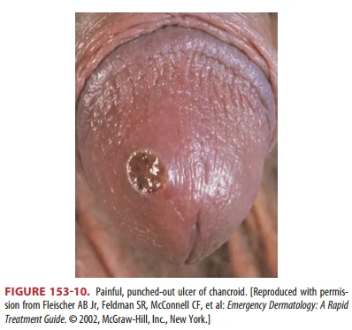
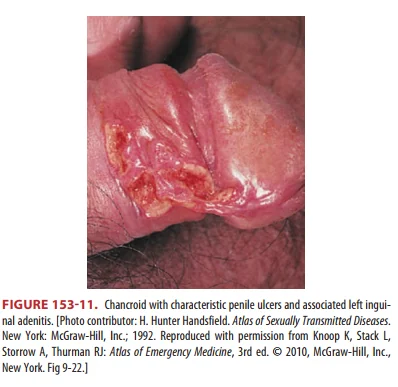
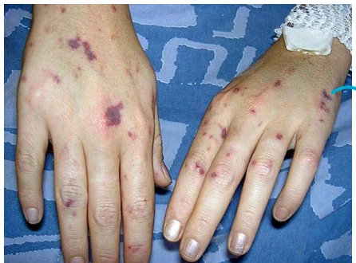
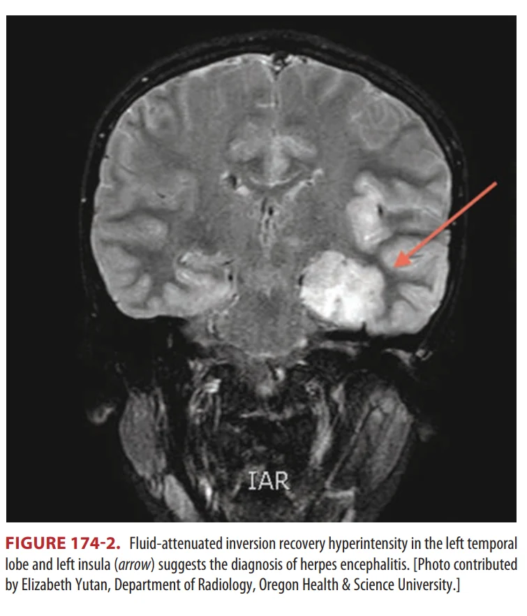
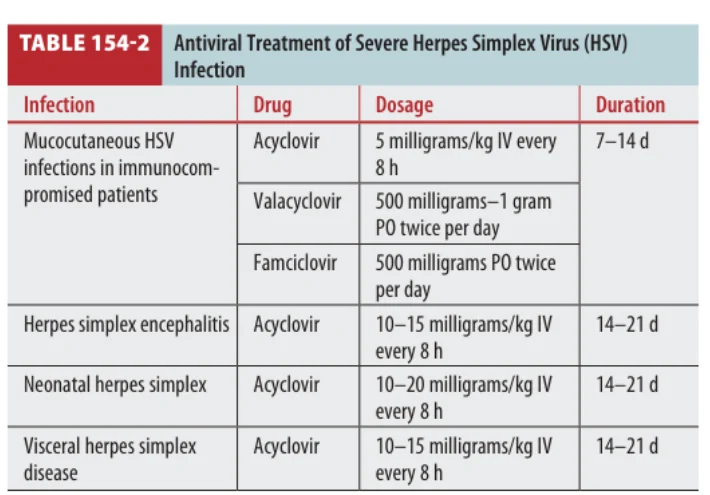
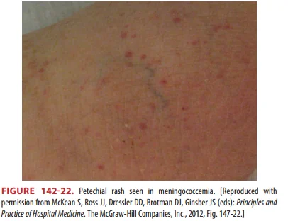
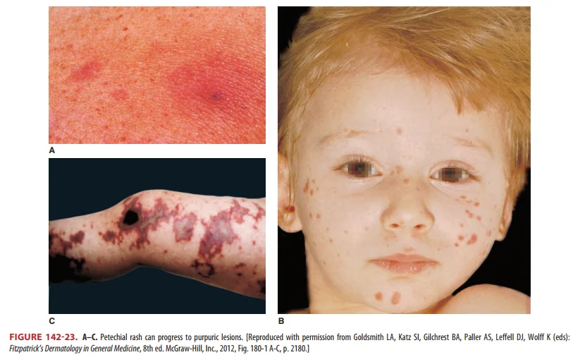

Q1. A 28-year-old man presents to the emergency department with a 4-day history of right knee pain and swelling, with painful urination. He reports having unprotected sexual intercourse 4 weeks ago. His vital signs are stable and afebrile. On examination: swollen, tender right knee with decreased range of motion, conjunctival injection in the left eye, tenderness at the urethral opening without discharge. Joint Aspiration Results: Appearance: Yellow, WBC count: 8,000 cells/mm³ (65% neutrophils), Gram stain: No organisms seen, Culture: Pending, Crystals: None observed. Laboratory Tests: Gonorrhea/Chlamydia PCR – Pending What is the most appropriate initial management for this patient?
ยังไม่ถูก
Broad IV coverage and admission would fit septic arthritis or disseminated gonococcal infection. This patient has the reactive arthritis triad pattern after sexual exposure and does not have a strongly septic synovial profile.
ถูกต้อง
This best matches Tintinalli's treatment discussion for Chlamydia-induced reactive arthritis: pain control with NSAIDs, with long-term combination antibiotic therapy using rifampin plus doxycycline or azithromycin.
ยังไม่ถูก
Supportive care alone misses the NSAID emphasis and the Chlamydia-induced reactive arthritis antibiotic strategy described in Tintinalli. Opioids also do not address the inflammatory arthritis mechanism.
ยังไม่ถูก
Consultation for urgent arthroscopic lavage ไม่ใช่คำตอบของข้อนี้.
ยังไม่ถูก
Intra-articular steroid injection is not the initial answer for this post-STI reactive arthritis pattern. Tintinalli emphasizes NSAID pain control and, for Chlamydia-induced disease, combination antibiotic therapy.
Source file: Intraining exam 100 ข้อ 12 Jan 2026.pdf
Reference: Source: Intraining exam 100 ข้อ 12 Jan 2026.pdf | p.18 | Intraining source-preserving stem/options. No official answer key was found in the PDF; keep unanswered until verified.
Painful urination and urethral tenderness point to recent urethritis.
Conjunctival injection is the finding that moves the question away from an isolated knee problem.
Knee swelling after the STI symptoms fits a reactive arthritis spectrum.
Why not septic arthritis first?
The joint fluid is not strongly septic
The patient is afebrile.
Synovial WBC is 8,000/mm³, below the classic septic cutoff.
Gram stain shows no organisms, and crystals are absent.
Management implication
NSAID + rifampin-based combination therapy
Traditional treatment is supportive with NSAID therapy for pain control.
Tintinalli notes long-term combination antibiotic therapy for Chlamydia-induced reactive arthritis.
The regimen described is rifampin 300 mg daily plus either doxycycline 100 mg twice daily or azithromycin 500 mg daily.
If clinical concern for infection rises, reassess with cultures, NAAT results, fever, toxic appearance, and repeat joint evaluation.
Tintinalli Chlamydial Infections: what to retain
Epidemiology: C. trachomatis is a very common STI and can coexist with gonorrhea.
Who gets it: it is most prevalent in people <25 years old and is often asymptomatic, especially in women but also in men.
Male presentations: urethritis, epididymitis, proctitis, or Reiter syndrome.
Reiter/reactive pattern: urethritis + conjunctivitis + rash/arthritis spectrum. In this stem, urethral tenderness + conjunctival injection + knee arthritis is the key pattern.
Female presentations: often asymptomatic cervicitis; when symptomatic, vaginal discharge, intermenstrual bleeding, or dysuria may occur.
Sterile pyuria finding: consider urethral chlamydial infection when urinary symptoms occur without typical bacterial urine findings.
Complications in women: PID, ectopic pregnancy, and infertility.
Diagnosis and treatment points from the same section
Preferred test: NAAT from first-catch urine in men and women, or swabs from endocervix/vagina in women and urethra in men.
Test performance in Tintinalli: NAAT is described as high sensitivity and specificity for chlamydia.
Patient-collected vaginal swab: FDA-cleared NAAT vaginal swabs can be self-collected and perform similarly to provider-collected swabs.
Treatment options for uncomplicated chlamydia: CDC-referenced treatment in Tintinalli includes single-dose azithromycin or doxycycline twice daily for 7 days.
Pregnancy: azithromycin is safe; pregnant patients should have test-of-cure 3-4 weeks after treatment; amoxicillin is an alternative if azithromycin cannot be used.
Partner management: partners with sexual contact in the last 60 days should be referred for testing and treatment; expedited partner therapy can be used where appropriate.
Tintinalli Reactive Arthritis: what makes B the answer
Definition: reactive arthritis, formerly Reiter syndrome, is a seronegative spondyloarthropathy.
Timing: acute asymmetric oligoarthritis occurs 2-6 weeks after an infectious illness.
Diagnosis note: all three components are not required for diagnosis.
Postvenereal triggers:Chlamydia and Ureaplasma are common inciting agents.
Postdysentery triggers: Salmonella, Shigella, Yersinia, and Campylobacter are implicated; E. coli and C. difficile are possible agents.
Conjunctivitis frequency: about one third of postvenereal cases and >50% of postdysentery cases.
Joint pattern: lower extremity joints are typical, including the feet; back or buttock pain can occur.
Other finding: sausage digit can occur but is not specific.
Synovial fluid: aspirates show an inflammatory profile.
Reactive arthritis treatment in Tintinalli
Traditional treatment: supportive care with emphasis on pain control using NSAID therapy.
Antibiotic update: antibiotics were previously thought to be of no benefit, but long-term combination antibiotic therapy is now used for Chlamydia-induced reactive arthritis.
Regimen stated in Tintinalli:rifampin 300 mg daily plus either doxycycline 100 mg twice daily or azithromycin 500 mg daily.
Procedural note: arthroscopic synovectomy may provide benefit in selected cases, but this is not the initial answer in this stem.
Follow-up: suspected cases should be referred to rheumatology for confirmation of diagnosis and management.
Q1 has WBC 8,000/mm³ and lacks classic DGI rash/fever, so the clinical pattern still favors reactive arthritis.
Why the synovial fluid matters in this question
The knee aspirate is not normal, but it is also not the classic septic arthritis profile.
WBC 8,000/mm³ sits in the inflammatory range used by searched synovial fluid references, while Tintinalli's classic septic threshold is much higher.
No organisms on Gram stain and no crystals make the question lean back to the clinical pattern: post-STI reactive arthritis.
If the patient became febrile, toxic, immunocompromised, or had worsening joint findings, the management would shift toward septic arthritis workup and empiric treatment.
Source anchors for this teaching point
Tintinalli 9th ed., Ch.153 p.1014: chlamydial infection in men can cause urethritis and Reiter syndrome.
Tintinalli 9th ed., Ch.284 p.1927: reactive arthritis treatment discussion; this is the key treatment source for answer B.
Tintinalli 9th ed., Ch.284 p.1921, Table 284-3: joint aspiration profiles for septic arthritis, gonococcal arthritis, and other patient groups.
Tintinalli 9th ed., Ch.284 p.1924, Figures 284-6 to 284-8: knee arthrocentesis landmarks and bedside ultrasound demonstration.
AAFP Approach to Septic Arthritis: searched external synovial fluid analysis table with WBC/PMN/Gram stain profiles.
Q2. A 25-year-old pregnant woman at 20 weeks of gestation presents with vaginal discharge and dysuria. A nucleic acid amplification test (NAAT) confirms gonorrhea. She has history of severe allergic to penicillin. What is the most appropriate treatment option?
ยังไม่ถูก
Ceftriaxone 500 mg IM ไม่ใช่คำตอบของข้อนี้.
ถูกต้อง
Best answer. Tintinalli Ch.153 p.1017 states that pregnant patients allergic to cephalosporins may receive azithromycin 2 g PO single dose or spectinomycin 2 g IM single dose.
ยังไม่ถูก
Ceftriaxone plus azithromycin is the usual pregnancy regimen when cephalosporins can be used, but the question gives severe allergy history.
ยังไม่ถูก
Doxycycline is not appropriate in pregnancy, and this choice also includes ceftriaxone despite the severe allergy history.
ยังไม่ถูก
Spectinomycin 2 g IM single dose is a textbook alternative, but this option adds azithromycin 1 g; option B more directly matches Tintinalli p.1017 for cephalosporin-allergic pregnancy.
Source file: Intraining exam 100 ข้อ 12 Jan 2026.pdf
Reference: Source: Intraining exam 100 ข้อ 12 Jan 2026.pdf | p.22 | Intraining source-preserving stem/options. No official answer key was found in the PDF; keep unanswered until verified. | Textbook: Tintinalli 9th ed. Ch.153 p.1015 Table 153-2; p.1017 Gonococcal infections treatment.
ซ่อนบทเรียน/เฉลยเปิดบทเรียน/เฉลยบทเรียนเดิมPost-question learning: Gonorrhea in pregnancy with cephalosporin allergy
Quick Recall: answer first
ลองตอบในใจก่อน แล้วค่อยกดเปิดดูเฉลย
Pregnant patient, NAAT-confirmed gonorrhea, severe allergy history: which option avoids doxycycline and provides the textbook alternative?
B. Azithromycin 2 g PO single dose
B. Azithromycin 2 g PO single dose is the cleanest match to Tintinalli p.1017 for pregnancy with cephalosporin allergy.
Doxycycline is not appropriate in pregnancy, so option D should not be chosen.
Ceftriaxone + azithromycin is the usual pregnancy regimen when cephalosporins can be used.
Tintinalli p.1017 gives two allergy alternatives: azithromycin 2 g PO single dose or spectinomycin 2 g IM single dose.
Gonorrhea: pregnancy changes the antibiotic choice
NAAT-confirmed gonorrhea in pregnancy needs treatment that covers gonorrhea and avoids pregnancy-inappropriate drugs. With severe cephalosporin allergy concern, Tintinalli p.1017 lists azithromycin 2 g PO single dose as a direct alternative.
PregnancyNAAT-confirmed gonorrheaAvoid doxycyclineAllergy alternative
Clinical features
Often asymptomatic in women
Gonorrhea is caused by N. gonorrhoeae, a gram-negative diplococcus.
Most infections in women are asymptomatic and commonly coexist with chlamydia.
If symptomatic: lower abdominal discomfort, dysuria, mucopurulent cervicitis, or discharge.
Complications include PID, chronic pelvic pain, ectopic pregnancy, and infertility-related morbidity.
Diagnosis
NAAT is preferred
CDC recommends NAAT on cervical, vaginal, urethral, or urine specimens.
Self-collected specimens can be used when the test is validated for that specimen type.
Gram stain in symptomatic men can confirm urethral disease, but a negative result does not rule out infection.
DGI cultures are often low yield; cervical, rectal, and pharyngeal cultures can improve detection.
Treatment
Pregnancy + allergy
Tintinalli p.1017: pregnancy treatment is cephalosporin + azithromycin when cephalosporins can be used.
If allergic to cephalosporins: azithromycin 2 g PO or spectinomycin 2 g IM single dose.
In this answer set, B is the cleanest wording match because it is exactly azithromycin 2 g PO single dose.
Doxycycline-containing regimens should be avoided in pregnancy.
Answer choice reasoning for this question
Choice
Why it is or is not best
A. Ceftriaxone 500 mg IM
No chlamydia coverage and does not address the severe allergy issue.
B. Azithromycin 2 g PO single dose
Best answer. Directly matches Tintinalli p.1017 for pregnancy with cephalosporin allergy.
C. Ceftriaxone 500 mg IM + azithromycin 1 g
Usual pregnancy direction if cephalosporins can be used, but the severe allergy history makes this less appropriate here.
D. Ceftriaxone 500 mg IM + doxycycline
Wrong in pregnancy because doxycycline should be avoided.
E. Spectinomycin 2 g IM + azithromycin 1 g
Spectinomycin alone is a textbook alternative, but this option adds azithromycin 1 g and is less exact than B.
Treatment paragraph: gonorrhea in pregnancy with cephalosporin allergy
Gonorrhea row: pregnancy/lactation includes ceftriaxone + azithromycin or spectinomycin 2 g IM single dose; p.1017 also lists azithromycin 2 g PO single dose for cephalosporin-allergic pregnancy.
p.1015, Table 153-2: Gonorrhea treatment row; pregnancy/lactation column includes ceftriaxone + azithromycin or spectinomycin 2 g IM single dose.
p.1017, Gonococcal infections - Treatment: pregnant women receive cephalosporin + azithromycin; if allergic to cephalosporins, use azithromycin 2 g PO or spectinomycin 2 g IM single dose.
p.1017, Diagnosis: NAAT is recommended on cervical, vaginal, urethral, or urine specimens.
Gonococcal Infection: บทเรียนจาก textbook Applied to the Question
On pp. 1017-1018, Tintinalli frames gonorrhea as a sexually transmitted infection caused by Neisseria gonorrhoeae. Local infection may involve the cervix, urethra, rectum, or pharynx, but disseminated gonococcal infection is recognized by systemic findings. The important exam pattern is not vaginal discharge; it is the combination of systemic illness, joint or tendon involvement, and pustular extremity lesions.
High-yield DGI findings from the GONOCOCCAL INFECTIONS section
Skin: petechial, pustular, or maculopapular lesions, often acral or on the extremities.
Joints/tendons: asymmetric arthralgia, tenosynovitis, septic arthritis, or migratory joint pain.
Systemic features: fever, malaise, and constitutional symptoms may dominate the presentation.
Genital symptoms: local discharge or pelvic pain may be absent, so absence of these findings does not exclude DGI.
Diagnostic yield: cultures from blood, lesion, and joint specimens may be positive only in a subset of cases; mucosal site testing improves the diagnostic workup.
How Each Question Finding Maps to Tintinalli Ch.153
Question finding
Textbook-linked interpretation
Diagnostic value
Sexually active 30-year-old woman
Gonorrhea is a sexually transmitted infection caused by N. gonorrhoeae.
Establishes STI risk context.
Fever, malaise, tachycardia
DGI may present with fever or general malaise.
Supports dissemination rather than isolated mucosal infection.
Pain at ankle and knee
DGI may produce asymmetric arthralgias, tenosynovitis, or septic arthritis.
Matches the musculoskeletal component of DGI.
Pustular rash on extremities
DGI skin findings include petechial or pustular acral lesions.
High-yield visual finding for DGI.
No discharge or abdominal pain
Disseminated disease may occur without prominent local genital symptoms.
Should not distract away from DGI.
Figure 153-3: Disseminated Gonococcal Infection
Tintinalli Chapter 153, p. 1017, Figure 153-3
Maculopapular and pustular extremity lesions in disseminated gonococcal infection.
Treatment Section: Why the Answer Uses Ceftriaxone 1 g IV
The treatment paragraph on p. 1017 gives the uncomplicated gonorrhea framework, while the continuation on p. 1018 specifies higher-dose ceftriaxone for disseminated disease. This distinction is why the answer is not the lower-dose ceftriaxone 250 mg IM regimen from Table 153-2. In the rebuilt options, ceftriaxone 1 g IV is the DGI-directed component, and doxycycline is included for possible chlamydial coinfection.
Disseminated Disease Treatment Passage
Tintinalli Chapter 153, p. 1018
Continuation of the GONOCOCCAL INFECTIONS treatment section: disseminated disease uses higher-dose ceftriaxone; gonococcemia requires hospitalization and evaluation for complications.
Textbook source used for this item: Tintinalli Chapter 153, Sexually Transmitted Infections, pp. 1016 and 1019-1020.
The syphilis treatment row appears in Table 153-2 on p. 1016.
The core text on pp. 1019-1020 reviews the clinical stages, diagnostic approach, standard treatment, and the Jarisch-Herxheimer reaction.
Clinical Stages
the question is classic for Jarisch-Herxheimer reaction rather than drug allergy.
The patient already has secondary syphilis.
She received benzathine penicillin G yesterday and then returned with malaise, arthralgia, fever, and persistent palm-and-sole rash.
Tintinalli states that this reaction occurs most frequently after treatment of early syphilis.
Diagnosis Summary
The reaction is characterized by an acute febrile reaction.
Typical associated symptoms include headache and myalgias.
The syndrome appears within the first 24 hours after treatment.
That timing is the decisive finding in this item.
Treatment and the Exam Point
Serum sickness is delayed and therefore weaker as the answer.
A generic hypersensitivity reaction would emphasize urticaria, bronchospasm, angioedema, or anaphylaxis rather than an influenza-like syndrome.
The practical teaching point is to recognize the syndrome, continue appropriate syphilis management, provide supportive care, and counsel patients in advance.
Why This Question Is Jarisch-Herxheimer Reaction
question feature
Textbook match
Why it matters
Secondary syphilis treated yesterday
Occurs most often after treatment of early syphilis.
Young sexually active patient with migratory polyarthralgia/arthritis, possible tenosynovitis, pustular skin lesions, and sometimes no genital symptoms.
Best fit for the recovered core.
Reactive arthritis
Postinfectious arthritis, often with enthesitis or conjunctivitis/urethritis pattern.
The recovered stem is too short to support the full reactive-arthritis constellation.
Rheumatic fever
Migratory polyarthritis after streptococcal pharyngitis with Jones criteria context.
The STI-risk framing fits DGI better.
Staphylococcal septic arthritis
Usually monoarticular, acutely inflamed septic joint.
The multiple-joint migratory pattern is less typical.
Disseminated gonococcal infection
This item keeps the old recoverable line first, then shows a clearer practice version below. The first line preserves the old-question core that was recoverable: a 20-year-old man with knee pain, ankle pain, and multiple-joint pain. The second line is a practice question rewritten from the old source line built from that core so the question is usable for training.
High-yield DGI findings from the GONOCOCCAL INFECTIONS section
The intended answer for the practice version is disseminated gonococcal infection (DGI).
The decisive clinical pattern is a young sexually active patient with migratory polyarthralgia or arthritis involving multiple joints such as knee and ankle.
exam DGI may also include tenosynovitis, septic arthritis, and pustular or acral skin lesions.
Urethral or cervical symptoms may be absent, so their absence should not exclude DGI.
This item is kept as a โจทย์ที่ปรับให้อ่านครบจากแกนเดิม rather than a fully source-verified official MCQ.
Figure 153-3: Disseminated Gonococcal Infection
Tintinalli Chapter 153, p. 1017, Figure 153-3
Clinical image supporting the DGI pattern used in the rebuilt practice question.
Q6. หญิง 30 ปี มาด้วยปวดเข่าขวา ปวดข้อเท้าซ้าย ปวดหลัง ตรวจพบ Achilles tendon inflammation แต่ไม่มี limitation of range of motion. มีประวัติ chlamydia และรักษาครบเมื่อ 1 สัปดาห์ก่อน. What is the most appropriate management?
ยังไม่ถูก
Ceftriaxone ไม่ใช่คำตอบของข้อนี้.
ยังไม่ถูก
Doxycycline alone treats chlamydial infection, but the patient already completed chlamydia treatment. Tintinalli p.1927 emphasizes NSAID pain control for reactive arthritis; selected Chlamydia-induced reactive arthritis regimens use combination therapy, not doxycycline alone.
ถูกต้อง
Tintinalli Ch.284 p.1927 describes reactive arthritis as postinfectious asymmetric oligoarthritis; traditional treatment is supportive with pain control using NSAID therapy. In this option set, indomethacin is the NSAID choice.
ยังไม่ถูก
Systemic corticosteroids are not the initial textbook answer for this uncomplicated reactive arthritis pattern. The first management step in the provided choices is NSAID-based symptom control.
ยังไม่ถูก
Methotrexate is a disease-modifying drug for chronic inflammatory arthritis management, not the initial ED management for acute postinfectious reactive arthritis in this stem.
ซ่อนบทเรียน/เฉลยเปิดบทเรียน/เฉลยบทเรียนเดิมบทเรียนหลังข้อ: Reactive arthritis after Chlamydia
Quick Recall: answer pattern
ลองตอบในใจก่อน แล้วค่อยกดเปิดดูเฉลย
Recent treated chlamydia + asymmetric lower-extremity arthritis/enthesitis/back pain: what is the initial management in this option set?
C. Indomethacin
This is reactive arthritis after a genitourinary infection.
The answer choice that matches initial symptom control is an NSAID.
Tintinalli Ch.284 p.1927: treatment has traditionally been supportive, emphasizing pain control with NSAID therapy.
Tintinalli 9th ed. Chapter 284, p.1927
Reactive arthritis: why indomethacin fits this question
Postinfectious inflammatory arthritis often follows genitourinary or enteric infection. The exam move is to recognize the syndrome and choose NSAID-based symptom control when the infection has already been treated and no septic joint pattern is given.
2-6 weeks after infectionasymmetric oligoarthritislower extremity jointsenthesitis/Achilles painNSAID first
Definition
Postinfectious seronegative spondyloarthropathy
Reactive arthritis was formerly called Reiter syndrome.
It is characterized by acute asymmetric oligoarthritis occurring 2-6 weeks after an infectious illness.
The classic triad is arthritis, urethritis, and conjunctivitis, but all three are not required for diagnosis.
Trigger organisms
Chlamydia is the key postvenereal trigger
Chlamydia and Ureaplasma are common causes of postvenereal reactive arthritis.
Postdysentery reactive arthritis can follow Salmonella, Shigella, Yersinia, or Campylobacter.
Possible enteric triggers also include E. coli and Clostridium difficile.
Clinical pattern
Lower extremity arthritis + enthesitis
Joint involvement typically affects the lower extremities, including the feet.
Back or buttock pain can occur.
Diffuse swelling of an entire digit, or sausage digit, may be seen but is not specific.
Synovial fluid usually shows an inflammatory profile, not necessarily bacterial septic arthritis.
Treatment
NSAID symptom control is the answer here
Tintinalli p.1927: treatment has traditionally been supportive, with emphasis on pain control using NSAIDs.
In this question, indomethacin is the NSAID option, so it is the best answer.
Long-term combination antibiotics may be used for Chlamydia-induced reactive arthritis: rifampin 300 mg daily plus either doxycycline 100 mg twice daily or azithromycin 500 mg daily.
Suspected cases should be referred to rheumatology for confirmation and longer-term management.
Do not overcall this as untreated STI or septic arthritis
Q8. A 35-year-old man presents with a single painless clean-based 1-cm ulcer with rolled edges on the glans penis. What is the most appropriate treatment?
ยังไม่ถูก
Azithromycin ไม่ใช่คำตอบของข้อนี้.
ยังไม่ถูก
Doxycycline can be used when penicillin cannot be given, but benzathine penicillin G is the standard first-line treatment for uncomplicated syphilis.
Painful penile ulcer with inguinal lymphadenopathy is the classic chancroid pattern. Chancroid is caused by Haemophilus ducreyi, matching the painful ulcer plus tender node/bubo framework in Tintinalli Ch.153.
ยังไม่ถูก
Treponema pallidum causes syphilis. Primary syphilis classically presents with a painless, indurated chancre rather than a painful penile ulcer with tender inguinal lymphadenopathy.
ยังไม่ถูก
HSV can cause painful genital ulcers, usually as grouped vesicles or shallow recurrent ulcers. The added inguinal lymphadenopathy pattern in this stem is more characteristic of chancroid.
ยังไม่ถูก
Chlamydia trachomatis L1-L3 causes lymphogranuloma venereum, which often starts with a small transient genital lesion followed by painful inguinal/femoral lymphadenopathy. The painful penile ulcer itself points more toward chancroid.
ยังไม่ถูก
Klebsiella granulomatis causes granuloma inguinale/donovanosis, typically a painless beefy-red ulcer that bleeds easily and usually lacks prominent tender lymphadenopathy.
Classic painful ulcer with undermined margins and necrotic exudative base.

Figure 153-11: Chancroid with bubo
Tintinalli Chapter 153, p. 1021, Figure 153-11
Painful inguinal lymphadenopathy may progress to a bubo with suppuration.

High-yield summary
Chancroid at a glance
Use the ulcer morphology, the node pattern, and the treatment options together. The exam split is mainly between painful chancroid and painless syphilis.
Green vaginal discharge with an erythematous/inflamed cervix fits trichomoniasis. Tintinalli describes trichomoniasis as causing thin/watery or yellow-green/frothy discharge, vulvar irritation or dysuria, and punctate cervical hemorrhages/strawberry cervix. Treatment is oral metronidazole.
ยังไม่ถูก
Fluconazole treats vulvovaginal candidiasis, which more typically causes vulvar pruritus/irritation and thick white curd-like discharge. This stem gives green discharge and an inflamed cervix, favoring trichomoniasis.
ยังไม่ถูก
Acyclovir treats genital herpes. HSV usually presents with painful vesicles/ulcers rather than green vaginal discharge with cervicitis.
ยังไม่ถูก
Ceftriaxone alone would cover gonorrhea but does not treat trichomoniasis. The discharge color/cervical inflammation pattern here is best matched by metronidazole therapy.
ยังไม่ถูก
Benzathine penicillin G treats syphilis. Syphilis causes chancre or secondary rash patterns, not green vaginal discharge with an inflamed cervix.
Green discharge plus an inflamed cervix should make you think of Trichomonas vaginalis. In this answer set, the correct treatment is metronidazole; remember to treat partners and avoid alcohol with nitroimidazoles.
Tintinalli Ch.153 p.1017 describes disseminated gonococcal infection as petechial or pustular acral skin lesions with asymmetric arthralgias, tenosynovitis or septic arthritis, and fever or malaise. In this short old-exam stem, rash plus knee/ankle arthralgia in a reproductive-age man best fits gonococcal infection/DGI.
ยังไม่ถูก
Reiter syndrome/reactive arthritis can follow Chlamydia and causes asymmetric lower-extremity arthritis, but the short stem emphasizes rash plus joint pain without the urethritis/conjunctivitis/enthesitis pattern. The DGI pattern from Tintinalli p.1017 is a better fit.
Source file: Copy of CPR one night miracle.pdf
Reference: Source: Copy of CPR one night miracle.pdf | p.144-145 | Textbook: Tintinalli 9th ed. Ch.153 p.1017 Figure 153-3; p.1018 treatment of disseminated disease.
Young sexually active patient with migratory polyarthralgia/arthritis, possible tenosynovitis, pustular skin lesions, and sometimes no genital symptoms.
Best fit for the recovered core.
Reactive arthritis
Postinfectious arthritis, often with enthesitis or conjunctivitis/urethritis pattern.
The recovered stem is too short to support the full reactive-arthritis constellation.
Rheumatic fever
Migratory polyarthritis after streptococcal pharyngitis with Jones criteria context.
The STI-risk framing fits DGI better.
Staphylococcal septic arthritis
Usually monoarticular, acutely inflamed septic joint.
The multiple-joint migratory pattern is less typical.
Disseminated gonococcal infection
This item keeps the old recoverable line first, then shows a clearer practice version below. The first line preserves the old-question core that was recoverable: a 20-year-old man with knee pain, ankle pain, and multiple-joint pain. The second line is a practice question rewritten from the old source line built from that core so the question is usable for training.
High-yield DGI findings from the GONOCOCCAL INFECTIONS section
The intended answer for the practice version is disseminated gonococcal infection (DGI).
The decisive clinical pattern is a young sexually active patient with migratory polyarthralgia or arthritis involving multiple joints such as knee and ankle.
exam DGI may also include tenosynovitis, septic arthritis, and pustular or acral skin lesions.
Urethral or cervical symptoms may be absent, so their absence should not exclude DGI.
This item is kept as a โจทย์ที่ปรับให้อ่านครบจากแกนเดิม rather than a fully source-verified official MCQ.
Figure 153-3: Disseminated Gonococcal Infection
Tintinalli Chapter 153, p. 1017, Figure 153-3
Clinical image supporting the DGI pattern used in the rebuilt practice question.
Acceptable by current CDC guidance for suspected gonococcal urethritis when chlamydia has not been excluded: use ceftriaxone/third-generation cephalosporin coverage for gonorrhea and add doxycycline for chlamydia coverage.
ยังไม่ถูก
Acceptable by Tintinalli 9th ed. p.1017/Table 153-2 era wording: gonorrhea treatment is described as ceftriaxone plus single-dose azithromycin. This is the textbook-aligned answer for the older source.
ยังไม่ถูก
Nitrofurantoin treats uncomplicated bacterial cystitis, not sexually transmitted urethritis. It does not cover gonorrhea or chlamydia.
Source file: Copy of CPR one night miracle.pdf
Reference: Source: Copy of CPR one night miracle.pdf | p.159-160 | Textbook: Tintinalli 9th ed. Ch.153 p.1015 Table 153-2; p.1017 Figure 153-2 and gonococcal infections; p.1018 nongonococcal urethritis. Current anchor: CDC STI Treatment Guidelines 2021/2020 gonorrhea update: ceftriaxone; add doxycycline if chlamydia not excluded.
ซ่อนบทเรียน/เฉลยเปิดบทเรียน/เฉลยบทเรียนเดิมบทเรียนหลังข้อ: Gonococcal urethritis and empiric STI coverage
Quick Recall: dysuria in a young man
ลองตอบในใจก่อน แล้วค่อยกดเปิดดูเฉลย
Young male with dysuria in an STI section: what needs empiric coverage?
A/B accepted: B matches Tintinalli 9th p.1017; A matches current CDC-style coverage when chlamydia has not been excluded.
Think urethritis, not simple cystitis, when a young male presents with dysuria in an STI context.
B. Third-generation cephalosporin + azithromycin is acceptable because Tintinalli 9th p.1017 uses the older ceftriaxone + azithromycin gonorrhea regimen.
A. Third-generation cephalosporin + doxycycline is acceptable by current CDC guidance when chlamydia has not been excluded.
Nitrofurantoin does not cover the STI pathogens tested here.
Figure 153-2: Gonococcal urethritis in a male
Tintinalli Chapter 153, p.1017, Figure 153-2
Mucopurulent urethral discharge in male gonococcal urethritis. This is the classic clinical picture behind male dysuria in gonorrhea.
Table 153-2: Chlamydia and gonorrhea treatment rows
Tintinalli Chapter 153, p.1015, Table 153-2
Treatment table section showing chlamydia and gonorrhea regimens. Use it to remember why empiric urethritis coverage pairs gonorrhea coverage with chlamydia coverage.
Gonococcal urethritis: why A and B are both acceptable
The short stem tests male urethritis coverage. Tintinalli 9th uses the older ceftriaxone + azithromycin gonorrhea regimen, while current CDC guidance uses ceftriaxone and adds doxycycline if chlamydia has not been excluded.
male dysuriaurethritisTintinalli: ceftriaxone + azithroCDC current: ceftriaxone + doxy if chlamydia not excludedavoid nitrofurantoin
Organism
Gonorrhea basics
Gonorrhea is the second most commonly reported STI.
It is caused by Neisseria gonorrhoeae, a gram-negative diplococcus.
Gonococcal infection often coexists with chlamydial infection.
Clinical features
Men are usually symptomatic
In men, 80-90% develop symptoms within 2 weeks of exposure.
Dysuria and profuse purulent penile discharge are the common presentation; Figure 153-2 shows this pattern.
Gonorrhea can also cause epididymitis or prostatitis.
Women are often asymptomatic; complications include PID, ectopic pregnancy, chronic pelvic pain, and infertility-related morbidity.
DGI reminder
When gonorrhea disseminates
DGI can cause petechial or pustular acral skin lesions, asymmetric arthralgias, tenosynovitis or septic arthritis, and fever/malaise.
Diagnosis is difficult because blood, lesion, and joint cultures are positive in only 20-50% of cases.
Cervical, rectal, and pharyngeal cultures can improve diagnostic yield.
Diagnosis and treatment
NAAT and empiric coverage
CDC recommends NAAT from cervical, vaginal, urethral, or urine specimens; patient self-collection may be possible depending on the assay.
In symptomatic men, Gram stain showing PMNs with intracellular diplococci can confirm gonorrhea, but a negative result does not rule it out.
B is acceptable because Tintinalli 9th p.1017 describes gonorrhea treatment as ceftriaxone plus azithromycin.
A is acceptable by current CDC guidance: ceftriaxone for gonorrhea, plus doxycycline if chlamydial infection has not been excluded.
Why not nitrofurantoin?
Cystitis drug, not STI urethritis coverage
Nitrofurantoin is for lower UTI/cystitis coverage.
It does not treat gonorrhea or chlamydia.
Male dysuria in an STI question should push toward urethritis coverage, not uncomplicated cystitis treatment.
Why the answer is A/B
Q14. หญิงมีประวัติ chlamydia UTI หลังได้ antibiotic ครบ course ต่อมาปวดข้อเข่า ข้อเท้า เอ็นร้อยหวาย และปวดหลัง. What is the most appropriate treatment?
ยังไม่ถูก
Systemic corticosteroids are not the initial textbook answer for this uncomplicated postinfectious reactive arthritis pattern. Tintinalli p.1927 emphasizes supportive pain control with NSAID therapy.
ถูกต้อง
Tintinalli Ch.284 p.1927 describes reactive arthritis as postinfectious asymmetric oligoarthritis; traditional treatment is supportive with pain control using NSAID therapy. In this option set, indomethacin is the NSAID choice.
ยังไม่ถูก
Ceftriaxone would fit gonorrhea or disseminated gonococcal infection, but this stem gives treated chlamydia followed by knee/ankle pain, Achilles inflammation, and back pain, which supports reactive arthritis rather than active gonococcal disease.
Source file: Copy of CPR one night miracle.pdf
Reference: Source: Copy of CPR one night miracle.pdf | p.142-143 | Textbook: Tintinalli 9th ed. Ch.284 p.1927, Reactive arthritis.
ซ่อนบทเรียน/เฉลยเปิดบทเรียน/เฉลยบทเรียนเดิมบทเรียนหลังข้อ: Reactive arthritis after Chlamydia
Quick Recall: answer pattern
ลองตอบในใจก่อน แล้วค่อยกดเปิดดูเฉลย
Recent treated chlamydia + asymmetric lower-extremity arthritis/enthesitis/back pain: what is the initial management in this option set?
C. Indomethacin
This is reactive arthritis after a genitourinary infection.
The answer choice that matches initial symptom control is an NSAID.
Tintinalli Ch.284 p.1927: treatment has traditionally been supportive, emphasizing pain control with NSAID therapy.
Tintinalli 9th ed. Chapter 284, p.1927
Reactive arthritis: why indomethacin fits this question
Postinfectious inflammatory arthritis often follows genitourinary or enteric infection. The exam move is to recognize the syndrome and choose NSAID-based symptom control when the infection has already been treated and no septic joint pattern is given.
2-6 weeks after infectionasymmetric oligoarthritislower extremity jointsenthesitis/Achilles painNSAID first
Definition
Postinfectious seronegative spondyloarthropathy
Reactive arthritis was formerly called Reiter syndrome.
It is characterized by acute asymmetric oligoarthritis occurring 2-6 weeks after an infectious illness.
The classic triad is arthritis, urethritis, and conjunctivitis, but all three are not required for diagnosis.
Trigger organisms
Chlamydia is the key postvenereal trigger
Chlamydia and Ureaplasma are common causes of postvenereal reactive arthritis.
Postdysentery reactive arthritis can follow Salmonella, Shigella, Yersinia, or Campylobacter.
Possible enteric triggers also include E. coli and Clostridium difficile.
Clinical pattern
Lower extremity arthritis + enthesitis
Joint involvement typically affects the lower extremities, including the feet.
Back or buttock pain can occur.
Diffuse swelling of an entire digit, or sausage digit, may be seen but is not specific.
Synovial fluid usually shows an inflammatory profile, not necessarily bacterial septic arthritis.
Treatment
NSAID symptom control is the answer here
Tintinalli p.1927: treatment has traditionally been supportive, with emphasis on pain control using NSAIDs.
In this question, indomethacin is the NSAID option, so it is the best answer.
Long-term combination antibiotics may be used for Chlamydia-induced reactive arthritis: rifampin 300 mg daily plus either doxycycline 100 mg twice daily or azithromycin 500 mg daily.
Suspected cases should be referred to rheumatology for confirmation and longer-term management.
Do not overcall this as untreated STI or septic arthritis
CNS Infection / Meningitis / Encephalitis
Q1. An 18-year-old woman with no prior medical conditions presented to the hospital with an acute febrile illness lasting one day. The physician observed that she had a high-grade fever, headaches, drowsiness, and a diffuse rash, as shown. What is the most appropriate antibiotic for this patient?
Source image

Source image referenced by the stem (“as shown”). The rash supports suspected meningococcemia/acute bacterial meningitis requiring immediate empiric therapy.
ยังไม่ถูก
Meropenem can be an alternative in severe beta-lactam allergy pathways, but it is not the standard first-line empiric regimen for an immunocompetent 18-year-old with suspected community-acquired bacterial meningitis.
ยังไม่ถูก
Ciprofloxacin is used for meningococcal exposure prophylaxis in selected adult contacts, not for primary treatment of suspected acute bacterial meningitis with altered mental status and purpuric rash.
ยังไม่ถูก
Ceftriaxone plus ampicillin would add Listeria coverage. Ampicillin is mainly added for age >50 years or immunocompromised patients; this patient is a healthy 18-year-old.
ถูกต้อง
Correct. Tintinalli Ch.174 p.1173 recommends a third-generation cephalosporin such as cefotaxime or ceftriaxone plus vancomycin for adults 18-49 years with presumptive bacterial meningitis. The purpuric rash also raises concern for meningococcemia.
ยังไม่ถูก
Trimethoprim-sulfamethoxazole is not the standard empiric treatment for acute bacterial meningitis in this presentation.
Source file: Intraining exam 100 ข้อ 12 Jan 2026.pdf
An 18-year-old with acute fever, headache, drowsiness, and diffuse purpuric rash needs what antibiotic pattern first?
D. Cefotaxime plus vancomycin
Diagnosis pattern: acute bacterial meningitis with suspected meningococcemia.
Purpuric/petechial rash strongly raises concern for Neisseria meningitidis.
For empiric meningitis in an adult age 18-49: third-generation cephalosporin + vancomycin.
Do not delay antibiotics for CT or LP if bacterial meningitis is clinically suspected.
Table 174-4: Empiric treatment for bacterial meningitis
Tintinalli 9th ed. Ch.174 p.1173, Table 174-4
For an immunocompetent adult, Table 174-4 lists cefotaxime 2 g IV or ceftriaxone 2 g IV plus vancomycin 15-20 mg/kg IV to cover S. pneumoniae and N. meningitidis. Add ampicillin for age >50 years or immunocompromised patients to cover L. monocytogenes.
This is a time-critical infection question. The rash points toward meningococcemia, while altered mental status and headache support CNS infection. Initial treatment must cover the common adult meningitis pathogens immediately.
This recovered item asks diagnosis, not antibiotic regimen. With only “AFI 1 day + headache + skin rash,” the intended recovered answer is meningococcemia. Do not import drowsiness, a rash image, or cefotaxime+vancomycin from the other meningitis question unless those details are present in this stem.
Tintinalli Ch.151 p.1000 + Ch.174 p.1173-1174
AFI with headache and rash: meningococcemia pattern
A very short fever-rash stem can be dangerous because meningococcemia may progress rapidly. If meningeal signs, altered mental status, shock, petechiae/purpura, or toxicity are present, treat as time-critical meningococcal disease/meningitis while evaluating.
acute feverheadacheskin rashmeningococcemiado not delay treatment if toxic
Diagnosis clue
Why meningococcemia is plausible
Acute febrile illness plus headache and rash is a classic board trigger for meningococcal disease.
Petechial or purpuric rash would make the suspicion much stronger, but the recovered stem only says skin rash.
Because the source is fragmentary, keep the answer tied to the recovered key/choice rather than inventing extra findings.
Management if suspected clinically
Think sepsis + meningitis pathway
Assess airway, circulation, shock, and mental status immediately.
If bacterial meningitis/meningococcemia is suspected, draw cultures if feasible but do not delay antibiotics for CT or LP.
Adult empiric meningitis coverage commonly uses a third-generation cephalosporin plus vancomycin; add ampicillin in older/immunocompromised patients.
Close contacts may need chemoprophylaxis depending on exposure type and local guidance.
This item itself is asking diagnosis, so prophylaxis details belong in a separate contact-prophylaxis question.
Question mapping
Recovered stem detail
How to interpret
AFI 1 day
Acute infectious syndrome; meningococcemia can progress rapidly.
Headache
Raises concern for CNS/meningeal involvement if accompanied by neck stiffness, altered mental status, or toxicity.
Skin rash
Meningococcemia is the recovered intended diagnosis, especially if rash is petechial/purpuric.
Only one option recovered: Meningococcemia
Keep answer as A but mark as fragment/source-supported, not a fully reconstructed differential.
Q3. A 2-month-old girl is brought to the emergency department by her parents due to high fever (40.0°C) and irritability for the past 12 hours. They report that she has been feeding poorly, is unusually sleepy, and has had episodes of vomiting. On examination: Heart Rate: 170 bpm, Respiratory Rate: 35/min, Blood Pressure: 75/45 mmHg, Oxygen Saturation: 98% on room air. The infant is lethargic, with a bulging fontanelle and a positive Brudzinski sign. Initial management includes IV fluid hydration and a septic workup, which shows thrombocytopenia on the CBC. What is the appropriate next step of management?
ถูกต้อง
Empiric antibiotics should be started promptly in suspected bacterial meningitis and should not wait for CT or lumbar puncture when those steps would delay treatment.
ยังไม่ถูก
CT should not delay treatment in an infant with strong bacterial meningitis features unless there is a separate indication for imaging first.
ยังไม่ถูก
Lumbar puncture should not delay empiric antibiotics when bacterial meningitis is strongly suspected and the child already looks systemically ill.
ยังไม่ถูก
Empirical antibiotics before lumbar puncture ไม่ใช่คำตอบของข้อนี้.
ยังไม่ถูก
Antibiotics are necessary, but this choice is incomplete because the item is specifically asking about timing relative to CT and lumbar puncture.
ซ่อนบทเรียน/เฉลยเปิดบทเรียน/เฉลยบทเรียนเดิมบทเรียนหลังข้อ: Pediatric bacterial meningitis - antibiotics before CT/LP
Quick Recall: next step in this infant
Answer the timing question, not just the drug name.
A 2-month-old with fever, lethargy, bulging fontanelle, meningismus, hypotension, and thrombocytopenia has suspected bacterial meningitis but LP/CT may delay treatment.
A. Empiric antibiotics before CT brain and before LP is the best answer.
Do not wait for CT/LP when suspected bacterial meningitis is clinically urgent or the child is not stable enough for LP.
LP is still important for diagnosis, but defer it until the child is stabilized and can tolerate the procedure.
Highlighted Tintinalli passage: unstable children with suspected bacterial meningitis should receive antibiotics quickly; children with focal neurologic signs should receive antibiotics promptly without waiting for CT scan or lumbar puncture.
This stem is a pediatric suspected bacterial meningitis timing question. The key is not to let diagnostic steps delay empiric therapy in a sick infant.
High fever, poor feeding, vomiting, lethargy, bulging fontanelle, and meningeal signs fit CNS infection in an infant.
Hypotension and thrombocytopenia make bedside stability/procedure safety part of the decision.
Timing rule
Do not delay antibiotics
Tintinalli: suspected bacterial meningitis in an unstable child should receive antibiotics as quickly as possible.
If focal neurologic signs are present, give antibiotics promptly without waiting for CT or LP; CT is the next diagnostic step before LP.
Age-based therapy
Table 120-1 regimen anchor
0-28 days: ampicillin + gentamicin; add acyclovir if HSV suspected.
28-90 days: ampicillin + gentamicin OR cefotaxime; add acyclovir if HSV suspected.
Older infants/children: vancomycin + ceftriaxone or cefotaxime.
Why A over D
A includes CT and LP timing
D says antibiotics before LP, which is partly true.
A is stronger because it states antibiotics should come before both CT brain and LP when either would delay treatment.
High-yield takeaways
Check bedside glucose in acutely ill infants/children with altered mental status.
LP when clinically stable: all suspected meningitis patients need CSF evaluation when they can tolerate it.
Defer LP if unstable: hypoxia, hypotension, thrombocytopenia, local lumbar infection, vertebral abnormality, or focal neurologic findings change the sequence.
Antibiotics first when suspected bacterial meningitis is urgent and CT/LP would delay therapy.
Q4. A 6-month-old infant is brought to the emergency department by her parents due to fever, irritability, and poor feeding for the past two days. The parents report she has been crying inconsolably and seems sleepier than usual. PE: Temp: 39.4°C, HR: 160 bpm, RR: 40 bpm, Fontanelle: Bulging, Kernig sign positive, Skin: Petechial rash over the trunk and extremities, other within normal limit. Laboratory Findings: WBC: 22,000/mm³ (neutrophil predominant), CRP: Elevated, Lumbar puncture: CSF WBC: 1,200 cells/mm³ (90% neutrophils), protein: 150 mg/dL, glucose: 20 mg/dL (serum glucose: 80 mg/dL) Which of the following best describes the immediate management for this patient?
ยังไม่ถูก
Adjunctive dexamethasone may be considered in selected meningitis cases, but the core management point here is prompt empiric meningitis coverage with a third-generation cephalosporin plus vancomycin.
ถูกต้อง
A third-generation cephalosporin plus vancomycin is the standard empiric regimen for acute bacterial meningitis in this age group.
ยังไม่ถูก
Ampicillin-based neonatal coverage is aimed at younger infants; in a 6-month-old the standard empiric regimen targets bacterial meningitis with a third-generation cephalosporin plus vancomycin.
ยังไม่ถูก
Observation alone is unsafe when the CSF profile already supports acute bacterial meningitis.
ยังไม่ถูก
Head CT should not come before prompt antibiotics in an infant whose CSF already supports bacterial meningitis.
Reference: Tintinalli 9th ed., Ch.120 p.753 Table 120-1; Ch.174 p.1171 Table 174-2; Ch.120 p.754-755 Laboratory Testing and ED Treatment.
ซ่อนบทเรียน/เฉลยเปิดบทเรียน/เฉลยบทเรียนเดิมบทเรียนหลังข้อ: Pediatric bacterial meningitis - CSF pattern and empiric antibiotics
Quick Recall: answer pattern
Age group and CSF pattern decide the empiric regimen.
6-month-old with fever, lethargy, bulging fontanelle, petechial rash, and bacterial CSF profile.
Answer: B. High-dose ceftriaxone + vancomycin.
Age 6 months = older infant >3 months in Tintinalli Table 120-1.
CSF WBC 1,200 with 90% neutrophils, protein 150, glucose 20 with serum glucose 80 = bacterial meningitis pattern.
Bacterial meningitis pattern: elevated opening pressure, cloudy CSF, Gram stain often positive before antibiotics, WBC >1000-2000/mm³ with neutrophilic predominance, low glucose, and high protein.
Table 120-1: Pediatric bacterial meningitis treatment by age
Tintinalli 9th ed. Ch.120 p.753, Table 120-1
For older infants >3 months and children: common organisms are S. pneumoniae, N. meningitidis, and H. influenzae type b; treatment is vancomycin plus ceftriaxone or cefotaxime. Footnotes retained in the crop.
6-month-old meningitis: match CSF to age-based therapy
The CSF confirms bacterial meningitis physiology, then Table 120-1 determines empiric treatment by age group.
>3 monthspetechial rashneutrophilic CSFlow CSF glucosehigh CSF protein
CSF pattern
Bacterial, not viral
CSF WBC 1,200/mm³ with 90% neutrophils fits bacterial meningitis.
CSF glucose 20 with serum glucose 80 gives CSF/serum ratio 0.25, matching low bacterial profile.
Protein 150 mg/dL is elevated.
Organism concern
Petechial rash points to meningococcus
Petechiae with meningitis raises concern for N. meningitidis/meningococcemia.
This makes observation or delayed treatment unsafe.
Treatment
Vancomycin + ceftriaxone
At 6 months, use older infant/child regimen.
Vancomycin covers resistant pneumococcus.
Ceftriaxone/cefotaxime covers meningococcus, pneumococcus, and Hib.
Steroid caveat
Dexamethasone is not the main answer here
Tintinalli notes dexamethasone may be considered for Hib meningitis.
If used, give before or with the first antibiotic dose.
This stem does not specifically make Hib the leading diagnosis.
Q5. A 7-year-old boy presents to the ER with generalized tonic-clonic seizure and stiff neck. CSF profile shows protein 320 mg/dL, glucose 20 mg/dL, WBC 1400 cells/mm3 with PMN 90%, and RBC 20. What is the most appropriate empiric treatment?
ยังไม่ถูก
In a 7-year-old with bacterial meningitis, standard empiric therapy needs vancomycin in addition to a third-generation cephalosporin.
ยังไม่ถูก
This regimen lacks the third-generation cephalosporin that is part of standard empiric treatment for bacterial meningitis in this age group.
ถูกต้อง
ถูก: Vancomycin + cefotaxime เป็นคำตอบของข้อนี้.
ยังไม่ถูก
Chloramphenicol is not part of the routine first-line empiric regimen for pediatric bacterial meningitis when cephalosporins can be used.
Source file: MCQ-202024.pdf.pdf
Reference: Source: MCQ-202024.pdf.pdf | p.5 | recovered from table source.
Head CT should not come before prompt antibiotics in a patient with bacterial meningitis features unless there is a separate indication for imaging first.
ถูกต้อง
ถูก: Viral meningitis เป็นคำตอบของข้อนี้.
ยังไม่ถูก
Fungal meningitis is not the standard immediate management choice for suspected bacterial meningitis in this setting.
ยังไม่ถูก
Tuberculous meningitis is not the standard immediate management choice for suspected bacterial meningitis in this setting.
ยังไม่ถูก
Neoplastic meningitis is not the standard immediate management choice for suspected bacterial meningitis in this setting.
Source file: MCQ 2566 combined.pdf
Reference: Source: MCQ 2566 combined.pdf | p.25; textbook pattern anchor: Tintinalli 9th Chapter 174, PDF p.1218 (Table 174-2 CSF findings), p.1220 (viral meningitis / fungal CNS infections), and TB comparison at PDF p.501.
ซ่อนบทเรียน/เฉลยเปิดบทเรียน/เฉลยบทเรียนเดิมบทเรียนหลังข้อ: Viral meningitis and CSF table-fit
Table 174-2: Cerebrospinal Fluid (CSF) Diagnostic Evaluation of Meningitis and Encephalitis
Tintinalli Chapter 174, Table 174-2
Use Table 174-2 to compare bacterial, viral, fungal, and neoplastic CSF patterns.
Often viral; this is the best textbook fit for the recovered stem.
Fungal/TB overlap
Needs host/exposure context and targeted tests; do not overcall from one table row alone.
Pattern overlap still matters
Clinical context and targeted tests are still needed when CSF findings are not perfectly classic.
Tintinalli Chapter 174
VIRAL MENINGITIS
Viral meningitis typically presents with subacute headache, fever, and meningeal irritation such as nuchal rigidity. The most common causes include nonpolio enteroviruses, but HSV, VZV, CMV, adenovirus, and HIV can also cause it.
Normal opening pressureNegative Gram stainLymphocytic predominanceNormal glucose
Introduction
Typical presentation includes subacute headache, fever, and meningeal irritation.
Causes include enteroviruses, HSV, varicella-zoster virus, cytomegalovirus, adenovirus, and HIV.
Nonpolio enteroviruses account for more than 90% of viral meningitis cases.
Laboratory pattern
Viral meningitis is associated with normal opening pressure and a negative Gram stain.
CSF usually shows WBC <300/mm³ with lymphocytic predominance and usually <20% PMN.
Protein is often only slightly elevated, and CSF glucose is normal.
Early viral meningitis may transiently show more polymorphonuclear cells, and some cases may have lower glucose.
Testing
If a viral etiology is suspected, send PCR from the CSF.
PCR testing is available for HSV, enterovirus, and other viral organisms.
Consider partially treated bacterial meningitis if prior antibiotics make LP look aseptic.
Disposition and follow-up
Supportive care is the mainstay for uncomplicated viral meningitis.
If the patient is toxic-appearing or diagnosis remains uncertain, admit for empiric antibiotics until cultures return.
Suspected HSV-2 meningitis should be admitted after starting acyclovir 10 mg/kg IV every 8 hours.
MRI showing temporal lobe and insula involvement, a classic finding for herpes encephalitis.

Table 154-2: Antiviral treatment of severe HSV infection
Tintinalli Table 154-2
For herpes simplex encephalitis, use acyclovir 10–15 mg/kg IV every 8 hours.

Tintinalli Chapter 174
VIRAL ENCEPHALITIS
Viral encephalitis is an infection and inflammation of the brain parenchyma. It is clinically distinguished from viral meningitis by neurologic findings such as altered level of consciousness, focal weakness, or seizures, although the two often coexist.
Table 174-4: Empiric treatment for bacterial meningitis
Tintinalli 9th ed. Ch.174 p.1173, Table 174-4
For an immunocompetent adult, Table 174-4 lists cefotaxime 2 g IV or ceftriaxone 2 g IV plus vancomycin 15-20 mg/kg IV to cover S. pneumoniae and N. meningitidis. Add ampicillin for age >50 years or immunocompromised patients to cover L. monocytogenes.
N. meningitidis is a gram-negative diplococcus that can cause rapidly progressive invasive meningococcal disease with meningitis, septicemia, and petechial or purpuric rash.
PetechiaePurpuraSepsisCeftriaxone
Important findings
A petechial rash may be the early warning sign for life-threatening bacterial disease, especially Neisseria meningitidis.
Important early sepsis findings include leg pain, cold hands and feet, pallor, and mottling.
Disease has two peaks: young children and adolescents / young adults.
Rash progression
The rash may evolve from nonspecific to petechial to hemorrhagic over several hours.
Petechiae are often 1 to 2 mm lesions on the trunk and lower body.
Petechiae may coalesce into larger purpuric and ecchymotic lesions.
This progression should raise concern for disseminated intravascular coagulopathy.
Workup
In a febrile ill-appearing patient with petechiae, check vital signs carefully for tachycardia or hypotension.
Recommended testing includes CBC for thrombocytopenia and leukocytosis.
Obtain blood cultures and CSF studies when invasive meningococcal disease is suspected.
Treatment and prophylaxis
Priorities are treatment of shock in meningococcemia and management of raised intracranial pressure in severe meningitis.
Empiric therapy should use an extended-spectrum cephalosporin such as ceftriaxone or cefotaxime.
Once diagnosis is established, definitive therapy can include penicillin G, ampicillin, cefotaxime, or ceftriaxone.
Chemoprophylaxis is for exposed contacts, not the primary patient; in children use rifampin or ceftriaxone, and ciprofloxacin can be used for adult contacts.
Treatment vs Contact Prophylaxis
Task
Best linked drug
Treat the meningitis patient
Ceftriaxone
Prophylaxis for close contacts
Ciprofloxacin can be used depending on local recommendations
Meningococcal meningitis decision split
Point
How to use it
Intracellular gram-negative diplococci
Neisseria meningitidis finding.
Purpura + shock/sepsis risk
Think meningococcemia and manage aggressively.
Ceftriaxone/cefotaxime
Patient treatment.
Rifampin/ciprofloxacin/ceftriaxone prophylaxis
Close-contact prophylaxis, not primary patient treatment in This question.
Figure 142-22: Petechial rash in meningococcemia
Tintinalli 9th PDF p.981, Figure 142-22
Early petechial rash can be the presenting sign of meningococcemia.

Figure 142-23: Progression to purpuric lesions
Tintinalli 9th PDF p.982, Figure 142-23
Petechiae may progress to purpuric and ecchymotic lesions in invasive disease.

CSF Gram stain: Neisseria meningitidis
Gram stain reference image
Photomicrograph of CSF Gram stain showing the classic gram-negative diplococci morphology of Neisseria meningitidis.
Q9. A 7 year-old boy comes to the ER with a generalized tonic-clonic seizure. Neck stiffness is present. CSF profile: protein 320, glucose 20, WBC 1400 with PMN 90%, RBC 20. What is the most appropriate treatment?
ยังไม่ถูก
This regimen misses the resistant pneumococcal coverage targeted by the standard cephalosporin-plus-vancomycin approach for this age group.
ยังไม่ถูก
Vancomycin + ampicillin is not the standard immediate management choice for suspected bacterial meningitis in this setting.
ถูกต้อง
ถูก: Vancomycin + cefotaxime เป็นคำตอบของข้อนี้.
ยังไม่ถูก
Vancomycin + chloramphenicol does not provide standard empiric coverage for acute bacterial meningitis in this presentation.
ยังไม่ถูก
Other / incomplete source option is not the standard immediate management choice for suspected bacterial meningitis in this setting.
ซ่อนบทเรียน/เฉลยเปิดบทเรียน/เฉลยบทเรียนเดิมบทเรียนหลังข้อ: Pediatric bacterial meningitis - CSF profile and empiric regimen
Quick Recall: answer pattern
First identify bacterial CSF, then match age group to empiric antibiotics.
7-year-old with seizure, neck stiffness, and CSF showing high protein, low glucose, WBC 1400 with PMN 90%.
Answer: C. Vancomycin + cefotaxime.
CSF profile is classic bacterial meningitis: neutrophilic pleocytosis, low glucose, high protein.
Age 7 years = older infant/child regimen: vancomycin + ceftriaxone or cefotaxime.
Table 174-2: CSF diagnostic profile
Tintinalli 9th ed. Ch.174 p.1173, Table 174-2
Bacterial meningitis profile: WBC >1000-2000/mm³ with neutrophilic predominance, low CSF glucose, and high protein. This stem has WBC 1400, PMN 90%, glucose 20, protein 320.
Table 120-1: Pediatric bacterial meningitis treatment by age
Tintinalli 9th ed. Ch.120 p.753, Table 120-1
For older infants >3 months and children: common organisms are S. pneumoniae, N. meningitidis, and H. influenzae type b; treatment is vancomycin plus ceftriaxone or cefotaxime. Footnotes retained in the crop.
Bacterial CSF + age 7 years = vancomycin plus cefotaxime
The seizure does not change the core management: this is bacterial meningitis until proven otherwise, and the pediatric age table selects empiric therapy.
Low glucose and very high protein strengthen the bacterial pattern.
Age group
Older infant/child regimen
At 7 years, do not use neonatal/young-infant ampicillin-centered regimen.
Use vancomycin plus a third-generation cephalosporin.
Answer logic
Why C
C provides vancomycin + cefotaxime, matching Table 120-1.
Ceftriaxone would also be acceptable by textbook, but it is not listed here.
Distractor
Why not chloramphenicol
Chloramphenicol appears as a beta-lactam allergy substitute in the table footnote.
It is not the standard first-line answer if cephalosporins can be used.
ENT / Upper Airway / Otitis / Deep Neck Infection
Q1. A 4-year-old boy presents with fever, sore throat, and difficulty swallowing. On examination, he has a “hot potato” voice, trismus, and unilateral swelling of the soft palate with uvular deviation. What is the most appropriate management?
ยังไม่ถูก
Immediate intubation and ICU admission is not the most appropriate first-line approach for the skin or soft-tissue condition described here.
ยังไม่ถูก
CT scan of the neck before starting antibiotics is not the most appropriate first-line approach for the skin or soft-tissue condition described here.
ยังไม่ถูก
Oral steroids and discharge with outpatient follow-up is not the most appropriate first-line approach for the skin or soft-tissue condition described here.
ยังไม่ถูก
Administer oral amoxicillin-clavulanate and discharge is not the most appropriate first-line approach for the skin or soft-tissue condition described here.
ถูกต้อง
ถูก: IV antibiotics and needle aspiration of the peritonsillar abscess เป็นคำตอบของข้อนี้.
Source file: Intraining exam 100 ข้อ 12 Jan 2026.pdf
Reference: Source: Intraining exam 100 ข้อ 12 Jan 2026.pdf | p.13 | Intraining source-preserving stem/options. No official answer key was found in the PDF; keep unanswered until verified.
Correct. Fever, dysphagia, hot potato voice, unilateral tonsillar swelling/exudate, and uvular deviation away from the affected tonsil are classic for peritonsillar abscess.
ยังไม่ถูก
Parapharyngeal abscess can cause deep neck infection findings, but this stem specifically shows the classic peritonsillar pattern: hot potato voice, unilateral tonsil swelling, and uvular deviation toward the normal side.
ยังไม่ถูก
Retropharyngeal abscess more often presents with neck pain/stiffness, dysphagia, and posterior pharyngeal/prevertebral swelling; the uvula deviation and tonsillar findings fit peritonsillar abscess better.
Answer: A. Peritonsillar abscess. Hot potato voice + unilateral tonsillar swelling/exudate + uvula deviation toward the normal side is the classic pattern.
A peritonsillar abscess is a purulent collection beside the tonsil. The swollen infected side displaces the tonsil medially and deflects the uvula toward the normal side.
hot potato voicetrismusuvula deviationunilateral tonsildrainage + antibiotics
Definition
Pus beside the tonsil
Collection between the tonsillar capsule, superior constrictor, and palatopharyngeus muscles.
Peritonsillar cellulitis: erythema and edema of tonsillar pillar/soft palate are present, but pus has not formed.
Diagnosis: often made by history and physical examination alone.
If unclear: intraoral ultrasound has sensitivity 89-95% and specificity 79-100% for peritonsillar abscess.
CT neck with contrast: indicated if concern for spread beyond the peritonsillar space or lateral neck space complications.
Must remember
Uvula deviation is away from the abscess and toward the normal tonsil. In this stem, right tonsil enlarged with uvula deviated left = right peritonsillar abscess.
Treatment
Drainage options: needle aspiration, incision and drainage, or rarely immediate tonsillectomy.
Choice depends on: clinical symptoms, patient cooperation, previous tonsil disease, and clinician experience.
Needle aspiration vs I&D: no definite outcome difference, although some studies show less recurrence with I&D.
Quinsy tonsillectomy: consider only with strong tonsillectomy indication such as sleep apnea, recurrent tonsillitis, or recurrent PTA.
Effectiveness: approximately 90% of patients are treated effectively after a single needle aspiration.
Needle aspiration pearls
Apply topical anesthetic spray/gel to the mucosa.
Inject 1-2 mL lidocaine with epinephrine into the anterior tonsillar pillar mucosa with a 25-gauge needle.
Drainage needle should penetrate no more than 1 cm because the internal carotid artery usually lies lateral and posterior to the posterior tonsil edge.
Introduce an 18-gauge needle just lateral to the tonsil, approximately halfway between the base of the uvula and the maxillary alveolar ridge, until pus is aspirated.
If aspiration is negative and a parapharyngeal or retropharyngeal process is suspected, obtain contrast CT neck if not already done.
Antibiotics, steroid, follow-up
Antibiotics: 10-day course covering group A Streptococcus and oral anaerobes including F. necrophorum.
Proven oral agents: penicillin VK + metronidazole, or clindamycin for penicillin-allergic patients.
Toxic or unable to take PO: piperacillin-tazobactam or similar IV agent.
Steroid: single IV high-dose dexamethasone 10 mg with antibiotics and drainage improves pain severity and duration.
Follow-up: reassess within 24-36 hours after aspiration; return to ED if worse.
If not improving: repeat aspiration, ENT consultation for I&D/tonsillectomy, or CT to reconsider diagnosis.
Complications
Peritonsillar abscess can cause airway obstruction, rupture with aspiration, hemorrhage from carotid sheath erosion, retropharyngeal abscess, mediastinitis, and poststreptococcal sequelae.
Q3. ชายอายุ 35 ปี มี progressive sore throat 6 ชั่วโมง. V/S BT 39.5°C, RR 28/min, O2 sat RA 92%, BP และ HR stable. ตรวจพบ muffled voice, trismus, drooling, anterior neck swelling; ส่องคอปกติ. RS: inspiratory stridor, no wheeze; other systems unremarkable. แพทย์วางแผนใส่ ETT due to compromised airway. RSI regimen ที่เหมาะสมที่สุดคือข้อใด?
ยังไม่ถูก
Ketamine can be a reasonable induction agent in some airway scenarios, but vecuronium has a slower onset than rocuronium for RSI. This option is not the best RSI pair here.
ยังไม่ถูก
Fentanyl is not a primary RSI induction agent, and pancuronium has slower onset/longer duration with tachycardia risk. Not a good emergency RSI pair.
ถูกต้อง
Correct. Etomidate is hemodynamically stable for induction, and rocuronium is a commonly used nondepolarizing paralytic for RSI. In an airway-compromise case, prepare difficult-airway backup before giving RSI drugs.
ยังไม่ถูก
Propofol can cause hypotension and is less attractive in a potentially unstable airway emergency. Succinylcholine is fast, but the pair is weaker than etomidate + rocuronium here.
Q4. เด็ก 4 ขวบเป็น severe croup. PE: inspiratory stridor, subcostal retraction, accessory muscle use, SpO2 75%. หลังพ่น adrenaline และฉีด dexamethasone IM แล้ว HR 155/min, BP 90/45 mmHg, RR 45/min, SpO2 88% on oxygen supplement. What is the next management?
ยังไม่ถูก
Needle cricothyroidotomy ไม่ใช่คำตอบของข้อนี้.
ยังไม่ถูก
Surgical cricothyroidotomy ไม่ใช่คำตอบของข้อนี้.
ยังไม่ถูก
This goes beyond the first-line step, which is immediate pediatric airway stabilization with standard croup management.
ถูกต้อง
ถูก: Intubate with inhaled anesthesia เป็นคำตอบของข้อนี้.
ยังไม่ถูก
This goes beyond the first-line step, which is immediate pediatric airway stabilization with standard croup management.
Source file: MCQ 2025 แยกหัวข้อ.pdf
Reference: Source: MCQ 2025 แยกหัวข้อ.pdf | p.98-117 | recovered from MIXED bucket after infectious review.
Q5. Male child 4 years old, complete vaccination, presented with fever, dyspnea, barking cough with previous URI symptoms. V/S stable, SpO2 98% RA. Other PE shows inspiratory stridor, subcostal retractions with mild distress. Lung: no rhonchi/wheezing, good capillary refill time. Initial dexamethasone 0.6 mg/kg and epinephrine nebulized were given. After initial treatment patient has no distress, no stridor heard, clearly improved. Next step management คือข้อใด?
ยังไม่ถูก
Discharge home ไม่ใช่คำตอบของข้อนี้.
ยังไม่ถูก
Oral prednisolone course ไม่ใช่คำตอบของข้อนี้.
ยังไม่ถูก
Admit for observation ไม่ใช่คำตอบของข้อนี้.
ถูกต้อง
ถูก: Observe 4 hours then discharge if stable เป็นคำตอบของข้อนี้.
Source file: MCQ 2025 รวมไม่แยกหัวข้อ.pdf
Reference: Source: MCQ 2025 รวมไม่แยกหัวข้อ.pdf | p.152 | Source-preserving stem/options. No answer lock in this round.
Reference: Source: MCQ stridor PED.pdf | p.2-3 | Source-preserving stem/options. No answer lock in this round.
Q10. A 20 year old male, a swimmer present with pruritus with pain at periauricular for 2 days, 1 day ago he used cotton bud to decongested his ears. His physical examination reveals BT 37 PR 80 RR 20 O2sat 97 otoscopic exam reveals perforated tympanic membrane without swelling or erythematous or discharge. What is the proper management?
ยังไม่ถูก
Amoxicillin is not the most appropriate first-line approach for the skin or soft-tissue condition described here.
ยังไม่ถูก
5% Acetic acid is not the most appropriate first-line approach for the skin or soft-tissue condition described here.
ยังไม่ถูก
5% Acetic acid with hydrocortisone is not the most appropriate first-line approach for the skin or soft-tissue condition described here.
ยังไม่ถูก
Ciprofloxacin ear drop with hydrocortisone is not the most appropriate first-line approach for the skin or soft-tissue condition described here.
ถูกต้อง
ถูก: Ciprofloxacin ear drop with dexamethasone เป็นคำตอบของข้อนี้.
Source file: MCQ 2566 combined.pdf
Reference: Source: MCQ 2566 combined.pdf | p.2
Q11. เด็ก 2 ขวบ มาด้วยหายใจเหนื่อย 1 วัน look non-toxic. Film shows prevertebral soft tissue swelling. What is the most likely diagnosis?
ถูกต้อง
ถูก: Retropharyngeal abscess เป็นคำตอบของข้อนี้.
Reference: Source: Exam R2\MCQ PED disease 66.pdf | extracted review block from old_exam_question_pack; exact page not isolated in current source pack. Stem/options preserved conservatively. No answer locked in this round.
Reference: Source: MCQ 2563 by EP15 Rajavithi.pdf | p.29 | Source-preserving stem/options. No answer lock in this round.
Q14. เด็กมี left acute otitis media เคยได้รับ high-dose amoxicillin 90 mg/kg/day แล้วกลับมาวันที่ 4 ยังปวดหูและมีรอยแดง/บวมบริเวณหลังใบหู. What is the most appropriate management?
ยังไม่ถูก
Oral cefdinir ไม่ใช่คำตอบของข้อนี้.
ถูกต้อง
ถูก: Admit for IV broad-spectrum antibiotics เป็นคำตอบของข้อนี้.
ยังไม่ถูก
Consult ENT for mastoidectomy ไม่ใช่คำตอบของข้อนี้.
ยังไม่ถูก
Observe clinically ไม่ใช่คำตอบของข้อนี้.
Source file: MCQ ped ENT.pdf
Reference: Source: MCQ ped ENT.pdf | p.1 | Source-preserving OCR-recovered stem/options. No answer locked in this round.
Reference: Source: รวมข้อสอบ-board-2562-CHULA.pdf | p.21 | CHULA source-preserving stem/options. No official answer key was found in the PDF; keep unanswered until verified.
Reference: Source: รวมข้อสอบ-board-2562-CHULA.pdf | p.41 | Source text verified from original page.
Q18. A fully immunized 2-year-old presents with 3 days of low-grade fever, drooling, and noisy breathing. Over the last few hours he has developed fever to 40°C and looks toxic. He has inspiratory stridor and keeps his neck extended while drinking painfully. Which is the most common pathogen for this disease process?
ยังไม่ถูก
Polymicrobial ไม่ใช่คำตอบของข้อนี้.
ยังไม่ถูก
Parainfluenza virus ไม่ใช่คำตอบของข้อนี้.
ยังไม่ถูก
Haemophilus influenzae ไม่ใช่คำตอบของข้อนี้.
ถูกต้อง
ถูก: Staphylococcus aureus เป็นคำตอบของข้อนี้.
ยังไม่ถูก
Streptococcus pyogenes ไม่ใช่คำตอบของข้อนี้.
Source file: MCQ stridor PED.pdf
Reference: Source: MCQ stridor PED.pdf | p.27 | Source-preserving stem/options. No answer locked in this round.
Q19. เด็ก 12 เดือน มีไข้ต่ำมา 2 วัน และวินิจฉัยว่าเป็น otitis media. What is the most appropriate management?
ถูกต้อง
ถูก: Give analgesics and arrange follow-up without antibiotics เป็นคำตอบของข้อนี้.
Source file: Ped Heent Immune.pdf
Reference: Source: Ped Heent Immune.pdf | p.15 | Source-preserving stem/options. No answer locked in this round.
Recovered figure from MCQ stridor PED.pdf p.39 showing the classic thumb sign of epiglottitis.
ถูกต้อง
ถูก: Supraglottic region เป็นคำตอบของข้อนี้.
Source file: MCQ stridor PED.pdf
Reference: Source: MCQ stridor PED.pdf | p.38-39 | Source-preserving stem/options. Image recovered from source-adjacent figure on the same page set. No answer lock in this round.
Q22. A 7-year-old boy presented with severe ear pain and itching after swimming for 1 day. Examination showed diffuse redness and swelling of the pinna, tragal tenderness, and marked swelling of the ear canal with purulent discharge. What is the most appropriate management?
ยังไม่ถูก
Cloxacillin syrup is not the most appropriate first-line approach for the skin or soft-tissue condition described here.
ยังไม่ถูก
Amoxicillin syrup is not the most appropriate first-line approach for the skin or soft-tissue condition described here.
ยังไม่ถูก
Neomycin ear drops is not the most appropriate first-line approach for the skin or soft-tissue condition described here.
ถูกต้อง
ถูก: Ciprofloxacin ear drops เป็นคำตอบของข้อนี้.
ยังไม่ถูก
Hydrocortisone ear drops is not the most appropriate first-line approach for the skin or soft-tissue condition described here.
Source file: Ped Heent Immune 2.pdf
Reference: Source: Ped Heent Immune 2.pdf | p.11 | Source-preserving stem/options. No answer locked in this round.
Q23. A 6-year-old boy with deafness had a cochlear implant 1 month ago and now presents with left ear pain for 2 days and fever 38°C. Examination shows an erythematous tympanic membrane without perforation or effusion. What is the most appropriate management?
Otitis media is not the standard immediate management choice for suspected bacterial meningitis in this setting.
ถูกต้อง
ถูก: Brain abscess เป็นคำตอบของข้อนี้.
Source file: Copy of CPR one night miracle.pdf
Reference: Source: Copy of CPR one night miracle.pdf | p.42 | Textbook: Tintinalli 9th ed. Ch.240 p.1564, Complications of Otitis Media: acute mastoiditis, intracranial complications, and lateral sinus thrombosis.
ซ่อนบทเรียน/เฉลยเปิดบทเรียน/เฉลยบทเรียนเดิมบทเรียนหลังข้อ: Complications of otitis media - mastoiditis and intracranial extension
Quick Recall: otitis media with papilledema
Do not stop at uncomplicated OM when there is papilledema.
Ear pain/postauricular redness points to otitis media or mastoiditis as the source, but papilledema means intracranial complication until proven otherwise.
Best answer among the listed options: B. Brain abscess.
Important caveat: if lateral sinus thrombosis is an available option, that diagnosis fits papilledema after mastoiditis/OM especially well.
Postauricular erythema/swelling/tenderness supports mastoiditis; confirm with contrast-enhanced CT.
Papilledema after mastoid infection suggests intracranial extension; lateral sinus thrombosis workup uses MRI/venous-phase angiography, and treatment needs broad IV antibiotics with ENT involvement.
In this setting it should trigger concern for intracranial extension, not simple OM.
Most relevant complication
Lateral sinus thrombosis caveat
Tintinalli links lateral sinus thrombosis with headache, papilledema, sixth-nerve palsy, and vertigo.
It arises from extension of infection/inflammation in the mastoid to the adjacent lateral or sigmoid sinus.
MRI/venous-phase angiography is more sensitive than CT.
Why B here
Brain abscess over OM
The available options are only OM vs brain abscess.
Brain abscess is an intracranial complication of OM and is closer than uncomplicated otitis media.
If lateral sinus thrombosis appears in the choices, prefer that more precise answer.
1) Intratemporal complications of OM
Tympanic membrane perforation: common intratemporal complication, often in the pars tensa from increased middle-ear secretion pressure, causing otorrhea. Healing usually occurs in about 1 week, though chronic perforation can occur.
Temporary conductive hearing loss: occurs from fluid in the middle ear and should resolve as fluid is resorbed.
Acute serous labyrinthitis: may occur when bacterial toxins enter the inner ear via the round window.
Facial nerve paralysis: uncommon, but requires emergent otolaryngology consultation.
2) Acute mastoiditis: clinical features and investigation
Mechanism: spread of infection from the middle ear to mastoid air cells through the aditus ad antrum. If blocked, the mastoid cavity becomes a closed space; air cells inflame and fill with fluid.
Symptoms/signs: otalgia, fever, otorrhea, postauricular erythema, swelling, and tenderness.
Progression: protrusion of the auricle and obliteration of the postauricular crease.
Investigation: diagnosis is suspected clinically and confirmed with contrast-enhanced CT.
3) Acute mastoiditis: antibiotics and procedures
Bony involvement: requires admission for IV antibiotics, tympanocentesis, and myringotomy.
Common pathogens: S. pneumoniae, Streptococcus pyogenes, and P. aeruginosa.
Initial episode antibiotics:ceftriaxone 2 g IV or levofloxacin 750 mg IV.
Recurrent episode antibiotics:vancomycin + piperacillin/tazobactam, or imipenem.
Source control: incision and drainage of subperiosteal abscess or mastoidectomy may ultimately be required.
4) Intracranial complications of OM
Risk pattern: intracranial complications are more likely with chronic than acute OM, but suppurative intracranial extension is severe and must be investigated when symptoms/signs suggest it.
Most common intracranial complications:meningitis and brain abscess.
Other complications: extradural abscess and subdural empyema.
Causative organisms: commonly S. pneumoniae and Neisseria meningitidis in the cited Tintinalli passage.
5) Lateral sinus thrombosis
Mechanism: extension of infection and inflammation in the mastoid to the adjacent lateral or sigmoid sinus.
Pathology: reactive thrombophlebitis with mural clot formation, intraluminal empyema, or perforation of the venous wall may occur.
Symptoms/signs: headache is the most common symptom; papilledema, sixth-nerve palsy, and vertigo occur less frequently.
Investigation: angiography with venous phase and MRI are more sensitive than CT for diagnosis.
Antibiotic coverage: cover Staphylococcus, Streptococcus, and upper respiratory anaerobes with good blood-brain barrier penetration.
Example regimen:cefepime 2 g IV + metronidazole 500 mg IV + vancomycin 1 g IV.
Consult/procedure: otolaryngology consultation because mastoidectomy is expected.
Investigation and antibiotics to remember
Q26. ไข้ เจ็บหู เจ็บ pinna sepsis ให้รูปหูเน่าๆมา. ถาม diagnosis
ถูกต้อง
ถูก: Malignant otitis externa เป็นคำตอบของข้อนี้.
Source file: Copy of CPR one night miracle.pdf | p.134 | Source fragment only recovered keyed diagnosis option.
Reference: Source: Copy of CPR one night miracle.pdf | p.134 | Source-preserving fragment. Only the stem line and necrotic ear image note were recoverable; options are not recoverable from the available source.
Respiratory Infection / Pneumonia / Melioidosis
Q1. A 58-year-old male with diabetes mellitus and chronic obstructive pulmonary disease (COPD) presents to the emergency department with progressive dyspnea, pleuritic chest pain, and fever for five days. He was recently hospitalized for community-acquired pneumonia but discharged without completing his antibiotic course. On examination, he is febrile (38.9°C), tachycardic (HR 118 bpm), and tachypneic (RR 26/min). Breath sounds are diminished on the right lower lung field with dullness to percussion. Investigations: Chest X-ray: Large right-sided pleural effusion with mediastinal shift. Diagnostic Thoracentesis: Appearance: Purulent, pH: 6.8, Glucose: 28 mg/dL, LDH: 2,300 U/L, Gram stain: Gram-positive cocci. Which of the following is the most appropriate next step in management?
ถูกต้อง
A loculated parapneumonic effusion or empyema needs tube drainage in addition to antibiotics.
ยังไม่ถูก
Administer IV antibiotics and perform repeat thoracentesis daily for gradual drainage of the pleural fluid. ไม่ใช่คำตอบของข้อนี้.
ยังไม่ถูก
Operative drainage is not the first move when tube drainage is the initial management step.
ยังไม่ถูก
Operative drainage is not the first move when tube drainage is the initial management step.
ยังไม่ถูก
Begin IV antibiotics and initiate non-invasive ventilation (NIV) for respiratory support while monitoring for spontaneous resolution. ไม่ใช่คำตอบของข้อนี้.
Source file: Intraining exam 100 ข้อ 12 Jan 2026.pdf
This question is not simple pneumonia. The pleural fluid is already diagnostic: pus, pH 6.8, glucose 28 mg/dL, LDH 2300 U/L, and Gram-positive cocci.
Best next step: broad-spectrum IV antibiotics + urgent tube thoracostomy. Empyema needs source control; serial thoracentesis or observation delays drainage.
Diagnosis: why this is empyema
Empyema = pus in the pleural space. A parapneumonic effusion is pleural fluid associated with lung infection, usually pneumonia.
Diagnostic criteria: grossly purulent aspirate on thoracentesis plus at least one of: positive Gram stain/culture, pleural glucose <40 mg/dL, pleural pH <7.2, or LDH >1000 IU/L.
This patient meets multiple criteria: purulent fluid, Gram-positive cocci, pH 6.8, glucose 28, LDH 2300, and a large effusion with mediastinal shift.
Likely organism group: Gram-positive cocci after pneumonia/hospitalization. Think Staphylococcus aureus and Streptococcus species / S. pneumoniae; hospital-acquired or postprocedure cases should include MRSA consideration.
Must remember
Purulent pleural fluid or organisms on Gram stain = drain the pleural space. Antibiotics alone, NIV/observe, or daily repeat thoracentesis is not enough source control.
Table 62-11: Pleural Fluid Diagnostic Tests
Tintinalli 9th ed. Ch.62 p.432, Table 62-11
Pleural fluid pH <7.10 in parapneumonic effusion predicts empyema/persistence and indicates need for thoracostomy tube drainage. Low glucose also supports complicated parapneumonic effusion/empyema.
POCUS: accurately identifies pleural effusion/empyema, differentiates loculated effusion from mass, and guides thoracentesis or chest tube placement.
CT chest with IV contrast: assesses loculated effusion/empyema and detects other thoracic abnormalities.
TB pleural disease: pleural lymphocyte count may help; interferon release assays or adenosine deaminase may be useful; pleural biopsy is diagnostic in 55-70% by granuloma and/or culture positivity.
Table 66-1: Common Organisms in Empyema
Tintinalli 9th ed. Ch.66 p.450, Table 66-1
Common organisms vary by associated pathology. Pneumonia-associated empyema includes Streptococcus pneumoniae and Staphylococcus aureus; hospital-acquired/postprocedure empyema should prompt MRSA and Pseudomonas consideration.
Drainage + antibiotics = definitive treatment. Treat the underlying pneumonia and drain the infected pleural space.
Thoracentesis helps diagnosis and can relieve dyspnea, but established empyema requires tube drainage.
Empiric antibiotics usually include anaerobic coverage because cultures are negative in about 40% and anaerobes are hard to grow; an aerobic isolate does not exclude mixed anaerobic infection.
Anaerobe options: piperacillin-tazobactam, ampicillin-sulbactam, a carbapenem, or clindamycin.
Gram-negative aerobic options: second- or third-generation cephalosporin + metronidazole, carbapenem, or beta-lactam/beta-lactamase inhibitor.
Gram-positive / MRSA: beta-lactams cover many gram-positive organisms, but MRSA requires vancomycin or another MRSA-active agent.
Hospital-acquired or postprocedure empyema: consider coverage for MRSA and Pseudomonas aeruginosa.
Step-down: after drainage plus IV antibiotics, switch to oral therapy until clinical and radiographic improvement; narrow once cultures and clinical course are available.
Antibiotic pearl
Initial therapy often uses two antibiotics to cover both Staphylococcus and anaerobes. Tintinalli notes that monotherapy with a penicillin derivative or metronidazole is inadequate initial coverage.
If drainage is difficult or fails
Fibrinolytics: urokinase, alteplase, or streptokinase may improve drainage of loculated parapneumonic effusions/empyemas, but trial results are mixed.
MIST 2:alteplase + DNase improved fluid drainage, decreased surgical referral, and shortened hospital stay; DNase alone or alteplase alone was ineffective.
Surgery: about one third of patients treated with antibiotics and chest tube drainage still need surgical drainage.
Tube size: MIST 1 found no mortality or surgery difference by tube size, but smaller tubes caused less pain.
VATS: used for empyema that fails tube thoracostomy drainage plus antibiotics; may be converted to thoracotomy if pleural drainage remains insufficient.
Risk factors and epidemiology
Most common precursor: bacterial pneumonia with parapneumonic effusion, seen in about 60% of empyema patients.
Hospitalized pneumonia:20-40% develop parapneumonic effusion; 5-10% of parapneumonic effusions become empyema.
Adult mortality: about 20%.
Predisposing factors: aspiration/altered swallowing, impaired ciliary function, immunocompromise, malignancy, IV drug use, alcoholism, diabetes, GERD, and poor oral hygiene.
Other causes: chest surgery, trauma, esophageal perforation, chest tube/thoracentesis complications, subdiaphragmatic spread, infected hemothorax/chylothorax/hydrothorax, or hematogenous spread during systemic infection.
Q2. A 60-year-old man presents with a 5-day history of fever and cough, along with a new onset of difficulty breathing. His medical history includes hypertension, alcoholic cirrhosis, and a previous cerebrovascular accident (CVA). Physical examination reveals a temperature of 38°C, blood pressure of 147/82 mmHg, pulse rate of 132 bpm, and respiratory rate of 40 breaths per minute, with wheezing noted in all lung fields. After a dose of a beta-2 agonist inhaler, wheezing resolves, and vital signs improve: temperature 38°C, blood pressure 140/80 mmHg, pulse 128 bpm, respiratory rate 35 bpm, and SpO2 94% on room air. Chest X-ray shows bilateral patchy infiltrates and airspace opacification in the middle and lower lung zones, with no pleural effusions. Laboratory results show arterial pH 7.35, PaO2 70 mmHg, serum glucose 80 mg/dL, BUN 28 mg/dL, serum sodium 128 mEq/L, hematocrit 28%, and WBC count of 5,000 cells/mL. What is the best next step management for this patient?
ยังไม่ถูก
Outpatient azithromycin is too low-acuity for this patient. He has CAP with high-risk physiology: persistent RR 35, multilobar infiltrates, BUN 28, hyponatremia, anemia, cirrhosis, and prior CVA.
ยังไม่ถูก
A single IV ceftriaxone dose plus outpatient azithromycin still treats him as outpatient-level disease. The severity markers push toward inpatient care and ICU consideration.
ยังไม่ถูก
Outpatient oral dual therapy is inappropriate because the issue is disposition/severity, not just outpatient antibiotic breadth.
ยังไม่ถูก
General inpatient care is close, but this patient meets multiple ICU-consideration features in Tintinalli and PSI class V, so the better answer is ICU-level inpatient care.
ถูกต้อง
Correct. Severe CAP with PSI class V and several ICU-consideration features: markedly elevated RR, multilobar infiltrates, BUN >20, hyponatremia, and significant comorbidity.
Source file: Intraining exam 100 ข้อ 12 Jan 2026.pdf
Severe community-acquired pneumonia: disposition question
This stem is a CAP disposition/severity question. The patient is not an outpatient candidate: he has persistent tachypnea, multilobar infiltrates, uremia by ICU criteria, hyponatremia, anemia, cirrhosis, and prior CVA.
Best answer: E. Inpatient often require intensive care. PSI calculation reaches class V, and Tintinalli lists several ICU-consideration features present in this case.
Tintinalli Ch.65 p.446
CAP disposition: outpatient vs ward vs ICU
Use PSI/CURB-65 as a starting point, then ask whether ICU-level features are present.
RR 35-40multilobar infiltratesBUN 28Na 128PSI class V
Step 1
Confirm CAP severity
Fever/cough/dyspnea plus bilateral patchy infiltrates.
Persistent RR >30 after bronchodilator.
Step 2
Calculate risk
PSI score approx 150 = class V.
CURB-65 approx 2 = at least admission-level risk.
Step 3
ICU consideration
Marked tachypnea, multilobar disease, BUN >20, hyponatremia.
Tintinalli: PSI class V may need intensive care.
Risk calculation for this patient
PSI points: male age 60 = 60; prior CVA +10; liver disease/cirrhosis +10; pulse >=125 +20; RR >30 +20; Na <130 +20; hematocrit <30% +10.
Approximate PSI total = 150 points, which is risk class V because it is >130 points.
Table 65-12: class V mortality about 29.2% and treatment recommendation is inpatient.
CURB-65: BUN/uremia +1 and RR >=30 +1; no confusion, no hypotension, age <65. Approximate score = 2, supporting admission, though PSI is better studied in Tintinalli.
ICU consideration features present: markedly elevated RR, multilobar infiltrates, BUN >20 mg/dL, hyponatremia, plus major comorbidity.
Must remember
CAP scoring systems are a starting point. After deciding admission is needed, Tintinalli says to decide who needs ICU: sepsis/mechanical ventilation go to ICU, and features such as markedly elevated RR, multilobar infiltrates, BUN >20, hyponatremia, leukopenia, thrombocytopenia, hypothermia, lactic acidosis, or asplenia increase ICU concern.
Table 65-10: Pneumonia Severity Index Step 1
Tintinalli 9th ed. Ch.65 p.446, Table 65-10
PSI starts by screening for age, comorbid disease, and abnormal vital signs/exam. This patient has age >50, cerebrovascular disease, liver disease, pulse >125, and RR >30.
Most CAP patients do not require hospitalization, so decision tools help avoid unnecessary admissions while identifying high-risk patients.
Pneumonia Severity Index (PSI) is the best studied and recommended tool, though it is harder to use manually.
CURB-65 uses confusion, uremia >7 mmol/L, RR >=30/min, diastolic BP <=60 mm Hg, and age >=65 years.
CRB-65 uses the same variables but removes the uremia measurement.
Patients with CURB-65 or CRB-65 score <2 have low mortality, but Tintinalli notes these are not as well studied or validated as PSI.
ICU criteria to memorize
Admit to ICU for sepsis or need for mechanical ventilation. Other ICU criteria listed by Tintinalli: markedly elevated RR, PaO2/FiO2 <=250, multilobar infiltrates, confusion, BUN >20 mg/dL, leukopenia, thrombocytopenia, hypothermia, hyponatremia, lactic acidosis, and asplenia.
ICU-level concern after admission decision
ICU first-line triggers: admit patients with sepsis or those requiring mechanical ventilation to an ICU setting.
This patient matches several: persistent RR 35-40, bilateral/multilobar infiltrates, BUN 28, Na 128, plus PSI class V.
Pearl
Do not let SpO2 94% alone make this look mild. Persistent RR 35-40 plus multilobar infiltrates and high PSI is a high-risk pneumonia presentation.
Follow-up and expected course after treatment starts
Most patients improve within 3-5 days after antibiotic initiation.
Many hospitalized patients can switch to oral antibiotics at about 3 days, then discharge to complete therapy if clinically improving.
About half of patients may still have symptoms at 30 days, and some have chest pain, malaise, or mild dyspnea even 2-3 months later.
Discharge counseling should include smoking cessation, moderation of alcohol use, rest, nutrition, hydration, follow-up, and pneumococcal/influenza vaccination.
High-dose amoxicillin is the initial drug of choice for suspected bacterial pneumonia in children 3 months to 5 years old when the case is not clearly life-threatening or empyema.
ถูกต้อง
Third-generation cephalosporin is also defensible if the pleural effusion is interpreted as a complicated/parapneumonic pneumonia concern or if parenteral inpatient therapy is intended.
ยังไม่ถูก
Levofloxacin ไม่ใช่คำตอบของข้อนี้.
ยังไม่ถูก
Clindamycin alone does not provide the main coverage or disposition strategy this respiratory presentation requires.
Reference: Source: MCQ 2025 รวมไม่แยกหัวข้อ.pdf | p.151 | recovered from A15/MIXED respiratory-infectious candidate; no visible answer-key mark.
ซ่อนบทเรียน/เฉลยเปิดบทเรียน/เฉลยบทเรียนเดิมPediatric pneumonia with parapneumonic effusion
Tintinalli 9th ed. Ch.128 p.816; Table 128-4
Pediatric CAP age 3 months to 5 years
Answers accepted: A and B. In uncomplicated suspected bacterial pneumonia at this age, high-dose amoxicillin or another beta-lactam is the usual initial drug because S. pneumoniae is the most frequent bacterial cause.
A third-generation cephalosporin, such as ceftriaxone or cefotaxime, is used when penicillin resistance is high, immunization is incomplete, or infection is life-threatening, including empyema. This stem says minimal right pleural effusion but does not prove empyema, so A is strong; B is kept acceptable if the effusion is interpreted as a complicated/parapneumonic pneumonia concern.
Table 128-4: Pediatric Pneumonia Therapy
Tintinalli 9th ed. Ch.128 p.816, Table 128-4
For children 3 months to 5 years, high-dose amoxicillin is the initial choice for suspected bacterial pneumonia; third-generation cephalosporin is used for high resistance, incomplete immunization, or life-threatening infection including empyema.
Pediatric pneumonia: how to choose from these options
Finding / Action
Why it matters
Age 2 years with suspected bacterial CAP
Most frequent bacterial cause presumed to be S. pneumoniae.
If uncomplicated outpatient CAP
High-dose amoxicillin 80-100 mg/kg/day is usually the initial drug.
Focal infiltrate + pleural effusion
Minimal effusion alone does not prove empyema, but it can make B defensible if interpreted as complicated/parapneumonic pneumonia.
Accepted answer here
A/B.
Answer nuance
A follows the quoted Tintinalli wording most directly for preschool bacterial CAP. B is acceptable only if the minimal effusion is treated as enough concern for complicated/parapneumonic disease or inpatient parenteral therapy.
ซ่อนบทเรียน/เฉลยเปิดบทเรียน/เฉลยบทเรียนเดิมบทเรียนหลังข้อ: Inpatient non-ICU CAP antibiotic options
Tintinalli 9th ed. Ch.65 p.444, Table 65-6
Inpatient non-ICU CAP: more than one correct regimen
Answers accepted: A, B, and C. Table 65-6 allows respiratory fluoroquinolone monotherapy or ceftriaxone plus azithromycin for inpatient non-ICU community-acquired pneumonia.
Tintinalli Table 65-6
Non-ICU CAP admit: FQ alone OR beta-lactam + macrolide
This patient is admitted but not ICU: stable BP, RR 24, SpO2 95% RA, focal RLL pneumonia. The antibiotic table accepts multiple regimens.
A LevofloxacinB MoxifloxacinC Ceftriaxone + azithro
Option 1
Respiratory fluoroquinolone
Levofloxacin 750 mg IV
Moxifloxacin 400 mg IV
Option 2
Cephalosporin + macrolide
Ceftriaxone 1 g IV
Plus azithromycin 500 mg IV
Not enough
Azithro alone
Macrolide alone is not the inpatient non-ICU regimen in this table.
Table 65-6: Inpatient Therapy for Non-ICU CAP
Tintinalli 9th ed. Ch.65 p.444, Table 65-6
Accepted inpatient non-ICU CAP regimens include levofloxacin, moxifloxacin, or ceftriaxone plus azithromycin.
If the platform forces one answer, many exams favor ceftriaxone + azithromycin as the classic beta-lactam + macrolide regimen. But by Tintinalli Table 65-6, A/B/C are all acceptable.
ซ่อนบทเรียน/เฉลยเปิดบทเรียน/เฉลยบทเรียนเดิมบทเรียนหลังข้อ: Empyema and complicated parapneumonic effusion
High-yield criteria
Diagnostic criteria for empyema are aspiration of grossly purulent material on thoracentesis and at least one of the following: positive Gram stain/culture, pleural fluid glucose <40 mg/dL, pH <7.2, or LDH >1000 IU/L.
Tintinalli Chapter 66
EMPYEMA / COMPLICATED PARAPNEUMONIC EFFUSION
Use the clinical picture plus the pleural fluid thresholds to decide when the case has moved from ordinary pneumonia treatment to drainage plus antibiotics.
Pneumonia not improvingGlucose <40 mg/dLLDH >1000 IU/LDrainage + antibiotics
Clinical Features
Suspect empyema when pneumonia symptoms such as fever, cough, dyspnea, pleuritic chest pain, and malaise do not resolve with therapy.
The onset may be insidious, with weight loss, anemia, and night sweats in chronically ill-appearing patients.
Exam findings include decreased breath sounds, dullness to percussion, decreased tactile fremitus, and sometimes a friction rub.
If there is an underlying pulmonary infection, rales or rhonchi may also be present.
Diagnosis
Diagnostic criteria include grossly purulent pleural fluid or at least one of the following: positive Gram stain/culture, glucose <40 mg/dL, pH <7.2, or LDH >1000 IU/L.
A pleural-based opacity on chest radiograph, including a lateral decubitus film, supports pleural effusion or empyema.
POCUS helps identify effusions, detect loculation, and guide thoracentesis or chest tube placement.
Contrast-enhanced chest CT helps define loculation and associated abnormalities.
Treatment
Definitive treatment is drainage plus antibiotics.
Empiric therapy should usually include anaerobic coverage plus other likely pathogens from the clinical setting.
In postprocedure or hospital-acquired empyema, consider MRSA and Pseudomonas aeruginosa coverage.
If tube drainage fails, VATS may be needed and can be converted to thoracotomy if drainage remains insufficient.
Applied to This Question
This source already gives a drainage-level profile: glucose 35 mg/dL and LDH 1500 U/L.
Even though pleural fluid pH is not provided, the fluid already meets strong criteria for a complicated parapneumonic effusion / empyema pattern.
Therefore the next step is ICD / chest-tube drainage, not antibiotics alone.
Correct answer: D. Mycoplasma. A 5-year-old with dry cough, wheezing, arthralgia, and maculopapular rash fits an atypical pneumonia pattern rather than ordinary pneumococcal pneumonia.
Tintinalli notes that wheezing in a child with acute respiratory infection can suggest bronchiolitis, viral pneumonia, or Mycoplasma pneumonia. It also describes Mycoplasma infection as producing a hacking/dry cough and being associated with extrapulmonary findings including arthralgias and rash.
Table 128-4 places Mycoplasma pneumoniae among common organisms for children 5-18 years, supporting the age-based choice in this question.
Table 128-1: Pediatric Pneumonia Patterns by Pathogen
Tintinalli 9th ed. Ch.128 p.812, Table 128-1
Use this table for pattern recognition: atypical pneumonia, wheeze, dry cough, and extrapulmonary findings help point toward Mycoplasma in school-age children.
At the lower edge of the 5-18 year group where atypical pathogens, especially Mycoplasma, become important.
Dry cough + wheezing
Fits atypical/viral pattern; Tintinalli specifically includes Mycoplasma in the wheezing differential.
Arthralgia + maculopapular rash
Extrapulmonary findings support Mycoplasma more than routine pneumococcus.
Best option
D. Mycoplasma.
Q7. Elderly patient older than 70 years has 5-6 episodes of diarrhea plus fever, cough, dyspnea, and chest film showing patchy infiltration with bilateral pleural effusion. Which organism is most likely?
ยังไม่ถูก
Streptococcus pneumoniae ไม่ใช่คำตอบของข้อนี้.
ยังไม่ถูก
Haemophilus influenzae ไม่ใช่คำตอบของข้อนี้.
ถูกต้อง
Legionella best fits pneumonia accompanied by watery diarrhea and systemic symptoms.
Source file: MCQ-202024.pdf.pdf
Reference: Source: MCQ-202024.pdf.pdf | p.13 | recovered from table source.
ซ่อนบทเรียน/เฉลยเปิดบทเรียน/เฉลยบทเรียนเดิมLegionella pneumonia: diarrhea plus patchy infiltrates
Tintinalli 9th ed. Ch.65 p.440-441; Table 65-3
Legionella pneumonia
Answer: C. Legionella. Elderly pneumonia with prominent diarrhea plus patchy infiltrates and pleural effusions fits Legionella better than ordinary pneumococcal or H. influenzae CAP.
Legionella can range from benign self-limited disease to multisystem organ failure with acute respiratory distress syndrome.
Table 65-3: Clinical Characteristics of Common Bacterial Pneumonias
Tintinalli 9th ed. Ch.65 p.440, Table 65-3
Table 65-3 lists Legionella pneumophila with fever, chills, headache, malaise, dry cough, dyspnea, anorexia, diarrhea, nausea, vomiting, and multiple patchy infiltrates with possible pleural effusion.
Old-exam CXR from MCQ 2566 Q29 showing a large right upper lobe opacity.
ถูกต้อง
Klebsiella pneumoniae best fits currant-jelly sputum with severe lobar/RUL pneumonia pattern.
ยังไม่ถูก
Staphylococcus aureus can cause severe pneumonia, especially post-influenza or necrotizing disease, but currant-jelly sputum points more strongly to Klebsiella.
ยังไม่ถูก
Legionella is classically associated with systemic/GI findings such as diarrhea and hyponatremia rather than currant-jelly sputum.
ยังไม่ถูก
Tuberculosis is less consistent with this acute currant-jelly lobar pneumonia pattern.
ซ่อนบทเรียน/เฉลยเปิดบทเรียน/เฉลยบทเรียนเดิมบทเรียนหลังข้อ: Klebsiella pneumoniae and the currant-jelly sputum pattern
Key source finding
When the old-exam source combines currant-jelly sputum with a large RUL opacity and a handwritten bulging fissure sign note, the intended organism is Klebsiella pneumoniae.
Table 65-3: Common Bacterial Pneumonias
Tintinalli Chapter 65, p. 440, Table 65-3
The Klebsiella pneumoniae row explicitly lists brown currant-jelly sputum and upper lobe infiltrate / bulging fissure sign.
Why This Question Is Standard CAP Rather Than Broad-Spectrum Pneumonia
Clinical feature
Meaning
Antibiotic implication
Fever, cough, focal infiltrate
Typical CAP syndrome.
Requires pneumococcal plus atypical coverage.
No alcoholism, no nursing-home status, no major comorbidity finding
No special-population organism shift is signaled.
Do not jump to carbapenem-level therapy.
Hypoxemia but no shock or intubation
Hospital-level illness, but not clearly the ICU/healthcare-associated scenario in the question.
A standard inpatient CAP regimen is appropriate.
Q10. ชายอาชีพเกษตรกร มีเบาหวาน มาด้วยไข้และหอบ Vitals: BT 38°C, BP 70/50 mmHg, PR 120/min ตรวจปอดมี crepitation ต้องใส่ท่อช่วยหายใจและให้ IV resuscitation แล้ว ยาปฏิชีวนะที่เหมาะสมที่สุดคืออะไร?
ยังไม่ถูก
Ceftriaxone + azithromycin is standard CAP coverage, but this shocked diabetic farmer has a melioidosis-risk presentation requiring Burkholderia pseudomallei-active intensive therapy.
ยังไม่ถูก
Ceftazidime is a standard intensive-phase drug for melioidosis, but CDC reserves meropenem for critically ill patients; this patient is hypotensive, intubated, and resuscitated.
ยังไม่ถูก
Levofloxacin ไม่ใช่คำตอบของข้อนี้.
ยังไม่ถูก
Doxycycline alone is not adequate initial intensive therapy for severe suspected melioidosis; oral agents are used in eradication or prophylaxis phases.
ถูกต้อง
Meropenem is the best choice here because CDC recommends it every 8 hours for critically ill melioidosis patients.
Source file: MCQ 2566 combined.pdf
Reference: Source: MCQ 2566 combined.pdf | p.13 | Merged duplicate Old Exam Q75 and Q75-DMSepticPneumoniaATB. CDC melioidosis clinical overview used for treatment rationale.
ซ่อนบทเรียน/เฉลยเปิดบทเรียน/เฉลยบทเรียนเดิมSevere melioidosis in a shocked diabetic farmer
Answer: E. Meropenem. Farmer + diabetes + pulmonary infection + BP 70/50 + intubation/resuscitation is a critically ill melioidosis-risk presentation.
CDC lists ceftazidime as intensive-phase therapy, but specifies meropenem every 8 hours for critically ill patients or patients with CNS/long-bone involvement. That severity qualifier is why E beats B in this stem.
CDC Melioidosis Clinical Overview
Melioidosis: soil/water exposure + diabetes + severe pneumonia
Burkholderia pseudomallei can mimic other diseases. In a diabetic farmer with septic shock and pneumonia, start active therapy immediately while confirming with cultures.
B. pseudomalleidiabetes riskfarmer/soilsevere pneumoniameropenem if critical
Cause
Burkholderia pseudomallei
Melioidosis is caused by B. pseudomallei bacteria.
It is widespread in Southeast Asia and Northern Australia, and is emerging in the Western Hemisphere.
Exposure
Soil and fresh water
Consider after travel to endemic areas or contact with soil/fresh water, including floodwater.
Risk activities include agriculture, gardening, construction, swimming/wading in fresh water, and post-flood response work.
Host risk
Diabetes is a major flag
Higher risk: diabetes, liver disease, renal disease, thalassemia, heavy alcohol use, cancer, non-HIV immunosuppression, and chronic lung disease.
Healthy people can still get melioidosis.
Clinical presentations
Symptoms usually appear 1-4 weeks after exposure, but presentations vary widely.
Melioidosis can be localized, pulmonary, disseminated, or subclinical.
Pulmonary disease is the most common presentation: mild bronchitis to severe pneumonia, cough, high fever, chest pain, headache, anorexia, myalgias, and respiratory distress.
Chest x-ray lesions can resemble pulmonary tuberculosis.
About 10% present as chronic melioidosis lasting at least 2 months.
Acute or chronic disease can disseminate, and rapid-onset septicemia can occur, especially in patients with underlying risks such as diabetes or renal insufficiency.
Abscesses may occur in liver, spleen, prostate, joints, bones, viscera, lymph nodes, skin, or brain.
Testing and confirmation
Diagnose by isolating B. pseudomallei from blood, urine, sputum, skin lesions, CSF, oropharyngeal swab, rectal swab, or abscess material.
Antibody response can also support diagnosis, but suspected cases should begin treatment promptly while lab confirmation is pursued.
CDC treatment phases
Initial intensive phase: IV antibiotics for 2 weeks to more than 8 weeks depending on severity.
Ceftazidime every 6-8 hours is an intensive-phase option for melioidosis.
Meropenem every 8 hours is recommended for critically ill patients or patients with CNS or long-bone involvement.
Add oral TMP-SMX every 12 hours when there are non-pulmonary focal sites of infection.
Eradication phase: usually 3 months to more than 6 months to prevent relapse; first choice is TMP-SMX every 12 hours with folic acid. Alternatives include amoxicillin/clavulanate or doxycycline.
Stopping antibiotics too early can cause early recrudescence or relapse, often within 1-2 years.
Why not ceftazidime here?
Ceftazidime is correct for many melioidosis cases. But this stem says shock + intubation + IV resuscitation, which matches the CDC “critically ill” category for meropenem.
Post-exposure prophylaxis note
Laboratory workers exposed to suspected melioidosis specimens or B. pseudomallei cultures may need PEP immediately after high-risk exposure, or after low-risk exposure if they have melioidosis risk factors.
PEP is given for 21 days; first choice is oral TMP-SMX if tolerated. Alternatives include amoxicillin/clavulanate or doxycycline when TMP-SMX cannot be used or resistance is present.
Ceftazidime is the correct intensive-phase drug for suspected pulmonary melioidosis when the patient is not critically ill.
ยังไม่ถูก
Ceftriaxone does not provide the preferred Burkholderia pseudomallei intensive-phase coverage used for melioidosis.
ยังไม่ถูก
Fluconazole is antifungal therapy and does not treat Burkholderia pseudomallei.
ยังไม่ถูก
Doxycycline alone is not adequate initial intensive therapy for pulmonary melioidosis; oral agents belong to eradication or prophylaxis phases.
ยังไม่ถูก
Meropenem is reserved for critically ill melioidosis patients or CNS/long-bone involvement; this chronic pulmonary item is not shock/intubation like the previous question.
Answer: A. Ceftazidime. Chronic cough for 2 months with night sweats can resemble pulmonary TB, but the exam frame and options point to pulmonary melioidosis.
CDC notes that melioidosis is caused by Burkholderia pseudomallei, can be mistaken for other diseases, and pulmonary chest x-ray lesions may appear similar to those seen in pulmonary tuberculosis.
Pulmonary melioidosis can present acutely or chronically. In endemic settings, diabetes or heavy alcohol use plus chronic pneumonia/TB-like features should keep B. pseudomallei on the list.
B. pseudomalleipulmonary infectionTB mimicceftazidimeeradication phase
Cause
Burkholderia pseudomallei
Melioidosis is caused by B. pseudomallei bacteria.
It is widespread in Southeast Asia and Northern Australia, and is emerging in the Western Hemisphere.
Exposure
Soil and fresh water
Consider after travel to endemic areas or contact with soil/fresh water, including floodwater.
Risk activities include agriculture, gardening, construction, swimming/wading in fresh water, and post-flood response work.
Host risk
Diabetes and alcohol matter
Higher risk: diabetes, liver disease, renal disease, thalassemia, heavy alcohol use, cancer, non-HIV immunosuppression, and chronic lung disease.
Healthy people can still get melioidosis.
Clinical presentations
Symptoms usually appear 1-4 weeks after exposure, but presentations vary widely.
Melioidosis can be localized, pulmonary, disseminated, or subclinical.
Pulmonary disease is the most common presentation: mild bronchitis to severe pneumonia, cough, high fever, chest pain, headache, anorexia, myalgias, and respiratory distress.
Chest x-ray lesions may appear similar to pulmonary tuberculosis.
About 10% present as chronic melioidosis lasting at least 2 months.
Acute or chronic disease can disseminate, and rapid-onset septicemia can occur, especially with underlying risks such as diabetes or renal insufficiency.
Abscesses may occur in liver, spleen, prostate, joints, bones, viscera, lymph nodes, skin, or brain.
Testing and confirmation
Diagnose by isolating B. pseudomallei from blood, urine, sputum, skin lesions, CSF, oropharyngeal swab, rectal swab, or abscess material.
Antibody response can also support diagnosis, but suspected cases should begin treatment promptly while lab confirmation is pursued.
CDC treatment phases
Initial intensive phase: IV antibiotics for 2 weeks to more than 8 weeks depending on severity.
Ceftazidime every 6-8 hours is an intensive-phase option and is the best answer in this non-critical pulmonary item.
Meropenem every 8 hours is recommended for critically ill patients or patients with CNS or long-bone involvement.
Add oral TMP-SMX every 12 hours when there are non-pulmonary focal sites of infection.
Eradication phase: usually 3 months to more than 6 months to prevent relapse; first choice is TMP-SMX every 12 hours with folic acid. Alternatives include amoxicillin/clavulanate or doxycycline.
Stopping antibiotics too early can cause early recrudescence or relapse, often within 1-2 years.
Why A here, but E in the previous question?
This item is chronic pulmonary melioidosis without shock/intubation, so ceftazidime fits. The previous item was critically ill with BP 70/50 and intubation, so meropenem fit the CDC critical-illness qualifier.
Post-exposure prophylaxis note
Laboratory workers exposed to suspected melioidosis specimens or B. pseudomallei cultures may need PEP immediately after high-risk exposure, or after low-risk exposure if they have melioidosis risk factors.
PEP is given for 21 days; first choice is oral TMP-SMX if tolerated. Alternatives include amoxicillin/clavulanate or doxycycline when TMP-SMX cannot be used or resistance is present.
Reference: Source: MCQ 2563 by EP15 Rajavithi.pdf | p.15 | recovered from non-A09 category candidate. Teaching references: Tintinalli 9th Chapter 65, PDF pp.488-490; AAFP, Erythema Multiforme: Recognition and Management (2019); MSD Manual Professional, Erythema Multiforme (reviewed May 2024).
ซ่อนบทเรียน/เฉลยเปิดบทเรียน/เฉลยบทเรียนเดิมบทเรียนหลังข้อ: Mycoplasma pneumoniae and target lesions
MYCOPLASMA PNEUMONIAE
Mycoplasma pneumonia may occur year-round, often in epidemic clusters every 4 to 8 years, and can produce a subacute respiratory illness with important extrapulmonary findings.
Ceftriaxone plus azithromycin fits inpatient/ICU community-acquired pneumonia by covering typical bacterial pathogens and atypical organisms without unnecessary MRSA coverage.
ยังไม่ถูก
A respiratory fluoroquinolone can be used in CAP regimens, but combining moxifloxacin with azithromycin is not the standard Table 65-8 combination and duplicates atypical coverage.
ยังไม่ถูก
Ceftriaxone plus levofloxacin appears in ICU CAP therapy, but vancomycin is extra MRSA coverage and is not indicated here without healthcare-associated pneumonia or MRSA risk.
Source file: MCQ 2563 by EP15 Rajavithi.pdf
Reference: Source: MCQ 2563 by EP15 Rajavithi.pdf | p.1 | Merged duplicate EP15 Q2 entries. Original source page has no visible answer mark; answer selected from Tintinalli Ch.65 inpatient/ICU CAP therapy.
ซ่อนบทเรียน/เฉลยเปิดบทเรียน/เฉลยบทเรียนเดิมHypotensive community-acquired pneumonia: inpatient/ICU CAP regimen
Answer: A. Ceftriaxone + azithromycin. This patient has CAP with hypotension, so hospital-level and possibly ICU-level care is appropriate, but the stem does not give MRSA or healthcare-associated pneumonia risk.
Tintinalli ICU CAP therapy includes a beta-lactam such as ceftriaxone plus either azithromycin or a respiratory fluoroquinolone. Vancomycin is added only when MRSA/healthcare-associated risk is present.
Table 65-8: Inpatient Therapy for ICU Patients with CAP
Tintinalli 9th ed. Ch.65 p.445, Table 65-8
Table 65-8 lists ceftriaxone plus azithromycin as an ICU CAP regimen; ceftriaxone plus levofloxacin is another ICU CAP regimen, but vancomycin is not routine unless MRSA/healthcare-associated risk exists.
BP 88/50 mmHg suggests sepsis/hypotension and need for admission rather than outpatient therapy.
Fever, cough, dyspnea, and focal left basal crepitation fit community-acquired pneumonia.
No history in the stem suggests nursing home/long-term care, recent hospitalization/ICU, dialysis, chronic wound care, immunocompromise, structural lung disease, or prior MRSA/Pseudomonas.
Answer nuance
Original EP15 source page shows no answer mark. From Tintinalli logic, ceftriaxone + azithromycin is the cleanest option. Ceftriaxone + levofloxacin is acceptable in ICU CAP, but this option adds vancomycin, which is unnecessary without MRSA risk.
Ceftazidime is the best listed intensive-phase therapy for suspected melioidosis with visceral abscess when the patient is not described as critically ill.
ยังไม่ถูก
Ciprofloxacin ไม่ใช่คำตอบของข้อนี้.
ยังไม่ถูก
Doxycycline may appear as an eradication-phase alternative, but it is not adequate initial intensive therapy for melioidosis with splenic abscess.
ยังไม่ถูก
Clindamycin does not provide appropriate Burkholderia pseudomallei coverage.
Answer: A. Ceftazidime. Elderly patient from Northeast Thailand with poorly controlled diabetes, prolonged fever, neutrophilic leukocytosis, and splenic abscess fits melioidosis due to Burkholderia pseudomallei.
CDC lists ceftazidime as an IV intensive-phase treatment for melioidosis. Meropenem is reserved for critically ill patients or CNS/long-bone involvement; this stem does not describe shock, intubation, or CNS disease.
CDC Melioidosis Clinical Overview
Melioidosis: diabetes + endemic exposure + deep abscess
Melioidosis can mimic many diseases and may present as pulmonary, localized, disseminated, or subclinical infection. Visceral abscesses in a high-risk host should raise B. pseudomallei concern.
B. pseudomalleidiabetes risksoil/fresh watersplenic abscessceftazidime
Cause
Burkholderia pseudomallei
Melioidosis is caused by B. pseudomallei bacteria.
It is widespread in Southeast Asia and Northern Australia.
Exposure
Soil and fresh water
Consider after exposure to soil or fresh water, including floodwater.
Risk activities include agriculture, gardening, construction, swimming/wading in fresh water, and post-flood work.
Host risk
Diabetes is a major flag
Higher risk: diabetes, liver disease, renal disease, thalassemia, heavy alcohol use, cancer, non-HIV immunosuppression, and chronic lung disease.
Healthy people can still get melioidosis.
Clinical presentations
Symptoms usually appear 1-4 weeks after exposure, but presentations vary widely.
Melioidosis can be localized, pulmonary, disseminated, or subclinical.
Pulmonary infection is the most common presentation, ranging from mild bronchitis to severe pneumonia.
Both acute and chronic melioidosis can disseminate; rapid-onset septicemia is more common in patients with risk factors such as diabetes and renal insufficiency.
Abscesses may be found throughout the body, notably in the liver, spleen, or prostate; involvement of joints, bones, viscera, lymph nodes, skin, or brain is also possible.
Testing and confirmation
Diagnose by isolating B. pseudomallei from blood, urine, sputum, skin lesions, CSF, oropharyngeal swab, rectal swab, or abscess material.
Antibody response can also support diagnosis, but suspected cases should begin treatment promptly while lab confirmation is pursued.
CDC treatment phases
Initial intensive phase: IV antibiotics for 2 weeks to more than 8 weeks depending on severity.
Ceftazidime every 6-8 hours is an intensive-phase option and is the best listed answer here.
Meropenem every 8 hours is recommended for critically ill patients or patients with CNS or long-bone involvement.
CDC recommends adding oral TMP-SMX every 12 hours in patients with non-pulmonary focal sites of infection; splenic abscess fits that focal-site concept, although TMP-SMX is not one of the answer choices here.
Eradication phase: usually 3 months to more than 6 months to prevent relapse; first choice is TMP-SMX every 12 hours with folic acid. Alternatives include amoxicillin/clavulanate or doxycycline.
Stopping antibiotics too early can cause recrudescence or relapse, often within 1-2 years.
Why ceftazidime here?
This item has diabetes + endemic-region context + splenic abscess, but no shock/intubation/CNS disease. From the listed options, ceftazidime is the appropriate intensive-phase answer; reserve meropenem for critically ill disease.
Post-exposure prophylaxis note
Laboratory workers exposed to suspected melioidosis specimens or B. pseudomallei cultures may need PEP immediately after high-risk exposure, or after low-risk exposure if they have melioidosis risk factors.
PEP is given for 21 days; first choice is oral TMP-SMX if tolerated. Alternatives include amoxicillin/clavulanate or doxycycline when TMP-SMX cannot be used or resistance is present.
Q16. A 3-month-old infant presents with pneumonia. Which organism is most associated with pneumonia in this age group among the listed choices?
ถูกต้อง
Accepted. Among the listed choices, Chlamydia trachomatis matches Tintinalli’s young-infant pneumonia pattern: afebrile pneumonitis, staccato cough, diffuse rales, possible wheeze, and bilateral infiltrates.
ยังไม่ถูก
Chlamydia pneumoniae is more associated with older children and adults, not the classic 3-month infant association.
ถูกต้อง
Accepted. Haemophilus influenzae is included in Tintinalli Table 128-4 for the 1-3 month age group, although it would be stronger with nonimmunized/Hib context.
ยังไม่ถูก
Group A Streptococcus can cause pediatric pneumonia but is less classic for a 3-month infant board association than C. trachomatis.
ยังไม่ถูก
Mycoplasma pneumoniae is mainly a school-age/adolescent atypical pneumonia association, not a young infant pattern.
3-month infant pneumonia: short stem, more than one defensible listed choice
Answers accepted: A and C. The stem is very short and asks only for a 3-month-old infant with pneumonia. Among the listed choices, C. trachomatis matches the young-infant pneumonia pattern, while H. influenzae is also listed in Tintinalli’s 1-3 month age group table.
Tintinalli Table 128-1 links C. trachomatis to staccato cough, diffuse rales, “afebrile pneumonitis,” possible wheeze, and bilateral infiltrates in neonates/young infants. Table 128-4 lists S. pneumoniae, C. trachomatis, H. influenzae, B. pertussis, and S. aureus for age 1-3 months; S. pneumoniae is not one of the answer choices.
Table 128-1: Patterns of Disease by Specific Pathogen
Tintinalli 9th ed. Ch.128 p.812, Table 128-1
C. trachomatis is associated with staccato cough, diffuse rales, afebrile pneumonitis, possible wheeze, and bilateral infiltrates in neonates and young infants.
Table 128-4: Bacterial Organisms and Empiric Treatment by Age
Tintinalli 9th ed. Ch.128 p.814, Table 128-4
For age 1-3 months, Table 128-4 lists S. pneumoniae, C. trachomatis, H. influenzae, B. pertussis, and S. aureus. Since S. pneumoniae is not among the answer choices and the stem is short, A and C are both accepted here.
Young-infant pattern if afebrile pneumonitis/staccato cough is intended
A. C. trachomatis
Age 1-3 months pathogen list from Table 128-4
C. H. influenzae is also listed; S. pneumoniae would be important but is absent from options
School-age atypical pneumonia
Mycoplasma pneumoniae / Chlamydia pneumoniae, not a 3-month infant pattern
Answer nuance
Because the stem gives only age and pneumonia, A and C are both accepted. If S. pneumoniae were an option for a general age-group question, it would be important to consider.
Klebsiella pneumoniae is accepted because Tintinalli links it with alcoholics/aspiration-risk hosts and Table 65-3 lists brown currant-jelly sputum, upper-lobe infiltrate, bulging fissure, and abscess formation.
ยังไม่ถูก
Streptococcus pneumoniae is still the most common pathogen causing pneumonia in alcoholics, but the organism-pattern question and available CXR context favor Klebsiella.
ยังไม่ถูก
S. aureus can cause severe pneumonia with patchy multilobar infiltrates, empyema, or lung abscess, often after viral illness; it is less tied to the alcoholic/Klebsiella pattern here.
ยังไม่ถูก
Mixed organisms may occur with aspiration, but the single best organism pattern in this item is Klebsiella pneumoniae.
Klebsiella pneumonia in alcoholics / aspiration-risk hosts
Answer: A. Klebsiella pneumoniae. Alcohol use disorder raises risk for aspiration and gram-negative colonization; with a pneumonia organism-pattern question, Klebsiella becomes a key answer choice.
Tintinalli notes that S. pneumoniae is still the most common pathogen causing pneumonia in alcoholics, but Klebsiella species and Haemophilus species are also important agents. The CXR/pattern framing here supports Klebsiella rather than simply the most common alcoholic-CAP pathogen.
Table 65-3: Clinical Characteristics of Common Bacterial Pneumonias
Tintinalli 9th ed. Ch.65 p.440, Table 65-3
Table 65-3 lists Klebsiella pneumoniae with bloody sputum, brown currant-jelly sputum, upper-lobe infiltrate, bulging fissure sign, and abscess formation, especially in alcoholics or nursing-home patients.
Clinical course: compared with S. aureus, Klebsiella more often has acute severe disease with fever, rigors, and chest pain.
Herpes labialis can be associated occasionally.
Radiology: patients may develop abscesses, but more commonly have a lobar infiltrate.
Currant-jelly sputum: classic teaching point, but Tintinalli notes it is not common in routine clinical practice.
Pneumonia in alcoholics
Alcoholics have higher risk for pneumonia, tuberculosis, pleurisy, bronchitis, empyema, and COPD.
Contributing factors include undernutrition, aspiration, poor dentition, smoking, and concomitant liver disease.
Compared with nonalcoholic patients, alcoholics have greater oropharyngeal colonization with gram-negative bacteria and more pulmonary function abnormalities.
Alcohol depresses granulocyte and lymphocyte counts and impairs delivery of neutrophils to infection sites.
S. pneumoniae remains the most common pathogen causing pneumonia in alcoholics, but Klebsiella and Haemophilus are important agents.
Rates of pneumonia and death from pneumonia are higher in alcoholics than in nonalcoholic patients.
Answer nuance
If the question asked only for the most common pneumonia pathogen in alcoholics, S. pneumoniae would be important. This item uses organism-pattern framing with CXR context, so Klebsiella pneumoniae is kept as the answer.
Klebsiella can be associated with alcoholics/aspiration and currant-jelly sputum, but watery diarrhea with pneumonia is more characteristic of Legionella.
ยังไม่ถูก
Streptococcus species can cause common CAP, but it does not explain the prominent watery diarrhea as well as Legionella.
ยังไม่ถูก
Staphylococcus aureus can cause severe pneumonia, abscess, empyema, or post-viral pneumonia, but diarrhea plus patchy pneumonia favors Legionella.
ยังไม่ถูก
Mixed organisms may occur with aspiration, but the best single organism pattern for pneumonia plus watery diarrhea is Legionella.
ถูกต้อง
Legionella best fits pneumonia with prominent GI symptoms, especially watery diarrhea, and may show patchy infiltrates or pleural effusion.
Seasonality: no true seasonality, but Legionella becomes more prominent in summer when other pneumonia pathogens decline.
GI symptoms are common: abdominal pain, vomiting, and diarrhea.
Other organ involvement: sinusitis, pancreatitis, myocarditis, and pyelonephritis.
Chest radiograph: patchy infiltrate is frequent; hilar adenopathy and pleural effusions can appear.
Diagnosis: urinary Legionella antigen testing can confirm the diagnosis when clinical suspicion is appropriate.
Must remember
Pneumonia + watery diarrhea should make Legionella jump high on the list.
Q19. ผู้สูงอายุอายุ 70+ ปี มีถ่ายเหลว 5-6 รอบร่วมกับไข้ ไอ เหนื่อย. Chest film shows patchy infiltration and bilateral pleural effusions. Which organism is most likely?
ยังไม่ถูก
Streptococcus pneumoniae is common CAP, especially in older adults, but prominent diarrhea with patchy infiltrates/pleural effusion favors Legionella.
ยังไม่ถูก
Haemophilus influenzae can cause pneumonia in older adults or COPD, but GI symptoms are not the characteristic pattern here.
ถูกต้อง
Legionella best fits pneumonia with prominent GI symptoms, including diarrhea, and may show patchy infiltrates or pleural effusion.
ซ่อนบทเรียน/เฉลยเปิดบทเรียน/เฉลยบทเรียนเดิมLegionella pneumonia: diarrhea plus patchy infiltrates
Tintinalli 9th ed. Ch.65 p.440-441; Table 65-3
Legionella pneumonia
Answer: C. Legionella. Elderly pneumonia with 5-6 episodes of diarrhea plus patchy infiltrates and bilateral pleural effusions fits Legionella better than ordinary pneumococcal or H. influenzae CAP.
Legionella can range from benign self-limited disease to multisystem organ failure with acute respiratory distress syndrome.
Table 65-3: Clinical Characteristics of Common Bacterial Pneumonias
Tintinalli 9th ed. Ch.65 p.440, Table 65-3
Table 65-3 lists Legionella pneumophila with fever, chills, headache, malaise, dry cough, dyspnea, anorexia, diarrhea, nausea, vomiting, and multiple patchy infiltrates with possible pleural effusion.
Seasonality: no true seasonality, but Legionella becomes more prominent in summer when other pneumonia pathogens decline.
GI symptoms are common: abdominal pain, vomiting, and diarrhea.
Other organ involvement: sinusitis, pancreatitis, myocarditis, and pyelonephritis.
Chest radiograph: patchy infiltrate is frequent; hilar adenopathy and pleural effusions can appear.
Diagnosis: urinary Legionella antigen testing can confirm the diagnosis when clinical suspicion is appropriate.
Must remember
Pneumonia + diarrhea, especially in an older or comorbid patient, should make Legionella jump high on the list.
Q20. ชายไม่มีโรคประจำตัวมาด้วยไข้ ไอ มีเสมหะ currant-jelly sputum. ตรวจปอดพบ decreased breath sounds with crepitation at the right lung, and CXR shows a large right upper lobe opacity. Which organism is most likely?
ถูกต้อง
Klebsiella pneumoniae best fits currant-jelly sputum plus large right upper lobe opacity; Tintinalli Table 65-3 lists this Klebsiella pattern.
ยังไม่ถูก
Staphylococcus aureus can cause severe pneumonia with patchy multilobar infiltrates, empyema, or lung abscess, often after viral illness; it does not best match currant-jelly sputum.
ยังไม่ถูก
Legionella is more associated with diarrhea/GI symptoms and patchy infiltrates rather than currant-jelly sputum with upper-lobe opacity.
ยังไม่ถูก
Tuberculosis can involve upper lobes and chronic symptoms, but acute fever/cough with currant-jelly sputum points more strongly to Klebsiella.
Reference: Source: old exam R2. Teaching reference: Tintinalli Ch.65 p.440 Table 65-3; p.441 Klebsiella; p.443 Pneumonia in alcoholics.
ซ่อนบทเรียน/เฉลยเปิดบทเรียน/เฉลยบทเรียนเดิมAlcohol use disorder and Klebsiella pneumonia pattern
Answer: A. Klebsiella pneumoniae. Currant-jelly sputum with a large right upper-lobe opacity is the classic Klebsiella pattern listed in Tintinalli Table 65-3.
Tintinalli notes that Klebsiella pneumonia often occurs in compromised patients such as aspiration-risk patients, alcoholics, the elderly, and patients with chronic lung disease. The classic currant-jelly sputum is a teaching pattern, although it is not common in routine clinical practice.
Table 65-3: Clinical Characteristics of Common Bacterial Pneumonias
Tintinalli 9th ed. Ch.65 p.440, Table 65-3
Table 65-3 lists Klebsiella pneumoniae with bloody sputum, brown currant-jelly sputum, upper-lobe infiltrate, bulging fissure sign, and abscess formation, especially in alcoholics or nursing-home patients.
Clinical course: compared with S. aureus, Klebsiella more often has acute severe disease with fever, rigors, and chest pain.
Herpes labialis can be associated occasionally.
Radiology: patients may develop abscesses, but more commonly have a lobar infiltrate.
Currant-jelly sputum: classic teaching point, but Tintinalli notes it is not common in routine clinical practice.
Pneumonia in alcoholics
Alcoholics have higher risk for pneumonia, tuberculosis, pleurisy, bronchitis, empyema, and COPD.
Contributing factors include undernutrition, aspiration, poor dentition, smoking, and concomitant liver disease.
Compared with nonalcoholic patients, alcoholics have greater oropharyngeal colonization with gram-negative bacteria and more pulmonary function abnormalities.
Alcohol depresses granulocyte and lymphocyte counts and impairs delivery of neutrophils to infection sites.
S. pneumoniae remains the most common pathogen causing pneumonia in alcoholics, but Klebsiella and Haemophilus are important agents.
Rates of pneumonia and death from pneumonia are higher in alcoholics than in nonalcoholic patients.
Answer nuance
In this item, currant-jelly sputum + large upper-lobe opacity directly supports Klebsiella pneumoniae.
Q21. ชายอายุ 62 ปี อาชีพนักจัดสวน มี chronic cough และเหนื่อยมา 2 เดือน เคยได้ azithromycin แล้วไม่ดีขึ้น. วันนี้ BT 38, BP 130/80, HR 112, RR 28, SpO2 88%. CXR shows bilateral infiltration. Which organism best fits this presentation?
ยังไม่ถูก
Sarcoidosis ไม่ใช่คำตอบของข้อนี้.
ยังไม่ถูก
Klebsiella pneumoniae best fits a pneumonia pattern with currant-jelly sputum and a severe lobar infiltrate, especially in alcohol use/aspiration-risk settings when present.
Reference: Source: Copy of CPR one night miracle.pdf | p.114-115 | Source-preserving stem/options. No answer locked in this round.
ซ่อนบทเรียน/เฉลยเปิดบทเรียน/เฉลยบทเรียนเดิมบทเรียนหลังข้อ: Histoplasmosis in chronic pulmonary infection
Source exam: Copy of CPR one night miracle.pdf p.114-115 | Tintinalli 9th ed. Ch.65 p.444; Ch.162 p.1087 Table 162-10 | CDC Histoplasmosis clinical overview
Histoplasmosis: chronic pulmonary infection after soil exposure
Correct answer: D. Histoplasma. The patient has a 2-month chronic cough and dyspnea, fever, hypoxemia, bilateral infiltrates, and no response to azithromycin. Among the listed choices, the chronic respiratory course plus outdoor soil exposure from landscaping fits Histoplasma best.
CDC describes histoplasmosis as a lung infection caused by inhaling spores of Histoplasma from the environment. The fungus lives in soil, especially soil contaminated with bird or bat droppings. Work or activities that disturb soil can aerosolize spores.
Tintinalli does not give this exact old-exam stem as a one-line rule, but it lists Histoplasma capsulatum in respiratory infectious differentials and includes histoplasmosis among fungal causes of chronic or relapsing fever. That supports using Histoplasma when the presentation is chronic and bacterial pneumonia treatment has failed.
Why Histoplasma is better than the other choices here
Option
How to judge it
A. Sarcoidosis
Can cause chronic respiratory symptoms and bilateral lung findings, but it is not an organism and does not explain fever/infectious framing as well.
B. Klebsiella pneumoniae
Usually an acute severe bacterial pneumonia pattern, often in alcohol use/aspiration/chronic lung disease; azithromycin failure alone does not make Klebsiella the best answer.
C. PCP
PCP fits chronic dyspnea, hypoxemia, and bilateral interstitial/GGO disease especially with HIV or CD4 <200, but this stem does not provide immunocompromise. The occupational soil exposure pushes away from PCP.
Most common CAP organism, but typical pneumococcal CAP is more acute and should not be the best fit after 2 months of symptoms with this exposure history.
Do not answer PCP automatically just because there is bilateral infiltration and hypoxemia. PCP needs the right host context, especially AIDS/HIV or other marked immunosuppression.
Do not answer routine CAP automatically when symptoms last for months and macrolide therapy has already failed. Chronic pulmonary infection should raise TB and fungal disease; because TB is not offered here, Histoplasma becomes the best listed organism.
If this were a real patient, workup would include repeat chest imaging characterization, oxygen assessment, sputum/respiratory testing as appropriate, TB evaluation when clinically relevant, and Histoplasma testing such as urine/serum antigen or serology depending on severity and availability.
Q22. เด็กมีไข้ ปวดข้อ มีผื่น lung wheezing both lung. ถาม organism
ถูกต้อง
ถูก: Mycoplasma pneumoniae เป็นคำตอบของข้อนี้.
ยังไม่ถูก
Streptococcus pneumoniae ไม่ใช่คำตอบของข้อนี้.
ยังไม่ถูก
Staphylococcus aureus ไม่ใช่คำตอบของข้อนี้.
Source file: Copy of CPR one night miracle.pdf
Reference: Source: Copy of CPR one night miracle.pdf | p.12-13 | Source-preserving stem/options. No answer locked in this round.
ซ่อนบทเรียน/เฉลยเปิดบทเรียน/เฉลยบทเรียนเดิมบทเรียนหลังข้อ: Pediatric atypical pneumonia and Mycoplasma
Correct answer: D. Mycoplasma. A 5-year-old with dry cough, wheezing, arthralgia, and maculopapular rash fits an atypical pneumonia pattern rather than ordinary pneumococcal pneumonia.
Tintinalli notes that wheezing in a child with acute respiratory infection can suggest bronchiolitis, viral pneumonia, or Mycoplasma pneumonia. It also describes Mycoplasma infection as producing a hacking/dry cough and being associated with extrapulmonary findings including arthralgias and rash.
Table 128-4 places Mycoplasma pneumoniae among common organisms for children 5-18 years, supporting the age-based choice in this question.
Table 128-1: Pediatric Pneumonia Patterns by Pathogen
Tintinalli 9th ed. Ch.128 p.812, Table 128-1
Use this table for pattern recognition: atypical pneumonia, wheeze, dry cough, and extrapulmonary findings help point toward Mycoplasma in school-age children.
At the lower edge of the 5-18 year group where atypical pathogens, especially Mycoplasma, become important.
Dry cough + wheezing
Fits atypical/viral pattern; Tintinalli specifically includes Mycoplasma in the wheezing differential.
Arthralgia + maculopapular rash
Extrapulmonary findings support Mycoplasma more than routine pneumococcus.
Best option
D. Mycoplasma.
Q23. ชายอายุ 44 ปี อาชีพช่างประปา มาด้วยไข้ 38.5 ไอแห้ง เหนื่อย SpO2 93%. Exam shows bilateral basal crepitation, CXR bibasal consolidation, and labs show ALT 340 with WBC 18,400 and lymphocytes 88%. Which organism is the most likely cause?
ยังไม่ถูก
Moraxella catarrhalis ไม่ใช่คำตอบของข้อนี้.
ยังไม่ถูก
Klebsiella pneumoniae best fits a pneumonia pattern with currant-jelly sputum and a severe lobar infiltrate, especially in alcohol use/aspiration-risk settings when present.
ยังไม่ถูก
Staphylococcus aureus ไม่ใช่คำตอบของข้อนี้.
ถูกต้อง
ถูก: Mycoplasma pneumoniae เป็นคำตอบของข้อนี้.
ยังไม่ถูก
Streptococcus pneumoniae ไม่ใช่คำตอบของข้อนี้.
Source file: Copy of CPR one night miracle.pdf
Reference: Source: Copy of CPR one night miracle.pdf | p.118-119 | Source-preserving stem/options. No answer locked in this round.
ซ่อนบทเรียน/เฉลยเปิดบทเรียน/เฉลยบทเรียนเดิมบทเรียนหลังข้อ: Atypical pneumonia and Mycoplasma
Source exam: Copy of CPR one night miracle.pdf p.118-119 | Tintinalli 9th ed. Ch.65 p.440 Table 65-3; p.441 atypical pneumonia discussion
Atypical pneumonia pattern: Mycoplasma is the best listed choice
Correct answer: D. Mycoplasma pneumoniae. This stem gives dry cough, dyspnea, bilateral basal findings, bibasal consolidation, and marked lymphocyte predominance. Among the listed choices, this fits an atypical pneumonia pattern better than routine bacterial CAP.
Tintinalli Table 65-3 describes Mycoplasma pneumoniae with upper/lower respiratory tract symptoms, nonproductive cough, headache, malaise, fever, few neutrophils/organisms not visible, and interstitial infiltrates or patchy densities with occasional consolidation.
The job history and ALT elevation make Legionella worth thinking about clinically, but Legionella is not one of the answer choices in the original source. With Legionella absent, Mycoplasma pneumoniae is the best available atypical organism.
Table 65-3: Clinical Features of Selected Pneumonia Pathogens
Tintinalli 9th ed. Ch.65 p.440, Table 65-3
Use this table to compare typical bacterial pathogens with atypical pathogens. The Mycoplasma row supports dry cough, few neutrophils/organisms not visible, and interstitial or patchy infiltrates with occasional consolidation.
Selective mainstem intubation helps protect the nonbleeding lung in life-threatening hemoptysis.
Source file: MCQ 2025 รวมไม่แยกหัวข้อ.pdf
Reference: Source: MCQ 2025 รวมไม่แยกหัวข้อ.pdf | p.76 | Source-preserving stem/options. No answer lock in this round.
ซ่อนบทเรียน/เฉลยเปิดบทเรียน/เฉลยบทเรียนเดิมSevere hemoptysis: airway control first
Tintinalli 9th ed. Ch.63 p.434-436; Figures 63-2 and 63-3
Massive hemoptysis
Answer: E. Right mainstem intubation. This is life-threatening hemoptysis with respiratory distress and shock. The bleeding side is the left lung, so selective intubation of the right main bronchus protects the nonbleeding lung from blood flooding.
Massive hemoptysis requires airway control, resuscitation, and urgent consultation with interventional radiology for bronchial artery embolization plus cardiothoracic surgery or pulmonology for emergent bronchoscopy.
Tintinalli Ch.63 p.434-436
Severe hemoptysis: protect the clean lung
The immediate priority is oxygenation and airway control. Once intubated, position the bleeding lung down; if blood is uncontrolled, isolate the unaffected lung.
large ETTbleeding lung downselective mainstemFogarty tamponadeIR embolization
Airway
RSI with large ETT
Use a larger-diameter endotracheal tube to allow bronchoscopy.
If intubation fails, cricothyrotomy is an option.
Isolation
Unaffected lung gets the tube
After successful intubation, place the affected lung dependent.
If bleeding remains uncontrollable, intubate the main bronchus of the unaffected lung.
Hemostasis
Bronchoscopy / Fogarty / embolization
Bronchoscopy helps localize and manage bleeding.
A Fogarty catheter can tamponade the bleeding bronchus.
Interventional radiology evaluates for bronchial artery embolization.
Figure 63-2: Massive Hemoptysis Algorithm
Tintinalli 9th ed. Ch.63 p.435, Figure 63-2
Algorithmic approach to massive hemoptysis: airway control, localization, bronchoscopy, CT, embolization, and surgical consultation.
Consult early: interventional radiology for possible bronchial artery embolization; cardiothoracic surgery or pulmonology for emergent bronchoscopy.
CT and bronchoscopy: recent studies suggest multidetector CT plus bronchoscopy gives the best outcomes, with many recommending multidetector CT before bronchoscopy when the patient is stable enough.
After airway control: restore volume with crystalloid and blood products, and correct coagulopathy as indicated.
Airway control details
If tracheostomy is present: consider trachea-innominate fistula; control with direct digital pressure on the anterior trachea against the posterior sternum through the tracheostomy access.
If no tracheostomy and airway control is needed: proceed with rapid sequence intubation using a larger-diameter ETT so bronchoscopy can pass.
After intubation: position the patient with the affected lung dependent to limit blood spill into the unaffected lung.
If bleeding is uncontrollable: preferentially intubate the main bronchus of the unaffected lung. In this case, left lung bleeding means right mainstem intubation.
Alternative tamponade: pass a 14F/100 cm Fogarty catheter adjacent to the ETT to tamponade the affected bronchus.
Figure 63-3: Selective Right Main Bronchus Intubation / Fogarty
Tintinalli 9th ed. Ch.63 p.436, Figure 63-3
Selective right main bronchus intubation protects the right lung when the left lung is bleeding; a Fogarty catheter can tamponade the affected bronchus.
In massive hemoptysis, the patient drowns before exsanguinating. Protect the nonbleeding lung first, then localize bleeding and pursue bronchoscopy/embolization.
Q2. ชายอายุ 55 ปี มีประวัติ old TB มาด้วย massive hemoptysis จนเกิด respiratory failure. ใส่ ETT แล้ว suction ได้ fresh blood 300 mL. What is the most effective management?
ยังไม่ถูก
Tranexamic acid may be an adjunct/temporizing measure, but Figure 63-2 does not make it the main next step for unstable massive hemoptysis.
ยังไม่ถูก
Surgery is reserved for unstable patients after bronchoscopy/pathway escalation or when other control fails; it is not the immediate best choice from Figure 63-2.
ถูกต้อง
ตาม Figure 63-2 ถ้า massive hemoptysis ไม่ stable ให้ emergent IR and CT surgery consult แล้วไป bronchoscopy; ดังนั้นจากตัวเลือกนี้ C เป็นคำตอบตาม algorithm.
ยังไม่ถูก
Option D was not readable from the provided source image.
ยังไม่ถูก
Bronchial artery embolization is definitive when the patient is stable enough for MDCT/localization or after the pathway identifies a target; for this unstable/intubated respiratory-failure stem, Figure 63-2 points first to bronchoscopy.
Option D was not readable from the provided source image.
Reference: Source: user-provided old-exam image in chat. Teaching reference: Tintinalli 9th ed. Ch.63 p.435 Figure 63-2 algorithm for massive hemoptysis.
Correct answer by Figure 63-2: C. Emergency bronchoscopy. This stem says massive hemoptysis progressed to respiratory failure and the patient is already intubated with fresh blood suctioned from the ETT, so treat the patient as not stable in the algorithm.
In the not stable pathway, Figure 63-2 goes to emergent interventional radiology and cardiothoracic surgery consult, then bronchoscopy. If the patient becomes stable, MDCT can guide the next step; if MDCT is positive, the pathway goes to IR for bronchial artery embolization (BAE).
Embolization remains the key definitive bleeding-control option, but in this exact unstable/intubated pathway and this answer set, the algorithm-supported next answer is bronchoscopy.
Figure 63-2: Algorithm for Massive Hemoptysis
Tintinalli 9th ed. Ch.63 p.435, Figure 63-2
Unstable massive hemoptysis: emergent IR/CT surgery consult, bronchoscopy, then MDCT/IR for BAE if stabilized and target identified; surgery if unstable after bronchoscopy pathway.
Adjunct/temporizing measure; not the Figure 63-2 main pathway.
Emergency thoracotomy
Surgery is a later/rescue pathway when unstable after bronchoscopy pathway or when embolization/control fails.
Emergency bronchoscopy
Best answer here because this unstable/intubated patient follows the “No stable” pathway.
Embolization
Definitive BAE after localization/MDCT or stabilization; not the first algorithm answer in this unstable stem.
HIV / Opportunistic Infection / Post-exposure
Q1. An AIDS/HIV patient with CD4 538 visits the ED with fever, cough, and dyspnea. BT 39°C, SpO2 92%, otherwise stable. CXR shows patchy infiltration at the left lower lung. What is the most likely pathogen?
ยังไม่ถูก
PCP becomes much more likely when CD4 is <200 cells/mm3 and often presents with a more diffuse/subacute pattern rather than focal left lower lung infiltrate.
ถูกต้อง
S. pneumoniae is the most common cause of bacterial pneumonia in HIV patients, and acute fever/cough/dyspnea with focal infiltrate fits ordinary bacterial CAP.
ยังไม่ถูก
Tuberculosis does not best account for the acute respiratory pattern or immediate management issue in this presentation.
ยังไม่ถูก
Mycoplasma pneumoniae ไม่ใช่คำตอบของข้อนี้.
Source file: MCQ-202024.pdf.pdf
Reference: Source: MCQ-202024.pdf.pdf | p.11 | recovered from table source.
ซ่อนบทเรียน/เฉลยเปิดบทเรียน/เฉลยบทเรียนเดิมHIV with preserved CD4: ordinary CAP pathogens still matter
Tintinalli 9th ed. Ch.65 p.443-444
Pneumonia in HIV with preserved CD4
Answer: B. Streptococcus pneumoniae. HIV does not automatically mean PCP. This patient has CD4 538, acute fever/cough/dyspnea, and a focal left lower lung patchy infiltrate, which fits bacterial CAP.
Tintinalli notes that bacterial pneumonia incidence in HIV is higher than pneumocystis pneumonia, CAP accounts for about three fourths of bacterial pneumonia in hospitalized HIV patients, and S. pneumoniae is the most common cause of bacterial pneumonia in HIV.
Tintinalli Ch.65 p.443-444
HIV pneumonia: use the CD4 and the CXR pattern
CD4 count changes the differential. With preserved CD4 and focal infiltrate, ordinary bacterial CAP remains the best frame.
S. pneumoniae is common CAP, but it more often gives acute bacterial pneumonia/focal consolidation rather than a chronic bilateral ground-glass pattern.
ยังไม่ถูก
Klebsiella pneumoniae is classically associated with severe lobar pneumonia and currant-jelly sputum, not this bilateral ground-glass pattern.
ถูกต้อง
PCP best fits chronic/subacute cough with hypoxemia and diffuse bilateral interstitial or ground-glass pneumonia pattern among these choices.
ยังไม่ถูก
Cryptococcus can occur in advanced immunosuppression, but the pulmonary pattern here points more directly to PCP.
ยังไม่ถูก
TB can cause chronic cough and weight loss, but bilateral ground-glass/interstitial pneumonia pattern makes PCP the better answer from the listed choices.
Stem says CXR was provided in source; image crop not yet isolated from the PDF page.
Correct answer: C. PCP / Pneumocystis jirovecii pneumonia. The long duration of cough, weight loss, SpO2 92%, and bilateral ground-glass/interstitial pattern point away from ordinary focal bacterial pneumonia and toward PCP among the listed choices.
PCP is the most common opportunistic infection among AIDS patients. P. jirovecii was previously called P. carinii and is now classified as a fungus. It is often the initial opportunistic infection that establishes AIDS diagnosis.
Typical setting: low CD4 count, classically <200 cells/mm3. Symptoms are usually insidious: fever, nonproductive cough, progressive shortness of breath, and fatigue.
Imaging: chest radiographs most often show diffuse interstitial infiltrates; Table 155-3 lists diffuse interstitial infiltration with Pneumocystis jirovecii infection in AIDS/HIV patients. Negative CXR can still occur in 15-25% of PCP.
Physiology/testing: ABG often shows hypoxemia and increased A-a gradient. Early PCP can be suspected when pulse oximetry drops with exertion; even an ED walk test can reveal desaturation. Inpatient confirmation commonly uses bronchoscopy with specimen analysis.
Table 155-3: Chest Radiographic Abnormalities in AIDS/HIV
Tintinalli 9th ed. Ch.155 p.1038, Table 155-3
Diffuse interstitial infiltration includes Pneumocystis jirovecii infection; focal consolidation favors bacterial pneumonia, but PCP can appear in more than one radiographic pattern.
TMP-SMX for 21 days. Typical dosing is TMP component 15-20 mg/kg/day PO or IV; moderate-severe disease uses IV dosing.
Alternatives
Trimethoprim-dapsone, clindamycin-primaquine, atovaquone, or IV pentamidine depending on severity/allergy/tolerance.
Steroids
Add systemic steroids if PaO2 <70 mmHg or A-a gradient >35 mmHg. Prednisone taper over 21 days is a common approach.
ART
Start ART or continue existing ART regimen while managing acute infection as appropriate.
Prophylaxis
TMP-SMX one double-strength tablet daily is preferred; prophylaxis is used for CD4 <200 cells/mm3 because recurrence risk is high.
Must remember
In an HIV/AIDS-style pulmonary question, focal consolidation pushes bacterial pneumonia such as S. pneumoniae; subacute nonproductive cough + hypoxemia + diffuse interstitial/GGO pattern pushes PCP.
Q3. A 34-year-old nursing assistant in the internal medicine ward came to the emergency room due to a needle stick accident on her left hand while administering insulin to a patient. She was wearing gloves at the time of the accident; the injury was superficial with minor bleeding. The source patient was HIV and HBV positive but HCV negative. Her results for Anti-HIV, HBsAg, and Anti-HCV were negative. She had documented anti-HBs positivity of approximately 26 mIU/ml from three years ago. What is the most appropriate post-exposure prophylaxis for this healthcare worker?
ถูกต้อง
ถูก: source HIV positive จึงเริ่ม HIV PEP ทันที ไม่ต้องรอข้อมูลเพิ่ม; ส่วน HBV ไม่ต้อง HBIG/vaccine เพราะเคยมี anti-HBs 26 mIU/mL ซึ่งมากกว่า protective cutoff ≥10 mIU/mL.
ยังไม่ถูก
ไม่ต้อง HBIG: ผู้ป่วยเคยมี anti-HBs 26 mIU/mL ถือว่าเป็น responder/protected ตาม Table 163-5; known responder หลัง HBV exposure = no HBV treatment.
ซ่อนบทเรียน/เฉลยเปิดบทเรียน/เฉลยบทเรียนเดิมPost-question learning: Needlestick exposure: HIV PEP now, no HBIG if anti-HBs protected
Do not delay HIV PEP
Percutaneous needlestick from an HIV-positive source needs expedited evaluation and baseline testing, but PEP should be started as soon as possible. Do not wait for viral load, CD4 count, or expert consultation before starting.
Table 163-5: HBV postexposure prophylaxis
Tintinalli Ch.163 p.1095, Table 163-5
Known vaccine responder means anti-HBs ≥10 mIU/mL. If source is HBsAg positive but exposed worker is a known responder, no HBIG and no HBV vaccine are needed.
Table 163-6: HIV PEP regimen
Tintinalli Ch.163 p.1095, Table 163-6
Preferred occupational HIV PEP is tenofovir/emtricitabine plus raltegravir or dolutegravir for 28 days, with follow-up and adherence counseling.
How to solve this stem
Exposure
Needlestick/percutaneous exposure while giving insulin. Even superficial bleeding is still a potential bloodborne exposure.
HIV source
Source patient is HIV positive -> start HIV PEP immediately; regimen can be adjusted later after follow-up/expert review.
HBV source
Source patient is HBV positive, but exposed worker has documented anti-HBs 26 mIU/mL.
HBV decision
anti-HBs ≥10 mIU/mL = responder/protected -> no HBIG, no vaccine booster/series.
HCV
Source HCV negative; and Tintinalli notes no immunoglobulin/antiviral PEP for HCV exposure.
Tintinalli Ch.163 points
p.1094: Do not delay PEP while awaiting additional source-patient information; change regimen later if needed.
p.1095: Percutaneous HIV exposure risk is higher with deep injury, large-bore hollow needle, visible blood, or needle in artery/vein, but HIV-positive source still triggers PEP evaluation.
Table 163-5: HBV known responder = anti-HBs ≥10 mIU/mL; if source is HBsAg positive, known responder needs no HBV treatment.
Table 163-6: preferred HIV PEP regimen is tenofovir/emtricitabine plus raltegravir or dolutegravir for 28 days.
Option logic
Choice
Why
A. HIV PEP only
Correct: HIV source positive -> PEP now; HBV protected by anti-HBs 26.
ซ่อนบทเรียน/เฉลยเปิดบทเรียน/เฉลยบทเรียนเดิมPost-question learning: HBV needlestick in vaccine non-responder
Answer in this question
ตอบ C. HBV vaccine + HBIG. พยาบาลถูกเข็มตำจากผู้ป่วย hepatitis B และเป็น previously vaccinated known nonresponder; Table 163-5 ให้ HBIG ร่วมกับ revaccination หรือ HBIG x2 ถ้าเคย fail หลังครบ second series.
Table 163-5: HBV postexposure prophylaxis
Tintinalli Ch.163 p.1095
Known nonresponder after HBV vaccination + HBsAg-positive source: HBIG x1 and initiate revaccination, or HBIG x2 if already failed after a second complete series.
Source patient has hepatitis B / HBsAg positive risk, so exposed worker needs HBV PEP decision.
She completed HBV vaccine but is a known nonresponder, meaning anti-HBs remains <10 mIU/mL after vaccination.
Known nonresponder + HBsAg-positive source: give HBIG x1 and initiate revaccination, or HBIG x2 one month apart if she already failed a second complete vaccine series.
Pregnancy does not remove the need for HBV post-exposure prophylaxis. HBIG provides passive antibody and vaccine/revaccination addresses active immunity.
Tintinalli content to remember
Table 163-5: a responder is anti-HBs >=10 mIU/mL; a nonresponder has anti-HBs <10 mIU/mL after vaccination.
Known responder: no HBV treatment is needed after HBsAg-positive exposure.
Known nonresponder: if source is HBsAg positive, give HBIG x1 and initiate revaccination or HBIG x2 if the person failed after a second complete vaccine series.
Timing: ideally HBIG and first vaccination should be initiated within 24 hours after exposure.
Exam translation: because the answer choices do not offer HBIG x2, the best fit for a vaccinated nonresponder is HBIG + HBV vaccine.
Choice sorting
Choice
Why
A. HBIG
Partly right but incomplete for a known nonresponder if revaccination is indicated and offered.
B. HBV vaccine
Not enough because passive antibody is needed after exposure in a nonresponder.
C. HBV vaccine + HBIG
Best answer among choices: matches HBIG x1 plus revaccination pathway in Table 163-5.
Corticosteroid is the best answer for this presentation.
Source file: MCQ พ.ศ. 2568 รวมไม่แยกหัวข้อ.pdf
Reference: Source: MCQ พ.ศ. 2568 รวมไม่แยกหัวข้อ.pdf | p.53-53 | Also found in: MCQ พ.ศ. 2568 แยกหัวข้อ.pdf p.92-97 | Teaching reference: Tintinalli Ch.155 HIV Infection and AIDS p.1033-1036; Table 155-1 p.1033; Table 155-2 p.1036.
ซ่อนบทเรียน/เฉลยเปิดบทเรียน/เฉลยบทเรียนเดิมPost-question learning: Hypoxemic Pneumocystis jirovecii pneumonia in advanced HIV
Why answer E fits the choices
This is advanced HIV with CD4 80, fever, dry cough, dyspnea, diffuse bilateral interstitial infiltrates, and SpO2 90% on room air. That is hypoxemic Pneumocystis jirovecii pneumonia. The definitive antimicrobial is TMP-SMX, but in this answer set the best management point offered is corticosteroid adjunct for significant hypoxemia.
PCP treatment and steroid threshold
Tintinalli Ch.155 p.1036, Table 155-2
PCP treatment: TMP-SMX for 21 days; add prednisone when PaO2 <70 mmHg or A-a gradient >35 mmHg. SpO2 90% on room air in this stem supports hypoxemic disease.
HIV stage and fever: CD4 count changes the differential
Use CD4 stage to prioritize causes of fever when the HIV patient lacks a single obvious localizing diagnosis.
CD4 >500
Similar to non-immunocompromised patients
Patients with CD4 counts >500 cells/mm3 generally have causes of fever similar to those in nonimmunocompromised patients.
CD4 200-500
Early immune compromise infections
More likely causes include bacterial pneumonia, herpes zoster, and tuberculosis.
CD4 <200
Opportunistic fever list expands
Common causes include early PCP, central line infection, MAC, M. tuberculosis, CMV, drug fever, sinusitis, endocarditis, lymphoma, Histoplasma, and Cryptococcus.
This stem
CD4 80 + diffuse interstitial pneumonia
CD4 <200 plus dry cough, dyspnea, fever, bilateral diffuse interstitial infiltrates, and hypoxemia points to PCP/PJP.
Pneumocystis pneumonia clues in this question
CD4 80 places the patient in the <200 group where early PCP becomes a key fever/pneumonia diagnosis.
Dry cough + dyspnea + fever is classic for PCP in advanced HIV.
Diffuse bilateral interstitial infiltrates fit PCP better than focal lobar bacterial pneumonia.
SpO2 90% on room air suggests clinically important hypoxemia, which is why the steroid option matters.
TB history does not make this TB relapse by default: prior latent TB was treated; current imaging and CD4 pattern strongly support PCP.
Option logic
Choice
Why
A. Antifungal drug
PCP is fungal-classified, but this option is too nonspecific and does not capture the hypoxemia adjunct asked by the available choices.
B. Antiviral drug
No viral syndrome is suggested; ARV-related timing may raise IRIS thinking, but the syndrome is hypoxemic PCP.
C. AntiTB drug
TB can occur in HIV, but diffuse interstitial infiltrates + CD4 80 + dry cough/hypoxemia points more strongly to PCP.
D. Broad spectrum ATB
Broad bacterial coverage is not the best match for PCP pattern.
E. Corticosteroid
Best among choices: add prednisone in PCP with significant hypoxemia; the core antimicrobial would be TMP-SMX if offered.
EBV / Infectious Mononucleosis
Q1. A 25-year-old male presented to the emergency department with a chief complaint of dark urine. Upon arrival, his vital signs were as follows: body temperature 37.8°C, pulse rate 110 beats per minute, respiratory rate 28 breaths per minute, oxygen saturation 92% on room air, and blood pressure 127/85 mmHg. During the physical examination, marked pallor of the conjunctivae, multiple lymphadenopathies, and exudative tonsillitis were noted, as shown below. Which of the following is true regarding his condition?
Source file: Intraining exam 100 ข้อ 12 Jan 2026.pdf
Reference: Source: Intraining exam 100 ข้อ 12 Jan 2026.pdf | p.16-17 | Source image recovered from following page. Teaching reference: Tintinalli Ch.154 Serious Viral Infections p.1029-1030; Figure 154-9 p.1029.
ซ่อนบทเรียน/เฉลยเปิดบทเรียน/เฉลยบทเรียนเดิมPost-question learning: Epstein-Barr virus infectious mononucleosis with hemolytic anemia
Why the answer is B here
This is EBV infectious mononucleosis, but not an uncomplicated case. Exudative tonsillitis and multiple lymphadenopathies point to mono; dark urine plus marked conjunctival pallor points to hemolytic anemia. Tintinalli recommends corticosteroids only for severe EBV disease such as upper airway obstruction, neurologic disease, or hemolytic anemia.
Figure 154-9: EBV tonsillopharyngitis
Tintinalli Ch.154 p.1029, Figure 154-9
Tonsillar exudates are frequent in EBV infectious mononucleosis and may be extensive or necrotic appearing.
EBV treatment: steroid only for severe disease
Tintinalli Ch.154 p.1030, Treatment
Rest/analgesia are the usual mainstays. Corticosteroids are reserved for severe disease: upper airway obstruction, neurologic disease, or hemolytic anemia.
Tintinalli Ch.154 p.1029-1030
EBV infectious mononucleosis: what matters in this question
Read the stem in two layers: first recognize EBV mono, then notice the severe hematologic complication that changes management.
Etiology
Heterophile-positive mono
Epstein-Barr virus is the causative agent of heterophile-positive infectious mononucleosis. EBV is also associated with B-cell lymphoma, Hodgkin disease, Burkitt lymphoma, and nasopharyngeal carcinoma.
Who gets sick
Age peaks
There are two age-related peaks: early childhood and young adulthood. Young adults, college students, and military recruits have high morbidity; childhood infection is often asymptomatic in developing countries.
Transmission
Saliva and close contact
EBV requires close contact for transmission and is usually contracted from an asymptomatic individual shedding virus in salivary secretions.
Pathophysiology
B cells and lymphoid enlargement
After infecting the oropharyngeal epithelium, EBV disseminates through blood, infects B lymphocytes, and causes an increase in T lymphocytes, producing lymphoid tissue enlargement.
Clinical features: why the picture fits EBV mono
Teenagers and young adults can develop infectious mononucleosis with fever, lymphadenopathy, and pharyngitis.
Tonsillar exudates are frequent, often extensive, and can appear necrotic; the source image and Figure 154-9 both support this pattern.
Splenomegaly occurs in more than half of patients, so splenic injury counseling matters even if it is not the best answer in this stem.
Symptoms usually resolve over 2-3 weeks, but severe fatigue can persist for months.
Ampicillin/amoxicillin rash: patients treated for suspected streptococcal pharyngitis may develop a nonallergic morbilliform rash when the true illness is EBV.
Complications: why this is not routine supportive care
EBV can affect nearly all organ systems. Tintinalli lists neurologic complications such as encephalitis, meningitis, and Guillain-Barré syndrome.
Other complications include hepatitis, myocarditis, and hematologic disorders.
Rare deaths can result from splenic rupture, CNS complications, or airway obstruction.
This patient has hematologic red flags: dark urine plus marked pallor suggests hemolysis/hemolytic anemia, which moves management from simple rest/analgesia to corticosteroids.
Diagnosis points
CBC and monospot aid diagnosis when history and physical examination suggest infectious mononucleosis.
CBC pattern: lymphocytosis with >50% lymphocytes; atypical lymphocytes on smear are reactive cytotoxic T cells.
Atypical lymphocytes are not unique to EBV and can also be seen in CMV infection, HIV infection, and viral hepatitis.
Monospot detects heterophile antibodies and is diagnostic in the right clinical setting.
Early false negative: monospot may be negative in the first days, so repeat testing later if the diagnosis remains unclear.
Pregnancy note: testing is important because heterophile-negative mono causes such as toxoplasmosis and CMV can be teratogenic.
Treatment rule from Tintinalli p.1030
Rest and analgesia are the mainstays for most EBV mono. Corticosteroid use may increase complications and is recommended only for severe disease: upper airway obstruction, neurologic disease, or hemolytic anemia. Acyclovir is not routine for EBV mono. Avoid all contact sports for at least 3 weeks after illness onset to avoid splenic injury.
Option logic
Choice
Why
A. Rest and analgesia
Mainstay for uncomplicated EBV mono, but this stem has dark urine + marked pallor suggesting hemolytic anemia.
B. Corticosteroids
Correct. Tintinalli recommends steroids for severe EBV disease such as hemolytic anemia.
C. Oral penicillin
Does not treat EBV; aminopenicillin-type treatment in EBV is associated with nonallergic morbilliform rash.
D. Acyclovir within 72 h
Acyclovir is active against EBV but is not routine mono treatment; Tintinalli notes benefit mainly for oral hairy leukoplakia in HIV.
E. Avoid contact sports
Important counseling, but wording differs from Tintinalli: avoid for minimum 3 weeks after illness onset. It also does not address this patient’s hemolytic anemia.
Q2. A 19-year-old female visits the ED with fever, malaise, and sore throat for 2 days. Vital signs are stable except BT 39.4°C. Examination shows injected pharynx with exudate, enlarged cervical lymph nodes, splenomegaly, and atypical lymphocytes 12%. What is the most appropriate investigation?
ซ่อนบทเรียน/เฉลยเปิดบทเรียน/เฉลยบทเรียนเดิมPost-question learning: EBV infectious mononucleosis and Monospot testing
Why Monospot is the investigation
This is the classic adolescent/young adult infectious mononucleosis pattern: fever, malaise, sore throat with exudate, cervical lymphadenopathy, splenomegaly, and atypical lymphocytes. Tintinalli says CBC plus Monospot test aid diagnosis when history and exam suggest mono.
Figure 154-9: EBV tonsillopharyngitis
Tintinalli Ch.154 p.1029, Figure 154-9
Tonsillar exudates are frequent in EBV infectious mononucleosis and may be extensive or necrotic appearing.
This question asks investigation, so the key is recognizing the syndrome and choosing heterophile antibody testing.
Clinical syndrome
Fever + pharyngitis + nodes
Teenagers and young adults can develop infectious mononucleosis with fever, lymphadenopathy, and pharyngitis; tonsillar exudates are frequent and may look extensive.
Extra clue
Splenomegaly
Splenomegaly occurs in more than half of patients, and explains why patients need counseling about avoiding contact sports.
Lab clue
Atypical lymphocytes
CBC often shows lymphocytosis with >50% lymphocytes and atypical lymphocytes, which are reactive cytotoxic T cells.
Test
Monospot
The Monospot test detects heterophile antibodies; a positive result is diagnostic of EBV infection in the right clinical setting.
Diagnosis details to remember
CBC + Monospot are useful when history and physical examination suggest infectious mononucleosis.
Atypical lymphocytes are not EBV-specific: they can also occur with CMV infection, HIV infection, and viral hepatitis.
Monospot can be negative early in the first days of illness; repeat later if the clinical picture remains convincing.
Sensitivity is decreased in infants and elderly patients.
Pregnancy caveat: heterophile-negative mono-like illnesses such as toxoplasmosis and CMV can be teratogenic, so testing matters.
Clinical and management reminders from the previous EBV lesson
Ampicillin/amoxicillin rash: patients treated for suspected strep pharyngitis often develop a nonallergic morbilliform rash if they have EBV.
Supportive care is usual: rest and analgesia are mainstays for uncomplicated EBV mono.
Steroids are not routine: reserve for severe disease such as upper airway obstruction, neurologic disease, or hemolytic anemia.
Acyclovir is not routine for infectious mononucleosis.
Avoid contact sports for at least 3 weeks after illness onset to reduce splenic injury risk.
Option logic
Choice
Why
A. Dengue NS1 antigen
Does not explain exudative pharyngitis + splenomegaly + atypical lymphocytes as well as EBV.
B. Monospot test
Correct investigation for likely EBV infectious mononucleosis in this clinical setting.
C. Rubella antibody
Rubella pattern does not fit the full mono syndrome.
D. Throat swab
Would assess bacterial pharyngitis, but splenomegaly/atypical lymphocytes point to EBV.
E. Antigen detection
Too nonspecific; Monospot is the named EBV mono test among choices.
Q3. Sore throat fever myalgia ,BT 38 exudative tonsillitis both , anterior cervical lymph node enlargement 1.5 cm splenomegaly 1 FB BLCM P, CBC atypical lymphocyte 12% Most proper investigation
ซ่อนบทเรียน/เฉลยเปิดบทเรียน/เฉลยบทเรียนเดิมPost-question learning: EBV infectious mononucleosis and Monospot testing
Why Monospot is also the answer here
This is the same EBV infectious mononucleosis pattern as the prior item: fever/sore throat with exudative tonsillitis, anterior cervical lymphadenopathy, splenomegaly, and atypical lymphocytes. Tintinalli says CBC plus Monospot test aid diagnosis when history and exam suggest mono.
Figure 154-9: EBV tonsillopharyngitis
Tintinalli Ch.154 p.1029, Figure 154-9
Tonsillar exudates are frequent in EBV infectious mononucleosis and may be extensive or necrotic appearing.
This question asks investigation, so the key is recognizing the syndrome and choosing heterophile antibody testing.
Clinical syndrome
Fever + pharyngitis + nodes
Teenagers and young adults can develop infectious mononucleosis with fever, lymphadenopathy, and pharyngitis; tonsillar exudates are frequent and may look extensive.
Extra clue
Splenomegaly
Splenomegaly occurs in more than half of patients, and explains why patients need counseling about avoiding contact sports.
Lab clue
Atypical lymphocytes
CBC often shows lymphocytosis with >50% lymphocytes and atypical lymphocytes, which are reactive cytotoxic T cells.
Test
Monospot
The Monospot test detects heterophile antibodies; a positive result is diagnostic of EBV infection in the right clinical setting.
Diagnosis details to remember
CBC + Monospot are useful when history and physical examination suggest infectious mononucleosis.
Atypical lymphocytes are not EBV-specific: they can also occur with CMV infection, HIV infection, and viral hepatitis.
Monospot can be negative early in the first days of illness; repeat later if the clinical picture remains convincing.
Sensitivity is decreased in infants and elderly patients.
Pregnancy caveat: heterophile-negative mono-like illnesses such as toxoplasmosis and CMV can be teratogenic, so testing matters.
Clinical and management reminders from the previous EBV lesson
Ampicillin/amoxicillin rash: patients treated for suspected strep pharyngitis often develop a nonallergic morbilliform rash if they have EBV.
Supportive care is usual: rest and analgesia are mainstays for uncomplicated EBV mono.
Steroids are not routine: reserve for severe disease such as upper airway obstruction, neurologic disease, or hemolytic anemia.
Acyclovir is not routine for infectious mononucleosis.
Avoid contact sports for at least 3 weeks after illness onset to reduce splenic injury risk.
Option logic
Choice
Why
A. Dengue NS1 antigen
Does not explain exudative pharyngitis + splenomegaly + atypical lymphocytes as well as EBV.
B. Monospot test
Correct investigation for likely EBV infectious mononucleosis in this clinical setting.
C. Rubella antibody
Rubella pattern does not fit the full mono syndrome.
D. Throat swab
Would assess bacterial pharyngitis, but splenomegaly/atypical lymphocytes point to EBV.
E. Antigen detection
Too nonspecific; Monospot is the named EBV mono test among choices.
Q4. A previously healthy 6-year-old child has low-grade fever, fatigue, tender bilateral cervical lymphadenopathy, mild splenomegaly, lymphocyte-predominant leukocytosis, and the peripheral smear shown in the source image set. Which diagnosis best fits this presentation?
The stem combines fever/fatigue, cervical lymphadenopathy, mild splenomegaly, lymphocyte-predominant leukocytosis, and a smear with atypical/reactive lymphocytes. Tintinalli Ch.124 describes EBV pharyngitis in children with systemic symptoms before exudative pharyngitis and cervical node enlargement.
Tintinalli Ch.124 p.779
Pediatric EBV mono: diagnosis-first view
Use the clinical pattern first; Monospot can help, but a negative test early or in young children does not exclude EBV.
Clinical start
Malaise + headache + fever
EBV often begins nonspecifically before throat and lymph node findings become obvious.
Classic exam
Exudative pharyngitis + posterior cervical nodes
Pharyngitis is the best-known acute manifestation of EBV infection.
Splenomegaly and hepatomegaly can also occur.
CBC/smear
Atypical lymphocytes
Atypical/reactive lymphocytes may be present on CBC/peripheral smear.
This explains the source smear in the question.
Pitfall
Ampicillin/amoxicillin rash
Patients mistakenly treated for bacterial pharyngitis with amoxicillin or ampicillin may develop a characteristic pruritic maculopapular rash.
Diagnosis points from Tintinalli Ch.124
Diagnosis is often clinical, although a heterophile antibody test/Monospot can aid diagnosis.
Monospot relies on cross-reactivity of patient antibodies and is relatively insensitive in pediatric patients.
Tintinalli notes Monospot positivity is about 25% in 10-24 months versus 75% in 24-28 months.
Monospot often does not turn positive until symptoms have been present for 1 week or more.
A negative Monospot does not exclude EBV; if needed, EBV IgM/IgG testing is sensitive and specific but not immediately available.
If right upper quadrant tenderness is present, evaluate liver enzymes because EBV can involve the liver.
Treatment and counseling
Treatment is largely supportive.
Some patients may require IV fluids and pain medication.
A dose of oral or parenteral steroid can be considered when tonsillar enlargement causes swallowing or respiratory symptoms, although Tintinalli notes no proven efficacy.
When splenomegaly is present, counsel about splenic rupture risk and avoid contact sports until splenomegaly has resolved as determined by the primary care physician.
How the question fits pediatric EBV mono
Finding
Meaning
Low-grade fever + fatigue
Nonspecific prodrome compatible with EBV.
Tender cervical lymphadenopathy
Common EBV clue; Ch.124 emphasizes cervical node enlargement with pharyngitis.
Mild splenomegaly
Supports infectious mononucleosis and triggers sports restriction counseling.
Lymphocyte-predominant leukocytosis + smear
Atypical/reactive lymphocytes support EBV mono over Kawasaki/AML/HSP/SLE.
Q1. A 14-year-old female with previously repaired congenital heart disease, now with a bovine mitral valve, presents to your emergency department with a complaint of acute onset of right-sided weakness. This occurred about 30 minutes prior to arrival. She also reports fatigue and intermittent fevers for the past week. On exam, the patient has 3/5 strength in her right upper and lower extremities, and you hear a low-grade systolic murmur. What is the recommended empiric antibiotic choice for this child?
ซ่อนบทเรียน/เฉลยเปิดบทเรียน/เฉลยบทเรียนเดิมPost-question learning: Prosthetic valve infective endocarditis with embolic stroke
Why this is prosthetic valve infective endocarditis
A repaired congenital heart disease patient with a bovine mitral valve has intermittent fever/fatigue, a systolic murmur, and acute right-sided weakness. That is suspected infective endocarditis with CNS embolic complication until proven otherwise. Because the valve is prosthetic/bioprosthetic, empiric therapy should cover staphylococci including MRSA and consider rifampin plus gentamicin.
Table 156-1
Major organisms causing infective endocarditis.
Table 156-2
Nonspecific signs/symptoms of endocarditis.
Table 156-3
Duke diagnostic criteria.
Table 156-4
Clinical criteria and diagnostic categories.
Table 156-5
Sample empiric regimens for suspected endocarditis.
Tintinalli Ch.156 p.1043-1048
Endocarditis: pattern, complications, and empiric treatment
The key in this question is not “fever + murmur” alone; it is prosthetic valve plus embolic neurologic deficit, which changes empiric coverage.
Risk substrate
Prosthetic/bioprosthetic valve
Most cases occur with structural abnormality, prosthetic valve, or risk factors.
Prosthetic valve endocarditis occurs in 1-4% in the first year and about 1% per year thereafter.
Early cases within 60 days are usually nosocomial; late cases are usually community acquired.
Clinical clue
Fever is common but not always present
Endocarditis often starts with nonspecific fever, chills, fatigue, malaise, nausea, or vomiting.
Fever is present in >90% overall, but can be absent in renal failure, immunosuppression, elderly patients, or after antipyretics/antibiotics.
Complication
CNS embolic event
Neurologic symptoms occur in about 20-40%.
Embolic cerebral ischemic events are common CNS complications and may be multifocal.
Acute right-sided weakness in this stem is an embolic stroke clue.
Empiric regimen
Vancomycin + gentamicin + rifampin
For suspected prosthetic/artificial valve endocarditis, Tintinalli lists antistaphylococcal beta-lactam or vancomycin, with consideration of gentamicin and rifampin.
Among the choices, C best matches that prosthetic-valve empiric principle.
Introduction and epidemiology: what matters
Endocarditis may be indolent or fulminant and can involve multiple organs; missed disease has high morbidity and mortality.
Pediatric endocarditis is uncommon but is associated with structural heart disease, postoperative congenital heart disease, rheumatic heart disease, or catheter-related bacteremia.
Predisposing factors include congenital/acquired structural lesions, prosthetic valves, injection drug use, intravascular devices, poor dental hygiene, chronic hemodialysis, and HIV infection.
Mitral valve is the most commonly affected site overall, followed by aortic, tricuspid, and pulmonic valves; tricuspid involvement has increased with injection drug use.
Injection-drug-use endocarditis often involves the tricuspid valve and has high recurrence; worse outcomes occur with low CD4 count, large vegetation, or fungal organisms.
Pathophysiology and microbiology
Endothelial injury from turbulent flow, congenital/valvular lesions, prosthetic material, or injection drug use promotes platelet/fibrin deposition and sterile vegetations.
Transient bacteremia from skin trauma, oropharynx, GI/GU tract, dental procedures, or spontaneous bacteremia can seed the vegetation.
Organisms adhere within a protected platelet-fibrin site, leading to sustained bacteremia and embolic fragments.
Staphylococcus is the single most common cause, followed by streptococci and enterococci.
S. aureus is associated with rapid valve destruction, infection of structurally normal valves, and higher mortality.
Early prosthetic valve endocarditis is commonly from perioperative colonization such as Staphylococcus epidermidis, Aspergillus, or Candida.
Culture-negative endocarditis is often due to prior antibiotics; without prior antibiotics, consider fastidious organisms such as HACEK, Bartonella, and Coxiella burnetii.
Clinical features and embolic complications
Common symptoms include fever, chills, weakness, dyspnea, fatigue, and malaise.
Common complications include congestive heart failure, CNS findings, and peripheral arterial embolization.
Murmur is common, but right-sided endocarditis may have less obvious murmur.
Congestive heart failure can result from valve leaflet distortion/perforation, chordae/papillary rupture, chamber perforation, abscess, or conduction-system involvement.
Embolization occurs in 20-50% and can affect brain, spleen, kidney, mesentery, coronary arteries, extremities, retina, and lungs in right-sided disease.
Cutaneous findings include petechiae, splinter hemorrhages, Osler nodes, and Janeway lesions, but these are uncommon and nonspecific.
Diagnosis workflow
Suspected endocarditis usually needs admission for cultures, echocardiography, and clinical-course assessment.
Admit febrile injection drug users and patients with prosthetic valves plus fever, persistent malaise, vasculitis, or new murmur because clinical findings cannot reliably exclude IE.
Duke criteria help diagnose IE; Tables 156-3 and 156-4 are the criteria anchor.
Obtain three sets of blood cultures from separate sites before antibiotics when feasible; do not delay antibiotics in critically ill patients just to obtain cultures.
Common labs are nonspecific: anemia, hematuria, elevated ESR/CRP/procalcitonin.
TTE is first choice for native valves; TEE is preferred/important for prosthetic valves, intracardiac devices, inadequate TTE images, intermediate/high probability, or suspected abscess/perivalvular extension.
Treatment and stroke caution
Stabilize airway, breathing, circulation, pulmonary edema, altered mental status, and acidosis first.
After blood cultures, ED antibiotics should target likely organisms instead of waiting in suspected IE.
Native valve empiric therapy uses antistaphylococcal/streptococcal coverage; vancomycin is added for complications such as injection drug use, congenital heart disease, nosocomial infection, oral antibiotic failure, or MRSA concern.
For suspected prosthetic/artificial valve endocarditis, empiric therapy includes antistaphylococcal beta-lactam or vancomycin, with consideration of gentamicin and rifampin.
Endocarditis-associated stroke: systemic thrombolysis or anticoagulation is controversial; guidelines recommend withholding anticoagulation for at least 2 weeks after CNS embolic event in native-valve IE, and antiplatelet/anticoagulation is withheld similarly in prosthetic-valve IE with embolic stroke if possible.
Definitive therapy depends on cultures and usually requires 4-6 weeks; surgery is considered for severe valve dysfunction, heart failure, relapsing prosthetic valve IE, major emboli, fungal IE, conduction defects/dysrhythmias, or persistent bacteremia.
The recovered stem only says prosthetic-valve infective endocarditis antibiotic regimen. For a prosthetic/artificial valve, empiric therapy should cover staphylococci including MRSA and biofilm-associated infection; Tintinalli notes vancomycin or an antistaphylococcal beta-lactam with consideration of gentamicin and rifampin. Among the recovered options, vancomycin + gentamicin + rifampin is the intended match.
Table 156-1
Major organisms causing infective endocarditis.
Table 156-2
Nonspecific signs/symptoms of endocarditis.
Table 156-3
Duke diagnostic criteria.
Table 156-4
Clinical criteria and diagnostic categories.
Table 156-5
Sample empiric regimens for suspected endocarditis.
Tintinalli Ch.156 p.1043-1048
Endocarditis: pattern, complications, and empiric treatment
This old-exam item is a short recovered fragment, so the lesson should stay on the tested concept: prosthetic-valve IE needs broader empiric coverage than uncomplicated native-valve IE.
Risk substrate
Prosthetic/bioprosthetic valve
Most cases occur with structural abnormality, prosthetic valve, or risk factors.
Prosthetic valve endocarditis occurs in 1-4% in the first year and about 1% per year thereafter.
Early cases within 60 days are usually nosocomial; late cases are usually community acquired.
Clinical clue
Fever is common but not always present
Endocarditis often starts with nonspecific fever, chills, fatigue, malaise, nausea, or vomiting.
Fever is present in >90% overall, but can be absent in renal failure, immunosuppression, elderly patients, or after antipyretics/antibiotics.
Do not import another stem
No neurologic deficit is provided here
The recovered source fragment does not mention focal weakness or embolic stroke.
Use the lesson only for the antibiotic-regimen principle.
If a future source page restores more clinical details, update the mapping from the actual stem.
Empiric regimen
Vancomycin + gentamicin + rifampin
For suspected prosthetic/artificial valve endocarditis, Tintinalli lists antistaphylococcal beta-lactam or vancomycin, with consideration of gentamicin and rifampin.
Among the choices, C best matches that prosthetic-valve empiric principle.
Introduction and epidemiology: what matters
Endocarditis may be indolent or fulminant and can involve multiple organs; missed disease has high morbidity and mortality.
Pediatric endocarditis is uncommon but is associated with structural heart disease, postoperative congenital heart disease, rheumatic heart disease, or catheter-related bacteremia.
Predisposing factors include congenital/acquired structural lesions, prosthetic valves, injection drug use, intravascular devices, poor dental hygiene, chronic hemodialysis, and HIV infection.
Mitral valve is the most commonly affected site overall, followed by aortic, tricuspid, and pulmonic valves; tricuspid involvement has increased with injection drug use.
Injection-drug-use endocarditis often involves the tricuspid valve and has high recurrence; worse outcomes occur with low CD4 count, large vegetation, or fungal organisms.
Pathophysiology and microbiology
Endothelial injury from turbulent flow, congenital/valvular lesions, prosthetic material, or injection drug use promotes platelet/fibrin deposition and sterile vegetations.
Transient bacteremia from skin trauma, oropharynx, GI/GU tract, dental procedures, or spontaneous bacteremia can seed the vegetation.
Organisms adhere within a protected platelet-fibrin site, leading to sustained bacteremia and embolic fragments.
Staphylococcus is the single most common cause, followed by streptococci and enterococci.
S. aureus is associated with rapid valve destruction, infection of structurally normal valves, and higher mortality.
Early prosthetic valve endocarditis is commonly from perioperative colonization such as Staphylococcus epidermidis, Aspergillus, or Candida.
Culture-negative endocarditis is often due to prior antibiotics; without prior antibiotics, consider fastidious organisms such as HACEK, Bartonella, and Coxiella burnetii.
Clinical features and embolic complications
Common symptoms include fever, chills, weakness, dyspnea, fatigue, and malaise.
Common complications include congestive heart failure, CNS findings, and peripheral arterial embolization.
Murmur is common, but right-sided endocarditis may have less obvious murmur.
Congestive heart failure can result from valve leaflet distortion/perforation, chordae/papillary rupture, chamber perforation, abscess, or conduction-system involvement.
Embolization occurs in 20-50% and can affect brain, spleen, kidney, mesentery, coronary arteries, extremities, retina, and lungs in right-sided disease.
Cutaneous findings include petechiae, splinter hemorrhages, Osler nodes, and Janeway lesions, but these are uncommon and nonspecific.
Diagnosis workflow
Suspected endocarditis usually needs admission for cultures, echocardiography, and clinical-course assessment.
Admit febrile injection drug users and patients with prosthetic valves plus fever, persistent malaise, vasculitis, or new murmur because clinical findings cannot reliably exclude IE.
Duke criteria help diagnose IE; Tables 156-3 and 156-4 are the criteria anchor.
Obtain three sets of blood cultures from separate sites before antibiotics when feasible; do not delay antibiotics in critically ill patients just to obtain cultures.
Common labs are nonspecific: anemia, hematuria, elevated ESR/CRP/procalcitonin.
TTE is first choice for native valves; TEE is preferred/important for prosthetic valves, intracardiac devices, inadequate TTE images, intermediate/high probability, or suspected abscess/perivalvular extension.
Treatment principle for this fragment
For a recovered fragment asking only the prosthetic-valve IE regimen, focus on empiric coverage after blood cultures rather than imported neurologic findings.
Stabilize airway, breathing, circulation, pulmonary edema, altered mental status, and acidosis first.
After blood cultures, ED antibiotics should target likely organisms instead of waiting in suspected IE.
Native valve empiric therapy uses antistaphylococcal/streptococcal coverage; vancomycin is added for complications such as injection drug use, congenital heart disease, nosocomial infection, oral antibiotic failure, or MRSA concern.
For suspected prosthetic/artificial valve endocarditis, empiric therapy includes antistaphylococcal beta-lactam or vancomycin, with consideration of gentamicin and rifampin.
Definitive therapy depends on cultures and usually requires 4-6 weeks; surgery is considered for severe valve dysfunction, heart failure, relapsing prosthetic valve IE, major emboli, fungal IE, conduction defects/dysrhythmias, or persistent bacteremia.
ซ่อนบทเรียน/เฉลยเปิดบทเรียน/เฉลยบทเรียนเดิมPost-question learning: Young infant sepsis/meningitis empiric antibiotics
Table 120-1: Causes and treatment of bacterial meningitis by age group
Tintinalli Ch.120 p.753, Table 120-1
For young infants 28-90 days, Tintinalli lists ampicillin plus gentamicin or cefotaxime for empiric treatment. This makes both C and D acceptable from the provided choices.
This 2-month-old toxic infant sits in the young infant range. Table 120-1 supports ampicillin plus gentamicin OR cefotaxime. Since the options split these as C and D, both should be accepted; D is often favored when CNS penetration is emphasized, but C is explicitly listed too.
Young infant empiric therapy logic
Choice
Interpretation
C. Ampicillin + gentamicin
Acceptable by Table 120-1: covers GBS/Listeria with ampicillin and gram-negative bacilli with gentamicin.
D. Cefotaxime + ampicillin
Acceptable by Table 120-1 logic: cefotaxime is the listed alternative to gentamicin; adding ampicillin maintains Listeria/GBS coverage.
E. Ceftriaxone + ampicillin
Less preferred in young infants when cefotaxime is available because ceftriaxone has bilirubin displacement concern in neonates and is often avoided in the youngest infants.
What to remember
Toxic-appearing febrile infant requires sepsis evaluation, admission, and parenteral antibiotics.
Young infants need coverage for GBS and gram-negative bacilli; Listeria coverage is maintained by ampicillin.
If meningitis is possible, cefotaxime is attractive because of CNS penetration.
Do not use a single agent from the choices for this toxic infant.
ซ่อนบทเรียน/เฉลยเปิดบทเรียน/เฉลยบทเรียนเดิมPost-question learning: CAPD-associated peritonitis: diagnosis and intraperitoneal treatment
Board answer hinge
In PD/CAPD-related peritonitis, antibiotics are delivered intraperitoneally in the dialysate. Tintinalli states: Parenteral antibiotics are not used.
Tintinalli Ch.90 p.577-578
CAPD peritonitis: what to recognize and how to treat
Continuous ambulatory peritoneal dialysis peritonitis is the most common PD complication. The exam usually tests cloudy effluent + abdominal symptoms, then the correct route of antibiotics.
Confirm with Gram stain, cell count, and culture of the effluent.
Typical cell count: >100 leukocytes/mm³ with >50% neutrophils.
Gram stain is often insensitive: positive in only 10% to 40% of culture-proven cases.
Likely organisms
Skin flora leads, but do not forget gram-negatives
Staphylococcus epidermidis is most common, about 40%.
Other organisms: S. aureus 10%, Streptococcus 15-20%, gram-negative bacteria 15-20%, anaerobes 5%, fungi 5%.
Treatment route
Treat inside the peritoneal space
Begin with rapid exchanges/lavage to reduce inflammatory cells.
Add heparin 500-1000 units/L dialysate to reduce fibrin clot formation.
Mix antibiotics into dialysate; this is why intraperitoneal vancomycin is the best option here.
Treatment details to remember
First-generation cephalosporin route: cephalothin can be mixed with dialysate, 500 mg/L first exchange, then 200 mg/L subsequent exchanges.
If penicillin-allergic: vancomycin 500 mg/L initially, then maintenance 50 mg/L per exchange.
If gram-negative coverage is needed: add gentamicin 100 mg/L, then 4-8 mg/L per exchange.
Duration: many recommend treatment for 7 days after the first negative culture, usually about 10 total days.
Disposition: admission depends on clinical appearance.
Why the options sort out this way
Option logic
Interpretation
Intraperitoneal vancomycin
Correct among available choices because CAPD peritonitis is treated by adding antibiotics to dialysate; vancomycin is used especially when beta-lactam allergy/MRSA-type gram-positive coverage is considered.
IV ceftazidime
Wrong route for the clean board answer; Tintinalli specifically notes parenteral antibiotics are not used for PD-related peritonitis.
Oral ciprofloxacin
More consistent with outpatient PD catheter exit-site infection coverage, not established peritonitis with inflammatory dialysate.
Remove CAPD catheter
Not first-line for routine initial peritonitis; consider later for refractory, fungal, relapsing, or complicated infection.
Staphylococcal toxic shock syndrome reference image from the crop folder.
Table 249-1
Comparison of inflammatory and infectious generalized skin disorders.
Merck treatment frame for empiric TSS
Merck Manual Professional frames empiric TSS antibiotics as an anti-staphylococcal/beta-lactam or MRSA-active agent such as vancomycin plus a protein-synthesis inhibitor such as clindamycin or linezolid while cultures are pending. For this retained-tampon severe TSS stem, vancomycin + clindamycin is the best match among the choices.
Answer in this question
Retained tampon + fever/abdominal pain + diffuse rash + AKI and transaminitis = toxin-mediated staphylococcal toxic shock syndrome. Management is source control plus antibiotics. Using the Merck empiric frame: MRSA-active antistaphylococcal coverage plus protein-synthesis/toxin suppression. Among the choices, the best answer is D. Vancomycin + clindamycin.
The stem is not simple cellulitis or intra-abdominal infection. It is a systemic toxin syndrome with a removable foreign-body source; empiric antibiotics should pair antistaphylococcal/MRSA coverage with toxin-suppressing protein-synthesis inhibition.
Reference: Source: MCQ 2563 by EP15 Rajavithi.pdf | p.33 | Teaching reference: Tintinalli Ch.156 Endocarditis p.1043-1048; Tables 156-1 to 156-5.
ซ่อนบทเรียน/เฉลยเปิดบทเรียน/เฉลยบทเรียนเดิมPost-question learning: Prosthetic-valve infective endocarditis: peripheral stigmata and empiric regimen
Why this is prosthetic valve infective endocarditis
A patient with a prosthetic valve placed about 6 months ago has intermittent fever for 2 weeks and peripheral stigmata on the fingers. That is suspected prosthetic-valve infective endocarditis until proven otherwise. Because the valve is prosthetic/bioprosthetic, empiric therapy should cover staphylococci including MRSA and biofilm-associated infection; among these choices, vancomycin + gentamicin + rifampicin is the best fit.
Table 156-1
Major organisms causing infective endocarditis.
Table 156-2
Nonspecific signs/symptoms of endocarditis.
Table 156-3
Duke diagnostic criteria.
Table 156-4
Clinical criteria and diagnostic categories.
Table 156-5
Sample empiric regimens for suspected endocarditis.
Tintinalli Ch.156 p.1043-1048
Endocarditis: pattern, complications, and empiric treatment
The key in this question is prosthetic valve plus prolonged fever and peripheral stigmata, not a simple nonspecific febrile illness. The prosthetic/bioprosthetic valve changes empiric coverage.
Risk substrate
Prosthetic/bioprosthetic valve
Most cases occur with structural abnormality, prosthetic valve, or risk factors.
Prosthetic valve endocarditis occurs in 1-4% in the first year and about 1% per year thereafter.
Early cases within 60 days are usually nosocomial; late cases are usually community acquired.
Clinical clue
Fever is common but not always present
Endocarditis often starts with nonspecific fever, chills, fatigue, malaise, nausea, or vomiting.
Fever is present in >90% overall, but can be absent in renal failure, immunosuppression, elderly patients, or after antipyretics/antibiotics.
Exam image clue
Peripheral stigmata of endocarditis
Finger lesions/stigmata support infective endocarditis in the right clinical context.
Cutaneous findings can include petechiae, splinter hemorrhages, Osler nodes, and Janeway lesions.
These findings are not sensitive or specific alone, but with prosthetic valve + fever they raise concern strongly.
Empiric regimen
Vancomycin + gentamicin + rifampin
For suspected prosthetic/artificial valve endocarditis, Tintinalli lists antistaphylococcal beta-lactam or vancomycin, with consideration of gentamicin and rifampin.
Among the choices, C best matches that prosthetic-valve empiric principle.
Introduction and epidemiology: what matters
Endocarditis may be indolent or fulminant and can involve multiple organs; missed disease has high morbidity and mortality.
Predisposing factors include congenital/acquired structural lesions, prosthetic valves, injection drug use, intravascular devices, poor dental hygiene, chronic hemodialysis, and HIV infection.
Mitral valve is the most commonly affected site overall, followed by aortic, tricuspid, and pulmonic valves; tricuspid involvement has increased with injection drug use.
Injection-drug-use endocarditis often involves the tricuspid valve and has high recurrence; worse outcomes occur with low CD4 count, large vegetation, or fungal organisms.
Pathophysiology and microbiology
Endothelial injury from turbulent flow, congenital/valvular lesions, prosthetic material, or injection drug use promotes platelet/fibrin deposition and sterile vegetations.
Transient bacteremia from skin trauma, oropharynx, GI/GU tract, dental procedures, or spontaneous bacteremia can seed the vegetation.
Organisms adhere within a protected platelet-fibrin site, leading to sustained bacteremia and embolic fragments.
Staphylococcus is the single most common cause, followed by streptococci and enterococci.
S. aureus is associated with rapid valve destruction, infection of structurally normal valves, and higher mortality.
Early prosthetic valve endocarditis is commonly from perioperative colonization such as Staphylococcus epidermidis, Aspergillus, or Candida.
Culture-negative endocarditis is often due to prior antibiotics; without prior antibiotics, consider fastidious organisms such as HACEK, Bartonella, and Coxiella burnetii.
Clinical features and embolic complications
Common symptoms include fever, chills, weakness, dyspnea, fatigue, and malaise.
Common complications include congestive heart failure, CNS findings, and peripheral arterial embolization.
Murmur is common, but right-sided endocarditis may have less obvious murmur.
Congestive heart failure can result from valve leaflet distortion/perforation, chordae/papillary rupture, chamber perforation, abscess, or conduction-system involvement.
Embolization occurs in 20-50% and can affect brain, spleen, kidney, mesentery, coronary arteries, extremities, retina, and lungs in right-sided disease.
Cutaneous findings include petechiae, splinter hemorrhages, Osler nodes, and Janeway lesions, but these are uncommon and nonspecific.
Diagnosis workflow
Suspected endocarditis usually needs admission for cultures, echocardiography, and clinical-course assessment.
Admit febrile injection drug users and patients with prosthetic valves plus fever, persistent malaise, vasculitis, or new murmur because clinical findings cannot reliably exclude IE.
Duke criteria help diagnose IE; Tables 156-3 and 156-4 are the criteria anchor.
Obtain three sets of blood cultures from separate sites before antibiotics when feasible; do not delay antibiotics in critically ill patients just to obtain cultures.
Common labs are nonspecific: anemia, hematuria, elevated ESR/CRP/procalcitonin.
TTE is first choice for native valves; TEE is preferred/important for prosthetic valves, intracardiac devices, inadequate TTE images, intermediate/high probability, or suspected abscess/perivalvular extension.
Treatment principle for prosthetic-valve IE
Stabilize ABCs and sepsis physiology first if unstable.
Obtain blood cultures before antibiotics when feasible; do not delay antibiotics in critically ill patients.
Prosthetic/artificial valve IE requires staphylococcal/MRSA and biofilm-aware coverage; Tintinalli notes antistaphylococcal beta-lactam or vancomycin with consideration of gentamicin and rifampin.
TEE is especially important for prosthetic valves, intracardiac devices, inadequate TTE images, intermediate/high probability, or suspected abscess/perivalvular extension.
Definitive therapy depends on culture/sensitivity and usually requires 4-6 weeks; surgery is considered for severe valve dysfunction, heart failure, relapsing prosthetic valve IE, major emboli, fungal IE, new conduction defects, or persistent bacteremia.
ซ่อนบทเรียน/เฉลยเปิดบทเรียน/เฉลยบทเรียนเดิมPost-question learning: Febrile neutropenia after chemotherapy: cefepime first
Answer in this question
Ovarian cancer หลัง chemotherapy + fever + WBC 450 cells/mm3 = febrile neutropenia until proven otherwise. ในตัวเลือกนี้ตอบ D. Cefepime เพราะเป็น empiric Pseudomonas-active beta-lactam; ไม่ต้องเติม vancomycin ถ้าไม่มี indication เฉพาะ.
Table 240-4
Initial antimicrobial therapy for febrile neutropenia.
Febrile neutropenia: fever may be the only clue
Tintinalli Ch.240 p.1517-1518; Table 240-4
post-chemotherapy feverWBC 450muted inflammationoccult infection workupPseudomonas-active beta-lactamvancomycin only if indicated
Neutropenia = ANC <1000/mm3; severe = ANC <500/mm3; profound = ANC <100/mm3. Fever is 38.3 C once or 38.0 C persisting >1 hour.
Chemotherapy is the common cause; neutrophil nadir is typically 5-10 days after the last dose. Infection risk rises with severity and duration of neutropenia.
Neutropenic patients may lack expected inflammatory signs: pneumonia can have little cough/no sputum/no infiltrate; UTI may lack pyuria.
Initial therapy should cover potential bacterial pathogens. If no MDR colonization or VRE colonization, use a Pseudomonas-active beta-lactam. Cefepime fits best among the choices.
Hospitalization helps reassess and intervene early if severe infection or deterioration develops, but it also exposes immunocompromised patients to hospital flora that are often drug resistant.
Appear well, no abdominal pain, no physical signs of infection, normal chest radiograph, and neutropenia expected to resolve within 7 days.
Hospitalization is recommended if profound neutropenia is expected to last >7 days, comorbid medical conditions are present, acute liver/renal injury exists, or MASCC/CISNE is not low-risk.
This stem does not provide enough low-risk outpatient criteria; therefore choose initial antipseudomonal therapy rather than an outpatient oral regimen.
Disposition and treatment
Outpatient low-risk requires the whole picture: well appearing, no abdominal pain, no physical signs of infection, normal chest radiograph, and neutropenia expected to resolve within 7 days.
Why this matters: hospitalization allows close reassessment and early intervention, but exposes immunocompromised patients to drug-resistant hospital flora.
Hospitalize high-risk febrile neutropenia: profound neutropenia expected >7 days, comorbid medical conditions, acute liver or renal injury, or non-low-risk MASCC/CISNE score.
Empiric antibiotics are strongly supported when ANC <=500/mm3; for ANC 500-1000/mm3, decide using additional bacterial-risk factors.
Initial treatment should be a Pseudomonas-active beta-lactam if no relevant MDR/VRE colonization. This is why cefepime is the best answer here.
Add vancomycin only for hemodynamic instability, catheter-related infection, skin/soft tissue infection, known resistant gram-positive colonization, or severe mucositis after recent fluoroquinolone prophylaxis.
If known ESBL-producing Enterobacteriaceae colonization, initial treatment should be imipenem or meropenem.
Continue initial empiric antibiotics 2-4 days before routine response assessment unless deterioration or culture results require earlier change.
Pearl: vancomycin is not automatic
In febrile neutropenia, broad coverage is urgent, but vancomycin is targeted add-on therapy. In this stem there is no shock, catheter infection, skin/soft tissue infection, resistant gram-positive colonization, or severe mucositis, so cefepime alone is the cleanest answer.
Choice sorting
Choice
How to interpret
A. Cefepime + vancomycin
Too broad for this stem unless there is instability, catheter/SSTI concern, resistant gram-positive colonization, or severe mucositis.
B. Third-generation cephalosporin
Too vague; ceftriaxone would miss Pseudomonas, while the exam offers a clearer antipseudomonal option.
C. Meropenem
Appropriate if ESBL/resistant gram-negative colonization or severe resistant scenario is expected, but this stem does not require carbapenem escalation.
D. Cefepime
Best answer: Pseudomonas-active beta-lactam monotherapy for this febrile neutropenia option set.
Q8. ชายมาด้วย septic shock ความดันตก ได้ IV fluid แล้วและใส่ central line ประเมิน CVP ได้ 13. การรักษาขั้นต่อไปที่เหมาะสมที่สุดคืออะไร?
ซ่อนบทเรียน/เฉลยเปิดบทเรียน/เฉลยบทเรียนเดิมPost-question learning: Septic shock after fluids: norepinephrine
Answer in this question
Septic shock + hypotension persists after IV fluid + central line/CVP 13 = start B. Norepinephrine. Tintinalli says do not delay vasopressors when blood pressure does not respond to volume or volume overload seems likely.
Septic shock sequence: fluid first, norepinephrine if refractory
Give crystalloid bolus to hypotensive septic patients and reassess response using more than one measure: vitals, mental status, urine output, lactate, CVP trend, or venous oxygenation.
This is an old-exam clue that more fluid is not the best next answer. CVP trends are more useful than absolute values, but a high-ish CVP after fluids points away from simply giving more saline.
If blood pressure does not respond to adequate volume resuscitation, start vasopressor support. Norepinephrine is the first-line vasopressor in septic shock.
Dopamine has more complications, especially dysrhythmias, and is no longer routinely recommended over norepinephrine.
Tintinalli content to remember
p.1001: resuscitation goals are preload, tissue perfusion, and oxygen delivery; treat early and aggressively.
p.1001: do not delay vasopressors when BP does not respond to volume or volume overload seems likely.
p.1001: sepsis checklist says administer norepinephrine as first-line vasopressor for refractory hypotension despite adequate fluid resuscitation.
p.1002: target MAP around 65 mmHg; norepinephrine is best first choice due to alpha and beta adrenergic effects.
p.1002: dopamine has higher complications, especially dysrhythmias, and is not routinely recommended.
Choice sorting
Choice
How to interpret
A. IV normal saline
Not best after fluids already given and CVP 13; persistent shock needs vasopressor.
B. Norepinephrine
Correct: first-line vasopressor for septic shock with refractory hypotension after adequate fluid.
C. Dobutamine
Consider later for persistent hypoperfusion/low cardiac output after pressure and volume are optimized, not the main first-line vasopressor.
D. Dopamine
Less favored due to dysrhythmias and complications compared with norepinephrine.
ซ่อนบทเรียน/เฉลยเปิดบทเรียน/เฉลยบทเรียนเดิมPost-question learning: IE prophylaxis for prosthetic valve plus abscess I&D
Answer in this question
ตอบ B. Dicloxacillin 2 g PO before procedure. Prosthetic valve = highest-risk cardiac condition; abscess I&D = infected skin/skin structure procedure. Table 156-7 ให้ dicloxacillin 2 g PO 30-60 min before procedure ถ้าสงสัย non-MRSA Staphylococcus หรือ beta-hemolytic Streptococcus.
Table 156-6: Highest-risk conditions for endocarditis
Tintinalli Ch.156 p.1047
Prosthetic heart valves are in the highest-risk group.
Table 156-7: Prophylaxis against endocarditis
Tintinalli Ch.156 p.1048
Procedures on infected skin/skin structure/musculoskeletal tissue: dicloxacillin or cephalexin for non-MRSA Staph/beta-hemolytic Strep coverage.
Table 156-6 includes prosthetic heart valves, prosthetic material for valve repair, prior IE, selected congenital heart disease, and cardiac transplant with valvular regurgitation.
Dental hygiene is critical because daily brushing/flossing/chewing cause bacteremia. Prophylaxis is given before gingival/periapical manipulation or oral mucosa perforation in high-risk patients.
Routine prophylaxis is not needed for many nondental procedures such as local injections, laceration suturing, IV placement, blood draw, intubation, endoscopy, vaginal delivery, urethral catheterization, or D&C.
For procedures manipulating infected skin structures or musculoskeletal tissue, recommendations are Class IIb; in highest-risk patients it is reasonable to give antibiotics active against staphylococci and beta-hemolytic streptococci.
Tintinalli content to remember
p.1047: antibiotic prophylaxis is given to at-risk patients before dental procedures involving gingival tissue, periapical tooth region, or oral mucosa perforation.
p.1047: prophylaxis is not needed for many nondental procedures such as local injections, laceration suturing, IV placement, blood drawing, endotracheal intubation, endoscopy, vaginal delivery, oral trauma, urethral catheterization, or uterine dilation and curettage.
p.1047: prosthetic valves are in the highest-risk conditions for endocarditis (Table 156-6).
p.1047: for procedures manipulating infected skin structures or musculoskeletal tissue, prophylaxis is Class IIb: consider it in highest-risk groups; usefulness is not fully established.
p.1047: choose an antibiotic active against staphylococci and beta-hemolytic streptococci; vancomycin or clindamycin are options if beta-lactam intolerance or suspected MRSA.
p.1048 Table 156-7: infected skin/skin structure procedure with non-MRSA Staph/beta-hemolytic Strep suspected: dicloxacillin 2 g PO 30-60 min before procedure or cephalexin 2 g PO.
Important nuance: bacteremia from abscess I&D is very low, which is why many do not give prophylaxis; the exam asks in a prosthetic-valve highest-risk patient, so dicloxacillin is the best listed option.
Choice sorting
Choice
Why
A. Amoxicillin 2 g PO
Dental/oral mucosa prophylaxis pathway, not infected abscess I&D.
B. Dicloxacillin 2 g PO
Correct: anti-staphylococcal/beta-hemolytic streptococcal coverage for infected skin structure procedure in highest-risk patient.
C. Ceftriaxone 1 g IM
Dental prophylaxis alternative when unable to take PO; not the best fit for infected skin structure row.
D. Azithromycin 500 mg PO
Dental prophylaxis alternative for allergy, not infected skin Staph/Strep coverage.
E. No prophylaxis
Debatable generally because I&D bacteremia is low, but table supports prophylaxis as reasonable for highest-risk patients undergoing infected skin procedures.
Q10. Female patient treated with cyclophosphamide 1 week earlier presents with 1 day of abdominal pain and bloody diarrhea. BT 38.4°C, PR 80/min, RR 20/min, BP stable, abdomen mildly tender, CBC WBC 1200 with neutrophils 40%. Which organism is the source-marked answer?
ยังไม่ถูก
Herpes virus อาจเจอใน immunocompromised host ได้ แต่โจทย์นี้เป็น fever + GI symptoms หลัง chemotherapy พร้อม neutropenia; ตาราง severe sepsis host-specific ของ Tintinalli ชี้ไปที่ gram-negative bacilli โดยเฉพาะ P. aeruginosa มากกว่า.
Reference: Source: Untitled Notebook (30).pdf | p.2; duplicate source also seen in Copy of CPR one night miracle.pdf p.128-129 | source-marked answer C | Teaching reference: Tintinalli Ch.151 p.1004 Table 151-2; Ch.240 p.1517-1518 Table 240-4.
ซ่อนบทเรียน/เฉลยเปิดบทเรียน/เฉลยบทเรียนเดิมPost-question learning: Bloody diarrhea in chemotherapy-associated neutropenia
Answer
ตอบ C. Pseudomonas aeruginosa. จุดตัดสินคือ post-chemotherapy neutropenia with fever + abdominal pain/bloody diarrhea ไม่ใช่ routine infectious diarrhea.
Tintinalli Ch.151 p.1004, Table 151-2
Neutropenic adults: likely pathogens include aerobic gram-negative bacilli, especially P. aeruginosa, plus S. aureus; empiric choices include antipseudomonal beta-lactams.
Tintinalli Ch.240 p.1518, Table 240-4
Empiric antibiotic therapy in febrile neutropenia: initial treatment should include antipseudomonal coverage; add vancomycin only for specific indications.
Neutropenic bloody diarrhea: read it as high-risk infection
Tintinalli Ch.151 p.1004; Ch.240 p.1517-1518
cyclophosphamide 1 weekfever 38.4 CANC about 480/mm3abdominal painbloody diarrheaPseudomonas risk
WBC 1200 with neutrophils 40% gives ANC about 480/mm3, which is severe neutropenia by Tintinalli definition (<500/mm3). Chemotherapy nadir commonly occurs 5-10 days after the last dose.
Fever plus abdominal pain and bloody diarrhea in a neutropenic patient suggests invasive/high-risk GI infection or neutropenic enterocolitis physiology until proven otherwise.
Tintinalli Table 151-2 lists neutropenic adults as at risk for aerobic gram-negative bacilli, especially P. aeruginosa, plus S. aureus.
Tintinalli febrile neutropenia guidance uses a Pseudomonas-active beta-lactam as initial therapy; vancomycin is added only for instability, catheter/SSTI concern, resistant gram-positive colonization, or severe mucositis after fluoroquinolone prophylaxis.
Tintinalli content to remember
Ch.240 p.1517: neutropenia is ANC <1000/mm3; severe neutropenia is ANC <500/mm3; fever is 38.3 C once or 38.0 C persisting >1 hour.
Ch.240 p.1517: chemotherapy commonly causes neutropenia, with neutrophil nadir typically 5-10 days after the last dose.
Ch.240 p.1517: fever may be the most common finding; localizing inflammatory signs can be muted because neutrophils are low.
Ch.151 p.1004 Table 151-2: neutropenic adults have likely pathogens of aerobic gram-negative bacilli, especially P. aeruginosa, and S. aureus.
Ch.240 p.1518 Table 240-4: initial empiric therapy for febrile neutropenia should be antipseudomonal; escalation is guided by instability, catheter/SSTI focus, resistant colonization, mucositis, ESBL history, and culture results.
Choice sorting
Choice
How to interpret
A. Herpes virus
Possible in immunocompromised patients, but the stem does not give HSV mucocutaneous/colitis framing; neutropenic gram-negative coverage is the stronger exam target.
B. Corynebacterium
Not a classic febrile-neutropenia GI pathogen and not the organism highlighted by Tintinalli host-specific sepsis table.
C. Pseudomonas aeruginosa
Best answer: severe neutropenia after chemotherapy makes Pseudomonas a key pathogen to cover.
D. Aeromonas hydrophila
Think water/seafood exposure; absent here, and the neutropenic host frame dominates.
Q11. ผู้ป่วย ESRD on CAPD มี infected CAPD with pus from exit site and dialysate WBC 1200 with PMN predominance. What is the most appropriate management?
Diagnosis: Gram stain, cell count, and culture of dialysate. PD-related peritonitis usually has >100 leukocytes/mm3 with >50% neutrophils.
Organisms:S. epidermidis is most common; also S. aureus, Streptococcus species, gram-negative bacteria, anaerobes, and fungi.
Treatment: rapid exchanges/lavage, heparin in dialysate, and intraperitoneal/dialysate antibiotics. Parenteral antibiotics are not used.
Exit-site infection alone: pain, erythema, swelling, discharge around exit site; common organisms are S. aureus and Pseudomonas aeruginosa; outpatient oral first-generation cephalosporin or ciprofloxacin may be used only when isolated.
Q12. Male 30 years old presented with fever, rash, and altered consciousness. PE: T 38.5, drowsiness, purpura and ecchymosis on both legs. Skin biopsy shows gram-negative diplococci. You resuscitated and intubated this patient while wearing a face shield. What is the proper prophylaxis?
ถูก: ผู้ทำ airway/resuscitation มีโอกาสสัมผัส oral/respiratory secretions ของผู้ป่วย meningococcal disease; Tintinalli p.937 ระบุว่า ciprofloxacin can be used for adult contacts.
Reference: Source: Copy of CPR one night miracle.pdf | p.122-123 | Teaching reference: Tintinalli Ch.142 p.937: meningococcal disease chemoprophylaxis for direct oral secretion exposure; ciprofloxacin can be used for adult contacts.
Best among choices: covers MRSA/S. aureus anchor; real regimen should add clindamycin/linezolid for toxin suppression.
Q14. ชายมีไข้มา 2 สัปดาห์ กิน paracetamol แล้วดีขึ้นชั่วคราว จากนั้นกลับมาไข้สูง ตาแดง conjunctivitis without purulent discharge, icteric sclera, yellow skin, altered consciousness, RUQ tenderness. After fluid resuscitation and IV antibiotics vital signs improve. Labs: Hct 20, WBC 16,000, platelets 20,000, AST 800, ALT 250, direct bilirubin 1.2, total bilirubin 3, albumin 2.8. What is the most likely diagnosis?
Q1. A 9-year-old girl with was brought to ED because skin rash. She had fever, sore throat, headache, vomiting, and abdominal pain followed by a distinctive exanthem. The physician found that her pharynx was injected and there were red and finely punctate papules on her trunk and extremities. Which one is the most appropriate treatment for this patient?
Source file: Intraining exam 100 ข้อ 12 Jan 2026.pdf
Reference: Source: Intraining exam 100 ข้อ 12 Jan 2026.pdf | p.8 | Intraining source-preserving stem/options. No official answer key was found in the PDF; keep unanswered until verified.
High fever in younger child, then rash as fever resolves.
Q3. Infant 2 months old presents with fever, lethargy, and poor feeding. The infant looks toxic and is clinically suspected to have sepsis. Which empiric antibiotic regimen is most appropriate?
ยังไม่ถูก
Ampicillin ไม่ใช่คำตอบของข้อนี้.
ยังไม่ถูก
Cefotaxime ไม่ใช่คำตอบของข้อนี้.
ยังไม่ถูก
Ampicillin + gentamicin ไม่ใช่คำตอบของข้อนี้.
ถูกต้อง
ถูก: Cefotaxime + ampicillin เป็นคำตอบของข้อนี้.
ยังไม่ถูก
Ceftriaxone + ampicillin ไม่ใช่คำตอบของข้อนี้.
Source file: MCQ 2025 รวมไม่แยกหัวข้อ.pdf
Reference: Source: MCQ 2025 รวมไม่แยกหัวข้อ.pdf | p.162 | Source-preserving stem/options. No answer locked in this round.
Unreadable option from source page ไม่ใช่คำตอบของข้อนี้.
ยังไม่ถูก
Ciprofloxacin ear drop ไม่ใช่คำตอบของข้อนี้.
ยังไม่ถูก
Dexamethasone ear drop ไม่ใช่คำตอบของข้อนี้.
Source file: Copy of CPR one night miracle.pdf
Reference: Source: Copy of CPR one night miracle.pdf | p.7-8 | Source-preserving stem fragment. Current source page is partially recovered and one option line is unreadable; no answer lock in this round.
Reference: Source: Exam R2\MCQ PED disease 66.pdf | extracted review block from old_exam_question_pack; exact page not isolated in current source pack. Stem/options preserved conservatively. No answer locked in this round.
Reference: Source: Exam R2\MCQ PED disease 66.pdf | extracted review block from old_exam_question_pack; exact page not isolated in current source pack. Stem/options preserved conservatively. No answer locked in this round.
Q7. Female 1 year old with fever and dyspnea. SpO2 91%. Retraction and wheezing are present. CXR shows hyperaeration without infiltration. What is the most appropriate management?
ยังไม่ถูก
Adrenaline nebulization ไม่ใช่คำตอบของข้อนี้.
ยังไม่ถูก
Nasal suction ไม่ใช่คำตอบของข้อนี้.
ยังไม่ถูก
Salbutamol ไม่ใช่คำตอบของข้อนี้.
ถูกต้อง
ถูก: Oxygen cannula เป็นคำตอบของข้อนี้.
Source file: Exam R2\MCQ PED disease 66.pdf
Reference: Source: Exam R2\MCQ PED disease 66.pdf | p.33-34 | Source-preserving stem/options. No answer locked in this round.
Q8. Case female 5 years old, no U/D, presented with severe knee pain after acute pharyngitis treated with amoxicillin. V/S: BT 37.8, BP 85/60, RR 24, satO2 95%. HEENT: injected pharyngitis. Skin: erythematous maculopapular mildly pruritic rash. What is the most likely mechanism of pathology?
ยังไม่ถูก
IgE ไม่ใช่คำตอบของข้อนี้.
ยังไม่ถูก
IgG ไม่ใช่คำตอบของข้อนี้.
ยังไม่ถูก
Cellular ไม่ใช่คำตอบของข้อนี้.
ยังไม่ถูก
ถูก: Immune complex เป็นคำตอบของข้อนี้.
ยังไม่ถูก
Spontaneous reaction ไม่ใช่คำตอบของข้อนี้.
Source file: Exam R2\MCQ PED disease 66.pdf
Reference: Source: Exam R2\MCQ PED disease 66.pdf | p.1-57; also found in: MCQ 2566 combined.pdf | p.23
Q9. เด็กอายุ 4 ปี มีไข้สูง ผื่นขึ้นวันแรกวันที่ 1/1/63 หลังจากมีไข้ ผื่นเริ่มจากหน้าไปแขนและขา และมี red spots on soft palate. เด็กสามารถแพร่เชื้อได้ถึงวันที่เท่าไร?
Old-exam source
MCQ 2563 EP15 p.29 source crop for measles contagious period.
Eye infection and eye-adjacent infectious emergencies moved out of Wound and Pediatric sections for easier review.
Q1. A 6-year-old boy presents with fever, proptosis, ophthalmoplegia, and periorbital edema following a recent upper respiratory infection. He has decreased visual acuity and pain with eye movement. Intraocular pressure 15 mmHg, RAPD negative What is the most appropriate next step?
ยังไม่ถูก
ไม่พอ. Antibiotic eye drops ไม่รักษา orbital cellulitis/postseptal infection; ต้อง imaging, consult, admission และ IV antibiotics.
ถูกต้อง
ถูก. Proptosis + ophthalmoplegia + pain with eye movement + decreased visual acuity = orbital cellulitis red flags; orbital/sinus CT with contrast differentiates preseptal vs orbital cellulitis and identifies abscess.
MRI brain/orbit อาจใช้ได้ในบางกรณีที่สงสัย intracranial/cavernous sinus complication แต่ practical next step ใน stem นี้คือ CT orbit/sinus with contrast.
ยังไม่ถูก
Steroids ไม่ใช่ initial definitive step; ต้องประเมิน orbital infection ด้วย imaging และให้ IV antibiotics/consult ก่อน.
Source file: Intraining exam 100 ข้อ 12 Jan 2026.pdf
Reference: Source: Intraining exam 100 ข้อ 12 Jan 2026.pdf | p.13 | Intraining source-preserving stem/options. No official answer key was found in the PDF; keep unanswered until verified.
Orbital cellulitis: postseptal infection red flags
Definition: orbital cellulitis is infection extending behind the orbital septum, usually from sinus infection; it may also spread hematogenously or by traumatic inoculation.
Complications: subperiosteal abscess, orbital abscess, cavernous sinus thrombosis, panophthalmitis, and endophthalmitis.
Common pathogens: *S. pneumoniae*, *M. catarrhalis*, *S. aureus*, *S. pyogenes*, anaerobic upper respiratory flora such as *Bacteroides* and *Fusobacterium*; nontypeable *H. influenzae* can still occur.
Suspect orbital cellulitis when periorbital inflammation has: proptosis, impaired EOM/ophthalmoplegia, pain with eye movement, decreased visual acuity, chemosis, or RAPD. Fever may or may not be present.
This question: fever + proptosis + ophthalmoplegia + pain with eye movement + decreased visual acuity after URI = orbital cellulitis until proven otherwise.
IOP 15 and RAPD negative mean what?
IOP 15 mmHg is normal and RAPD negative means no clear optic nerve ischemia/compression at that moment. So this is serious orbital infection, but not an orbital compartment syndrome/lateral canthotomy emergency from the data given. The next step remains CT orbit/sinus with contrast.
Figure 122-6: Orbital cellulitis
Tintinalli Ch.122 p.767, Figure 122-6
Clinical orbital cellulitis example supporting the postseptal red-flag pattern in this question.
Diagnosis: primarily clinical, but orbital and sinus CT with contrast differentiates periorbital vs orbital cellulitis and identifies abscess or other pathology.
Cultures: blood, nares, and conjunctiva cultures may help identify source.
After neuroimaging: consider lumbar puncture if headache, lethargy, neurologic symptoms, toxic appearance, or meningitis concern.
Disposition: orbital cellulitis requires inpatient management.
Consults: ophthalmology and otolaryngology for evaluation and possible drainage if abscess is present.
Antibiotics: parenteral therapy until significant clinical improvement, then oral antibiotics to complete about a 3-week course. Tintinalli lists cefuroxime or ampicillin-sulbactam; add clindamycin/metronidazole if anaerobic concern and vancomycin for life-threatening infection or suspected MRSA.
Preseptal vs orbital cellulitis
Feature
Preseptal/periorbital
Orbital/postseptal
Visual acuity
Normal
Can be decreased
Extraocular movements
No impairment
Painful/restricted; ophthalmoplegia
Proptosis
Absent
May be present
Next step when red flags
Often outpatient/IV antibiotics depending severity
CT orbit/sinus with contrast + admission/IV antibiotics/consults
Q2. A female 35-year old come to ED with right-sided eye red for 3 days. She had no pain but had watery discharge. She also had cough and congested for 5 days. On physical examination, vital signs stable, no fever, erythema conjunctival right eye with clear watery discharge, enlarge tonsils without exudate. VA 20/20, normal slit lamp and fundoscopic examination. What is the diagnosis?
ถูกต้อง
ถูก: Viral conjunctivitis เป็นคำตอบของข้อนี้.
ยังไม่ถูก
Allergic conjunctivitis is not the most appropriate first-line approach for the skin or soft-tissue condition described here.
ยังไม่ถูก
Chlamydia conjunctivitis is not the most appropriate first-line approach for the skin or soft-tissue condition described here.
ยังไม่ถูก
Gonococcal conjunctivitis is not the most appropriate first-line approach for the skin or soft-tissue condition described here.
ยังไม่ถูก
Pseudomonas conjunctivitis is not the most appropriate first-line approach for the skin or soft-tissue condition described here.
Source file: MCQ 2566 combined.pdf
Reference: Source: MCQ 2566 combined.pdf | p.2
Q3. เด็กอายุ 3 ปี ปวดตาซ้าย หลังมี URI นำมาก่อน ตรวจพบ left eye not injected, periorbital swelling, และ full EOM. ถาม antibiotic ที่เหมาะสมที่สุด
ถูกต้อง
ถูก: Cloxacillin เป็นคำตอบของข้อนี้.
ยังไม่ถูก
Cefotaxime is not the most appropriate first-line approach for the skin or soft-tissue condition described here.
ยังไม่ถูก
Erythromycin ointment is not the most appropriate first-line approach for the skin or soft-tissue condition described here.
Source file: Exam R2\MCQ PED disease 66.pdf
Reference: Source: Exam R2\MCQ PED disease 66.pdf | p.16-17 | Source-preserving stem/options. No answer locked in this round.
Q4. เด็ก 2 ปี URI นำ แล้วตาบวม vital signs stable มีตาบวม VA ดี full EOM คิดว่า preseptal cellulitis
ยังไม่ถูก
cloxacillin is not the most appropriate first-line approach for the skin or soft-tissue condition described here.
ยังไม่ถูก
cefo is not the most appropriate first-line approach for the skin or soft-tissue condition described here.
ถูกต้อง
ถูก: augmentin เป็นคำตอบของข้อนี้.
ยังไม่ถูก
erythro ED is not the most appropriate first-line approach for the skin or soft-tissue condition described here.
Q5. A 15-day-old girl presented with serosanguineous discharge in her right eye and marked conjunctival injection for 2 days. She had a normal birth and has not had a fever. She is eating and sleeping normally. Her mother brought her to the hospital and received topical eye ointment, but the symptoms have not improved and seem to be worsening. What is the best treatment for her?
ยังไม่ถูก
Oral Augmentin ไม่ใช่คำตอบของข้อนี้.
ถูกต้อง
ถูก: Oral Erythromycin เป็นคำตอบของข้อนี้.
ยังไม่ถูก
Ciprofloxacin eye drops ไม่ใช่คำตอบของข้อนี้.
ยังไม่ถูก
Neomycin sulfate eye drops ไม่ใช่คำตอบของข้อนี้.
ยังไม่ถูก
Applying normal saline to both eyes ไม่ใช่คำตอบของข้อนี้.
Source file: Intraining exam 100 ข้อ 12 Jan 2026.pdf
Reference: Source: Intraining exam 100 ข้อ 12 Jan 2026.pdf | p.15 | Intraining source-preserving stem/options. No official answer key was found in the PDF; keep unanswered until verified.
Reference: Source: Ped Heent Immune 2.pdf | p.7-8 | Source-preserving stem/options. No answer locked in this round.
Q10. ทารกอายุ 10 วัน มีไข้ ตาแดง และมี bilateral purulent discharge. In the emergency department, which investigation would be the most useful?
ถูกต้อง
ถูก: Eye pus Gram stain เป็นคำตอบของข้อนี้.
ยังไม่ถูก
Maternal vaginal pus Gram stain ไม่ใช่คำตอบของข้อนี้.
ยังไม่ถูก
Eye pus culture in chocolate agar ไม่ใช่คำตอบของข้อนี้.
ยังไม่ถูก
Maternal vaginal pus culture ไม่ใช่คำตอบของข้อนี้.
ยังไม่ถูก
Hemoculture ไม่ใช่คำตอบของข้อนี้.
Source file: Ped Heent Immune 2.pdf
Reference: Source: Ped Heent Immune 2.pdf | p.9-10 | Source-preserving stem/options. No answer locked in this round.
Wound / Animal Bite / Marine or Water Exposure / Soft Tissue Infection
Q1. A 32-year-old dental hygienist presents with a painful, swollen finger that developed vesicular lesions over the past two days. She has no fever or systemic symptoms. What is the most appropriate treatment for her condition?
ถูก. Dental/healthcare exposure + painful swollen finger with vesicles = herpetic whitlow; treat with oral antiviral therapy such as valacyclovir or acyclovir plus local supportive care.
ยังไม่ถูก
ห้ามทำเป็น routine. Do not mistake herpetic whitlow for felon; incision and drainage can cause secondary bacterial infection and prolonged failure to heal.
Source file: Intraining exam 100 ข้อ 12 Jan 2026.pdf
Reference: Source: Intraining exam 100 ข้อ 12 Jan 2026.pdf | p.7 | Intraining source-preserving stem/options. No official answer key was found in the PDF; keep unanswered until verified.
Herpetic whitlow: painful grouped vesicles on a finger
Diagnosis: herpetic whitlow is an HSV-1 or HSV-2 infection of the distal finger or hand.
Transmission: skin-to-skin inoculation through a break in the skin; patients may shed HSV without obvious lesions.
Occupational clue: healthcare workers, including nurses, respiratory technicians, and dental technicians/hygienists, are at increased risk from exposure to oral/orotracheal secretions.
Clinical appearance: burning/pruritic prodrome, painful erythematous tender finger, grouped vesicles or vesicular bullae on an erythematous base; lesions can become confluent.
Time course: infection occurs 2-14 days after contact and usually matures over about 14 days; lesions heal over 2-3 weeks.
Treatment: immobilization, elevation, pain control, clean dressing, and oral antiviral therapy such as valacyclovir or acyclovir for 1 week.
Do not incise this
Herpetic whitlow is commonly misdiagnosed as paronychia or felon. The finger may be indurated, but it is not tense like a felon. Incision and drainage can cause secondary bacterial infection and prolonged failure to heal.
Table 46-4: Common bites and first-line treatment
Tintinalli Ch.46 p.323, Table 46-4
Herpes simplex / herpetic whitlow row: first-line treatment includes acyclovir or valacyclovir.
Oral HSV exposure; dental/respiratory/healthcare work
Nail fold trauma, bite, puncture, skin break
Treatment
Oral antiviral + immobilization/elevation/pain control
Drain abscess if present + antibiotics when indicated
Trap
Do not incise/drain routine HSV vesicles
Drainage may be necessary for true abscess/felon
Q2. A 28‐year‐old male construction worker from Cambodia came to the emergency room due to lockjaw and muscle spasms in the upper and lower limbs. His vital signs revealed a temperature of 38.5 °C, a respiratory rate of 45 breaths/min, an oxygen saturation of 86% on room air, a heart rate of 180 beats/min, and a blood pressure of 178/90 mmHg. He has no notable medical history or vaccinations, but a nail pierced his right sole 3 days prior. On physical examination, he exhibited severe generalized spasms and rigidity in the lower and upper limbs, contractions of the masseter muscles (lockjaw), and sweating. Heart: no murmurs. Lungs: secretion sounds in both lungs. Abdomen: soft, no distension. You administer NSS IV loading 500 ml in 30 minutes. What’s the most appropriate management?
ถูก. Severe generalized tetanus มี respiratory compromise ต้อง airway control; Tintinalli ระบุ succinylcholine ใช้ early emergency airway control ได้, diazepam เป็น preferred benzodiazepine, metronidazole เป็น antibiotic regimen of choice, และให้ IM tetanus immunoglobulin.
ยังไม่ถูก
มีส่วนถูกคือ benzodiazepine + metronidazole + TIG แต่เพิ่ม penicillin โดยไม่จำเป็น และไม่ได้ระบุ diazepam/neuromuscular blocker สำหรับ emergency intubation ใน severe spasm ชัดเท่า D.
Source file: Intraining exam 100 ข้อ 12 Jan 2026.pdf
Reference: Source: Intraining exam 100 ข้อ 12 Jan 2026.pdf | p.15 | Intraining source-preserving stem/options. No official answer key was found in the PDF; keep unanswered until verified.
ซ่อนบทเรียน/เฉลยเปิดบทเรียน/เฉลยบทเรียนเดิมPost-question learning: Severe generalized tetanus
1. Why this is generalized tetanus
Diagnosis: severe generalized tetanus after contaminated puncture wound in an unimmunized patient.
Core syndrome: acute hypertonia and painful muscle contractions, classically starting in jaw/neck, followed by generalized spasms without another apparent cause.
This stem: nail puncture + no vaccination + lockjaw + severe generalized limb rigidity/spasm + sweating + tachycardia/labile hypertension + hypoxemia = severe generalized tetanus with respiratory/autonomic threat.
Most common form: generalized tetanus accounts for most clinical cases; presenting complaint is often masseter pain/stiffness or lockjaw.
Mental status clue: patients generally remain alert unless laryngospasm or respiratory muscle contraction causes respiratory compromise.
Pearl — do not chase seizure/brain lesion first
The stem is built around tetanus physiology: trismus, painful generalized spasms, preserved mental status, autonomic hyperactivity, and a puncture wound. CT brain and antiepileptic drug are distractors unless the story truly suggests seizure or intracranial pathology.
2. Epidemiology and risk factors
Tetanus is uncommon in highly vaccinated settings but remains important worldwide and can be fatal.
Inadequate immunity is the key risk: most patients who develop tetanus have unknown, incomplete, or waning vaccination status.
Wound association: puncture, contaminated, infected, or devitalized wounds are common sources; chronic wounds and dental infections can also be sources.
Higher-risk groups: older adults with waning boosters, people with diabetes, injection drug users, immunocompromised patients, and people without routine vaccination access.
Important prevention failure: many patients either do not seek care for the wound or do not receive appropriate tetanus prophylaxis when they do seek care.
3. Pathophysiology: why the spasms happen
Organism: *Clostridium tetani* is an anaerobic gram-positive rod with spores that persist in soil, feces, contaminated skin, and contaminated heroin.
Trigger for toxin production: low tissue oxygen tension from crushed/devitalized tissue, foreign body, or wound infection allows spores to germinate into toxin-producing vegetative forms.
Main toxin: tetanospasmin is the neurotoxin responsible for the clinical syndrome.
Neural mechanism: toxin travels to peripheral nerves and then retrograde into the nervous system; it blocks release of inhibitory neurotransmitters glycine and GABA.
Clinical result: loss of inhibition causes rigidity, reflex spasms, painful contractions, and sympathetic overactivity with tachycardia, hypertension, sweating, and hyperpyrexia.
4. Clinical forms and complications
Generalized tetanus: jaw/masseter stiffness first, then descending neck/trunk/extremity involvement; trismus and risus sardonicus can appear.
Spasms: reflex convulsive spasms and tonic contractions can cause dysphagia, opisthotonus, clenched fists, and extended lower extremities; spasms may persist for weeks.
Respiratory danger: laryngospasm or respiratory muscle contraction can cause respiratory compromise; aspiration pneumonia is common in fatal cases.
Autonomic dysfunction: usually prominent in severe generalized tetanus, with tachycardia, labile hypertension, sweating, fever, and catecholamine excess.
Local tetanus: rigidity near the injury site; may resolve but can progress to generalized disease.
Cephalic tetanus: follows head injury or otitis media, often with cranial nerve dysfunction and worse prognosis.
Neonatal tetanus: occurs in infants of inadequately immunized mothers, often related to unsterile umbilical stump care; presents with weakness, irritability, and poor suck.
Major complications: rhabdomyolysis, long-bone fractures from violent contractions, aspiration, and respiratory failure.
5. Diagnosis
Clinical diagnosis: there is no routine lab test that confirms tetanus in the ED.
Wound culture is limited: *C. tetani* may be absent in true tetanus or present in wounds without disease.
Differential: strychnine poisoning is the closest mimic of generalized tetanus; other mimics depend on presentation but should not override the classic wound + trismus + spasms pattern.
Protective titers are not perfect: even protective antibody levels do not absolutely exclude tetanus.
Table 157-2: Treatment of tetanus
Tintinalli Ch.157 p.1050, Table 157-2
Treatment checklist for clinical tetanus: supportive ICU care, wound care, TIG, antibiotics, muscle relaxation, neuromuscular blockade, autonomic control, and active immunization.
ICU/supportive care: admit clinical tetanus to ICU and reduce environmental stimuli because stimulation can trigger reflex spasms.
Airway first when severe: respiratory compromise requires immediate neuromuscular blockade and intubation. In this stem, SpO2 86%, RR 45, secretions, and severe spasms make airway control urgent.
Wound control: identify and debride the wound to improve tissue oxygenation, remove spores, and stop ongoing toxin production.
Tetanus immunoglobulin: TIG neutralizes circulating toxin and toxin in the wound, but not toxin already fixed in the nervous system; give before debridement when possible.
Antibiotic: metronidazole 500 mg IV every 6-8 hours is Tintinalli's antibiotic regimen of choice; penicillin is not the preferred answer here.
Muscle relaxant: benzodiazepines restore inhibitory tone; diazepam is the preferred benzodiazepine in Tintinalli, with midazolam infusion as an option when large doses are needed.
Neuromuscular blockade: succinylcholine can be used early for emergency airway control; vecuronium is useful for prolonged blockade because of minimal cardiovascular effects.
Autonomic dysfunction: magnesium sulfate may reduce autonomic instability/spasm; esmolol, labetalol, morphine, or clonidine may be considered depending on the crisis and ICU context.
7. Immunization after treatment
Disease does not create immunity: patients who recover from tetanus still need active immunization.
Give tetanus toxoid vaccine: active immunization should be started at presentation and completed later according to schedule.
Pregnancy note: Tdap is recommended during each pregnancy, ideally 27-36 weeks, unless treating a specific wound requires earlier action.
Immunocompromised/HIV with contaminated wound: Tintinalli notes they should receive tetanus immunoglobulin regardless of immunization history.
Option logic in this question
Choice
Interpretation
A/B
Contain some tetanus elements but add CT brain and antiepileptic drug, which are not routine for this classic tetanus presentation.
C
Has diazepam/TIG and vecuronium, but uses penicillin instead of preferred metronidazole.
D
Best match: emergency airway control + diazepam + metronidazole + TIG.
E
Has correct concepts but is less complete for emergency airway control and adds penicillin unnecessarily.
Must remember
For severe tetanus, think in parallel: airway/ICU, stop toxin production with wound debridement and metronidazole, neutralize unbound toxin with TIG, control spasms with benzodiazepines, use paralysis/ventilation when respiratory compromise is present, and vaccinate because infection itself does not immunize.
Rabies PEP: answer depends on animal assessment first
Best answer from this stem: C. ERIG/HRIG + rabies vaccine, because the patient has never received rabies vaccine and the dog is not documented as healthy/available for 10-day observation or rabies-negative.
Do not memorize “dog bite = PEP” blindly: Tintinalli first asks whether the animal can be observed/tested and whether it looks rabid or is unavailable.
Dog/cat/ferret healthy and available: do not begin vaccination unless the animal develops clinical signs during the 10-day observation period.
Rabid/suspected rabid: immediate immunization.
Unknown/escaped: consult public health; Figure 158-1 pathway supports vaccine + HRIG when the dog/cat/ferret cannot be assessed.
Delayed presentation: if still asymptomatic and within possible incubation period, PEP can still be appropriate; Tintinalli notes incubation can rarely extend years.
Tintinalli Ch.158 p.1052-1055
Rabies PEP decision map
Dog bite management is not “give PEP to everyone.” First decide whether the animal can be observed/tested; then choose the regimen if PEP is indicated.
Start PEP only if the animal develops clinical signs during observation.
If normal for 10 days: prophylaxis not needed.
RED: danger branch
Rabid or suspected rabid
Immediate immunization.
Do not wait if the animal has clinical signs compatible with rabies.
Coordinate public health/testing when possible.
ORANGE: uncertain branch
Unknown / escaped / cannot assess
Consult public health.
Figure 158-1 supports vaccine + HRIG when dog/cat/ferret cannot be assessed.
This stem does not document a safe 10-day observation result.
REGIMEN: never vaccinated
If PEP is indicated
Wound cleansing.
HRIG/ERIG once at start if not previously immunized.
Rabies vaccine series.
Tetanus booster is separate and does not protect against rabies.
Table 158-5: Rabies postexposure risk assessment and recommendations
Tintinalli Ch.158 p.1052, Table 158-5
For dogs, cats, and ferrets: healthy + available for 10-day observation means do not start vaccine unless signs develop; rabid/suspected means immediate immunization; unknown/escaped means consult public health.
Algorithm branch for dog/cat/ferret exposure: if escaped or cannot be assessed, vaccine + HRIG is the safe PEP pathway; if quarantined and normal for 10 days, prophylaxis is not needed.
Passive antibody alone is incomplete if PEP is indicated in a never-vaccinated patient.
B. Rabies vaccine
Vaccine alone is incomplete for never-vaccinated category III/concerning exposure; HRIG/ERIG should be added.
C. ERIG + rabies vaccine
Best answer if the dog is unknown/escaped/suspected or cannot be verified healthy after 10 days.
D. TT booster
Tetanus prophylaxis is separate and does not protect against rabies.
Important caveat
If the stem explicitly said the same dog was healthy and available/normal for 10 days after the bite, Tintinalli Table 158-5 would support no rabies PEP. The current stem does not give that safety information, so C is the best available answer.
ผิดหลักสำคัญ. Tintinalli ระบุว่า rabies prophylaxis should not be interrupted or discontinued เพราะ local หรือ mild systemic adverse reactions; rabies เป็นโรครุนแรงถึงตาย ถ้า PEP indicated ต้องพยายามให้ครบ.
Source file: MCQ 2025 รวมไม่แยกหัวข้อ.pdf
Reference: Source: MCQ 2025 รวมไม่แยกหัวข้อ.pdf | p.55 | recovered from A06/MIXED misroute; no visible answer-key mark.
ซ่อนบทเรียน/เฉลยเปิดบทเรียน/เฉลยบทเรียนเดิมPost-question learning: Rabies vaccine reaction: continue PEP
STOP — do not interrupt rabies prophylaxis for mild reaction
Rabies prophylaxis should not be interrupted or discontinued because of local or mild systemic adverse reactions to rabies vaccine. Usually such reactions can be successfully managed with anti-inflammatory and antipyretic agents.
Tintinalli Ch.158 p.1054-1055
Rabies PEP reaction: what to do next
This stem is stable fever + itchy rash + arthralgia after rabies vaccine/ERIG. Treat symptoms, but keep rabies prophylaxis going.
Pattern: fever + pruritic maculopapular rash + arthralgia/arthritis after rabies PEP, with stable vital signs and normal labs.
Timing: serum sickness-like reactions after rabies vaccine can occur 2-21 days after administration; this stem occurs about 1 week after starting PEP.
Severity here: no airway symptoms, hypotension, anaphylaxis, neurologic symptoms, renal/liver lab abnormality, or toxic appearance; this supports mild systemic reaction rather than severe hypersensitivity.
Best answer: ibuprofen, because Tintinalli says mild reactions usually respond to anti-inflammatory and antipyretic agents.
Vaccines: human diploid cell vaccine and purified chick embryo cell culture vaccine are cell-culture vaccines and are less toxic than older neural tissue vaccines.
Active antibody response: takes about 7-10 days to develop.
Local reactions: erythema, swelling, and pain at injection site are common.
Systemic reactions: headache, nausea, abdominal pain, muscle aches, and dizziness can occur.
Serum sickness-like reactions: type III hypersensitivity reactions have been described, especially after booster doses of human diploid cell vaccine; they are not typically life-threatening.
Severe reactions: anaphylaxis and neurologic symptoms are rare; severe egg allergy is a contraindication to purified chick embryo cell culture vaccine.
Management logic for the options
Choice
Why
A. IVIG
Not used for mild serum sickness-like reaction after rabies PEP.
B. Ibuprofen
Best initial symptomatic treatment: anti-inflammatory + antipyretic, while continuing rabies prophylaxis.
C. Prednisolone
Consider only if more severe/persistent systemic reaction; not first-line from this stable stem.
D. Hydrocortisone
Reserved for severe allergic/anaphylactic physiology, which is not present here.
E. Stop vaccine
Wrong for mild systemic reaction; rabies prophylaxis should not be interrupted/discontinued.
Q5. ปวดท้องปวดหลังแถวๆ L spine คลำได้ก้อนที่ Rt. iliac fossa, marked tender at mass psoas sign +, flex hip แล้วเจ็บหลัง Back: palpable mass (คลำได้ทั้งข้างหน้าข้างหลัง?) lab leuko ถาม diag
เป็น differential ได้เพราะก้อน/ปวดบริเวณ right iliac fossa แต่ต้นฉบับเน้น L-spine/back pain, psoas sign positive, hip movement pain และ palpable mass from back ซึ่งชี้ psoas compartment มากกว่า.
This stem: abdominal pain + back/L-spine pain + right iliac fossa palpable mass + psoas sign positive + pain with hip movement + leukocytosis.
Anatomic clue: psoas abscess can present as abdominal/RLQ pain but the back/hip/psoas findings point toward the psoas compartment rather than a primary bowel process.
Differential trap: appendiceal abscess can produce a right iliac fossa mass, but psoas sign/hip-provoked back pain and palpable mass from the back make psoas abscess the better answer.
Psoas sign: passive hip extension
MedicalZone: Psoas sign photo
Patient in lateral position while the hip is extended to stretch the iliopsoas; pain supports psoas irritation.
Resisted hip flexion / iliopsoas contraction
Orthogate physical examination image
The examiner resists hip flexion; pain with contraction is another way to provoke iliopsoas irritation.
Tintinalli Ch.281 p.1896
Psoas abscess clue map
Think psoas abscess when abdominal pain is paired with back/hip findings and systemic inflammation.
Back or flank painHip-provoked painRLQ/RIF massLeukocytosisCT with contrast
SOURCE
Why psoas gets infected
Rich blood supply enables hematogenous spread.
Close to retroperitoneal lymphatic channels.
May be primary hematogenous or secondary from adjacent infection.
ORGANISMS
Pathogens to remember
*Staphylococcus aureus* is most common, about 80%.
Other organisms include *E. coli*, *Serratia*, *Pseudomonas*, *Proteus*, and enteric pathogens.
*Mycobacterium tuberculosis* is important in immunocompromised hosts and non-Western countries.
CLINICAL
Typical symptoms
Hip or flank pain.
Abdominal pain.
Fever and limp.
Insidious presentation; nausea, weight loss, and malaise can occur.
MANAGEMENT
Confirm and treat
Contrast CT sensitivity is >90% overall.
Sensitivity may be lower early, especially <6 days of symptoms.
Antibiotics cover *S. aureus* and enteric pathogens.
Drainage: percutaneous most common, or open drainage with surgery consult.
Must remember for this item
The differentiator is not just right iliac fossa pain. It is right iliac fossa mass plus back/L-spine pain and psoas/hip-provoked pain, which localizes the problem to the iliopsoas/retroperitoneal space. Confirm with contrast CT and treat with antibiotics plus drainage.
Option logic
Choice
Why
A. Psoas abscess
Best fit for back/L-spine pain + psoas sign + hip-provoked pain + RIF mass + leukocytosis.
B. Appendiceal abscess
Can mimic RIF mass, but the back/hip/psoas findings are stronger for psoas abscess.
C. Diverticulitis
Less likely from the right-sided mass and psoas/hip-provoked pain pattern.
Must not miss — flexor tenosynovitis is a surgical emergency
Infectious flexor tenosynovitis can rapidly cause adhesions, tendon vascular compromise/necrosis, extension into deep spaces, and loss of digit or hand function. Give parenteral antibiotics, immobilize/elevate, and consult hand surgery in the ED.
Freshwater fish bite infections: Aeromonas, streptococci, and staphylococci; treatment with fluoroquinolone or TMP-SMX.
Saltwater fish bites/lacerations: require coverage for Vibrio, usually fluoroquinolone or doxycycline.
Flexor tenosynovitis: surgical emergency; failure to diagnose/manage can cause adhesions, tendon necrosis, deep-space extension, and loss of function.
Microbiology: Staphylococcus is most common, but infections may be polymicrobial or include anaerobes depending on mechanism/exposure.
Management: parenteral antibiotics, immobilization/elevation, Gram stain/culture if drainage, and hand surgery consult in the ED.
Option logic
Choice
Why
A. Ciprofloxacin + doxycycline
Best available marine/Vibrio-directed choice.
B. Bactrim
May fit freshwater/Aeromonas framework, but weaker for this saltwater/Vibrio question.
C. Amoxicillin
Insufficient for marine gram-negative pathogens and closed-space hand infection.
D. Amoxicillin-clavulanate
Good bite-wound drug for many mammalian bites, not best for saltwater/Vibrio.
E. Clindamycin alone
Does not cover marine gram-negative organisms such as Vibrio.
Q7. U/D DM, CKD. 2 days PTA developed a pruritic rash after public hot-tub exposure. No fever and vital signs stable. Skin exam shows multiple erythematous papules and pustules, especially in areas covered by a swimsuit, sparing the face, palms, and soles. What is the most appropriate management?
ยังไม่ถูก
ไม่ใช่. Acyclovir ใช้กับ herpesvirus lesions แต่ hot-tub exposure + pruritic follicular papules/pustules in swimsuit-covered areas ชี้ Pseudomonas folliculitis.
Public hot-tub exposure followed 1-2 days later by pruritic follicular papules/pustules, especially under swimsuit-covered areas, is classic for Pseudomonas aeruginosa hot-tub folliculitis.
Tintinalli Ch.251 p.1650-1651 + Ch.160 p.1070
Hot-tub folliculitis treatment map
Most healthy patients improve with stopping exposure and hygiene, but comorbidity changes the antibiotic threshold.
Pseudomonas aeruginosa1-2 days after hot tubPruritic papules/pustulesSwimsuit distributionCiprofloxacin if immunocompromised
Trunk, buttocks, extremities, neck, scalp can be involved.
USUAL COURSE
Healthy host
Often mild and self-limited.
Stop exposure and cleanse skin.
Antibacterial soaps can be used.
THIS PATIENT
DM/CKD changes management
Comorbidity increases concern for more significant infection.
Tintinalli recommends ciprofloxacin in immunosuppressed patients.
Best option here: oral ciprofloxacin.
Figure 251-29: Hot tub folliculitis
Tintinalli Ch.251 p.1651, Figure 251-29
Typical hot-tub folliculitis appearance from Pseudomonas aeruginosa.
Table 160-8: Waterborne skin infections
Tintinalli Ch.160 p.1070, Table 160-8
Pseudomonas aeruginosa: hot-tub folliculitis; cellulitis in immunocompromised/diabetics.
Tintinalli points to remember
Superficial folliculitis: inflammatory disorder of hair follicles with scattered erythematous follicular papules and pustules; can be pruritic or painful.
Common folliculitis: often *S. aureus*; can use benzoyl peroxide washes/topical clindamycin; oral doxycycline for widespread involvement.
Hot-tub folliculitis: due to *Pseudomonas aeruginosa*, occurs within 1-2 days of hot tub use, and pruritus is common.
Healthy patients: usually self-limited; antibacterial soaps can be used.
Immunosuppressed/comorbid patients: ciprofloxacin 500 mg twice daily for 7-14 days is recommended in the Tintinalli skin chapter.
Option logic
Choice
Why
A. Oral acyclovir
Treats herpesvirus, not Pseudomonas hot-tub folliculitis.
B. Oral ciprofloxacin
Best choice for Pseudomonas folliculitis in this DM/CKD patient.
C. Topical steroid
Does not treat infection and can obscure/worsen infectious rash.
D. Antihistamine
May reduce itch but does not address infectious cause or comorbidity risk.
E. Topical mupirocin
Targets staphylococcal superficial infection, not the classic hot-tub Pseudomonas pattern.
Correct as a component: Table 152-5 lists meropenem as a broad-spectrum backbone option for severe disease, including necrotizing fasciitis. It is not complete monotherapy; MRSA coverage, clinical tailoring, and surgical source control still matter.
ถูกต้อง
Correct as a component: Table 152-5 lists vancomycin as the MRSA/gram-positive coverage component for severe disease/NSTI regimens. Vancomycin alone is not enough for water-exposure or polymicrobial infection.
ถูกต้อง
Correct as a component: Tazocin is piperacillin-tazobactam, which Table 152-5 lists as a broad-spectrum partner in severe disease/NSTI regimens. Alone, it still lacks MRSA coverage.
ยังไม่ถูก
Not selected from Table 152-5 for severe disease/NSTI. Ceftriaxone plus clindamycin has some gram-negative plus toxin-suppression logic, but Table 152-5 emphasizes vancomycin plus piperacillin-tazobactam/meropenem/imipenem for severe NSTI, and doxycycline-based regimens for water-exposure rows.
ซ่อนบทเรียน/เฉลยเปิดบทเรียน/เฉลยบทเรียนเดิมPost-question learning: Necrotizing soft tissue infection after water exposure
Must not miss: NSTI is surgical first
Pain/swelling with fever after a water-contaminated leg wound should trigger necrotizing soft tissue infection management: urgent surgical consultation/debridement plus broad empiric antibiotics. Antibiotics alone are not definitive treatment.
Tintinalli Ch.152 + Ch.160 + Ch.213
Water-exposure NSTI decision map
The clue is not just cellulitis. Water exposure changes the pathogen list, while NSTI physiology changes the urgency.
Water-exposure rows still require exposure-directed therapy, especially doxycycline-based Vibrio/Aeromonas coverage when appropriate.
SOURCE CONTROL
Do not delay surgery
Urgent surgical consultation from the ED.
Early exploration/debridement is the key mortality-changing step.
Repeat debridement may be required.
Table 152-5: Empiric treatment of nonpurulent cellulitis/erysipelas
Tintinalli Ch.152 p.1009, Table 152-5
Most directly useful for this choice set: severe disease/NF needs broad-spectrum therapy and surgical consultation; selected water-exposure rows specify Aeromonas and Vibrio regimens.
Table 160-8: Waterborne skin infections
Tintinalli Ch.160 p.1070, Table 160-8
Pathogen-specific waterborne skin infection table: Vibrio vulnificus and Aeromonas species can cause severe infection/NSTI and require emergent debridement when necrotizing.
Table 213-2: Antibiotics for marine-associated wound infections
Tintinalli Ch.213 p.1363, Table 213-2
Marine wound antibiotic table: cover staph/strep plus seawater/Vibrio or freshwater/Aeromonas organisms depending on exposure.
Why A/B/C are marked correct here
A/B/C are component-correct, not complete monotherapy: Table 152-5 lists vancomycin plus piperacillin-tazobactam or meropenem/imipenem for severe disease including necrotizing fasciitis.
A. Meropenem: broad gram-negative/anaerobic backbone listed in the severe/NSTI row.
B. Vancomycin: MRSA/gram-positive component listed in the severe/NSTI row.
C. Tazocin: piperacillin-tazobactam broad-spectrum backbone listed in the severe/NSTI row.
D. Cef3 + clindamycin: not the Table 152-5 severe/NSTI regimen; the water-exposure rows are doxycycline-based rather than clindamycin-based.
Still do not miss source control: suspected NSTI requires urgent surgical consultation/debridement.
Option logic
Choice
Why
A. Meropenem
Correct as a broad-spectrum severe/NSTI component in Table 152-5, but incomplete alone because MRSA coverage/source control still matter.
B. Vancomycin
Correct as the MRSA/gram-positive component in Table 152-5, but incomplete alone for water-exposure/polymicrobial NSTI.
C. Tazocin
Correct as the piperacillin-tazobactam broad-spectrum component in Table 152-5, but incomplete alone without MRSA coverage.
D. Cef3 + clindamycin
Not selected here: it is not the severe/NSTI regimen shown in Table 152-5, and water-exposure coverage in the table is doxycycline-based.
Q9. เด็กอายุ 4 ขวบ มารดาให้ประวัติว่ามีตุ่มคันสีแดงขึ้นเป็น red macule ที่ tip of nose หลังจากนั้นลามไปบริเวณใบหน้าสองข้าง มี yellow-colored crust. ไปหาหมอได้ยา topical steroid มาทา 7 วัน แต่อาการยังไม่ดีขึ้น จึงกลับไปหาหมอ. ไม่มีไข้ และมีคนในห้องเรียนมีอาการเหมือนกัน. PE: vital signs stable, alert; HEENT: erythematous skin with honey-colored crust appeared around nose, both cheeks, and mouth; no lymphadenopathy; otherwise normal. What is the most likely diagnosis?
ยังไม่ถูก
Ecthyma is deeper than impetigo and forms punched-out ulcers with adherent crusts, often with surrounding edema. This stem describes superficial facial golden-yellow crusting without ulceration.
ยังไม่ถูก
Eczema herpeticum is a disseminated HSV infection, usually painful vesicles/erosions in a patient with atopic dermatitis and may have systemic illness. The stem instead fits contagious superficial bacterial impetigo.
ยังไม่ถูก
Bullous impetigo causes localized bullae that rupture easily. This stem emphasizes honey/golden-yellow crust on the face, which is classic nonbullous impetigo.
ยังไม่ถูก
Pemphigus vulgaris is an autoimmune blistering disease with flaccid bullae/erosions and mucosal involvement, not a school-age contagious honey-crusted facial infection.
ถูกต้อง
Correct: impetigo contagiosa/nonbullous impetigo commonly affects the face of children, has few systemic symptoms, and produces golden-yellow crust after vesicles/pustules rupture.
Source file: MCQ 2025 รวมไม่แยกหัวข้อ.pdf | p.159
Reference: Source: MCQ 2025 รวมไม่แยกหัวข้อ.pdf | p.159 | Source text verified from original page.
A child with superficial facial lesions around the nose/mouth, minimal systemic symptoms, and honey or golden-yellow crusting is the classic board pattern for impetigo contagiosa.
Figure 142-15: Impetigo
Tintinalli Ch.142 p.933, Figure 142-15
Clinical image of impetigo; use it to anchor the superficial crusted facial lesion pattern.
Table 142-2: Antibiotics for pediatric skin/soft tissue infections
Tintinalli Ch.142 p.934, Table 142-2
Treatment options include topical mupirocin for localized lesions and oral cephalexin or clindamycin when lesions are extensive or topical treatment is impractical.
Tintinalli Ch.142 p.933-934 points
Cause: superficial infection due to Staphylococcus aureus or beta-hemolytic streptococci.
Common sites: face, neck, and extremities; fever and systemic signs are uncommon.
Nonbullous impetigo: starts as erythematous macules/papules, becomes thin-walled vesicles/pustules, ruptures, then dries into stratified golden-yellow crust.
Ecthyma contrast: deeper infection with punched-out ulcers and adherent crusts, not just superficial honey crust.
Treatment: cleansing/hygiene; mupirocin ointment for localized infection; cephalexin or clindamycin if large area or topical therapy is impractical.
Option logic
Choice
Why
A. Ecthyma
Deeper ulcerative infection with punched-out ulcers; the stem describes superficial golden crusting.
B. Eczema herpeticum
HSV eruption, often painful vesicles/erosions in atopic dermatitis; not the honey-crusted school-age pattern.
C. Bullous impetigo
Would emphasize bullae; this stem is the classic nonbullous/golden-crust presentation.
D. Pemphigus vulgaris
Autoimmune blistering disease with erosions/mucosal involvement; not a contagious pediatric facial crusting illness.
E. Impetigo contagiosa
Best answer: nonbullous impetigo with facial golden-yellow crust and no systemic illness.
Herpetic whitlow: painful grouped vesicles on a finger
Diagnosis: herpetic whitlow is an HSV-1 or HSV-2 infection of the distal finger or hand.
Transmission: skin-to-skin inoculation through a break in the skin; patients may shed HSV without obvious lesions.
Occupational clue: healthcare workers, including nurses, respiratory technicians, and dental technicians/hygienists, are at increased risk from exposure to oral/orotracheal secretions.
Clinical appearance: burning/pruritic prodrome, painful erythematous tender finger, grouped vesicles or vesicular bullae on an erythematous base; lesions can become confluent.
Time course: infection occurs 2-14 days after contact and usually matures over about 14 days; lesions heal over 2-3 weeks.
Treatment: immobilization, elevation, pain control, clean dressing, and oral antiviral therapy such as valacyclovir or acyclovir for 1 week.
Do not incise this
Herpetic whitlow is commonly misdiagnosed as paronychia or felon. The finger may be indurated, but it is not tense like a felon. Incision and drainage can cause secondary bacterial infection and prolonged failure to heal.
Table 46-4: Common bites and first-line treatment
Tintinalli Ch.46 p.323, Table 46-4
Herpes simplex / herpetic whitlow row: first-line treatment includes acyclovir or valacyclovir.
ซ่อนบทเรียน/เฉลยเปิดบทเรียน/เฉลยบทเรียนเดิมPost-question learning: Severe Vibrio vulnificus after raw seafood exposure
Key clue: raw seafood + shock + skin lesion
Raw or undercooked fish/shellfish exposure plus GI symptoms, sepsis/shock, and skin lesions in a high-risk host should trigger concern for severe Vibrio vulnificus infection.
V. vulnificus: vomiting, abdominal pain, diarrhea, skin infections; can be fatal in liver disease or immunocompromised patients; source is undercooked or raw fish/shellfish; specifically order stool, blood, or wound cultures.
Table 160-8: Treatment of waterborne skin infections
Tintinalli Ch.160 p.1070, Table 160-8
V. vulnificus skin infection: cellulitis with hemorrhagic bullae and septicemia; treatment includes doxycycline plus cephalosporin coverage; necrotizing infection requires emergent surgical debridement.
Figure 160-2: Skin infection from Vibrio vulnificus
Tintinalli Ch.160 p.1069, Figure 160-2
Hemorrhagic and bullous skin lesions of the lower legs from Vibrio vulnificus infection; this is the skin-lesion pattern that links raw seafood/saltwater exposure with severe sepsis risk.
Marine exposure requires Vibrio-directed coverage rather than routine cellulitis treatment. Seawater-associated Vibrio coverage includes fluoroquinolone or third-generation cephalosporin principles, with broader coverage as clinically needed.
Ch.160 p.1066: Vibrio vulnificus is linked to undercooked/raw fish or shellfish; it can cause GI symptoms plus skin infection and can be fatal in high-risk hosts.
Ch.160 p.1068: V. vulnificus is associated with life- and limb-threatening necrotic wound infections; sepsis and amputation risk are high; cirrhosis and high iron states worsen outcomes.
Ch.160 p.1069: Figure 160-2 describes hemorrhagic/bullous V. vulnificus skin infection.
Ch.160 p.1070, Table 160-8: V. vulnificus causes cellulitis with hemorrhagic bullae and septicemia; doxycycline plus cephalosporin coverage is the treatment anchor; necrotizing infection needs emergent debridement.
Ch.213 p.1363: suspected V. vulnificus or any necrotizing marine infection needs early surgical consultation.
Option logic
Choice
Why
A. Ceftriaxone + doxycycline
Best answer among the choices: matches the Vibrio concept of doxycycline plus cephalosporin coverage.
B. Piperacillin-tazobactam + vancomycin
Broad sepsis/NSTI coverage, but does not specifically match the classic Vibrio doxycycline-based regimen.
C. Ceftriaxone + clindamycin
Has cephalosporin coverage but lacks doxycycline for Vibrio.
D. Vancomycin + ceftriaxone
Adds MRSA/gram-positive coverage but lacks doxycycline and is not the classic Vibrio regimen.
E. Meropenem + vancomycin
Very broad but not the best targeted board-style regimen for suspected V. vulnificus after raw seafood.
Cat teeth are narrow and sharp, so a small skin wound can inoculate bacteria deep into tissue. Infected cat bites are often due to Pasteurella multocida, especially when infection develops within 24 hours.
Mammalian saliva contains many pathogenic organisms.
Bite force can push bacteria into deeper tissue.
Cats have narrow, sharp teeth that make small-bore puncture wounds.
Most tested organism
Pasteurella multocida
Up to 50% of cat bites presenting for care may be infected if untreated.
Tintinalli: infection after a cat bite is often due to Pasteurella multocida.
This is especially true when infection develops within 24 hours.
Treatment frame
Amoxicillin-clavulanate is first-line
Use for prophylaxis of high-risk bite wounds and treatment of local dog/cat/human bite infections.
High-risk uninfected wounds include all cat bites, immunocompromised hosts, dog puncture wounds, hand wounds, and wounds undergoing repair.
A 3- to 5-day course is generally sufficient for prophylaxis.
Pearl
Do not use cephalexin, dicloxacillin, erythromycin, or clindamycin alone for dog or cat bites because they do not reliably cover Pasteurella species.
Local infection: what to remember
Dog bites: usually more superficial; only about 5% become infected.
Cat bites: deeper puncture wounds; infection may be common among patients who present for care.
Local complications: cellulitis, tenosynovitis, and septic arthritis can occur after deep inoculation.
Infected dog bites: can also contain Pasteurella plus anaerobes, streptococci, and staphylococci.
Penicillin-allergic cat bite: Tintinalli lists doxycycline or cefuroxime as options.
Systemic infection and cat-scratch differential
Capnocytophaga canimorsus: rare but fulminant bacteremia after dog/cat bites; risk is higher with splenectomy, alcoholism, or immunosuppression.
Cat-scratch disease: Bartonella henselae causes regional lymphadenopathy 7-12 days after cat bite or scratch.
Cat-scratch disease course: most lymph-node-only cases resolve over 2-5 months; severe painful lymphadenopathy may improve faster with a 5-day azithromycin course.
Avoid I&D of cat-scratch lymph nodes: large painful fluctuant nodes can be aspirated, but incision and drainage can cause persistent fistula/scarring.
Reference: Source: MCQ 2563 by EP15 Rajavithi.pdf | p.31 | source note has only one visible antibiotic answer line; kept review-only until full original choices/key are found.
Table 213-3: Early treatment of marine envenomations
Tintinalli Ch.213 p.1365, Table 213-3
Stingray and venomous fish stings: hot water immersion, topical lidocaine, wound care, irrigation, deep-spine assessment, and possible surgical consultation.
Stingray wound: venom pain first, marine infection risk next
Stingray tails contain venomous spines. The spine creates a laceration and injects venom, causing severe immediate local pain; after wound contamination, antibiotics must account for marine organisms rather than skin flora alone.
stingray spinehot water immersionmarine gram-negativewound care
Initial effect
Immediate intense pain
Pain can radiate and last many hours.
Bleeding may be significant depending on wound location.
The wound may look erythematous or dusky.
First-line pain care
Hot water denatures venom protein
Immerse the affected extremity in hot water 110-114°F (43.3-45.6°C).
Pain relief often occurs within 10-30 minutes.
Topical lidocaine and systemic analgesics can be added.
Infection frame
Do not use skin-flora coverage alone
Marine soft tissue infections are often polymicrobial and gram-negative/halophilic.
They may resist first- and second-generation penicillins or cephalosporins.
Liver disease, immunosuppression, and diabetes increase risk for severe Vibrio infection.
Exam point
Marine wound with pus after stingray/fish injury needs exposure-aware antibiotics. Cefazolin alone misses the water/marine gram-negative problem; adding ciprofloxacin is why option A is best among the choices.
Stingray injury details
Mechanism: all stingray tails house venomous spines; laceration allows venom injection.
Local findings: immediate intense local pain, possible radiation, significant bleeding, erythematous or dusky wound.
Systemic effects: uncommon; when present, often relate to systemic response to severe pain.
Treatment anchor: hot water immersion 110-114°F (43.3-45.6°C), topical lidocaine, analgesia, usual wound care, irrigation/exploration/debridement, and assess for retained/deep spine injury.
Reference: Source: Copy of CPR one night miracle.pdf | p.157-158 | Answer inferred from Tintinalli Ch.160 p.1066-1070: cirrhosis/liver disease + seafood exposure + diarrhea/soft-tissue swelling suggests Vibrio vulnificus; doxycycline is the best listed choice.
ซ่อนบทเรียน/เฉลยเปิดบทเรียน/เฉลยบทเรียนเดิมPost-question learning: Vibrio vulnificus in cirrhosis after seafood exposure
Key clue: cirrhosis + seafood + diarrhea + swollen hand
Cirrhosis/liver disease plus recent seafood exposure with diarrhea and hand soft-tissue swelling should trigger concern for Vibrio vulnificus. Among the listed choices, doxycycline is the best Vibrio-directed answer.
V. vulnificus: vomiting, abdominal pain, diarrhea, skin infections; can be fatal in liver disease or immunocompromised patients; source is undercooked or raw fish/shellfish; specifically order stool, blood, or wound cultures.
Table 160-8: Treatment of waterborne skin infections
Tintinalli Ch.160 p.1070, Table 160-8
V. vulnificus skin infection: cellulitis with hemorrhagic bullae and septicemia; treatment includes doxycycline plus cephalosporin coverage; necrotizing infection requires emergent surgical debridement.
Figure 160-2: Skin infection from Vibrio vulnificus
Tintinalli Ch.160 p.1069, Figure 160-2
Hemorrhagic and bullous skin lesions of the lower legs from Vibrio vulnificus infection; this is the skin-lesion pattern that links raw seafood/saltwater exposure with severe sepsis risk.
Ch.160 p.1066: Vibrio vulnificus is linked to undercooked/raw fish or shellfish; it can cause GI symptoms plus skin infection and can be fatal in high-risk hosts.
Ch.160 p.1068: V. vulnificus is associated with life- and limb-threatening necrotic wound infections; sepsis and amputation risk are high; cirrhosis and high iron states worsen outcomes.
Ch.160 p.1069: Figure 160-2 describes hemorrhagic/bullous V. vulnificus skin infection.
Ch.160 p.1070, Table 160-8: V. vulnificus causes cellulitis with hemorrhagic bullae and septicemia; doxycycline plus cephalosporin coverage is the treatment anchor; necrotizing infection needs emergent debridement.
Option logic for this R2 item
Choice
Why
A. Norfloxacin
Not best for this board-style marine soft-tissue infection clue. Fluoroquinolones can have Vibrio activity, but the classic severe V. vulnificus treatment anchor is doxycycline plus cephalosporin coverage; with these options, doxycycline is the better answer.
B. Doxycycline
Best answer among the choices: cirrhosis + seafood/GI symptoms + hand swelling points to V. vulnificus, and doxycycline is the key Vibrio-directed drug in the recommended regimen.
C. Penicillin
Does not reliably cover Vibrio vulnificus and is not appropriate for suspected marine Vibrio soft-tissue infection.
Q16. ชายมีโรคประจำตัว DM เป็น farmer มาด้วยขาซ้ายบวม มี hemorrhagic bleb, Temp 39, BP 70/40, HR 120 และ clinical sepsis. What is the gold standard for diagnosis?
ยังไม่ถูก
ยังไม่ใช่คำตอบที่ถามว่า gold standard: NSTI ต้องสงสัยจาก clinical picture ตั้งแต่แรก และไม่ควรรอ test แต่ gold standard สำหรับ diagnosis/treatment คือ surgical exploration/intervention.
ยังไม่ถูก
ไม่ใช่ gold standard: Tintinalli ระบุว่า finger test เคยถูกเสนอ แต่ยังไม่ได้ถูกศึกษา formal และไม่มี single test/sign ที่ confirm early NF ได้ zuverlässig.
ไม่ใช่ gold standard: LRINEC ช่วยประกอบการตัดสินใจแต่ miss หลายเคส โดยเฉพาะ Vibrio species และ neck infection; ใช้ rule out NSTI ไม่ได้.
Source file: Copy of CPR one night miracle.pdf
Reference: Source: Copy of CPR one night miracle.pdf | p.125-126 | Teaching reference: Tintinalli Ch.152 Soft Tissue Infections p.1010-1012; Figure 152-6 p.1011; Table 152-6 p.1011; Table 152-5 p.1009. Tintinalli p.1012 states surgery is the gold standard for diagnosis and treatment.
ซ่อนบทเรียน/เฉลยเปิดบทเรียน/เฉลยบทเรียนเดิมPost-question learning: Necrotizing soft tissue infection: surgery is the gold standard
Do not wait: shock + hemorrhagic bleb = surgical disease
Diabetes + leg swelling + hemorrhagic bleb + hypotension/sepsis is a necrotizing soft tissue infection pattern. Tintinalli emphasizes early surgical consultation; surgery is the gold standard for both diagnosis and treatment.
Surgery is the gold standard
Tintinalli Ch.152 p.1012
The key line for this question: surgery is the gold standard for diagnosis and treatment; delay in debridement beyond 24 hours sharply worsens mortality.
Large cutaneous bullae with dark purple fluid are shown in necrotizing fasciitis; this matches the hemorrhagic bleb clue in the stem.
Table 152-6: Lab/imaging findings
Tintinalli Ch.152 p.1011, Table 152-6
LRINEC components and CT/MRI findings can support decision-making, but none replaces early surgical evaluation.
Table 152-5: Broad-spectrum antibiotics for severe disease
Tintinalli Ch.152 p.1009, Table 152-5
For sepsis, bullae, hypotension, organ dysfunction, or deeper infection, Tintinalli lists broad-spectrum IV coverage and immediate surgical consultation for possible debridement.
Advanced age, diabetes, alcoholism, peripheral vascular disease, renal failure, HIV, cancer, IV drug use, chronic skin infection, and immune impairment increase risk.
Microbiology
Type I is polymicrobial; Type II is usually group A Streptococcus or CA-MRSA; Type III includes Vibrio vulnificus; Type IV is fungal in immunocompromised patients.
Clinical clues
Severe pain/anxiety/diaphoresis; pain beyond erythema; brawny edema; bullae; bronze/brown discoloration; tachycardia out of proportion; shock or rapid mental-status deterioration.
Diagnosis
Clinical assessment first. Hard signs such as crepitus, necrosis, bullae, hypotension, or gas on x-ray occur in less than half, so absence does not reassure.
Management
Antibiotics alone are rarely effective because ischemic tissue blocks immune function and antibiotic delivery. Resuscitate, broad-spectrum antibiotics, immediate surgical consult/debridement.
Tintinalli p.1011-1012 points to remember
Early disease can look deceptively benign. Skin findings may lag behind because capillary thrombosis must occur before overlying skin changes appear.
Pain out of proportion with tenderness beyond erythema is one of the most important early clues, but late disease can become insensate.
Hard signs are insensitive: crepitus, skin necrosis, bullae, hypotension, or gas on radiograph are present in less than half of patients.
LRINEC is not a rule-out tool: LRINEC score >=6 can miss many cases, especially Vibrio species and neck infections.
CT/MRI can delay care: CT contrast has useful sensitivity but false positives; MRI is sensitive but can delay treatment.
Surgery is the answer: operative intervention may include fasciotomy, debridement, and/or amputation; mortality worsens when debridement is delayed >24 hours.
Option logic
Choice
Why
A. Clinical diagnosis
Important for suspicion and urgency, but not the gold standard asked in the stem.
B. Finger test
Can be used at bedside in some discussions, but Tintinalli notes it has not been formally studied.
C. CT scan
Can support uncertain cases; does not replace OR exploration and should not delay surgery in shock.
D. Surgery
Correct: gold standard for diagnosis and treatment.
E. LRINEC score
Decision aid only; can miss NSTI.
Q17. ชายอายุ 70 ปี มี ESRD, DM, HT กิน undercooked meat แล้วมี nausea, vomiting, multiple watery diarrhea, ไข้, hypotension, tachycardia, and skin lesions at the hand. Which antibiotic regimen is most appropriate?
ตัวเลือก recover ไม่ครบ และไม่มีข้อมูลว่าเป็น doxycycline/fluoroquinolone; จึงเลือกเหนือ A ไม่ได้.
Source file: Copy of CPR one night miracle.pdf
Reference: Source: Copy of CPR one night miracle.pdf | p.75 | Answer inferred from Tintinalli Ch.160 p.1066-1070: GI symptoms + septic shock + hand skin lesions in a high-risk host fit severe Vibrio vulnificus pattern; treatment anchor is doxycycline plus cephalosporin coverage.
ซ่อนบทเรียน/เฉลยเปิดบทเรียน/เฉลยบทเรียนเดิมPost-question learning: Severe Vibrio vulnificus pattern: GI symptoms, shock, skin lesions
Key clue: GI symptoms + shock + skin lesion in a high-risk host
The recovered stem says undercooked meat, but the clinical pattern overlaps the prior severe Vibrio vulnificus item: watery diarrhea/vomiting, fever, hypotension, tachycardia, and hand skin lesions in ESRD/DM. Among the listed regimens, ceftriaxone + doxycycline best matches Vibrio-directed therapy.
V. vulnificus: vomiting, abdominal pain, diarrhea, skin infections; can be fatal in liver disease or immunocompromised patients; source is undercooked or raw fish/shellfish; specifically order stool, blood, or wound cultures.
Table 160-8: Treatment of waterborne skin infections
Tintinalli Ch.160 p.1070, Table 160-8
V. vulnificus skin infection: cellulitis with hemorrhagic bullae and septicemia; treatment includes doxycycline plus cephalosporin coverage; necrotizing infection requires emergent surgical debridement.
Figure 160-2: Skin infection from Vibrio vulnificus
Tintinalli Ch.160 p.1069, Figure 160-2
Hemorrhagic and bullous skin lesions of the lower legs from Vibrio vulnificus infection; this is the skin-lesion pattern that links raw seafood/saltwater exposure with severe sepsis risk.
Ch.160 p.1066: Vibrio vulnificus is linked to undercooked/raw fish or shellfish; it can cause GI symptoms plus skin infection and can be fatal in high-risk hosts.
Ch.160 p.1068: V. vulnificus is associated with life- and limb-threatening necrotic wound infections; sepsis and amputation risk are high; cirrhosis and high iron states worsen outcomes.
Ch.160 p.1069: Figure 160-2 describes hemorrhagic/bullous V. vulnificus skin infection.
Ch.160 p.1070, Table 160-8: V. vulnificus causes cellulitis with hemorrhagic bullae and septicemia; doxycycline plus cephalosporin coverage is the treatment anchor; necrotizing infection needs emergent debridement.
Option logic for this item
Choice
Why
A. Ceftriaxone + doxycycline
Best answer: doxycycline plus third-generation cephalosporin coverage is the classic regimen for severe V. vulnificus skin/septicemic infection.
B. Piperacillin-tazobactam + vancomycin
Broad sepsis/NSTI coverage but not the classic targeted board-style regimen for suspected severe Vibrio.
C. Ceftriaxone + clindamycin
Has cephalosporin coverage but lacks doxycycline, the key Vibrio-directed drug.
D. Ceftriaxone + ...
Incomplete recovered option; without doxycycline or a fluoroquinolone partner, it cannot be selected over A.
GI Infection / Foodborne Illness / Parasite
Q1. Male 87 years old at nursery, presented with severe watery diarrhea 3 days PTA 8-10 times/day, minimal bloody diarrhea last 24 hours, abdominal cramping at lower abdominal pain, history of levofloxacin used 12 days PTA from pneumonia.
PE:
V/S BT 38.9, HR 115, BP 100/65, RR 22.
GA: Elderly male.
HEENT: not pale conjunctiva, anicteric sclera.
Heart: regular tachycardia, full pulse.
Lung: fine crepitation both lower lungs.
Abdomen: mild distension, generalized tender at lower abdomen, no guarding, no rebound, hypoactive bowel sound.
Ext: no pitting edema.
Neuro: alert.
Brown stool.
Lab: CBC Hct 37.5%, WBC 16k, PMN 85%, L15%, Plt 256k, BUN 32, Cr 1.6.
What is the most likely diagnosis?
ยังไม่ถูก
E. coli can cause infectious diarrhea, but recent levofloxacin exposure plus advanced age and institutional setting makes antibiotic-associated C. difficile more likely.
ยังไม่ถูก
Amoebic enteritis is more associated with dysentery or travel/exposure risk; this stem is dominated by recent antibiotic exposure and watery diarrhea.
ถูกต้อง
Correct: recent levofloxacin use, elderly institutional setting, fever, leukocytosis, abdominal cramping, and severe watery diarrhea fit C. difficile enteritis/colitis.
ยังไม่ถูก
Salmonella can cause febrile diarrhea, but it is less linked to the recent antibiotic exposure pattern here.
ยังไม่ถูก
Shigella dysenteriae usually causes prominent dysentery/tenesmus; this case is mainly watery diarrhea after antibiotic exposure.
Source file: MCQ 2025 แยกหัวข้อ.pdf
Reference: Source: MCQ 2025 แยกหัวข้อ.pdf | p.86 | duplicate source also in MCQ 2025 รวมไม่แยกหัวข้อ.pdf p.39; no visible answer-key mark.
ซ่อนบทเรียน/เฉลยเปิดบทเรียน/เฉลยบทเรียนเดิมPost-question learning: C. difficile-associated diarrhea and colitis
C. difficile-associated diarrhea and colitis
Tintinalli Ch.73 p.486-488
Organism: *C. difficile* is a spore-forming obligate anaerobic bacillus causing disease from mild diarrhea to severe pseudomembranous colitis.
High-risk setting: hospitalized/recently discharged patients, long-term care residents, recent antibiotics, advanced age, severe comorbidity, chemotherapy, GI manipulation/surgery, and gastric acid suppression.
Antibiotic trigger: broad-spectrum antibiotics reduce normal fecal anaerobes; common offenders include cephalosporins, clindamycin, carbapenems, TMP-SMX, fluoroquinolones, and penicillin combinations.
Toxin mechanism: toxin A and toxin B cause secretory diarrhea and mucosal injury; hypervirulent B1/NAP1/027 can produce more severe disease and toxic megacolon.
Clinical pattern in this question
Timing: symptoms usually begin 7-10 days after starting antibiotics, but can occur up to 60 days after stopping them.
Typical symptoms: frequent watery/mucoid diarrhea, crampy abdominal pain, fever, leukocytosis, dehydration; severe cases may have 20-30 stools/day.
Why C. difficile here: elderly nursing-home patient + severe watery diarrhea + fever/leukocytosis + recent levofloxacin exposure.
Complications: toxic megacolon or perforation can occur; severe toxicity needs admission and early surgical awareness.
Diagnosis
Clinical threshold: at least 3 unformed stools in 24 hours in the right clinical context.
Testing: stool toxin testing is used; many labs use PCR/NAAT because of rapid turnaround and good sensitivity/specificity, often with confirmatory testing depending on local algorithm.
Colonoscopy: yellowish plaques/pseudomembranes may be seen, but colonoscopy is not routine and has perforation risk in severe colitis. Reserve for special situations such as ileus/no stool or urgent diagnosis after negative assay.
Table 73-2: Antimicrobial recommendations for infectious pathogens in adults
Tintinalli 9th ed. Ch.73 p.487, Table 73-2
C. difficile row: primary treatment is oral vancomycin; fidaxomicin is listed as an alternative.
First move: stop the inciting antibiotic when possible; mild disease may improve, but this alone works in only a minority.
Drug therapy: use the C. difficile regimens in Table 73-3; oral vancomycin/fidaxomicin are the key luminal therapies.
Avoid: antidiarrheal agents are contraindicated.
Infection control: contact isolation, PPE, and handwashing with soap and water; alcohol rubs do not reliably eliminate spores.
Admit/consult: hospitalize severe diarrhea, toxicity, or failure of outpatient management. Consult surgery if toxic megacolon, perforation, shock, multiorgan failure, rapidly progressive disease, lactate >5, WBC >20,000, age >75, or immunosuppression.
Cause: acute diarrheal illness from *Vibrio cholerae*; transmission is fecal contamination of water/food, including raw or poorly cooked seafood/shellfish.
Epidemiology: endemic/epidemic in many tropical regions; outbreaks occur after flooding, population displacement, and water-sanitation disruption.
Incubation: usually 2-3 days. Disease is toxin-mediated, with GI sodium/fluid transport disruption causing massive watery diarrhea.
Severe disease: profuse usually painless watery diarrhea ("rice-water stool"), severe dehydration, vomiting, leg cramps, sometimes fever; fluid loss can be extreme and rapidly lead to shock.
Diagnosis: clinical when suspected; send stool or rectal swab for culture confirmation. Rapid stool dipstick can support screening but should be confirmed.
Treatment priority: aggressive oral rehydration solution or IV fluids first, plus correction of metabolic acidosis and hypokalemia.
Antibiotic role: in severe illness, antibiotics shorten illness, decrease vomiting/fluid requirement, and reduce stool bacterial shedding. Tintinalli lists doxycycline first, with azithromycin and other alternatives.
Public health point: secondary transmission is rare; close contacts do not routinely need antibiotic prophylaxis.
ข้อสอบนี้จับอะไร
Travel to Tak + rice-water stool + shooting-star/darting motility = cholera pattern. Since the stem says IV resuscitation already happened, the next asked step is antibiotic choice; according to Tintinalli Table 73-2, both doxycycline and azithromycin are correct regimens.
Table 160-2: Clinical features of foodborne infections
Tintinalli Ch.160 p.1064, Table 160-2
Use this table to anchor the “watery, nonbloody diarrhea” foodborne differential; cholera is a toxin-mediated, high-volume watery diarrhea syndrome.
Leifson flagella stain photomicrograph of *Vibrio cholerae*. The single polar flagellum explains the rapid darting or “shooting-star” motility described on wet mount/dark-field microscopy.
Image source: CDC Public Health Image Library, ID 1034, CDC/Dr. William A. Clark. Public domain. https://phil.cdc.gov/Details.aspx?pid=1034
Reference: Source: ข้อสอบเก่า/2024new.pdf | p.14 | Source text verified. Option D in source reads "Botulinum toxin"; interpreted as botulinum antitoxin for management.
Adult foodborne botulism: usually ingestion of preformed toxin, classically from improperly preserved/canned foods. Toxin type E is linked with preserved or fermented fish/marine mammals.
Timing: symptoms usually begin 6-48 hours after toxin exposure; foodborne table can list onset as early as 2 hours and commonly 12-36 hours.
Early GI phase: nausea, vomiting, abdominal cramps, diarrhea or constipation; can be mistaken for acute gastroenteritis.
Key negative clues: no sensory deficit and no pain because the lesion is at the neuromuscular junction. Reflexes may be normal or diminished.
Autonomic/anticholinergic clues: constipation, urinary retention, dry skin/eyes, hyperthermia; pupils may be dilated and nonreactive, which helps separate from myasthenia gravis.
Infant botulism: constipation, poor feeding, lethargy, weak cry, floppy infant; mechanism is spore ingestion and gut germination.
Table 160-3: Foodborne illness diagnosis and treatment
Tintinalli Ch.160 p.1066, Table 160-3
*Clostridium botulinum* preformed toxin: vomiting/diarrhea, blurred vision, diplopia, dysphagia, descending weakness/paralysis; treatment is supportive care, possible intubation, and botulism antitoxin.
Diagnosis is clinical first: based on the syndrome and exclusion of mimics; toxin can be tested in serum/stool/food but may not be rapidly available.
Airway first if needed: secure airway if respiratory compromise; severe cases may require prolonged mechanical ventilation.
Antitoxin early: adults/children >1 year get equine botulism antitoxin; give as soon as diagnosis is made to prevent worsening and shorten recovery time.
Source control: if contaminated food remains in GI tract, consider enema; wound botulism may need surgery to remove toxin-producing bacteria.
Report: suspected cases should be reported to the local health department to prevent further exposures.
Why this matters
Pearl
Botulinum antitoxin does not reverse existing paralysis; it binds circulating toxin and prevents progression, so do not wait for confirmatory toxin assay when the syndrome fits.
Ventilation is supportive, not the specific antidote. If the patient is failing respiratory muscles, intubate and ventilate, but still give antitoxin.
Q4. 17-year-old male has 6 hours of diarrhea with nausea and vomiting and cannot tolerate oral intake. Abdomen is soft and non-tender. Neurologic exam shows upper extremity motor grade 2 and lower extremity motor grade 3. Which etiology is most likely?
ยังไม่ถูก
Shigella usually presents with inflammatory diarrhea and abdominal pain/tenesmus, not marked motor weakness with a soft abdomen.
ยังไม่ถูก
Salmonella ไม่ใช่คำตอบของข้อนี้.
ยังไม่ถูก
Vibrio can produce watery diarrhea but would not explain upper and lower extremity weakness.
ถูกต้อง
Correct: acute GI symptoms plus symmetric motor weakness with a soft non-tender abdomen points to botulinum toxin.
ยังไม่ถูก
EHEC causes bloody diarrhea and can progress to HUS, not this early descending weakness pattern.
Source file: MCQ 2566 combined.pdf
Reference: Source: MCQ 2566 combined.pdf | p.13 | Source-preserving stem/options. No answer locked in this round.
Adult foodborne botulism: usually ingestion of preformed toxin, classically from improperly preserved/canned foods. Toxin type E is linked with preserved or fermented fish/marine mammals.
Timing: symptoms usually begin 6-48 hours after toxin exposure; foodborne table can list onset as early as 2 hours and commonly 12-36 hours.
Early GI phase: nausea, vomiting, abdominal cramps, diarrhea or constipation; can be mistaken for acute gastroenteritis.
Key negative clues: no sensory deficit and no pain because the lesion is at the neuromuscular junction. Reflexes may be normal or diminished.
Autonomic/anticholinergic clues: constipation, urinary retention, dry skin/eyes, hyperthermia; pupils may be dilated and nonreactive, which helps separate from myasthenia gravis.
Infant botulism: constipation, poor feeding, lethargy, weak cry, floppy infant; mechanism is spore ingestion and gut germination.
จับโจทย์นี้
Acute GI symptoms with prominent motor weakness and a soft, non-tender abdomen points to toxin-mediated foodborne botulism rather than invasive inflammatory diarrhea. Management concept stays the same: botulinum antitoxin plus airway/ventilation support if respiratory compromise develops.
Table 160-2: Clinical features of foodborne infections
Tintinalli Ch.160 p.1064, Table 160-2
Neurologic manifestations after food exposure include botulism, scombroid, ciguatera, tetrodotoxin, mushroom poisoning, and paralytic shellfish poisoning.
Table 160-3: Foodborne illness diagnosis and treatment
Tintinalli Ch.160 p.1066, Table 160-3
*Clostridium botulinum* preformed toxin: vomiting/diarrhea, blurred vision, diplopia, dysphagia, descending weakness/paralysis; treatment is supportive care, possible intubation, and botulism antitoxin.
Diagnosis is clinical first: based on the syndrome and exclusion of mimics; toxin can be tested in serum/stool/food but may not be rapidly available.
Airway first if needed: secure airway if respiratory compromise; severe cases may require prolonged mechanical ventilation.
Antitoxin early: adults/children >1 year get equine botulism antitoxin; give as soon as diagnosis is made to prevent worsening and shorten recovery time.
Source control: if contaminated food remains in GI tract, consider enema; wound botulism may need surgery to remove toxin-producing bacteria.
Report: suspected cases should be reported to the local health department to prevent further exposures.
Why this matters
Pearl
Botulinum antitoxin does not reverse existing paralysis; it binds circulating toxin and prevents progression, so do not wait for confirmatory toxin assay when the syndrome fits.
Ventilation is supportive, not the specific antidote. If the patient is failing respiratory muscles, intubate and ventilate, but still give antitoxin.
Q5. ให้รูปพยาธิมา ถามชื่อ
Source image
Source image from Q160. The extracted text only preserved a partial “1. Capillaria” choice line; answer not locked.
Reference: Old exam source: MCQ 2566 combined.pdf p.27. Source image is shown; partial recovered source choice reads “1. Capillaria”. CDC DPDx morphology comparison supports Capillaria philippinensis as the closest match.
ซ่อนบทเรียน/เฉลยเปิดบทเรียน/เฉลยบทเรียนเดิมPost-question learning: Helminth morphology differential when the source key is incomplete
CDC DPDx egg morphology: why this is Capillaria
Source clue: old-exam extraction preserved partial option text “Capillaria,” and the source image is an egg-recognition item.
Capillaria philippinensis egg: CDC DPDx shows an elongated barrel/peanut-shaped egg with a thick shell and bipolar plugs that can look less protruding than Trichuris.
Trichuris trichiura: also barrel-shaped with polar plugs, but the plugs are classically more symmetric and prominent; size is about 50-55 x 20-25 µm.
Ascaris lumbricoides fertile egg: round/ovoid, thick shell, brown/yellow-brown, often mammillated outer coat; much chunkier than Capillaria/Trichuris.
Hookworm: oval/ellipsoidal, thin-shelled, colorless, with cleavage-stage embryo; no bipolar plugs.
Strongyloides: usually recognized by larvae rather than stool egg in routine human diagnosis.
Source
CDC DPDx link: helminth egg morphology
Source image: parasite egg item
Old exam Q160 source image
The imported source image for this item. Use the CDC comparison figures below to separate Capillaria from Trichuris, Ascaris, and hookworm.
CDC DPDx Morphologic Comparison of Intestinal Parasites, Figure 6
Capillaria philippinensis is shown on the same micrometer scale as Opisthorchis, Clonorchis, Taenia, and Hymenolepis. Focus on the elongated barrel/peanut shape and polar ends.
Source: CDC DPDx, Morphologic Comparison of Intestinal Parasites. https://www.cdc.gov/dpdx/diagnosticprocedures/stool/morphcomp.html
CDC DPDx relative sizes: Trichuris vs Ascaris vs Hookworm
CDC DPDx Morphologic Comparison of Intestinal Parasites, Figure 6
This comparison panel helps separate the main distractors: Trichuris has barrel shape with polar plugs, Ascaris fertile egg is round/ovoid and thick-shelled, and hookworm is thin-shelled oval with segmented embryo.
Source: CDC DPDx, Morphologic Comparison of Intestinal Parasites. https://www.cdc.gov/dpdx/diagnosticprocedures/stool/morphcomp.html
Correct: the source note links chronic alcohol use plus raw seafood watery diarrhea to Vibrio and marks norfloxacin as the antibiotic answer.
ยังไม่ถูก
Amoxicillin is not the directed choice in the source note for suspected Vibrio diarrhea after raw seafood exposure.
Source file: Untitled Notebook (30).pdf
Reference: Source: Untitled Notebook (30).pdf | p.1 | visual-source recovery. Also found in: MCQ 2563 by EP15 Rajavithi.pdf | p.31 (same raw-seafood/norfloxacin source note).
ซ่อนบทเรียน/เฉลยเปิดบทเรียน/เฉลยบทเรียนเดิมPost-question learning: Raw seafood watery diarrhea and Vibrio/cholera pattern
ข้อ 6 สรุปสั้น
Most likely organism group: Vibrio after raw seafood exposure.
Best answer from choices: A. Norfloxacin, because amoxicillin is not appropriate directed therapy for this pattern.
V. cholerae? Possible differential for watery diarrhea, but this stem lacks classic profuse rice-water stool/severe dehydration/outbreak-water clue; raw seafood + alcohol points more toward non-cholera Vibrio spectrum.
Do not miss: chronic alcohol/liver disease is a red flag for severe *V. vulnificus* if systemic toxicity or skin lesions are present.
CDC Clinical Overview of Vibriosis
CDC links: Vibrio after raw seafood
CDC recommends considering Vibrio in patients with watery diarrhea after raw or undercooked seafood, especially oysters.
CDC notes that raw/undercooked shellfish, especially oysters, are a common source of vibriosis. Severe infection risk is higher with underlying medical conditions, especially liver disease.
Important prevention pearl: drinking alcohol while eating oysters does not kill Vibrio.
For this stem: raw seafood + watery diarrhea = think Vibrio. Chronic alcohol use is a warning for underlying liver disease risk; if fever, hypotension, bullae/skin lesions, or sepsis appears, escalate concern for V. vulnificus rather than simple self-limited gastroenteritis.
Table 160-3: Foodborne illness diagnosis and treatment
Tintinalli Ch.160 p.1066, Table 160-3
Use the Vibrio rows: V. cholerae = profuse watery diarrhea/dehydration; V. parahaemolyticus = raw fish/shellfish watery diarrhea/cramping/vomiting; V. vulnificus = raw fish/shellfish with diarrhea/skin infection and severe risk in liver disease or immunocompromised patients.
Think non-cholera Vibrio first, especially *V. parahaemolyticus*; cholera is possible but usually has profuse rice-water stool/outbreak-water exposure.
Chronic alcohol use
Raises concern for underlying liver disease risk. If fever, hypotension, bullae/skin lesions, or sepsis appears, escalate concern for *V. vulnificus*.
Stable vitals / no skin lesion in stem
This looks more like uncomplicated Vibrio gastroenteritis than septic *V. vulnificus* wound/bloodstream infection.
Antibiotic choice from options
Between norfloxacin and amoxicillin, choose norfloxacin/fluoroquinolone coverage for suspected Vibrio diarrhea.
IV hydrocortisone is not the treatment for constipation with poor feeding and diffuse hypotonia in a 5-month-old.
ยังไม่ถูก
Correct: infant botulism presents with constipation, poor feeding, sluggishness/weakness, and diffuse decreased tone with preserved/normal reflexes; botulinum immune globulin is the directed therapy. The source option says “Botulinum IV.”
ยังไม่ถูก
Antibiotics are not the primary treatment for infant botulism and may worsen toxin release in some settings.
ยังไม่ถูก
Normal saline may support dehydration if present, but it does not treat the neuromuscular toxin illness.
Source file: MCQ 2563 by EP15 Rajavithi.pdf
Reference: Source: MCQ 2563 by EP15 Rajavithi.pdf | p.1-34
Mechanism: *Clostridium botulinum* spores germinate in the infant GI tract and release toxin that blocks acetylcholine release at the neuromuscular junction.
Must-not-miss line:Infantile botulism presents as constipation, poor feeding, lethargy, and weak cry; consequently, this diagnosis must be in the differential of the “floppy” infant.
Age clue: infants are usually <12 months; honey exposure is classic but absence of honey history does not exclude it.
Exam pattern: floppy/decreased tone with no fever or focal infection; reflexes may be normal or decreased.
Adult foodborne pattern differs: adult foodborne botulism is preformed toxin with GI symptoms then cranial/bulbar symptoms and descending weakness.
Table 160-3: Foodborne illness diagnosis and treatment
Tintinalli Ch.160 p.1066, Table 160-3
Focus on the infant botulism row: infants <12 months with lethargy, weakness, poor feeding/head control/suck; treatment is botulism immunoglobulin. The table also notes antitoxin is not recommended in infants.
Pattern: abrupt vomiting/abdominal pain soon after eating with stable vitals and no dysentery = preformed toxin food poisoning.
Tintinalli Table 160-3: both *Bacillus cereus* preformed toxin and *Staphylococcus aureus* preformed toxin can present with sudden nausea/vomiting.
Important correction: Tintinalli Table 160-3 does not list “fried rice” for *B. cereus* preformed toxin; the fried-rice association comes from CDC MMWR/outbreak literature, not this table.
ข้าวผัด clue: supports *B. cereus* emetic syndrome when using CDC/MMWR reference; source key had *S. aureus*, so this item should accept B/D if reviewing fairly.
Table 160-3: Bacterial foodborne illness
Tintinalli Ch.160 p.1066, Table 160-3
Compare the preformed toxin rows: *B. cereus* preformed toxin = sudden nausea/vomiting, can have diarrhea; *S. aureus* preformed toxin = sudden severe nausea/vomiting/diarrhea/fever. This table itself does not say fried rice for *B. cereus*.
CDC MMWR reports *Bacillus cereus* food poisoning associated with fried rice and notes that fried rice is a leading cause of *B. cereus* emetic-type food poisoning in the United States.
Ceftriaxone IV does not target C. difficile colitis and could worsen antibiotic-associated diarrhea pressure.
ยังไม่ถูก
Ceftazidime IV is not treatment for C. difficile diarrhea.
ถูกต้อง
Correct: recent hospitalization/antibiotic exposure with watery diarrhea and fever points to C. difficile; oral vancomycin is the directed therapy in this source item.
ยังไม่ถูก
IV vancomycin does not achieve adequate intraluminal colon levels for C. difficile; metronidazole IV is reserved for fulminant cases as adjunct therapy.
ยังไม่ถูก
IV plus rectal vancomycin is for fulminant C. difficile with ileus/toxic megacolon concern, not this stable patient with hyperactive bowel sounds.
ซ่อนบทเรียน/เฉลยเปิดบทเรียน/เฉลยบทเรียนเดิมPost-question learning: C. difficile diarrhea after hospitalization/antibiotics
C. difficile-associated diarrhea and colitis
Tintinalli Ch.73 p.486-488
Organism: *C. difficile* is a spore-forming obligate anaerobic bacillus causing disease from mild diarrhea to severe pseudomembranous colitis.
High-risk setting: hospitalized/recently discharged patients, long-term care residents, recent antibiotics, advanced age, severe comorbidity, chemotherapy, GI manipulation/surgery, and gastric acid suppression.
Antibiotic trigger: broad-spectrum antibiotics reduce normal fecal anaerobes; common offenders include cephalosporins, clindamycin, carbapenems, TMP-SMX, fluoroquinolones, and penicillin combinations.
Toxin mechanism: toxin A and toxin B cause secretory diarrhea and mucosal injury; hypervirulent B1/NAP1/027 can produce more severe disease and toxic megacolon.
Not severe by this stem: WBC 11,000, BP stable, no ileus, no toxic megacolon, no peritonitis, no shock; creatinine is not given.
Route matters: routine C. difficile colitis needs a drug in the bowel lumen, so oral vancomycin is appropriate. IV vancomycin alone is the wrong route.
Fulminant clues that are absent: hypotension/shock, ileus, toxic megacolon, severe abdominal distension/peritonitis, lactate elevation, marked leukocytosis, organ failure.
Diagnosis
Clinical threshold: at least 3 unformed stools in 24 hours in the right clinical context.
Testing: stool toxin testing is used; many labs use PCR/NAAT because of rapid turnaround and good sensitivity/specificity, often with confirmatory testing depending on local algorithm.
Colonoscopy: yellowish plaques/pseudomembranes may be seen, but colonoscopy is not routine and has perforation risk in severe colitis. Reserve for special situations such as ileus/no stool or urgent diagnosis after negative assay.
Table 73-2: Antimicrobial recommendations for infectious pathogens in adults
Tintinalli 9th ed. Ch.73 p.487, Table 73-2
C. difficile row: primary treatment is oral vancomycin; fidaxomicin is listed as an alternative.
C. Oral vancomycin is the best answer. Ceftriaxone/ceftazidime do not treat C. difficile and can worsen dysbiosis. IV vancomycin does not reach the colonic lumen well. Rectal vancomycin is reserved for selected fulminant cases with ileus/toxic megacolon concern.
ซ่อนบทเรียน/เฉลยเปิดบทเรียน/เฉลยบทเรียนเดิมPost-question learning: EHEC/STEC and hemolytic uremic syndrome
EHEC/STEC and hemolytic-uremic syndrome
Tintinalli Ch.160 p.1065-1066
Enterohemorrhagic E. coli (EHEC/STEC) produces Shiga toxin and is the most common cause of HUS in children.
Classic strain: STEC O157:H7 is most commonly associated with pediatric HUS, although other STEC strains and Shigella can also cause HUS-like illness.
Mechanism: Shiga toxin halts protein synthesis in renal glomerular cells and injures glomerular endothelium, creating a thrombogenic environment.
Syndrome: bloody diarrhea followed by microangiopathic hemolysis/anemia, thrombocytopenia, and acute kidney injury/creatinine rise; neurologic symptoms can occur.
Treatment: supportive care. Avoid antibiotics and antimotility agents when STEC/EHEC is suspected because antibiotics may promote Shiga toxin release and increase HUS risk.
Severe HUS: eculizumab has promise in selected severe cases; about 50% of pediatric HUS patients may require dialysis, and dehydration increases renal support burden.
Enterohemorrhagic E. coli / Shiga toxin-producing E. coli O157:H7: severe often bloody diarrhea, abdominal pain, vomiting, little or no fever; treatment is supportive and antibiotics should be avoided because of HUS risk.
Artesunate is the severe-malaria parenteral answer. This patient is described as stable, so uncomplicated falciparum treatment is preferred.
ยังไม่ถูก
Chloroquine is not reliable for P. falciparum from Africa because chloroquine resistance is widespread.
ยังไม่ถูก
Primaquine is not the main treatment for acute falciparum blood-stage infection; it is used for hypnozoite/radical cure indications or gametocyte clearance depending on species and protocol.
ถูกต้อง
Correct: banana-shaped gametocyte identifies P. falciparum, and the patient is stable without severe features, so ACT such as artemether-lumefantrine is appropriate.
ยังไม่ถูก
Quinine + doxycycline is an alternative regimen, but ACT such as artemether-lumefantrine is preferred when available for uncomplicated falciparum malaria.
Source file: MCQ พ.ศ. 2568 รวมไม่แยกหัวข้อ.pdf
Reference: Source: MCQ พ.ศ. 2568 รวมไม่แยกหัวข้อ.pdf | p.42-43 | Also found in: MCQ พ.ศ. 2568 แยกหัวข้อ.pdf p.92-97
ซ่อนบทเรียน/เฉลยเปิดบทเรียน/เฉลยบทเรียนเดิมบทเรียนหลังข้อ: Falciparum malaria smear, uncomplicated therapy, and severe malaria criteria
Falciparum malaria treatment decision
Point
How to use it
Banana-shaped gametocyte
Classic Plasmodium falciparum morphology finding.
Assess severe features first
Shock, altered mental status, severe anemia, renal failure, acidosis, ARDS, hypoglycemia, jaundice with organ dysfunction, high parasitemia.
No severe features
Treat as uncomplicated falciparum malaria with oral ACT when appropriate; artemether-lumefantrine is the best answer here.
Chloroquine trap
Do not use chloroquine reflexively for falciparum from resistant regions.
Criteria for severe malaria: treat immediately with parenteral therapy
Severe malaria = parenteral antimalarial therapy now. Any severe manifestation should be treated promptly and aggressively, regardless of the Plasmodium species seen on smear.
Severe features include impaired consciousness/coma, hemoglobin <7 g/dL, acute kidney injury, acute respiratory distress syndrome, circulatory collapse/shock, acidosis, jaundice with other severe malaria signs, DIC, and/or parasite density >=5%.
If severe malaria is strongly suspected but microscopy is not immediately available, collect blood for diagnostic testing as soon as possible and start parenteral antimalarial therapy without waiting.
Monitoring during treatment: obtain thick and thin blood smears on admission and every 12-24 hours until a negative smear is reported.
CDC DPDx Malaria
Blood smear morphology reference
Use CDC DPDx Malaria for smear morphology comparison: banana/crescent gametocytes in P. falciparum, enlarged RBCs with Schüffner dots in P. vivax/P. ovale, and band-form trophozoites in P. malariae.
Quick visual comparison for exam morphology: P. falciparum banana/crescent gametocyte and multiple rings; P. vivax/P. ovale enlarged RBC with Schuffner-type dots; P. malariae band form; P. knowlesi can mimic malariae but has a 24-hour cycle and can be severe.
Criteria for severe malaria: treat immediately with parenteral therapy
Severe malaria = parenteral antimalarial therapy now. Any severe manifestation should be treated promptly and aggressively, regardless of the Plasmodium species seen on smear.
Severe features include impaired consciousness/coma, hemoglobin <7 g/dL, acute kidney injury, acute respiratory distress syndrome, circulatory collapse/shock, acidosis, jaundice with other severe malaria signs, DIC, and/or parasite density >=5%.
If severe malaria is strongly suspected but microscopy is not immediately available, collect blood for diagnostic testing as soon as possible and start parenteral antimalarial therapy without waiting.
Monitoring during treatment: obtain thick and thin blood smears on admission and every 12-24 hours until a negative smear is reported.
CDC DPDx Malaria
Blood smear morphology reference
Use CDC DPDx Malaria for smear morphology comparison: banana/crescent gametocytes in P. falciparum, enlarged RBCs with Schüffner dots in P. vivax/P. ovale, and band-form trophozoites in P. malariae.
MCQ 2563 EP15 pp.27-28 source crop for malaria in pregnancy.
ถูกต้อง
Correct: pregnancy plus the smear image showing many ring forms raises concern for high parasite burden/severe-leaning falciparum malaria; artesunate is the best parenteral severe-malaria option.
ยังไม่ถูก
Quinine + doxycycline is inappropriate in pregnancy because doxycycline is generally avoided in pregnant patients.
ยังไม่ถูก
Quinine + clindamycin is a pregnancy-compatible option for uncomplicated malaria, but the heavy ring-form burden in this source image makes artesunate the better answer.
ยังไม่ถูก
Quinine + primaquine is inappropriate because primaquine is prohibited in pregnancy.
Reference: Source: MCQ 2563 by EP15 Rajavithi.pdf | pp.27-28 | recovered from non-A09 category candidate; no visible key mark.
ซ่อนบทเรียน/เฉลยเปิดบทเรียน/เฉลยบทเรียนเดิมบทเรียนหลังข้อ: Pregnancy malaria with high parasite burden
Correct answer: A. Artesunate. The patient is 28 weeks pregnant and the source image shows many ring forms, making this a high-risk/severe-leaning malaria question rather than a simple uncomplicated pregnancy-malaria drug question.
Severe malaria or strong suspicion of severe malaria in pregnancy should be treated promptly with parenteral antimalarial therapy. Tintinalli Table 159-3 lists artesunate for severe malaria; CDC also states that pregnant women with severe malaria should receive parenteral antimalarial therapy.
Thai guideline images put pregnancy in the high-risk group and route severe/complicated malaria to IV artesunate. In contrast, primaquine is prohibited in pregnancy, and doxycycline is not the right pregnancy partner drug.
Old-exam source image
MCQ 2563 EP15 pp.27-28
Pregnancy malaria stem and smear image used by the source exam. The heavy ring-form burden supports a severe/high-risk treatment approach.
CDC pregnancy guidance: uncomplicated chloroquine-resistant falciparum malaria in pregnancy can be treated with artemether-lumefantrine, mefloquine, or quinine + clindamycin; severe malaria requires parenteral antimalarial therapy. Link: https://www.cdc.gov/malaria/hcp/clinical-guidance/pregnant-women.html
Q4. เป็นไข้มา ให้รูป ring form malaria เป็นคนท้อง. ถาม treatment
ยังไม่ถูก
Artesunate is best for severe/complicated malaria. This short stem gives pregnancy and ring forms but no severe feature.
ยังไม่ถูก
Quinine + primaquine is wrong because primaquine is prohibited in pregnancy.
ถูกต้อง
Correct: with pregnancy and no severe features provided, quinine + clindamycin is the best listed pregnancy-compatible regimen.
Source file: Copy of CPR one night miracle.pdf
Reference: Source: Copy of CPR one night miracle.pdf | p.151-152 | Source-preserving stem/options. No answer locked in this round.
ซ่อนบทเรียน/เฉลยเปิดบทเรียน/เฉลยบทเรียนเดิมบทเรียนหลังข้อ: Pregnancy malaria without severe features
Source exam: Copy of CPR one night miracle.pdf p.151-152 | CDC pregnancy malaria guidance | Thai malaria guideline images
Pregnancy malaria without severe features: choose quinine + clindamycin from these options
Correct answer: C. Quinine + clindamycin. The source stem only says fever, ring-form malaria, and pregnancy. It does not provide shock, altered consciousness, acidosis, AKI, ARDS, severe anemia, hypoglycemia, or parasite-density criteria.
For uncomplicated malaria in pregnancy, CDC includes quinine + clindamycin as an acceptable regimen for chloroquine-resistant falciparum malaria. Thai guideline images route uncomplicated falciparum pregnancy to DHA-PIP in later pregnancy, but that option is not listed in this old-exam choice set.
Primaquine is prohibited in pregnancy, so choice B is out. Artesunate is the severe/complicated malaria answer; this stem does not give severe features.
How to pick the answer in this choice set
Choice
Judgment
A. Artesunate
Best for severe/complicated malaria or strong suspicion requiring parenteral therapy; not given in this short stem.
B. Quinine + primaquine
Wrong because primaquine is prohibited in pregnancy.
C. Quinine + clindamycin
Best listed regimen for uncomplicated malaria in pregnancy when ACT/DHA-PIP is not offered.
Thai malaria guideline: high-risk group
Pregnancy is high risk for complications/severe disease
Pregnancy increases risk, but high-risk status alone is not identical to having severe malaria criteria.
CDC pregnancy guidance supports quinine + clindamycin for uncomplicated chloroquine-resistant falciparum malaria in pregnancy when that is the available listed regimen; severe malaria requires parenteral therapy. Link: https://www.cdc.gov/malaria/hcp/clinical-guidance/pregnant-women.html
Q5. ชายอายุ 30 ปี มี intermittent fever, myalgia, and malaise for 8 days หลังกลับจากกาญจนบุรี. Vitals: BT 38.9, BP 92/58, PR 120, RR 22, CBG 50. Thin film shows double ring form malaria. Which treatment is most appropriate?
ยังไม่ถูก
Artemether is an artemisinin derivative, but this severe falciparum presentation needs the parenteral severe-malaria regimen; the best listed answer is artesunate.
ถูกต้อง
Correct: double ring forms suggest P. falciparum, and hypotension with hypoglycemia makes this severe malaria; treat promptly with artesunate.
ยังไม่ถูก
Quinine is an older alternative when artesunate is unavailable, but it is not the best answer when artesunate is listed for severe malaria.
ยังไม่ถูก
Primaquine + chloroquine is not appropriate for severe falciparum malaria; chloroquine resistance is a concern and primaquine is not the initial rescue therapy.
ยังไม่ถูก
DHA-PIP + primaquine may be used in some uncomplicated/mixed-malaria pathways, but this patient has severe features and needs artesunate.
Source file: Copy of CPR one night miracle.pdf
Reference: Source: Copy of CPR one night miracle.pdf | p.103-104 | Source-preserving stem/options. No answer locked in this round.
ซ่อนบทเรียน/เฉลยเปิดบทเรียน/เฉลยบทเรียนเดิมบทเรียนหลังข้อ: Severe falciparum malaria
Source exam: Copy of CPR one night miracle.pdf p.103-104 | Tintinalli Ch.159 p.1061-1062 Table 159-3 | Thai malaria guideline | CDC severe malaria guidance
Severe falciparum malaria: treat with artesunate
Correct answer: B. Artesunate. Double ring forms on thin smear suggest P. falciparum. This patient also has hypotension/tachycardia and hypoglycemia (CBG 50), so this is not uncomplicated malaria.
Severe malaria features include circulatory collapse/shock physiology and metabolic complications such as hypoglycemia. Severe malaria needs prompt parenteral antimalarial therapy, and artesunate is the key answer in this choice set.
Do not choose primaquine-containing regimens for acute severe falciparum management; primaquine is for gametocyte/hypnozoite-related indications depending on species and host safety, not the initial rescue drug for unstable falciparum malaria.
Why this is severe malaria
Finding
Meaning
Double ring form on thin film
Supports P. falciparum morphology.
BP 92/58 + PR 120
Circulatory compromise/shock physiology.
CBG 50
Hypoglycemia, a severe malaria complication.
Best treatment
B. Artesunate.
Table 159-3: Antimalarial Drug Options for Severe Malaria
Q1. A 42-year-old man presents to the emergency department with a fever and cough. He has had 3 days of rhinorrhea, mild sore throat, malaise, and cough. His cough was initially productive of white sputum and has become more purulent. Low-grade temperatures have now risen to 101.1°F. He is a 1/2 pack per day smoker with no alcohol or drug use. He has a pet parakeet. He takes no medications. There is no recent travel history. Vital signs are BP 125/79, HR 99, RR 18, and SpO2 94% on RA. On physical examination, he has inspiratory rales at the right base. Laboratory findings include a white blood cell count of 13.3 with a left shift. Chest x-ray reveals a right lower lobe pneumonia. What is the BEST treatment regimen for this patient?
ถูกต้อง
McGraw answer section p.82 explains: In outpatient management of low-risk pneumonia, single drug therapy is the common first choice, using a macrolide, such as azithromycin (500 mg on the first day and 250 mg for the next 4 days) or clarithromycin (1000 mg daily for 7 days). Doxycycline is a secondline choice, and with emerging antibiotic drug resistance, the Centers for Disease Control and Prevention recommends that fluoroquinolones (e.g., levofloxacin [750 mg daily for 5 days], moxifloxacin [400 mg daily for 7–14 days], or other respiratory fluoroquinolones) be reserved for patients who cannot tolerate other agents, have documented pneumococcal resistance, or have failed other therapies. Fluoroquinolones should also be avoided in patients with myasthenia gravis. Ciprofloxacin is one part of the recommended triple drug regimen for healthcare-associated pneumonia, and it confers antipseudomonal activity. Linezolid is also part of the recommended triple drug regimen for healthcareassociated pneumonia and is usually a substitute for vancomycin for antimethicillin-resistant Staphylococcus aureus coverage.
Q2. Which of the following therapeutic regimens would be MOST acceptable for a 35-year-old end-stage renal disease patient on hemodialysis, who was last admitted to the hospital and discharged 93 days prior, now presenting with fever, cough productive of green sputum, and the chest radiograph shown in the source figure?
McGraw Figure 6.3
Source image used in the McGraw question.
ถูกต้อง
McGraw answer section p.82 explains: This patient, although discharged more than 3 months ago from the hospital, should be treated for healthcare-associated pneumonia because of her hemodialysis. Other conditions that qualify patients as having healthcare-associated pneumonia include being hospitalized for 2 or more days within the past 90 days, residing in a nursing home or long-term care facility, being on home IV antibiotics, receiving chronic wound care, receiving chemotherapy, and having an immunocompromised state. Acceptable regimens for healthcare-associated pneumonia consist of three drug regimens covering methicillin-resistant Staphylococcus aureus, gram-negative and resistant organisms including pseudomonas, and atypical organisms. Ceftriaxone and azithromycin would be acceptable for communityacquired pneumonia. Meropenem offers a broad-spectrum coverage, but it would not sufficiently cover all the recommended pathogens. The combination of vancomycin and ceftriaxone is a more suitable regimen for meningitis, and although it could cover many pneumonia pathogens, in this case some gram-negative pathogens (particularly pseudomonas) and atypical organisms would be not be covered.
Q3. A 64-year-old undomiciled man presents intoxicated with fever, cough productive of rusty brown sputum, and pleuritic chest pain. A chest x-ray is notable for a right lower lobe consolidation. Which of the following is the MOST APPROPRIATE disposition plan?
ถูกต้อง
McGraw answer section p.83 explains: This patient has pneumonia and is intoxicated. In addition, because the patient is undomiciled, there are social concerns and uncertainty how the patient will appropriately obtain care and resources outside of the hospital. Several pneumonia scoring systems help calculate risk among patients with pneumonia in the emergency department. The most wellstudied tools are the pneumonia severity index (PSI) and the CURB-65 rule. This patient’s data permits analysis by the CURB-65 system, and he scores a total of 3 points, 1 each for confusion (although he is intoxicated, his risk must be assumed higher since a true mental status examination either cannot be conducted or is confounded), uremia (blood urea nitrogen >7 mmol/L), and blood pressure (diastolic below 60). He does not score points for 65 years or more, or respiratory rate. Having a CURB-65 score of 3 increases his risk of mortality in the outpatient setting. Additionally, even if his risk can be adjusted down for the confounding factor of intoxication, he is still at an increased risk given his homelessness and substance abuse and should be considered for admission. Discharging the patient would be risky. Observing him and reassessing once sober is an excellent idea; however, even without the sober reevaluation, his risk for progression of pneumonia combined with his social risk factors remains intermediate to high.
Q4. A 60-year-old man presents with a 5-day history of fever and cough, along with a new onset of difficulty breathing. His medical history includes hypertension, alcoholic cirrhosis, and a previous cerebrovascular accident. Physical examination reveals a temperature of 38°C, blood pressure of 147/82 mmHg, pulse rate of 132 bpm, and respiratory rate of 40 breaths per minute, with wheezing noted in all lung fields. After a dose of a beta-2 agonist inhaler, wheezing resolves, and vital signs improve: temperature 38°C, blood pressure 140/80 mmHg, pulse 128 bpm, respiratory rate 35 bpm, and SpO2 94% on room air. Chest x-ray shows bilateral patchy infiltrates and airspace opacification in the middle and lower lung zones, with no pleural effusions. Laboratory results show arterial pH 7.35, PaO2 70 mmHg, serum glucose 80 mg/dL, BUN 28 mg/dL, serum sodium 128 mEq/L, hematocrit 28%, and WBC count of 5,000 cells/mL. What is the best next step management for this patient?
ถูกต้อง
McGraw answer section p.83 explains: This patient has a pneumonia severity index (PSI) greater than 130 (age, nursing home resident, congestive heart failure, cerebrovascular accident, abnormal mental status, elevated blood urea nitrogen, hyponatremia, and low saturation on room air), placing her in the highest severity class, which recommends admission to an intensive care unit. Her predicted mortality is at least 29.2%. While no risk stratification tool is infallible to replace clinical judgment, this elderly patient with substantial comorbidity and clear evidence of clinical decompensation (altered mental status, tachycardia, diastolic hypotension, desaturation, tachypnea, respiratory distress, hyponatremia, pre-renal azotemia, and kidney disease) should be considered high risk on clinical grounds alone, necessitating frequent monitoring in case noninvasive positive pressure ventilation or escalation in care is required. Although choice A correctly computes the severity index, a general medicine floor would likely not have sufficient resources for the management of this patient. Describing this patient as moderate risk is a miscalculation of her pneumonia severity index, so choice B is incorrect, as it assigns too low a level of care/severity score.
Q5. A 50-year-old man, managed in the medical intensive care unit after recent emergency department resuscitation for ventricular fibrillation cardiac arrest 3 days prior, complains of a cough and pleuritic, left-sided chest pain. His hospital course is as follows: return of spontaneous circulation was achieved after three rounds of cardiopulmonary resuscitation with defibrillation, epinephrine, and amiodarone; his electrocardiogram after resuscitation showed ST-segment elevations in leads V2 to V5 with reciprocal changes in the inferior leads. He was started on aspirin, clopidogrel, and heparin, and taken to the cardiac catheterization lab, where angioplasty and stenting were performed uneventfully. He was admitted to the medical intensive care unit for further management and was continued on the aspirin and clopidogrel, with the addition of metoprolol and atorvastatin. He now endorses cough, productive of foul-smelling green sputum, fevers, nausea, and fatigue. His vital signs are T 39°C, HR 90, RR 24, BP 162/94, and SpO2 92% on RA. A chest x-ray shows a small, left-sided pleural effusion, and a left lower lobe infiltrate in the retrocardiac space. Which of the following is the MOST LIKELY diagnosis?
ถูกต้อง
McGraw answer section p.83 explains: This patient is presenting with symptoms consistent with pneumonia, probably from aspiration during his resuscitation (risk factors from cardiopulmonary resuscitation include loss of gag/cough reflex, variant intrathoracic, gastric, and intra-abdominal pressure, and gastric distention from bag valve mask ventilation). Supine positioning during a code situation, as well as the loss of neurologic function, plus alterations in protective reflexes and pressure/distention physiology, increase the likelihood of aspiration events. Further, the description of this patient’s sputum suggests an anaerobic source, commonly from oral flora. Dressler syndrome is a probable cause of chest pain and effusion after a myocardial infarction, which typically occurs 5 to 7 days or later after infarction; 3 days, while possible, would be very early for this condition. Further, Dressler’s syndrome presents with pericarditis symptomatology, not a clinical picture suggestive of pneumonia with a pulmonary infiltrate. Empyema is possible, though this patient’s effusion is small on chest x-ray and his early time course makes this condition less likely. It is more likely that his effusion is simple and parapneumonic. Pneumonitis is possible and probable, and it commonly occurs from chemical aspiration of gastric acid;
Q6. The majority of lung abscesses occur in which patient population?
ถูกต้อง
McGraw answer section p.84 explains: The vast majority (80%) of lung abscesses are primary abscesses occurring in healthy patients or in patients with a risk of aspiration. Secondary lung abscesses, or those associated with malignancy, sepsis, or recent thoracic surgery, account for only 20% of lung abscesses.
Q7. A 72-year-old man complains of purulent cough and shortness of breath that has been progressive over the past several weeks despite antibiotics prescribed by his primary care physician. He is in obvious respiratory distress and chest radiograph demonstrates opacification of the right lower lung fields with loss of the costophrenic angle and a notable meniscus. What is the MOST APPROPRIATE initial step in management?
ถูกต้อง
McGraw answer section p.84 explains: The appropriate treatment for this patient is thoracentesis with subsequent thoracostomy and antibiotics. Given this patient’s history of antibiotic-resistant pulmonary infection and chest radiograph, his most likely diagnosis is empyema. Treatment of empyema typically involves antibiotics in addition to tube thoracostomy followed by possible video-assisted thorascopic surgery for lysis of adhesions and administration of intrapleural fibrinolytics. However, this patient is too unstable for surgical intervention and requires immediate stabilization in the emergency department via thoracentesis or thoracostomy with definitive management to follow. The patient has no evidence of concomitant bronchoconstriction so there is likely little use for nebulized beta-agonists, steroids, and positive pressure ventilation. An echocardiogram could be performed in evaluation of endocarditis but would require prior stabilization.
Q8. A 46-year-old man complains of cough and pleuritic chest pain with significant weight loss and night sweats over the past several weeks. His chest CT shows a large, loculated left pleural effusion and thoracentesis results are as follows: pleural fluid glucose 32 mg/dL, pleural fluid pH 7.02, pleural fluid lactate dehydrogenase 2430 IU/L. What is the MOST LIKELY cause of this patient’s symptoms?
ถูกต้อง
McGraw answer section p.84 explains: Pleural effusions can be classified into two major groups – transudates and exudates, which can be determined by pleural fluid analysis. Empyemas are exudative effusions and are characterized by low pleural pH, low glucose, and elevated fluid lactate dehydrogenase. The majority (56%) of empyemas are caused by pulmonary infections, most commonly bacterial pneumonia. Esophageal perforation is a less frequent cause of empyema (4%). Heart failure exacerbation and renal failure are transudative pleural effusions and are therefore not the cause of this patient’s symptoms.
Q9. In a patient with a pulmonary abscess, which of the following clinical features and laboratory findings is MOST LIKELY to be present?
ถูกต้อง
McGraw answer section p.84 explains: Pulmonary abscesses are indolent processes and therefore unlikely to produce evidence of acute infections such as tachycardia, tachypnea, and fever. Hemoptysis is present in only up to 25% of cases. Most patients with pulmonary abscess do have laboratory findings consistent with infection such as elevated white blood cell count or erythrocyte sedimentation rate.
Q10. A 30-year-old previously healthy man with a history of alcohol abuse complains of fever and cough productive of foul-smelling sputum. His chest radiograph is shown in the source figure. Which of the following is the MOST APPROPRIATE initial antibiotic therapy?
McGraw Figure 6.4
Source image used in the McGraw question.
ถูกต้อง
McGraw answer section p.84 explains: The patient in the above question has a lung abscess visualized on chest radiograph. Lung abscesses are typically caused by aspiration of gastric contents that contain anaerobic bacteria. Clindamycin and ampicillin/sulbactam are good first-line agents for anaerobic coverage. Ceftriaxone with doxycycline are appropriate antibiotics for community acquired pneumonia but would not offer appropriate anaerobic coverage. Vancomycin would be helpful if the infection was confirmed to be caused by methicillin-resistant Staphylococcus aureus. Combination therapy of ethambutol, isoniazid, pyrazinamide, and rifampin is appropriate for patients in whom there is a high concern for active tuberculosis.
Q11. A 3-year-old girl is brought by parents for evaluation of fever and poor oral intake. She recently immigrated to the United States from China, where she received the Bacillus Calmette-Guérin vaccine. Physical examination reveals she has cervical lymphadenopathy. Her vital signs are as follows: T 38.4°C, HR 146, BP 100/63, RR 36, and SpO2 100% on RA. Which of the following tests to evaluate for possible tuberculosis infection is MOST LIKELY to be positive in this patient?
ถูกต้อง
McGraw answer section p.84 explains: Patients who receive Bacillus Calmette-Guérin (BCG) vaccination for tuberculosis prevention will often have a positive Mantoux skin test result even in the absence of infection. The appropriate tuberculosis blood test for use in patients with a history of BCG vaccine is an interferon-γ release assay (IGRA). Children with tuberculosis have a lower rate of pulmonary cavitary lesions, yielding lower rates of classic tuberculosis findings on the chest radiograph. Sputum cultures and acid-fast smears are also less likely to be positive in children, with positive sputum findings in only about 40% of pediatric patients ultimately treated for tuberculosis.
Q12. A 47-year-old homeless patient presents for evaluation of a tuberculin skin test that was placed 48 to 72 hours previously. There is a 12-mm area of mild erythema and induration. The patient denies night sweats, cough, fevers, and chills, and the chest radiograph is clear. What is the MOST APPROPRIATE emergency department management?
ถูกต้อง
McGraw answer section p.84 explains: Interpretation of the tuberculin skin test requires adjustment for patient’s risk factors. Induration over 10 mm is considered positive in patients who belong to high-prevalence groups such as immigrants and residents of nursing homes or homeless shelters. This patient, with an induration of greater than 10 mm, most likely has latent tuberculosis and should be started on isoniazid after discussion with an outpatient provider for follow-up. If pulmonary tuberculosis is suspected, patients should receive antibiotic coverage and be admitted for definitive testing, with subsequent initiation on four-drug therapy. However, this patient has no pulmonary symptoms and a clear chest radiograph and thus does not require this management.
Q13. A 24-year-old man presents with fever, weight loss, and cough. He is cachectic and uncomfortable appearing, and his chest radiograph is shown in the source figure. Acid-fast bacilli are present on smear. In addition to negative pressure isolation, serial sputum cultures, and antibiotic therapy, what further diagnostic test is MOST APPROPRIATE?
McGraw Figure 6.5
Source image used in the McGraw question.
ถูกต้อง
McGraw answer section p.84 explains: Human immunodeficiency virus (HIV) coinfection is a major risk factor for development of active tuberculosis and tuberculosisassociated death. Approximately 20% of patients with HIV and latent tuberculosis will go on to develop active tuberculosis, in comparison to 1% to 13% of the general population. As such, HIV testing is an important risk stratification test in otherwise heathy patients with active tuberculosis. An erythrocyte sedimentation rate is likely to be elevated in this patient with active infection, but this is not specific for tuberculosis infection. A lumbar puncture for evaluation of CSF involvement is appropriate if patients have neurologic complaints or findings but not a standard test in patients with isolated pulmonary tuberculosis. Serum calcium can often be elevated in patients with sarcoidosis or malignancy with similar chest radiographs, but these diagnoses are less likely in patients with positive for tuberculosis.
Q14. After unknowingly caring for a patient with active tuberculosis without proper respiratory protection, which is the MOST LIKELY way for a healthcare provider to respond on future tuberculosis tests?
ถูกต้อง
McGraw answer section p.85 explains: Only 30% of patients become infected after a single droplet exposure. Of patients who do contract tuberculosis, the tuberculin skin test is negative until 1 to 2 months after exposure. Only 1% to 13% of healthy patients with latent tuberculosis go on to develop active tuberculosis.
Q15. A 50-year-old man presents for evaluation of fever, hemoptysis, cough, and night sweats. Which contributing social and/or medical history feature puts this patient at the highest risk for tuberculosis?
ถูกต้อง
McGraw answer section p.85 explains: Immigrants from countries with a high prevalence of tuberculosis are at the highest risk of having tuberculosis. Other risk factors for tuberculosis, such as homelessness, active alcohol and drug use, and nursing home residence, are associated with lower prevalence of tuberculosis and are therefore less significant risk factors.
Q16. A 20-year-old healthy woman presents with vaginal discharge and itching. She has a red, inflamed cervix and malodorous, frothy vaginal discharge. Her vaginal fluid on microscopy shows the organism in the source figure. Which historical feature increases her risk for significant adverse health outcomes if this condition is untreated?
McGraw Figure 9.2
Source image used in the McGraw question.
ถูกต้อง
McGraw answer section p.118 explains: Flagellated protozoan is shown on microscopy, which indicates Trichomonas vaginalis and produces a local inflammation of the vaginal and cervical mucosa. Pregnant patients are at risk for adverse health outcomes, including preterm delivery and delivery of low-birth-weight babies. Reinfection is very common and may necessitate multiple courses of antibiotics. Patients with trichomoniasis are at risk for developing pelvic inflammatory disease, and because it’s a sexually transmitted infection, patients may be concurrently infected with gonorrhea or chlamydia. Concurrent infection does not necessarily lead to worse health outcomes. Trichomonas infection is associated with increased transmission of other infections, such as human immunodeficiency virus (HIV), herpesvirus, and human papillomavirus. Patients with a history of multiple sexual partners are at increased risk for these other viral infections.
Source file: McGraw Chapter 9: Obstetrics and Gynecology
Q17. A 25-year-old woman presents with perineal pain. She has no fever and no history of trauma. The external vaginal examination is shown in the source figure. How would you best manage this patient?
McGraw Figure 9.3
Source image used in the McGraw question.
ถูกต้อง
McGraw answer section p.119 explains: This picture shows a Bartholin gland abscess. Bartholin glands are located in the labia minora, at the 4 and 8 o’clock positions. They tend to be polymicrobial, so broad-spectrum antibiotics are recommended after incision and drainage of the abscess. A Word catheter is inserted after a small incision is performed and left in place for 4 to 6 weeks to avoid recurrence. Antibiotics and sitz baths are used to treat very early abscesses that are not well defined and walled off. Routine incision and drainage with packing placement is the treatment for many abscesses. However, the packing could not be left in place for 4 to 6 weeks, which may result in recurrence. While chlamydia and gonorrhea have been implicated in Bartholin abscesses, most are polymicrobial, so broad-spectrum antibiotics are recommended. Patients may be referred to gynecology as an outpatient for marsupialization of the gland as definitive treatment.
Source file: McGraw Chapter 9: Obstetrics and Gynecology
Q18. A 32-year-old woman presents with lower abdominal pain, right upper quadrant abdominal pain, and abnormal vaginal discharge. She has a negative pregnancy test. On examination she has right upper quadrant tenderness and cervical motion tenderness, but no adnexal tenderness. Which management plan is controversial?
ถูกต้อง
McGraw answer section p.119 explains: In the past, intrauterine devices (IUDs) were generally removed in the setting of pelvic inflammatory disease, based on the belief that removal would allow the treatment to be more effective. However, the device is usually not the source of infection, so there is insufficient evidence to recommend immediate IUD removal prior to initiating treatment. Empiric treatment with antibiotics is recommended if the clinical picture suggests pelvic inflammatory disease. Diagnosis can be challenging, because culture results are usually not available to the emergency department at the time of initial evaluation. Overtreatment is preferred to delayed or no treatment because of the potential for serious sequelae, such as infertility. Because a patient may have multiple sexually transmitted infections, consider testing for concurrent disease, such as human immunodeficiency virus (HIV), syphilis, bacterial vaginosis, and hepatitis. Although this patient may have perihepatic inflammation from her pelvic infection, consider other diagnostic testing to narrow her differential diagnosis, such as point of care ultrasound.
Source file: McGraw Chapter 9: Obstetrics and Gynecology
Q19. A 20-year-old woman presents with copious vaginal discharge and lower abdominal pain. She has cervical motion tenderness and lower abdominal tenderness on examination. You treat her with ceftriaxone IM and doxycycline for 2 weeks. She asks how she may decrease her risk of this infection in the future. What is your recommendation?
ถูกต้อง
McGraw answer section p.119 explains: This patient has signs and symptoms of pelvic inflammatory disease (PID), which is a complication of sexually transmitted infections of the lower genital tract. The patient’s sexual partner should be treated as well to prevent reinfection. Recent intrauterine device (IUD) insertion, frequent vaginal douching, and multiple sexual partners increase the risk for PID. Pregnancy decreases the risk of PID because the cervical os is protected by the mucous plug.
Source file: McGraw Chapter 9: Obstetrics and Gynecology
Q20. A 29-year-old woman presents with lower abdominal pain, mild postcoital vaginal bleeding, and dysuria. Her vital signs are normal. She has suprapubic abdominal tenderness, left adnexal tenderness, and cervical motion tenderness. Her last menstrual period was 3 weeks ago. Which diagnostic test would be MOST helpful for prioritizing her differential diagnosis?
ถูกต้อง
McGraw answer section p.119 explains: The differential diagnosis for abdominal and pelvic pain in a young woman of reproductive age should always include possible ectopic pregnancy. A urine pregnancy test to exclude pregnancy should be obtained in patients with abdominal pain and/ or pelvic or urinary symptoms. While a urinalysis may be helpful in diagnosing a urinary tract infection, be very careful attributing the patient’s symptoms to a simple cystitis. Patients with cervicitis or pelvic inflammatory disease may present with similar symptoms. A pelvic ultrasound may be obtained to exclude tubo-ovarian abscess, a complication of pelvic inflammatory disease, and may show thickened, fluid filled fallopian tubes or pelvic free fluid suggesting severe pelvic inflammatory disease. It may also exclude ovarian cyst, ovarian torsion, and ectopic pregnancy. However, many patients do not require diagnostic imaging for diagnosis. This patient meets the minimum criteria for diagnosing pelvic inflammatory disease, and as long as her pregnancy test is negative (to exclude other causes of her pain), she could be treated empirically with antibiotics and outpatient follow-up.
Source file: McGraw Chapter 9: Obstetrics and Gynecology
Q21. A 28-year-old woman, G1P1, presents with 1 week of bilateral breast pain that is worse during breastfeeding and worse on the right. She is afebrile, and the right breast shows a well-circumscribed indurated area of erythema around the areola. Ultrasound shows cobblestoning of the subcutaneous tissue but no fluid collection. Which statement is TRUE about her management plan?
ถูกต้อง
McGraw answer section p.119 explains: This patient has a clinical picture and ultrasound finding for puerperal mastitis. The ultrasound shows cobblestoning but no drainable collection so the patient may be treated with cephalexin for 7 days. She may continue to breastfeed. Lanolin cream and breast shields are an appropriate treatment for nipple irritation or soreness from breastfeeding. Pumping may be used to improve breast emptying if there are problems with breast engorgement and inadequate milk removal from the breast. Warm compresses alone will not treat the infection.
Source file: McGraw Chapter 9: Obstetrics and Gynecology
Q22. A 31-year-old woman presents with 1 week of right breast pain, swelling, and redness. She is not breastfeeding. On examination her vital signs are normal, and she has a well-circumscribed tender indurated area of erythema just under the right nipple. Bedside ultrasound shows a heterogeneous hypoechoic area in the subcutaneous tissue. Which statement is TRUE about her management?
ถูกต้อง
McGraw answer section p.119 explains: This patient has symptoms, signs, and an ultrasound image suggestive of a breast abscess. Breast abscesses are treated with a 7-day course of antibiotics with activity against methicillinresistant Staphylococcus aureus and anaerobes, followed by outpatient referral to a breast surgeon for needle aspiration if antibiotics alone are ineffective. Unlike soft tissue infections in other areas of the body, the initial treatment of breast abscesses is not incision and drainage of the fluid collection, but a course of oral antibiotics. The differential diagnosis of an inflamed, painful breast does include an inflammatory malignancy, which could be excluded with a biopsy. However, a needle aspiration to sample or remove the fluid collection would likely be performed prior to a CHAPTER 9 • Obstetrics and Gynecology 109 biopsy. Admission criteria for parenteral antibiotics and immediate surgical consultation are similar to any other soft tissue infection: sepsis or hemodynamic compromise, immunosuppression, rapidly progressive infection, and failure of outpatient antibiotic therapy.
Source file: McGraw Chapter 9: Obstetrics and Gynecology
Q23. A 58-year-old woman presents with lower abdominal pain after an abdominal total hysterectomy and bilateral oophorectomy. Which statement is TRUE about complications of her surgery?
ถูกต้อง
McGraw answer section p.120 explains: Wound infections usually occur within the first 2 postoperative weeks; however, they can present several months after surgery. If an incisional abscess is diagnosed, the wound needs to be opened up, probed with a sterile cotton swab to confirm an intact fascia, irrigated with normal saline, and then packed with wet to dry dressings. Invasive wound infections require IV antibiotics and hospital admission. Pelvic pathology such as vaginal cuff cellulitis and pelvic infections usually occur early after surgery. A pelvic examination may show tenderness and induration of the vaginal cuff, purulent discharge, from the cuff, or a tender or fluctuant mass near the cuff. Wound dehiscence occurs between postoperative days 5 and 8 for abdominal surgeries. Patients may describe a tearing sensation, followed by bleeding or discharge from the incision. Genitourinary injuries occur more often after abdominal hysterectomy than any other surgery. Some ureteral injuries may go unrecognized. Vesiculovaginal fistulas may be seen about 10 to 14 days after surgery. This page intentionally left blank 111 Pediatrics
Source file: McGraw Chapter 9: Obstetrics and Gynecology
Q24. What is the MOST COMMON cause of meningitis in school aged children?
ถูกต้อง
McGraw answer section p.138 explains: The most common cause of bacterial meningitis in children in the United States, prior to advancements in immunizations, was Haemophilus influenzae type b followed by Streptococcus pneumoniae. Since the widespread implementation of standard vaccinations, Neisseria meningitides is now the primary cause of bacterial meningitis in the United States. However, the most common cause of meningitis in school aged children continues to be viral meningitis, with enterovirus being the most common etiology identified.
Q25. A 3-year-old, fully vaccinated boy, with no medical history, presents to the emergency department with complaints of fevers that began late last night, waking him up from sleep. Nobody else at home is sick; however, he does attend daycare. His initial vitals reveal a temperature of 101.5°F, heart rate of 140, respiratory rate of 20, and oxygen saturation of 98% on room air. His physical examination is significant for yellow rhinorrhea and bilateral dull, erythematous but nonbulging tympanic membranes. There is no tenderness to palpation or erythema of the auricle or posterior to the auricle, and no other signs of infection. The MOST APPROPRIATE course of treatment includes:
ถูกต้อง
McGraw answer section p.138 explains: The child in the scenario meets criteria for initial observation for acute otitis media as he is older than 6 months, only has mild ear pain, symptoms have been present for less than 48 hours, and his fevers are less than 102.2°F, without any signs of perforation or history of myringotomy tubes. If he did not meet all of these criteria, the first-line antibiotic would be
Q26. A 4-year-old girl, with a history of nephrotic syndrome, presents with bilateral swelling of her eyes for the last 5 days. The clinician is considering periorbital and orbital cellulitis in the differential. How can the difference between the two be most reliably determined?
ถูกต้อง
McGraw answer section p.139 explains: Periorbital cellulitis is characterized by swollen, erythematous, indurated, and tender eyelids without changes in visual acuity, conjunctival injection, proptosis, pain with eye movement, or impairment in extra ocular movements. Orbital cellulitis is characterized by swollen, erythematous, indurated, and tender eyelids, accompanied by proptosis, impaired extra ocular movements, pain with eye movement, changes in visual acuity, or conjunctival injection. If there is any ambiguity in the clinical examination or limitations due to the age of the patient, an orbital and sinus CT scan can be used to differentiate between the two (Figure 10.8).
Q27. Parents bring their 12-day-old baby boy to the emergency department for evaluation. They report he was born at 39 weeks’ gestation via spontaneous vaginal delivery to a G1P0 mother with no known complications during the pregnancy or delivery; however, the mother did have limited prenatal care due to financial constraints. The newborn received all of his routine medications after birth and was discharged home on day 3 of life. They describe that 2 days ago they noticed his eyes began to appear red and swollen with purulent discharge from both eyes. The review of systems is negative for any additional symptoms. What is the MOST APPROPRIATE treatment for this child?
ถูกต้อง
McGraw answer section p.139 explains: Age of presentation for newborn conjunctivitis can help determine etiology. Chemical conjunctivitis after exposure to the erythromycin ointment prophylaxis given in the newborn nursery usually presents within 24 hours of administration and requires no treatment except for reassurance. Infants who present between 2 and 7 days of life with conjunctivitis should be evaluated for Neisseria gonorrhoeae and treated with admission and intravenous antibiotics. The timing of presentation in this scenario, between 7 and 14 days of age, is most consistent with a chlamydial infection, which is treated with oral antibiotics, as long as there are no respiratory symptoms or evidence of pneumonia. If the child presented between 14 and 28 days of life, the most likely diagnosis would be viral conjunctivitis, such as herpes simplex virus, which requires treatment with intravenous and topical antivirals.
Q28. A 3-year-old fully immunized boy presents to the emergency department for evaluation of drooling. His family reports that he had an upper respiratory infection roughly 1 week ago associated with intermittent fever. On examination he is found to be drooling and have a muffled, hot-potato-like voice without any stridor. He has difficulty turning his head. Neck radiographs obtained are MOST LIKELY to show what finding?
ถูกต้อง
McGraw answer section p.140 explains: Irregular tracheal margins are associated with bacterial tracheitis, often found in unimmunized children aged 5 to 8 years, usually occurring after an upper respiratory infection, in a child with high fever, stridor, cough and toxic appearance. Retropharyngeal swelling is noted when the prevertebral soft tissue C2 is twice the diameter at C4, and associated with a retropharyngeal abscess, often found in children aged 1 to 4 years old, with preceding upper respiratory infection, severe inspiratory stridor, muffled hot potato voice, drooling and limitation to the range of motion of the neck. Steeple sign (subglottic narrowing) is seen on the AP neck radiographs of children with viral croup, often seen in children aged 6 months to 3 years, presenting with fever, nasal congestion, “barky” cough and hoarse voice. Thumbprint sign is seen on lateral neck radiographs in unimmunized children aged 1 to 7 years with epiglottitis, who often present in the “tripod position” with acute onset of fever, drooling, and inspiratory stridor.
Q29. When caring for a 6-week-old who has respiratory syncytial virus (RSV) bronchiolitis and is maintaining an oxygen saturation of 91% on room air, which of the following treatments may be considered per recommendation by the American Academy of Pediatrics?
ถูกต้อง
McGraw answer section p.140 explains: The American Academy of Pediatrics suggest that the most important initial treatment for infants with bronchiolitis is instillation of saline into the nares followed by nasal suctioning and using supplemental oxygen to maintain SpO2 >90%. There is no benefit documented in clinical course, admission rate, or length of hospital stay in response to albuterol or nebulized hypertonic saline use in bronchiolitis. Inhaled nebulized epinephrine may have a role in children who are acutely deteriorating from severe bronchiolitis, if used in conjunction with steroids. Heliox has not been proven to decrease length of stay in infants with bronchiolitis.
Q30. Which of the following factors is known to increase the likelihood of a positive chest radiograph in a child presenting to the emergency department with bacterial pneumonia?
ถูกต้อง
McGraw answer section p.140 explains: A chest radiograph should be obtained in all children younger than 3 months as part of a sepsis evaluation; however, it should not be routine in children >3 months of age. Fever and white blood cell count alone are not absolute indicators for a chest radiograph, regardless of the height. However, the combination of fevers greater than 39°C, white blood cell count >20,000, and no clear source of infection should prompt the provider to order a chest radiograph. Patients with a history of congenital anomalies, whether pulmonary or cardiac in origin, deserve a chest radiograph when presenting with features concerning for pneumonia.
Q31. A 22-year-old woman presents for a second visit to the emergency department 3 days after being evaluated for dysuria. She has persistent dysuria despite being prescribed nitrofurantoin. Review of her urinalysis from 3 days ago reveals multiple WBCs, a negative pregnancy test, and a negative culture. Which of the following may be a complication if this infection is not treated appropriately?
ถูกต้อง
McGraw answer section p.157 explains: Urethral chlamydial infection should be considered in the differential diagnosis of sterile pyuria for men and women. Complication of untreated infection may include pelvic inflammatory disease. Other complications may include ectopic pregnancy and infertility. Pustular skin lesions, meningitis, and septic arthritis are more commonly associated with gonococcal infections.
Q32. A 19-year-old woman presents to the emergency department with the rash on her right arm, as shown in Figure 11.1. She is sexually active with a new part ner for 2 months and not using protection. Treatment for which of the following disease processes should be considered?
McGraw Chapter 11 Figure 11.1
Source image used in the McGraw question.
ถูกต้อง
McGraw answer section p.157 explains: Petechial or pustular acral skin lesions on an erythematous base are one of the symptoms of disseminated gonococcemia. Herpes simplex virus involves vesicles on an erythematous base and the tense center umbilicates to form a depressed center. Chlamydia and Trichomonas are not commonly associated with skin lesions.
Q33. Which of the following sexually transmitted infec tions is commonly associated with genital ulcers?
ถูกต้อง
McGraw answer section p.157 explains: Genital ulcers are associated with infections caused by syphilis, herpes virus infection, chancroid, lymphogranuloma venereum, and granuloma inguinale (donovanosis). Skin lesions associated with gonococcemia are petechial or pustular acral lesions on an erythematous base. Chlamydia and Trichomonas are not commonly associated with genital ulcers or skin lesions.
Q34. A 20-year-old man presents with a painless lesion on his penis (Figure 11.2). He states that he has had six sex ual partners in the last 4 months, including both men and women, and he rarely uses protection. Which of the following is the MOST APPROPRIATE treatment?
McGraw Chapter 11 Figure 11.2
Source image used in the McGraw question.
ถูกต้อง
McGraw answer section p.157 explains: Primary syphilis is characterized by a painless chancre with indurated borders on the penis, as in this case. Painless ulcers may be found on the vulva in women or other areas of sexual contact. Treponema pallidum, the spirochete that causes syphilis, remains very sensitive to penicillin and this is considered first-line treatment. Acyclovir is used to treat herpes simplex virus, which presents with painful genital ulcers. Metronidazole and clindamycin are used to treat bacterial vaginosis, which is not commonly associated with genital ulcers.
Q35. A 20-year-old man presents with a sore throat, headache, malaise, and a rash as seen in Figure 11.3. He states that he has had unprotected sex with multiple partners. Which of the following is the MOST APPROPRIATE treatment?
McGraw Chapter 11 Figure 11.3
Source image used in the McGraw question.
ถูกต้อง
McGraw answer section p.157 explains: Secondary syphilis develops 3 to 6 weeks after the end of the primary stage and is characterized by rash and lymphadenopathy. Nonspecific symptoms of sore throat, malaise, fever, and headaches are common. The rash often starts on the trunk and flexor surfaces of the extremities, spreading to the palms and soles. The rash is often dull red-pink and papular. Primary syphilis is characterized by a painless chancre with indurated borders on the penis. Treponema pallidum, the spirochete that causes syphilis, remains very sensitive to penicillin and this is considered first-line treatment. Acyclovir is used to treat herpes simplex virus, which presents with painful genital ulcers. Metronidazole and clindamycin are used to treat bacterial vaginosis, which is not commonly associated with genital ulcers.
Q36. A 28-year-old woman presents for urinary retention. She describes 1 day of dysuria and vaginal burning but no hematuria or vaginal discharge. She denies abdominal or flank pain. On external vaginal exami nation, you note the picture finding (Figure 11.4). Which of the following is the MOST APPROPRIATE treatment?
McGraw Chapter 11 Figure 11.4
Source image used in the McGraw question.
ถูกต้อง
McGraw answer section p.157 explains: In women, the painful ulcers of herpes simplex virus (HSV) can occur on the introitus, urethral meatus, labia, and perineum. In men, HSV ulcers often appear on the shaft or glans of the penis. Lesions are exquisitely painful and sometimes are associated with serous discharge. In both sexes, lesions may be found on the perianal area, thighs, or buttocks. Dysuria is common in women and may progress to urinary retention secondary to severe pain. Primary syphilis is characterized by painless ulcers that may be found on the vulva in women or other areas of sexual contact and first-line treatment remains penicillin. Metronidazole and clindamycin are used to treat bacterial vaginosis, which is not commonly associated with genital ulcers.
Q37. Which of the following sexually transmitted infec tions presents with a painful genital ulcer?
ถูกต้อง
McGraw answer section p.157 explains: Haemophilus ducreyi is the pleomorphic gram-negative bacillus that causes chancroid, which presents as painful genital ulcers and lymphadenitis. The ulcers are 1 to 2 cm in diameter with sharp, undermined margins. Painful inguinal lymphadenopathy develops 1 to 2 weeks after primary infection and a bubo will develop if left untreated. Lymphogranuloma venereum, Granuloma inguinale (donovanosis), and syphilis all present with painless genital ulcers.
Q38. Which of the following medications used to treat sex ually transmitted infections is considered safe for use during pregnancy?
ถูกต้อง
McGraw answer section p.157 explains: Penicillin, ceftriaxone, azithromycin, cefixime, metronidazole, erythromycin, and acyclovir are thought to be safe for use during pregnancy. Tetracyclines and fluoroquinolones should be avoided during pregnancy. Tinidazole should be avoided in the first 3 months of pregnancy.
Q39. Which of the following risk factors is more commonly associated with staphylococcal toxic shock syndrome, as opposed to streptococcal toxic shock syndrome?
ถูกต้อง
McGraw answer section p.157 explains: The vagina and nares are known sites of Staphylococcus aureus colonization. Retained foreign bodies such as tampons, female barrier contraceptives, and nasal packing material are risk factors for developing staphylococcal toxic shock syndrome (TSS). Influenza, surgery, and varicella are associated with both staphylococcal and streptococcal TSS.
Q40. Which of the following is a characteristic feature of staphylococcal toxic shock syndrome (TSS) erythroderma?
ถูกต้อง
McGraw answer section p.157 explains: Toxic shock syndrome erythroderma is characterized as a painless, diffuse, red, macular rash resembling “sunburn” and involves the palms and soles. Mucosal involvement can include conjunctival and scleral hemorrhage as well as vaginal, cervical, or oropharyngeal hyperemia (“strawberry tongue”). CHAPTER 11 • Systemic Infectious Disorders 147
Q41. A 76-year-old man returns to the emergency department 3 days after right-sided nasal packing for epistaxis. He now has fever, headache, sore throat, myalgias, abdominal pain, tachycardia, conjunctival injection, and a red macular rash involving the palms and soles. What is the most likely diagnosis?
ถูกต้อง
McGraw answer section p.158 explains: Staphylococcal toxic shock syndrome (TSS) erythroderma is characterized as a painless, diffuse, red, macular rash resembling “sunburn” and involves the palms and soles. Mucosal involvement can include conjunctival and scleral hemorrhage as well as vaginal, cervical, or oropharyngeal hyperemia (“strawberry tongue”). The vagina and nares are known sites of Staphylococcus aureus colonization. Retained foreign bodies such as tampons, female barrier contraceptives, and nasal packing material are risk factors for developing staphylococcal TSS.
Q42. An 88-year-old woman with a history of coronary artery disease, chronic renal insufficiency, and dia betes mellitus presents to the emergency department with family for 3 days of fever and now altered men tation. On examination, the patient is febrile, there is a wound on the right leg with purulent drainage and crepitus, and you notice a red, macular rash that involves her palms and soles. The rash does not seem painful to palpation. What is the MOST LIKELY diagnosis?
ถูกต้อง
McGraw answer section p.158 explains: Streptococcal toxic shock syndrome (STSS) is a complication of infections involving group A Streptococcus (GAS, S. pyogenes), especially skin and soft tissue infections associated with necrotizing fasciitis and myositis. It is also a complication of GAS pneumonia and bloodstream infections. Incidence rates for GAS are highest in those age 65 years and older or under the age of 1. GAS infections are also more common in those with underlying medical conditions. Associated comorbidities include heart, liver, and kidney disease; diabetes mellitus; alcoholism; and drug abuse. STSS may be preceded by a nonspecific prodrome of fever, chills, sweats, malaise, arthralgias, cough, sore throat, rhinorrhea, anorexia, nausea, vomiting, abdominal pain, and diarrhea. This may be followed by confusion, somnolence, and agitation. A diffusely erythematous and macular rash may also be seen in STSS and progress to desquamation but is not required to make the diagnosis.
Q43. Outside of the surgical setting, what is the predominant pathogen group causing sepsis?
ถูกต้อง
McGraw answer section p.158 explains: Outside of the surgical setting, since 1987, gram-positive bacteria are the predominant pathogens of sepsis. With increased antimicrobial resistance, methicillin-resistant Staphylococcus aureus, vancomycin-resistant Enterococcus, and other multidrug-resistant organisms have become more common.
Q44. A 90-year-old woman presents to the emergency department from a nursing home with fever and altered mentation. Vitals reveal a sinus tachycardia of 128, respiratory rate of 28, and blood pressure 85/55. Laboratory abnormalities include a white blood cell count of 19.8 × 109/L and lactic acid of 5.5. Which of the following etiologies MOST LIKELY accounts for her presentation?
ถูกต้อง
McGraw answer section p.158 explains: Sepsis is a clinical diagnosis in the emergency department when the practitioner has suspicion or confirmation of infection, systemic inflammation, and new organ dysfunction or tissue hypoperfusion. The most common etiology of sepsis is acute bacterial pneumonia and the most common causative organisms are Streptococcus pneumoniae, Staphylococcus aureus, gram-negative bacilli, and Legionella pneumophila. Cellulitis and pyelonephritis are also common causes of sepsis but less common than pneumonia. Meningitis is a rare but devastating cause of sepsis.
Q45. A 55-year-old man with chronic kidney disease on hemodialysis presents to the emergency department for fever and increased weakness today. His wife has noticed that he seems confused about the events of the last 2 days. Vital signs reveal fever, tachycardia, and hypotension. Which of the following organisms is the MOST LIKELY cause of bacteremia in this patient?
ถูกต้อง
McGraw answer section p.158 explains: Bacteremia from indwelling medical devices such as intraperitoneal or intravascular dialysis catheters may be a source of septic shock. The most prevalent causes of bacteremia are Staphylococcus aureus, Streptococcus pneumoniae, and Neisseria meningitidis. Pseudomonas aeruginosa and other gramnegative bacteria are occasional causes of bacteremia in injection drug users. Streptococcus pyogenes is more commonly associated with necrotizing soft tissue infection leading to sepsis.
Q46. An 87-year-old woman presents to the emergency department from a nursing home with fever and altered mentation. Vitals reveal a sinus tachycardia of 129 and blood pressure 79/55. She has an indwelling urinary catheter with purulent drainage. Laboratory abnormalities include a white blood cell count of 21.3 × 109/L, lactic acid level of 5.5, and glucose of 391. Which of the following is the BEST first step in management of this patient?
ถูกต้อง
McGraw answer section p.158 explains: The initial treatment of sepsis is early recognition, reversal of hemodynamic compromise, and infection control. Intravenous access should be obtained as the initial resuscitation includes administering fluids and appropriate antimicrobials (Continued)
Q47. A 52-year-old diabetic man presents to the emergency department for 2 days of increasing pain, swelling, and erythema to the right lower extremity. He reports sub jective fevers and chills with generalized malaise today. On examination, you note warmth, erythema, and mild edema, but no fluctuance or crepitus (Figure 11.5). Which of the following is the MOST APPROPRIATE management?
McGraw Chapter 11 Figure 11.5
Source image used in the McGraw question.
ถูกต้อง
McGraw answer section p.160 explains: Patients with cellulitis and evidence of systemic toxicity and those with underlying comorbidities such as diabetes mellitus, alcoholism, or immunosuppression should be admitted. Healthy patients without systemic toxicity can be discharged with close reevaluation and a list of warning signs to prompt return to the emergency department. Incision and drainage should be reserved for abscesses. Consider necrotizing fasciitis in patients with severe infection or systemic toxicity; early surgical evaluation should be obtained when necrotizing fasciitis is suspected, but this patient’s examination is not suggestive of this diagnosis.
Q48. A 22-year-old healthy man presents to the emergency department for “pimples” that are spreading on his body. He states that he otherwise feels well and has no medical history. He is afebrile and well appearing on examination. Examining the skin, you see a patch of carbuncles on the anterior chest wall and a wellcircumscribed 1-cm abscess on the inner left thigh without cellulitis. Bedside glucose is 88. Which of the following is the MOST APPROPRIATE management?
ถูกต้อง
McGraw answer section p.161 explains: Incision and drainage is the recommended treatment for large furuncles, carbuncles, and skin abscesses. Antibiotics are recommended for patients with multiple lesions, extensive surrounding cellulitis, immunosuppression, or signs of systemic infection.
Q49. A 44-year-old diabetic man presents to the emergency department for 2 days of increasing pain, swelling, and erythema to the left lower extremity despite oral anti biotics and wound care at home. He reports subjec tive fevers and chills with generalized malaise today and the development of a blister. On examination, you note swelling, warmth, and erythema to the left leg surrounding the blister with crepitus (Figure 11.6). Which of the following is the MOST APPROPRIATE management?
McGraw Chapter 11 Figure 11.6
Source image used in the McGraw question.
ถูกต้อง
McGraw answer section p.161 explains: Necrotizing soft tissue infection or gas gangrene is characterized by fulminant, extensive soft tissue necrosis, systemic toxicity, and high mortality. These infections can appear benign early in their course but rapidly progress. Risk factors include advanced age, diabetes mellitus, alcoholism, peripheral vascular disease, heart disease, renal failure, human immunodeficiency virus, cancer, nonsteroidal anti-inflammatory drug use, decubitus ulcers, chronic skin infections, intravenous drug abuse, and immune system impairment. Antibiotics alone are rarely effective and immediate surgical consultation should be obtained for management, which may include fasciotomy, debridement, and/or amputation.
Q50. A 35-year-old healthy female florist presents to the emergency department for a nonhealing nodule on her right arm despite daily warm soaks and topical antibiotic ointment (Figure 11.7). Which of the fol lowing organisms should be considered when choos ing an appropriate antibiotic?
McGraw Chapter 11 Figure 11.7
Source image used in the McGraw question.
ถูกต้อง
McGraw answer section p.161 explains: Sporotrichosis is a mycotic infection caused by the fungus Sporothrix schenckii and is commonly found in soil, sphagnum moss, and decaying vegetable matter. It is most common in tropical and subtropical zones but can be found among florists, gardeners, and agricultural workers. Inoculation is often secondary to penetrating trauma from plant thorns, wood splinters, or contaminated organic materials. After the fungus enters the body through a break in the skin, lesions restricted to the site of inoculation may appear as a crusted ulcer or verrucous plaque. The surrounding skin may then become erythematous and ulcerate, resulting in a chancre with local lymphadenitis. If left untreated, the initial painless nodule or papule at the site of inoculation can go on to develop subcutaneous nodules with skip areas along local lymphatic channels. Aeromonas hydrophilia is associated with freshwater laceration exposures. Mycobacterium marinum is associated with fish tanks. Vibrio parahaemolyticus is associated with saltwater exposure, lacerations from fish or fishbones, and underlying hepatic cirrhosis.
Q51. A 33-year-old woman with no significant medical his tory presents to the emergency department in January for fevers, chills, myalgias, malaise, headache, nasal congestion, and dry cough. She is 22 weeks pregnant with her first child. She states that she is a secondgrade teacher and multiple children in her classroom have been ill with similar symptoms. Which of the following therapies should be offered to this patient?
ถูกต้อง
McGraw answer section p.161 explains: Patients with influenza typically present with fevers, aches and respiratory symptoms. Most cases are self-limited and in otherwise healthy individuals require only supportive measures. However, current guidelines from the Centers for Disease Control recommend treating patients with risk factors for severe influenza. Treatment with a neuraminidase inhibitor such as oseltamivir should be offered. Risk factors for severe influenza include children younger than 2 years, adults older than 65 years, patients with comorbid conditions, immunocompromised patients, pregnant patients, patients younger than 19 years receiving long-term aspirin, American Indians/Alaskan natives, morbidly obese patients, and residents of nursing homes and long-term care facilities. Amantadine and azithromycin would not be recommended for empiric influenza treatment.
Q52. Which of the following statements regarding herpes simplex virus (HSV) infections is TRUE?
ถูกต้อง
McGraw answer section p.161 explains: Herpes simplex virus (HSV) infections occur year-round without a predilection for season. Symptoms of HSV vary widely and depend on multiple factors: the anatomic site involved, the immune status of the host, virus type, and primary versus recurrent infection. Most HSV infections are subclinical without the host realizing that they were infected. Symptomatic HSV-1 infection most commonly results in orolabial lesions, whereas HSV-2 is most often associated with genital herpes. Primary HSV infection typically produces more extensive lesions involving both mucosal and extramucosal sites and can be accompanied by systemic signs and symptoms.
Q53. A 79-year-old male kidney transplant recipient pres ents to the emergency department with family for fever and altered mentation. He was started on oral antibiotics 2 days ago by his primary care physician for an ulcer with surrounding cellulitis that was devel oping on his lower lip. The rash has progressed and is now generalized on his body (Figure 11.8). Which of the following is the MOST LIKELY diagnosis?
McGraw Chapter 11 Figure 11.8
Source image used in the McGraw question.
ถูกต้อง
McGraw answer section p.161 explains: Herpes simplex virus (HSV) infection in immunocompromised hosts can lead to widespread dissemination with multiorgan involvement. HSV encephalitis is acute onset of fever and neurologic symptoms. Organ transplant patients may also develop esophagitis, hepatitis, colitis, and pneumonia. The rash in an immunocompromised host who develops disseminated herpes simplex begins as vesicular lesions on an erythematous base, which may umbilicate, blister, and crust over. The rash pictured is not consistent with the target lesions of erythema multiforme or the erythrodermic appearance associated with staphylococcal toxic shock syndrome. Meningococcemia can present with fever and altered mental status but results from the underlying central nervous infection rather than starting as an ulcerating lesion and generalizing.
Q54. A healthy 22-year-old man presents to the emergency department with 2 days of aching left shoulder pain after working out. On examination, you observe a rash (Figure 11.9). Which of the following statements regarding this condition is TRUE?
McGraw Chapter 11 Figure 11.9
Source image used in the McGraw question.
ถูกต้อง
McGraw answer section p.161 explains: The presence of herpes zoster in a young, otherwise healthy person may be a sign of human immunodeficiency virus infection or immune suppressed condition. Herpes zoster involving more than three dermatomes should also prompt consideration to an immunodeficient condition. Herpes zoster often begins with a prodrome of pain, itching, and paresthesias in one or more dermatomes. These symptoms are followed by the development of a maculopapular rash that becomes vesicular with lesions in different stages of development. The eruption of herpes zoster does not cross the midline and is not treated with topical antifungal treatments. Herpes simplex infections can present with oral lesions, but herpes zoster is not associated with oral lesions. CHAPTER 11 • Systemic Infectious Disorders 151
Q55. A 16-year-old boy presents for fever, headache, sore throat, and odynophagia, upper abdominal pain and fatigue. He is tolerating his secretions without diffi culty and speaking clearly. On oropharyngeal exami nation, you note the following. Laboratory testing reveals lymphocytosis (Figure 11.10). Which of the following is TRUE regarding this condition?
McGraw Chapter 11 Figure 11.10
Source image used in the McGraw question.
ถูกต้อง
McGraw answer section p.162 explains: Epstein-Barr virus (EBV) is the causative agent of heterophile-positive infectious mononucleosis. EBV infection is also associated with cancers such as B-cell lymphoma, Hodgkin’s disease, Burkitt’s lymphoma, and nasopharyngeal carcinoma. There are two age-related peaks of infection: early childhood and young adulthood with college students and military recruits experiencing the highest morbidity. EBV requires close contact for transmission via salivary secretions. Rest and analgesia are the mainstays of treatment with supportive management and symptom control.
Q56. A 35-year-old otherwise healthy man presents to the emergency department with 3 days of fever, rash, and flu-like symptoms after returning from a business trip to South America. He was evaluated in a local clinic in South America and told that he has a viral infection. Today he has worsening headache and rash (Figure 11.11). Which of the following is the MOST LIKELY diagnosis?
McGraw Chapter 11 Figure 11.11
Source image used in the McGraw question.
ถูกต้อง
McGraw answer section p.162 explains: Dengue virus is a common cause of fever and rash in tropical areas with large mosquito populations, and dengue hemorrhagic fever can develop in people who are exposed to a second infection with a different serotype. Dengue, yellow fever, Rift Valley fever, and chikungunya viruses are among the viruses causing hemorrhagic fever syndromes. These diseases typically cause mild nonspecific illness in a healthy infected individual. They less commonly progress to fever and myalgia, arthritis and rash, encephalitis, or hemorrhagic fever. Ehrlichiosis, malaria, and syphilis are not associated with hemorrhagic fever.
Q57. Which patient characteristic is associated with the highest pretest risk of acquiring human immunode ficiency virus infection?
ถูกต้อง
McGraw answer section p.162 explains: African Americans represent only 14% of the total U.S. population, but this group accounted for almost half (44%) of new human immunodeficiency virus (HIV) infections in the year 2010. The rate of new infections among black men was the highest of any group by race and sex, notably in men having sex with men. Risk factors associated with acquiring HIV infection include homosexuality or bisexuality, injection drug use, receipt of a blood transfusion prior to 1985, and maternal HIV infection.
Q58. In a human immunodeficiency virus infectionpositive patient, thrush is likely to occur when the CD4+ T-cell count drops below what level?
ถูกต้อง
McGraw answer section p.162 explains: Thrush, persistent vulvovaginal candidiasis, peripheral neuropathy, cervical dysplasia, recurrent herpes zoster, and idiopathic thrombocytopenic purpura are more likely to occur as the CD4+ T-cell count drops below 500 cells/mm3. If the CD4+ T-cell count drops below 200 cells/mm3, the frequency of serious opportunistic infections increases.
Q59. A 37-year-old man with human immunodeficiency virus presents to the emergency department with two days of fever and a new-onset seizure tonight. After completing a thorough physical and neuro logic examination, what is the NEXT BEST step in management?
ถูกต้อง
McGraw answer section p.162 explains: Initial emergency department evaluation of human immunodeficiency virus (HIV) patients presenting with new neurologic symptoms or deficits should include non–contrast-enhanced CT is the first neuroimaging study to be obtained. Contrast-enhanced CT or MRI may be obtained next if the non–contrast-enhanced CT is equivocal or there is concern for malignancy or abscess. The patient should undergo lumbar puncture for further infectious evaluation if head imaging is unremarkable, but a spaceoccupying lesion should be ruled out with CT before this is attempted. This patient may require intravenous lorazepam if he has another seizure but does not currently need it. Determining his CD4+ T cell count may assist in guiding treatment if an infectious cause is found but should not delay head CT.
Q60. A 47-year-old woman with human immunodeficiency virus infection presents to the emergency depart ment with 2 days of headache, increasing left-sided weakness, and new-onset seizure tonight. Contrastenhanced CT scan shows multiple ring-enhancing lesions with surrounding areas of edema. Which of the following statements regarding this condition is TRUE?
ถูกต้อง
McGraw answer section p.162 explains: Toxoplasmosis most commonly occurs in patients with CD4+ cell counts <100 cells/mm3. Symptoms may include headache, fever, focal neurologic deficits, altered mental status, and seizures. Serologic tests are not useful in making or excluding the diagnosis because antibodies to Toxoplasma gondii are prevalent in the general population. The presence of antibodies to T. gondii in the CSF is helpful, although there is a high rate of false-negative results. On unenhanced CT scan, toxoplasmosis typically appears as multiple subcortical lesions with a predilection for the basal ganglia. Contrast-enhanced CT scan typically shows multiple ring-enhancing lesions with surrounding areas of edema. Patients with suspected toxoplasmosis are admitted and treated with a combination of IV pyrimethamine plus sulfadiazine plus leucovorin (folinic acid) and steroids (dexamethasone 4 mg IV every 6 hours) when edema or a mass effect exists.
Q61. A 55-year-old man with human immunodeficiency virus infection presents to the emergency department with 2 weeks of hemoptysis, night sweats, prolonged fevers, weight loss, and anorexia. Which of the follow ing statements regarding this condition is TRUE?
ถูกต้อง
McGraw answer section p.162 explains: Classic manifestations of tuberculosis include cough with hemoptysis, night sweats, prolonged fevers, weight loss, and anorexia. Approximately 10% of new cases of tuberculosis in the United States occur in human immunodeficiency virus (HIV) infected persons. Tuberculosis frequently occurs in patients with CD4+ T-cell counts of 200 to 500 cells/mm3. Negative purified protein derivative skin tuberculosis test results are frequent among AIDS patients due to immunosuppression. Definitive diagnosis of tuberculosis is made by stain and culture of expectorated sputum, although some cases require bronchoscopy.
Q62. A 65-year-old woman with a history of a prosthetic mitral valve secondary to rheumatic fever presents for a procedure. For which of the following procedures is endocarditis prophylaxis indicated?
ถูกต้อง
McGraw answer section p.162 explains: High-risk conditions for endocarditis include prosthetic heart valves, prosthetic material used for valve repair, history of previous infective endocarditis, unrepaired cyanotic congenital heart disease, repaired congenital heart defect with prosthetic material or device, repaired congenital heart disease with residual defects, and cardiac transplant recipients with valve regurgitation due to a structurally abnormal valve. For high-risk patients, provide antibiotic prophylaxis before dental procedures that involve manipulation of gingival tissue, the periapical region of teeth, or perforation of the oral mucosa. Prophylaxis is not needed for nondental procedures, such as local injections, laceration
Q63. A 28-year-old male migrant worker from Califor nia presents with painful muscular contraction and spasm of his neck after working 10 hours. On exami nation, he has spasm and contraction of his neck mus cles with palpation. He also has difficulty opening his mouth for examination of the oropharynx. You notice a healing puncture wound on his right hand. Which of the following is the appropriate first-line treatment for this condition?
ถูกต้อง
McGraw answer section p.163 explains: For the treatment of tetanus, the usual recommended dose of tetanus immunoglobulin is 3000 to 6000 units IM, administered in a separate syringe and opposite the site of tetanus toxoid administration. At least a portion of the tetanus immunoglobulin dose should be administered around the wound itself. Tetanus immunoglobulin should be given before wound debridement, because exotoxin may be released during wound manipulation. Tetanus is defined as a syndrome of acute onset of hypertonia and/or painful muscular contractions (usually of the muscles of the jaw and neck) and generalized muscle spasms without other apparent medical cause as reported by a health professional. The majority of tetanus cases are reported from five states: California, Florida, Texas, New York, and Pennsylvania. Most patients who develop tetanus have inadequate immunity to the disease secondary to waning immunity and failure to receive routine boosters.
Q64. Which of the following antibiotics can potentiate the effects of tetanospasmin when administered?
ถูกต้อง
McGraw answer section p.163 explains: Antibiotics are of limited value for the treatment of tetanus but are traditionally administered. Parenteral metronidazole is the antibiotic of choice. Penicillin should not be administered as it may potentiate the effects of tetanospasmin.
Q65. Which of the following exposures mandates rabies postexposure prophylaxis?
ถูกต้อง
McGraw answer section p.163 explains: Any direct contact between a human and a bat should be evaluated for a rabies exposure. Seeing a bat does not constitute an exposure. Postexposure prophylaxis is recommended for persons who were in the same room as a bat and who were unaware if a bite or direct contact had occurred (e.g., a sleeping person awakens to find a bat in the room, or an adult witnesses a bat in a room with an unattended child, mentally disabled person, or intoxicated person). A nonbite exposure is contamination of scratches, abrasions, open wounds, or mucous membranes with saliva or brain tissue from a rabid animal. For example, animal licks to nonintact skin have transmitted rabies. Nonbite exposures from animals very rarely cause rabies. If the material containing the virus is dry, the virus can be considered noninfectious. Petting a rabid animal or contact with blood, urine, or feces of a rabid animal does not constitute an exposure and is not an indication for prophylaxis.
Q66. A 42-year-old female veterinarian presents to the emergency department with complaints of paresthe sias in her right arm, headache, nausea, vomiting, and hypersalivation. On examination, she has a scratch on her right forearm from a stray dog that she was caring for 5 days earlier. Which of the following treatments is contraindicated for this condition?
ถูกต้อง
McGraw answer section p.163 explains: In animal models tested for response to treatment of rabies, the use of corticosteroids shortens the incubation time of the virus and increases mortality. For this reason, steroids are contraindicated in the treatment of rabies. Unfortunately, no specific therapies have demonstrated benefit in clinical rabies. Treatment with rabies vaccine, rabies immunoglobulin, IV ribavirin, or interferon is often tried but has not proven to be effective. Survival with normal neurologic function was reported for a 15-year-old girl in whom coma was induced and treatment with ketamine, midazolam, ribavirin, and amantadine was provided. However, similar regimens have been used for other patients without success. Specific therapies should be directed at the clinical complications of the disease.
Q67. A 37-year-old man presents with fever, malaise, myalgias and arthralgias, headache, and intermittent abdominal pain. On further discussion, the patient returned 3 weeks ago from Haiti and states that he did suffer from mosquito bites. Which species of this protozoan causes the MOST deaths worldwide?
ถูกต้อง
McGraw answer section p.163 explains: Five species of the genus Plasmodium infect humans: P. vivax, P. ovale, P. malariae, P. falciparum, and P. knowlesi. Most malaria deaths are due to P. falciparum infections. P. falciparum is most prevalent in Africa, Haiti, and New Guinea. The Plasmodium is transmitted primarily by the bite of an infected female Anopheles mosquito but can also be transmitted by transfusion of infected blood, by needlestick accident, or across the placenta from mother to fetus.
Q68. An 8-year-old girl who was recently adopted from Africa presents with seizure. Her parents state that for the last 2 days she has been complaining of intermit tent abdominal pain with fever, chills, myalgias, and headache. On eye examination, you notice the fol lowing (Figure 11.12). Which of the following is the appropriate definitive treatment for this condition?
McGraw Chapter 11 Figure 11.12
Source image used in the McGraw question.
ถูกต้อง
McGraw answer section p.163 explains: Quinidine gluconate plus doxycycline in adults or clindamycin in children is an appropriate antimalarial drug option for severe malaria. The figure is a retinal examination in a child with cerebral malaria demonstrating patches of whitening around the fovea and scattered white-centered hemorrhages. Malaria is described as severe when it includes one or more of the following: coma with or without seizures (“cerebral CHAPTER 11 • Systemic Infectious Disorders 153
Q69. A husband and wife present together to the emer gency department with flushing, headache, abdominal cramping, and vomiting 60 minutes after eating tuna that they prepared at home. In addition to supportive measures, which of the following is the APPROPRIATE treatment?
ถูกต้อง
McGraw answer section p.164 explains: Scombroid fish poisoning may occur after ingestion of tuna, mackerel, bonito, mahi-mahi, bluefish, herring, and sardines. Scombroid fish poisoning occurs when histidine is metabolized by bacteria into histamine and other bioactive amines inside of improperly prepared fish, allowing these substances to accumulate. Symptoms usually begin 30 minutes to 24 hours after ingestion and include flushing, headache, abdominal cramping, vomiting, and diarrhea. Treatment is with antihistamines such as diphenhydramine and cimetidine. Antibiotic treatment is not indicated. Intravenous mannitol has been reported as a potential treatment for severe neurologic symptoms from ciguatera poisoning, although the evidence is not strong.
Q70. A 52-year-old man presents with generalized weakness, intermittent vomiting, diplopia, and dysphagia. He and his wife own a farm with poultry and cattle and can their own vegetables. Which organism is the most likely cause?
ถูกต้อง
McGraw answer section p.164 explains: Ingestion of the preformed toxin of Clostridium botulinum results in an illness characterized by vomiting, diarrhea, blurred vision, diplopia, dysphagia, descending muscle weakness, and paralysis. Symptoms can be seen days to months after the ingestion. Food implicated in this illness include canned foods, canned fish, foods kept warm in dishes, herbed oils, and cheese sauce. Treatment may require intubation as well as botulism antitoxin. Brucella may occur after ingestion of raw milk, unpasteurized goat’s milk or cheese, or contaminated meat and is characterized by fever, chills, myalgias, arthralgias, weakness, and bloody diarrhea but would not explain this patient’s double vision. Clostridium perfringens may be found in meat, poultry, dried or precooked foods and meals with poor temperature control and infection is characterized by watery diarrhea, nausea, and cramping. Listeria monocytogenes may be found in fresh soft cheeses, poorly pasteurized dairy products, deli meats, and hot dogs. Infection is characterized by fever, myalgias, nausea, diarrhea, meningitis, and premature delivery if pregnant.
Q71. A 52-year-old man presents to the emergency depart ment for 2 weeks of a painful indurated lesion on his thumb. Symptoms began shortly after returning home from a trip to the gulf coast of Florida. He states that he initially had scratched his hand on a shell in the ocean (Figure 11.13). Which of the following is the MOST LIKELY causative organism?
McGraw Chapter 11 Figure 11.8
Source image used in the McGraw question.
ถูกต้อง
McGraw answer section p.164 explains: Nontuberculous Mycobacterium such as Mycobacterium marinum or avium is found in salt and fresh water and can cause illness. M. marinum is associated with granulomatous skin infections similar to the painful indurated plaque pictured in the question stem. Aeromonas species are found in fresh and marine water and can cause gastroenteritis and wound infections that can range from simple cellulitis to necrotizing infections and septic arthritis. Legionella is a common inhabitant of fresh water. Infection occurs from inhalation of contaminated aerosols, resulting in one of two syndromes: Legionnaires disease or Pontiac fever. Pseudomonas aeruginosa is found in fresh water and can cause otitis externa, keratitis in contact lens wearers, and folliculitis.
Q72. A 42-year-old man presents to the emergency depart ment for 7 days of a painful red rash that has now developed blisters. Symptoms began shortly after returning home from a trip to the gulf coast of Florida. He states that he initially had scratched his feet while walking through shells in the ocean (Figure 11.14). Which of the following is the MOST LIKELY caus ative organism?
McGraw Chapter 11 Figure 11.9
Source image used in the McGraw question.
ถูกต้อง
McGraw answer section p.164 explains: Vibrio vulnificus infection may present after recent exposure to salt water with skin infections that can range from simple cellulitis to hemorrhagic bullae (as seen in the figure) and necrotizing infection. Mycobacterium marinum is associated with granulomatous skin infections. Aeromonas species are found in fresh and marine water and can cause gastroenteritis and wound infections that can range from simple cellulitis to necrotizing infections and septic arthritis. Pseudomonas aeruginosa is found in fresh water and can cause otitis externa, keratitis in contact lens wearers, and folliculitis.
Q73. An 8-year-old girl presents to the emergency depart ment in early January for fever, myalgias, headache, nausea, vomiting, and diarrhea. Her family recently returned from a trip to North Carolina during her school holiday break. On examination, she appears ill and you notice small, blanching pink macules on her palms and wrists. Which of the following is the MOST APPROPRIATE treatment for this condition?
ถูกต้อง
McGraw answer section p.164 explains: Rocky Mountain spotted fever (RMSF) is one of the most severe of the tickborne illnesses in the United States, with more than 60% of reported cases originating from five states: North Carolina, Tennessee, Oklahoma, Missouri, and Arkansas. The causative organism is Rickettsia rickettsii. Vectors in the United States are the Dermacentor (D. variabilis and D. andersoni, the American dog tick) and Rhipicephalus sanguineus ticks (the brown dog tick, found in the American southwest). Typical hosts include deer, rodents, horses, cattle, cats, and dogs. Early signs and symptoms of RMSF are fever, headache, myalgia, and malaise with other nonspecific findings of lymphadenopathy, abdominal pain, nausea, vomiting, diarrhea, and headache. If left untreated, it may progress to confusion, meningismus, renal failure, respiratory failure, and myocarditis. The classic triad of fever, rash, and tick bite may not be seen as 20% of patients do not develop rash and only about half of patients recall a tick bite. Doxycycline therapy is the recommended treatment for all rickettsial diseases, including RMSF, in adults and children of all ages by the American Academy of Pediatrics and by the Centers for Disease Control and Prevention.
Q74. A 22-year-old woman presents to the emergency department with complaints of fever, headache, arthralgias, and right-sided facial weakness. Three weeks ago, after returning from a trip to the eastern coast of the United States, she was ill with 3 days of fever and myalgias, which resolved spontaneously. On examination, she is ill-appearing with a right facial droop that involves the forehead. There are no other neurological deficits on examination. What is the MOST APPROPRIATE treatment for this condition?
ถูกต้อง
McGraw answer section p.165 explains: Lyme disease is the most common vector-borne zoonotic infection in the United States, with majority of cases reported in the northeast and upper midwestern states. The infecting organism is Borrelia. burgdorferi, a spirochete, transmitted by the Ixodes deer tick, also known as the black-legged tick. Lyme disease has three clinical stages. The first stage is local and classically characterized by a rash, erythema migrans, with other nonspecific symptoms of fever, chills, fatigue, myalgias, arthralgias, and lymphadenopathy. The second stage, early disseminated disease, is characterized by fever, adenopathy, neuropathies, cardiac abnormalities, arthritic complaints, and skin lesions. One of the most common neurologic symptoms in the secondary stage of illness is unilateral or bilateral facial nerve palsy. The third stage, late disseminated stage, occurs months to years after the initial infection and is characterized by chronic arthritis, myocarditis, subacute encephalopathy, axonal polyneuropathy, and leukoencephalopathy. The preferred treatment of Lyme disease is with doxycycline. However, severe disease or neurologic symptoms require ceftriaxone therapy.
Q75. A 42-year-old man with his wife presents to the emergency department for fever and confusion. He returned early from a fishing trip to North Carolina 5 days ago secondary to flu-like illness. He has been experiencing intermittent fever, headache, malaise, nausea, diarrhea, abdominal pain, and arthralgias. His wife states that he was confused about his where abouts and acting very bizarre. On examination, he is ill-appearing, febrile, and difficult to arouse. No rash is noted. Which of the following should be considered in the differential diagnosis?
ถูกต้อง
McGraw answer section p.165 explains: Ehrlichiosis is a group of zoonotic diseases caused by the Ehrlichia genus, gram-negative pleomorphic coccobacilli, and is transmitted by the lone star tick, Amblyomma americanum. The white-tailed deer in the southeastern United States is the major animal reservoir. Within 1 to 2 weeks of a tick bite, infected individuals may develop headache, malaise, nausea, vomiting, diarrhea, abdominal pain, and arthralgias. A minority of patients may go on to develop renal failure, respiratory failure, and encephalitis. Treatment is with doxycycline. Babesiosis is a malaria-like disease transmitted by ticks with clinical features of generalized malaise, anorexia, fever, and chills that can progress to intermittent sweats, myalgia, headache, and hemolytic anemia. Rocky Mountain spotted fever is one of the most severe of the tickborne illnesses in the United States with typical clinical features of rash that is petechial or purpuric, pulmonary infiltrates, jaundice, myocarditis, hepatosplenomegaly, meningitis, encephalitis, and lymphadenopathy. Tularemia is contracted through tick/fly bites, by inhalation, or through open wounds with clinical presentation depending on the method of inoculation: the clinical forms are called ulceroglandular, glandular, typhoidal, pneumonic, oculoglandular, and oropharyngeal.
Q76. In which of the following patients is it safe to perform a lumbar puncture prior to CT scan imaging?
ถูกต้อง
McGraw answer section p.172 explains: The possibility of herniation in association with lumbar puncture (LP) is a frequent concern of emergency providers. There is no randomized controlled trial assessing the question of when it is safe to perform an LP. The cumulative evidence suggests that in patients without a history of immunosuppression, who have a normal sensorium, and who have no focal neurologic deficits, it is safe to proceed with LP without imaging prior to LP. Risk of an abnormal CT scan is elevated in patients with any of the following clinical features: a deteriorating or altered level of consciousness (particularly a Glasgow coma scale score of ≤11), brainstem signs (including pupillary changes, posturing, or irregular respirations), focal neurologic deficit, history of recent seizure, history of a preexisting neurologic disorder, or history of immunocompromised state. In patients with these clinical features, imaging prior to LP is appropriate.
Source file: McGraw Chapter 12: Nervous System Disorders
Q77. You suspect bacterial meningitis in a patient who presents with fever and a Glasgow coma score of 10. Which of the following is the MOST APPROPRIATE sequence of actions?
ถูกต้อง
McGraw answer section p.172 explains: A lumbar puncture (LP) is indicated for suspected meningitis. If the LP is delayed (e.g., CT, coagulopathy, thrombocytopenia, agitation) and meningitis is strongly suspected, administer antibiotics without delay. For many patients who are awake, are alert with no evidence of papilledema or focal neurologic deficit, and have no history to suggest immunocompromised state or new-onset seizure, the head CT can be delayed until after the LP. However, this patient is altered with a Glasgow coma scale score of 10, so CT imaging should proceed LP to rule out edema or spaceoccupying lesions, which might increase the risk of herniation with CSF removal.
Source file: McGraw Chapter 12: Nervous System Disorders
Q78. In the United States, what is the MOST COMMON cause of bacterial meningitis in immunocompetent adults?
ถูกต้อง
McGraw answer section p.176 explains: In the United States, the most common causes of bacterial meningitis are Streptococcus pneumoniae (58.0%), group B Streptococcus (18.1%), Neisseria meningitidis (13.9%), Haemophilus influenzae (6.7%), and Listeria monocytogenes (3.4%). Escherichia coli in the neonatal population and Mycobacterium tuberculosis in immunocompromised hosts are also important considerations.
Q79. Which of the following is the MOST COMMON presenting symptom of meningitis?
ถูกต้อง
McGraw answer section p.176 explains: The presentation of fever, headache, stiff neck, and altered mental status is commonly seen in patients with bacterial meningitis. Although most patients have at least two of four of these symptoms, their absence does not exclude meningitis. Headache is the most common symptom and is seen in more than 85% of patients. Fever is the second most common symptom. Seizures and focal neurologic deficits are seen in 25% to 30% of patients.
Q80. Older alcoholic patients presenting with bacterial meningitis are at highest risk for which causative organism?
ถูกต้อง
McGraw answer section p.176 explains: Assess historical data in order to elicit risk factors suggestive of certain pathogens. N. meningitidis is associated with close living quarters, such as in military barracks and college dormitories. Unvaccinated patients are at risk for H. influenzae. Consider L. monocytogenes in older adults and alcoholics. Penetrating head trauma makes S. pneumoniae more likely. Staphylococcus aureus, coagulase-negative staphylococci, and streptococci are the most commonly implicated organisms after craniotomy, whereas coagulase-negative staphylococci are commonly seen after ventriculoperitoneal shunt and spinal surgery. Immunocompromised patients, such as those with human immunodeficiency virus, on chronic steroids, or with a history of splenectomy, are susceptible to meningitis with encapsulated organisms.
Q81. With regard to meningitis, a cerebrospinal fluid analysis with a white blood count <300/mm3, lymphocytic predominance, normal glucose, and protein <200 mg/dL is MOST suggestive of which etiology?
ถูกต้อง
McGraw answer section p.176 explains: Viral meningitis is associated with a normal opening pressure and clear to bloody fluid with a negative gram stain. WBCs are generally <300/mm3 with lymphocytic predominance. Glucose is normal and protein <200 mg/dL (Table 12.1).
Q82. A 55-year-old otherwise healthy woman arrives to the emergency department via ambulance secondary to altered mental status and new onset seizures. Upon arrival, the patient is altered and cannot provide a history. She spontaneously moves all her extremities but does not follow commands. She has a vesicular rash in her left ear. The following is her magnetic resonance imaging. What is the MOST LIKELY diagnosis?
ถูกต้อง
McGraw answer section p.177 explains: Viral encephalitis is clinically distinguished from viral meningitis with the presence of neurologic findings such as altered level of consciousness, focal weakness, or seizures, although the two often coexist. Herpes simplex virus (HSV) accounts for 40% to 50% of cases where a cause is determined. HSV involves limbic structures of the temporal and frontal lobes with prominent psychiatric features, memory disturbance, and aphasia.
Q83. A 33-year-old man presents with the complaint of a severe headache 2 weeks after he sustained a skull fracture in a motorcycle accident. A CT scan of the brain reveals an intracranial abscess. What is the MOST LIKELY causative organism?
ถูกต้อง
McGraw answer section p.177 explains: It is important to investigate for the source of a brain abscess in order to determine the likely bacterial etiology and to treat the source itself. Otogenic brain abscesses are often caused by gram-negative rods and are located adjacent to the temporal lobe or cerebellum. Sinogenic or odontogenic abscesses are often caused by anaerobic and microaerophilic streptococci and are commonly located in the frontal lobes. Abscesses formed from hematogenous spread are usually polymicrobial, with anaerobic and microaerophilic streptococci commonly represented. Direct implantation or traumatic injuries yield staphylococci, with gram-negative rods also seen in cases related to neurologic surgery.
Q84. A 33-year-old man presents with back pain. He denies trauma, urinary or bowel incontinence, leg weakness, or saddle anesthesia. On physical examination, the patient has normal vital signs, evidence of intravenous drug use on both arms, and severe diffuse pain of his lumbar spine. Which statement about this patient is MOST LIKELY to be CORRECT?
ถูกต้อง
McGraw answer section p.177 explains: Although the patient may have a muscle strain, he is at high risk for a spinal epidural abscess, an emergent diagnosis that should be ruled out in this patient before attributing his symptoms to a benign muscle strain. Back pain is the most common presenting complaint in spinal epidural abscess and is seen in 70% to 90% of cases. Fever is another common symptom, followed by the presence of a neurologic deficit. However, the classic triad of back pain, fever, and neurologic symptoms is seen in a minority of patients (8%–37%) on initial presentation. This patient is in the early stages of initial presentation. Intravenous drug use puts him at high risk for a spinal epidural abscess. It is not appropriate to assume a high-risk patient is just malingering instead of evaluating for a spinal emergency. An x-ray would provide little diagnostic value as there is more concern for a spinal epidural abscess, which would not appear on plain films, than for an atraumatic compression fracture as a 33-year-old patient.
Q85. A 43-year-old woman with diabetes presents with gradual onset of right eye pain, redness, and swelling after a recent upper respiratory infection. She is febrile and tachycardic with scleral injection, chemosis, painful eye movements, and limited rightward gaze. What are the most appropriate next steps?
ถูกต้อง
McGraw answer section p.228 explains: This patient presents with classic signs of orbital cellulitis such as insidious onset of eye redness, swelling, and pain in the setting of an upper respiratory infection. Painful extraocular movements differentiate this from a simple preseptal cellulitis. Her examination finding of a sixth nerve palsy raises the suspicion for the associated complication of cavernous sinus thrombosis. Her systemic inflammatory responses (fever, tachycardia) are additional clues to a more sinister diagnosis. As such, computed tomography with contrast, intravenous antibiotics, emergent ophthalmology consultation, and admission are appropriate. Discharge home is only appropriate for a simple preseptal cellulitis, and oral antibiotics are adequate treatment. Topical antibiotics are not indicated. Vitreous aspiration and antibiotic administration would be appropriate for endophthalmitis, which would be indicated by hypopyon on examination.
Q86. A 43-year-old woman with diabetes presents with severe right ear pain for 2 to 3 days. The external auditory canal is erythematous with significant edema and otorrhea obscuring the tympanic membrane. She is afebrile, clinically well appearing, and has a normal neurologic examination. What is the appropriate treatment?
ถูกต้อง
McGraw answer section p.229 explains: This patient has a history and examination most consistent with acute diffuse otitis externa. Treatment consists of cleansing with hydrogen peroxide or saline, often with application of a wick, and antibiotic drops that cover the most commonly implicated organism, pseudomonas. Normal treatment may consist of acetic acid or neomycin/polymyxin B/hydrocortisone ear drops. However, because the integrity of the tympanic membrane is unknown in this patient, antibiotic drops that are not ototoxic must be administered, such as ofloxacin or ciprofloxacin. Given the short time course and her overall well appearance, malignant otitis externa is less likely. This develops from the spread of simple otitis externa to the deeper structures in and surrounding the ear. These patients present after 2 to 3 weeks of symptoms and may have involvement of the parotid, masseter, or temporomandibular joint. Cranial nerve involvement indicates a severe infection.
Q87. A 2-year-old boy has fever and lethargy with ear pain after a recent upper respiratory infection and then becomes acutely worse. External examination of the left ear is shown in the source image. What is the most appropriate treatment?
McGraw Chapter 17 Figure 17.3
Source image used in the McGraw question.
ถูกต้อง
McGraw answer section p.229 explains: This patient presents with acute mastoiditis, a complication of acute otitis media in which infection in the middle ear spreads to the mastoid air cells via the aditus ad antrum. Diagnosis can be confirmed on CT scan, after which initiation of intravenous antibiotics and admission for tympanocentesis and myringotomy should occur. For a first time occurrence, intravenous ceftriaxone is adequate treatment in most cases to cover the most common pathogens (Streptococcus pneumoniae, Streptococcus pyogenes, and Pseudomonas aeruginosa). Intravenous vancomycin, piperacillin-tazobactam, and imipenem should be reserved for recurrent episodes. Incision and drainage of subperiosteal abscess or mastoidectomy may be required as an inpatient, but bedside incision and drainage should never be performed.
Q88. What is the most appropriate treatment for the facial infection shown in the source image?
McGraw Chapter 17 Figure 17.4
Source image used in the McGraw question.
ถูกต้อง
McGraw answer section p.229 explains: This image shows the classic amber colored crusts of impetigo, caused most commonly by Streptococcus aureus or S. pyogenes. Topical mupirocin or retapamulin ointment are often adequate treatment alone but can be combined with oral therapy of dicloxacillin, amoxicillin-clavulanate, or cephalexin. Oral penicillin, dicloxacillin, amoxicillin-clavulanate, or a cephalosporin are all options for erysipelas, which is characterized more typically by bright red cellulitis with a sharp demarcation. It is caused by nasopharyngeal bacteria, typically S. pyogenes or S. aureus. Intravenous clindamycin is appropriate treatment for masticator space infections.
Q89. A 23-year-old hockey player presents with jaw pain and parotid-area swelling after 3 days of fever, malaise, and body aches. Several teammates have similar symptoms. What complication is associated with this illness?
ถูกต้อง
McGraw answer section p.229 explains: This patient presents with a classic presentation for mumps, or viral parotitis. The course typically progresses from a 3- to 5-day viral prodrome, followed by unilateral and then bilateral swelling of the parotid gland. It can cause outbreaks given it is transmitted by airborne droplets. Parotitis is most commonly caused by the paramyxovirus, and less commonly by influenza, parainfluenza, coxsackie, echovirus, lymphocytic choriomeningitis virus, or human immunodeficiency virus. Twenty to 30% of men will also suffer from associated orchitis. Other complications include mastitis, pancreatitis, aseptic meningitis, sensorineural hearing loss, myocarditis, polyarthritis, hemolytic anemia, and thrombocytopenia. It is not known to cause renal failure. Sialolithiasis and salivary duct stricture can result in bacterial parotitis, which has a more acute-onset and associated red, tender skin overlying the gland.
Q90. A 34-year-old woman has 5 days of nasal congestion, rhinorrhea, facial pain, sinus pressure, and frontal sinus tenderness. What is the most appropriate next step?
ถูกต้อง
McGraw answer section p.230 explains: This patient presents with signs and symptoms of acute rhinosinusitis. Patients may also present with fever, tooth pain, or pain when changing head position. Acute rhinosinusitis can last 7 days to up to 4 weeks. This is most commonly of viral etiology, and initial treatment is supportive care with nasal saline irrigation, along with oral or topical nasal decongestants and topical steroids. Antibiotics may be beneficial in patients with symptoms lasting more than 7 days and are therefore not indicated in this patient. When the decision to provide antibiotics is made, amoxicillin is a first-line therapy. High-dose amoxicillin clavulanate should be reserved for patients who have already taken antibiotics in the last 4 to 6 weeks. Computed tomography should be reserved for patients with subacute (4–12 weeks) or chronic (>12 weeks) rhinosinusitis and is not necessary for acute rhinosinusitis as this patient presents.
Q91. A 28-year-old man has oral pain, foul metallic taste, halitosis, gingival bleeding, punched-out interdental papillae, fever, and mobile teeth. What is the most significant predisposing factor for this condition?
ถูกต้อง
McGraw answer section p.230 explains: Acute necrotizing ulcerative gingivitis (ANUG) is a disease spectrum ranging from localized ulceration to systemic illness that can be fatal. Human immunodeficiency virus infection is the most important predisposing patient factor for ANUG. The exact cause of the disease is poorly understood but appears to be an opportunistic infection in a host with a compromised immune system. The second predisposing factor is a previous episode of ANUG. Caucasian descent, tobacco use, alcohol abuse as well as, younger than 21 years, poor socioeconomic status, recent illness, poor diet, and malnutrition are also risk factors, however, not the most important.
Q92. A patient presents with a dental abscess to the labial surface of tooth number 8. If this goes untreated, what life-threatening condition may occur?
ยังไม่ถูก
McGraw answer section p.231 explains: A dental infection on the labial surface of tooth number 8 (a maxillary anterior tooth) can primarily involve the infraorbital space. This can lead to spread of infection in a retrograde fashion through the ophthalmic veins to the cavernous sinus, leading to a cavernous sinus thrombosis. Infections in the submandibular space and Ludwig’s angina typically arise from dental infections from the second and third mandibular molars. Parotitis is not caused by the spread of a dental infection. Retropharyngeal abscess is usually caused by the spread of an infection from the tonsils, throat, or sinuses.
Q93. A 26-year-old man presents with sore throat and denies cough or other upper respiratory symptoms. Examination shows bilateral tonsillar exudates and tender cervical lymphadenopathy. What is the most appropriate next step?
ถูกต้อง
McGraw answer section p.231 explains: This patient has acute pharyngitis and meets all four of the Centor criteria. While previous recommendations were to treat empirically in this case, in 2012 the Centers for Disease Control and Prevention and the Infectious Diseases Society of North America changed their recommendation to test all patients with two or more Centor criteria and only treat those with positive results. Symptomatic treatment with oral analgesics, fluids, and rest would be appropriate for viral pharyngitis if the strep test is negative. First-line treatment for a positive test is penicillin VK. As group A beta-hemolytic Streptococcus has not been known to have any resistance to penicillin, cephalosporins should be reserved for patients with a penicillin allergy.
Q94. A 34-year-old woman presents with severe sore throat. Her examination is shown in Figure 17.5. What is the correct diagnosis?
ยังไม่ถูก
McGraw answer section p.231 explains: This patient has a peritonsillar abscess, as visualized in the image with displacement of the right tonsil medially and deviation of the uvula away from the affected side. Quincke’s edema is uvular edema that can be idiopathic or associated with an upper respiratory infection, pharyngitis, epiglottitis, or peritonsillar abscess. Epiglottitis is not classically diagnosed by direct inspection of the oropharynx. These patients are typically ill appearing, sitting in the sniffing position with associated drooling and/or stridor. Definitive diagnosis of epiglottitis is established with a lateral neck radiograph or transnasal fiberoptic laryngoscopy. Retropharyngeal abscess is also not a diagnosis made by direct inspection of the oropharynx. Patients present with severe sore throat, neck pain, and dysphagia with or without stridor. They may have associated muffled voice. The diagnostic study of choice for retropharyngeal abscess is contrast-enhanced computed tomography.
Q95. What is the first priority in treatment of Ludwig angina?
ถูกต้อง
McGraw answer section p.231 explains: These are all important components in the management of Ludwig’s angina, but control of the airway remains the top priority because rapid deterioration of respiratory status presents the CHAPTER 17 • Eye, Ear, Nose, Throat, and Oral Disorders 221 greatest immediate life threat to these patients. This may include awake fiberoptic intubation or awake tracheostomy. Ludwig’s angina is an infection of the submental, sublingual, and submandibular spaces, which can produce trismus and edema of the floor of the mouth on examination. As the disease progresses, the tongue is displaced posteriorly, creating a risk of obstruction that makes airway control essential. Intravenous antibiotics, advanced imaging, and specialty consultation are all additional steps in treatment that should be pursued once any immediate airway concerns are addressed.
Q96. A 10-month-old infant is brought to the emergency department with nasal congestion, poor oral intake, decreased energy, and fever to 103°F at home. The infant appears ill and lethargic, with poor capillary refill, tachycardia, and new skin lesions on the torso as shown in the source image. What are the most appropriate next steps in management?
McGraw Chapter 18 Figure 18.2
Source image used in the McGraw question.
ถูกต้อง
McGraw answer section p.239 explains: Given the fever, petechial rash, and lethargy, the most likely diagnosis is meningococcal infection due to Neisseria meningitidis. Patients with meningococcal infection can rapidly deteriorate and should be given prompt antibiotics and supportive care. Antibiotics should be given as soon as possible and usually right after blood cultures are obtained. Lumbar puncture should not delay the administration of antibiotics.
Q97. An elderly man presents to the emergency depart ment with a rash on his face (Figure 18.3). Which of the following is he at risk for?
McGraw Chapter 18 Figure 18.3
Source image used in the McGraw question.
ถูกต้อง
McGraw answer section p.239 explains: Herpes zoster (shingles) is a cutaneous reactivation of latent varicella-zoster virus infection. It will appear in a dermatomal distribution as painful, pruritic vesicles and pustules on an erythematous base. Zoster typically involves the thoracic and lumbar dermatomes, but lesions can also occur on the face. Herpes zoster ophthalmicus is of concern when zoster involves the ophthalmic branch of the trigeminal nerve and extends to the tip of the nose. Ramsay Hunt syndrome is manifest by painful vesicles in the external auditory canal due to reactivation of zoster in the geniculate ganglion. Herpes simplex can lead to recurrent painful vesicles at the site of primary infection.
Q98. A young boy presents with a low-grade fever and malaise together with oral lesions. Which of the following is the most likely diagnosis?
McGraw Chapter 18 Figure 18.4
Source image used in the McGraw question.
ยังไม่ถูก
McGraw answer section p.239 explains: Herpetic gingivostomatitis is caused by primary infection herpes simplex virus type 1. Children or adolescents with herpetic gingivostomatitis may presents with fever, malaise and herpetic lesions to the lips and mouth that can persist for weeks. Recurrences will occur along the lip margin and heal within 10 days. Treatment for primary herpetic gingivostomatitis is with oral acyclovir or valacyclovir for 7 to 10 days and treatment should ideally be initiated within the first 72 hours.
Q99. What is the MOST APPROPRIATE treatment for the following condition (Figure 18.5)?
McGraw Chapter 18 Figure 18.5
Source image used in the McGraw question.
ถูกต้อง
McGraw answer section p.239 explains: Tinea capitis is due to a fungal infection of the scalp and hair shaft. It will appear as a scaly patch of alopecia and broken hairs. The infection can cause an intense inflammatory response with the formation of a boggy, tender, indurated plaque with superficial pustules and overlying alopecia, known as a kerion. A kerion can result in permanent scarring and hair loss. First-line therapy is oral griseofulvin or terbinafine. Topical antifungals will not adequately treat tinea capitis.
Q100. What condition should be considered in a patient with no known medical history who presents with newly diagnosed severe seborrheic dermatitis?
ถูกต้อง
McGraw answer section p.240 explains: Seborrheic dermatitis is a chronic inflammatory disease that manifests more often in areas of increased sebaceous gland activity. Severe involvement may occur in patients with Parkinson’s disease, trisomy 21, HIV, or AIDS. A patient who is presenting with severe or new-onset seborrheic dermatitis should be worked up for HIV. Hodgkin’s lymphoma, small cell carcinoma, and systemic lupus erythematosus are not otherwise associated with seborrheic dermatitis.
Q101. A 39-year-old man with no medical history pres ents with the following rash on his trunk. The rash is itchy. This current rash was preceded by a single rash 2 weeks previous that was oval in shape, erythematous,
McGraw Chapter 18 Figure 18.6
Source image used in the McGraw question.
ถูกต้อง
McGraw answer section p.240 explains: Triamcinolone 0.1% cream topical. The pathology described is pityriasis rosea, and the treatment is symptomatic. Oral antihistamines and topical steroid creams such as triamcinolone 0.1% cream with emollients can help alleviate pruritus. Fluconazole is indicated for fungal processes such as tinea corporis. Penicillin is indicated for treatment of syphilis. Permethrin 5% cream is the treatment modality for scabies.
Q102. Herpes zoster is a rash caused by reactivation of the latent varicella virus. What best describes the resulting rash at its onset?
ยังไม่ถูก
McGraw answer section p.240 explains: Herpes zoster is a rash that manifests as erythematous papules coalescing into plaques within a dermatome, followed by vesicles or bullae within 24 to 48 hours. New lesions may develop for up to 1 week, and crusting of the lesions occurs within 7 to 10 days. Early Lyme disease begins with a red macule or papule at the site of the tick bite. Slow expansion of nonscaling erythema occurs over 3 to 32 days after the bite. It may become annular with central clearing around the bite site. Varying shades of red in concentric rings may be seen, and less commonly, the central portion may be indurated, blistering, or necrotic. Secondary syphilis exhibits skin manifestations in most patients and consists of early and later manifestations. The early eruption appears 2 to 10 weeks after the appearance of the primary chancre and is an evanescent macular rash lasting only a few hours or days. The macular erythema commonly appears on the sides of the trunk, midabdomen, and inner extremities. The discrete round macules are of varying shades from light pink torose or even brownish red. The macular eruption resolves spontaneously and may leave postinflammatory hyperpigmentation. Bullous pemphigoid often begins with pruritic urticarial plaques and papules. These are not transient like urticaria. Bullae evolve over weeks to months.
Q103. A 23-year-old woman at 25 weeks of pregnancy presents with an intensely pruritic rash that is worse at night. Brown papules are present in the interdigital spaces of both hands. What is the next best treatment?
ถูกต้อง
McGraw answer section p.240 explains: This patient has scabies. To treat scabies, apply Permethrin cream 5% (Pregnancy Category B) from the neck down, leave on for 12 hours, and then bathe with soap and water. Repeat treatment in 1 week. Treat all resident family members and household and intimate contacts. Oral ivermectin can be used as an adjunct to permethrin for refractory cases A B
Q104. A 25-year-old North Carolina man presents with fever, headache, myalgias, and a rash that started on the wrists and ankles and then spread toward the palms and soles. The rash later becomes petechial. What is the responsible organism?
ยังไม่ถูก
McGraw answer section p.241 explains: Rocky Mountain spotted fever is a potentially fatal multisystem illness caused by Rickettsia rickettsii. Symptoms begin 2 to 14 days after an infected tickbite. The organism disseminates through the bloodstream and invades the vascular endothelium, causing a necrotizing vasculitis. Fever, headache, and myalgias develop about 1 week after exposure. The rash in classic Rocky Mountain spotted fever is evident 2 to 5 days after the onset of fever and other symptoms. In most patients, some type of rash develops during the illness, but about 10% never develop a rash. The rash first appears on the wrists and ankles and rapidly spreads to the palms and soles (Figure 18.11). As the rash moves centrally, the proximal extremities, trunk, and face become involved. The skin lesions at the onset are described as discrete macules or macular papules that blanch with pressure. The initial lesions evolve into petechiae over 2 to 4 days, fade slowly over 2 to 3 weeks, and heal occasionally with hyperpigmentation. Hookworm larvae is associated with a rash that shows the migratory pattern of the larvae. Borrelia burgdorferi causes Lyme disease and a rash known as erythema migrans. Treponema pallidum is the organism that causes syphilis, and a rash that manifests with secondary syphilis.
Q105. A 23-year-old college student presents to the emer gency department after hiking in the local hills 3 days prior. She presents with an itchy rash that appears as linear streaks of erythematous papules and vesicles. Which of the following BEST describes the treatment modality for this rash?
ถูกต้อง
McGraw answer section p.241 explains: High-dose oral prednisone. The treatment modality for poison oak exposure is to remove contaminated clothing, wash with soap and water; for severe cases, oral prednisone starting at 60 mg for 5 to 7 days and then taper over 2 to 3 weeks. For milder cases oral antihistamines and topical steroids can be used. Contact dermatitis is best treated with removal of offending agent and high-potency topical corticosteroids. Erythema nodosum is a rash best treated with leg elevation and NSAIDs. Oral dapsone is the treatment for dermatitis herpetiformis.
Q106. A 9-month-old baby girl presents with a rash in the groin area that the mother noticed while changing her diaper. What is the etiology of this rash (Figure 18.9)?
McGraw Chapter 18 Figure 18.9
Source image used in the McGraw question.
ถูกต้อง
McGraw answer section p.241 explains: Candidal infections of the skin favor moist, occluded areas of the body. Superficial Candida infections are commonly seen in the diaper area of infants, vulva and groin of women, glans penis (balanitis) of uncircumcised males, and inframammary
Q107. A 23-year-old woman presents to the emergency department with a chief complaint of being raped by a family friend greater than 96 hours ago. Which of the following is NOT recommended emergency department management at this time?
ถูกต้อง
McGraw answer section p.299 explains: Any individual presenting to the emergency department with a complaint of sexual assault must have a pertinent medical history and thorough physical exam. Pregnancy testing and testing for sexually transmitted infections, including syphilis, hepatitis B, and HIV should be performed, followed by prophylaxis as appropriate. If individuals present <72 hours from the time of assault, forensic evidentiary examination should be performed. Consent must be obtained from the patient and collection according to directions on the forensic kit; however, collection of evidence should be tailored to specifics of the assault. Completed kits must be properly sealed, dated, and signed using provided chain of evidence form, and locked in a refrigerator or cabinet until collected by law enforcement. The chances of finding forensic evidence >72 hours after the assault are slim, so forensic examination and collection is NOT necessary in these cases. (It should be noted, however, that some states allow for evidence collection up to 96 hours post-assault.)
Q108. Repeat human immunodeficiency virus (HIV) antibody testing after a sexual assault is recommended at what intervals after the baseline testing at emergency department presentation?
ถูกต้อง
McGraw answer section p.299 explains: As per current Centers for Disease Control and Prevention (CDC) recommendations, HIV testing should be obtained at baseline presentation with repeated testing at 6 weeks, 3 months, and 6 months using methods to identify acute HIV infection.
Q109. Which of the following BEST describes the Centers for Disease Control and Prevention (CDC) guidelines for prophylaxis of sexually transmitted infections following sexual assault?
ถูกต้อง
McGraw answer section p.299 explains: Survivors of sexual assault typically have poor compliance with follow-up visits; therefore, testing and appropriate prophylactic treatment are recommended in the emergency department setting. Centers for Disease Control and Prevention (CDC) guidelines recommend empiric antimicrobial treatment for chlamydia, gonorrhea, and trichomonas (Table 23.1).
Q110. A 35-year-old woman presents with cough and dyspnea. Vitals are T 38.9°C, P 109, BP 105/86, and RR 27. Examination reveals crackles over her right lung fields and track marks on her bilateral upper extremities and feet. Chest x-ray reveals a right upper lobe cavitary infiltrate. Documented purified protein derivative (PPD) 6 months ago is negative. Blood cultures are obtained, intravenous fluid resuscitation is initiated, and broad-spectrum antibiotics are given. Which of the following is the MOST APPROPRIATE NEXT step in management?
ถูกต้อง
McGraw answer section p.305 explains: There is a broad differential of both infectious and noninfectious entities in the febrile IV drug user who presents with cough. Community-acquired pneumonia is most common, although other etiologies including aspiration, tuberculosis, human immunodeficiency virus complications. Additionally, septic pulmonary emboli secondary to right-sided endocarditis and hypersensitivity reactions should be considered. Although this patient had a recent negative purified protein derivative (PPD), injection drug use is associated with a high degree of immune dysregulation. The finding of a right upper lobe cavitary infiltrate in this individual warrants negative pressure isolation until tuberculosis can be excluded with further testing. Blood cultures and an echocardiogram to evaluate for bacteremia and endocarditis should be obtained in this patient, but the immediate priority is isolation to prevent spread of tuberculosis. While bronchoscopy and chest computed tomography can help to further evaluate the characteristics of this lesion, negative pressure isolation should not be delayed to obtain these tests.
Q111. A 63-year-old man received a cadaveric kidney transplant for end-stage renal disease due to diabetic nephropathy approximately 8 weeks ago. He presents with 3 days of moderately decreased urine output, tenderness over the graft site, and a potassium level of 5.6 mEq/L from a baseline of 4.8 mEq/L posttransplant. Vital signs include BP 185/98, HR 92, and T 100°F (37.8°C). Given this presentation, which of the following should be at the forefront of the differential diagnosis?
ถูกต้อง
McGraw answer section p.305 explains: From 1 to 6 months posttransplant, cytomegalovirus (CMV) DNA virus is an important detrimental organism affecting the long-term viability of all transplants. CMV can precipitate rejection in every type of solid organ transplant. CMV can infect a transplanted organ at any time after transplantation; however, primary infection classically occurs approximately in the first 6 months of transplantation. Immunosuppression, which is typically maximized in the first 1.5 months after transplantation, contributes to the early appearance of CMV. CMV is transmitted through the transplanted organ or infection in the donor’s blood infections or through reactivation of latent infection. Diagnosis can be made either by blood titers or biopsy. In this patient’s case, CMV has triggered rejection in the cadaveric kidney, which is identified by decreased urine output, pain over the transplant site, and an elevated potassium level. Given that infection is the most common cause of organ demise in all transplants, it is reasonable to consider Staphylococcus aureus; however, these nosocomial organisms generally cause infection in the first month after transplantation when immunosuppression is at its highest. Acute renal artery occurs more precipitously than as described in this patient’s course, within 2 weeks after transplantation.
Q112. A 50-year-old man presents to the emergency department with shortness of breath. He is alert and oriented and hemodynamically stable. You have decided the patient has decision-making capacity. In which of the following scenarios may informed consent be waived for further evaluation and treatment?
ถูกต้อง
McGraw answer section p.307 explains: There are several scenarios under which informed consent may be waived in the emergency department. Consent is considered implied for the stabilization of critically ill patients, as long as this is not in conflict with a patient’s previously stated wishes (such as those made in a do-not-resuscitate order or advance directive). Accordingly, providers may proceed directly with life-saving measures without first obtaining consent. Consent may also be waived when the patient is judged to lack capacity, is a risk to himself or others, or in instances of public health imperatives. Finally, patients suffering from high-risk communicable diseases such as tuberculosis may be required to undergo treatment in order to prevent transmission to other community members. A hemodynamically stable patient with capacity may refuse a procedure but should be offered CHAPTER 24 • Special Situations 297 reasonable alternatives to that procedure such as admission for observation. Prisoners maintain decision-making capacity and have autonomy to make their own health care–related decisions. Patients’ religious beliefs must be respected as long as the individual has capacity to understand the risks and alternatives to the recommended treatment plan.
Enlarged epiglottis with fever and positional stridor is epiglottitis, classically due to Hib.
Source: ข้อสอบ R2ชารีฟ/Copy of CPR one night miracle.pdf | Page/slot: 15 | Marker: question/source page
Reference: Source: ข้อสอบ R2ชารีฟ/Copy of CPR one night miracle.pdf | Page/slot: 15 | Marker: question/source page
ซ่อนเฉลยเปิดเฉลยSolution readyA09-0007 answer
Answer
C. Haemophilus influenzae
Rationale
Enlarged epiglottis with fever and positional stridor is epiglottitis, classically due to Hib.
A09-0008A09-Q0017solution_ready
Female 19 years old female visit ED with fever malaise and sore throat for 2 days v/s stable BT 39.4, Injected pharynx with exudate cervical LN enlarged, splenomegaly Atyp.Lymph 12% What is most appropriate investigation
crop
ยังไม่ถูก
A. Dengue NS1 Ag
ถูกต้อง
Exudative pharyngitis with cervical nodes, splenomegaly, and atypical lymphocytes suggests EBV infectious mononucleosis.
ยังไม่ถูก
C. Rubella antibody
ยังไม่ถูก
D. Throat swab
ยังไม่ถูก
E. Antigen detection
Source: ข้อสอบ R2ชารีฟ/Copy of CPR one night miracle.pdf | Page/slot: 19 | Marker: question/source page
Reference: Source: ข้อสอบ R2ชารีฟ/Copy of CPR one night miracle.pdf | Page/slot: 19 | Marker: question/source page
ซ่อนเฉลยเปิดเฉลยSolution readyA09-0008 answer
Answer
B. Monospot
Rationale
Exudative pharyngitis with cervical nodes, splenomegaly, and atypical lymphocytes suggests EBV infectious mononucleosis.
A09-0014A09-Q0029solution_ready
เจ็บคอ มีไข้ ให้รูปมา ถาม mx
crop
ถูกต้อง
The reviewed source image shows peritonsillar abscess/quinsy with uvular deviation; needle aspiration is the appropriate drainage management among the listed choices.
ยังไม่ถูก
B. Quinsy
ยังไม่ถูก
C. I&D
ยังไม่ถูก
D. Fiberoptic
ยังไม่ถูก
E. Intubation
Source: ข้อสอบ R2ชารีฟ/Copy of CPR one night miracle.pdf | Page/slot: 31 | Marker: question/source page
Reference: Source: ข้อสอบ R2ชารีฟ/Copy of CPR one night miracle.pdf | Page/slot: 31 | Marker: question/source page
ซ่อนเฉลยเปิดเฉลยSolution readyA09-0014 answer
Answer
A. Needle aspiration
Rationale
The reviewed source image shows peritonsillar abscess/quinsy with uvular deviation; needle aspiration is the appropriate drainage management among the listed choices.
Undercooked seafood/meat exposure with septic diarrhea and skin lesions in ESRD/DM suggests Vibrio vulnificus; ceftriaxone plus doxycycline is appropriate.
ยังไม่ถูก
B. pip-tazo + vanco
ยังไม่ถูก
C. ceftri+clinda
ยังไม่ถูก
D. ceftri+...
Source: ข้อสอบ R2ชารีฟ/Copy of CPR one night miracle.pdf | Page/slot: 75 | Marker: question/source page
Reference: Source: ข้อสอบ R2ชารีฟ/Copy of CPR one night miracle.pdf | Page/slot: 75 | Marker: question/source page
ซ่อนเฉลยเปิดเฉลยSolution readyA09-0027 answer
Answer
A. Ceftriaxone plus doxycycline
Rationale
Undercooked seafood/meat exposure with septic diarrhea and skin lesions in ESRD/DM suggests Vibrio vulnificus; ceftriaxone plus doxycycline is appropriate.
A09-0028A09-Q0065solution_ready
Female 57 years ไข้ ไอ 1 วัน NO U/D no smoke no alcohol. BT 38 RR 28 PR 100 sat 90% Lung crepitation rt lung CXR RML RLL infiltration. What is the most appropriate ATB?
crop
ถูกต้อง
Hypoxemic community-acquired pneumonia needing ED/hospital care is treated with beta-lactam plus macrolide.
ยังไม่ถูก
B. meropenem + azithromycin
ยังไม่ถูก
C. Moxifloxacin +azithromycin
ยังไม่ถูก
D. Ampicillin+Azithromycin
ยังไม่ถูก
E. Ampicillin+gentamycin
Source: ข้อสอบ R2ชารีฟ/Copy of CPR one night miracle.pdf | Page/slot: 77 | Marker: question/source page
Reference: Source: ข้อสอบ R2ชารีฟ/Copy of CPR one night miracle.pdf | Page/slot: 77 | Marker: question/source page
ซ่อนเฉลยเปิดเฉลยSolution readyA09-0028 answer
Answer
A. Ceftriaxone plus azithromycin
Rationale
Hypoxemic community-acquired pneumonia needing ED/hospital care is treated with beta-lactam plus macrolide.
A09-0030A09-Q0069solution_ready
17y male diarrhea 6 hrs N/V กินน้ำไม่ได้. PE abdomen soft not tender. Motor upper grade 2 lower grade 3
crop
ยังไม่ถูก
A. Shigella
ยังไม่ถูก
B. Salmonella
ยังไม่ถูก
C. Vibrio
ถูกต้อง
Acute GI symptoms with descending-type weakness points to botulism.
ยังไม่ถูก
E. EHEC
Source: ข้อสอบ R2ชารีฟ/Copy of CPR one night miracle.pdf | Page/slot: 81 | Marker: question/source page
Reference: Source: ข้อสอบ R2ชารีฟ/Copy of CPR one night miracle.pdf | Page/slot: 81 | Marker: question/source page
ซ่อนเฉลยเปิดเฉลยSolution readyA09-0030 answer
Answer
D. Botulinum toxin
Rationale
Acute GI symptoms with descending-type weakness points to botulism.
A09-0032A09-Q0072solution_ready
22 Y 3 D AOC and headache. V/S BT 38 BP 120/70 PR 100 RR 20 sat 99. E3V3M5 pupil 3 mm BRTL stiff neck positive. LP WBC 9 lymp 100%, RBC 4 glucose 87 protein 174. Treatment?
crop
ถูกต้อง
Altered mental status with lymphocytic CSF and high protein is concerning for viral encephalitis, especially HSV; acyclovir is indicated.
ยังไม่ถูก
B. Ceftri
ยังไม่ถูก
C. Valacyclovir
ยังไม่ถูก
D. Famciclovir
Source: ข้อสอบ R2ชารีฟ/Copy of CPR one night miracle.pdf | Page/slot: 84 | Marker: question/source page
Reference: Source: ข้อสอบ R2ชารีฟ/Copy of CPR one night miracle.pdf | Page/slot: 84 | Marker: question/source page
ซ่อนเฉลยเปิดเฉลยSolution readyA09-0032 answer
Answer
A. Acyclovir
Rationale
Altered mental status with lymphocytic CSF and high protein is concerning for viral encephalitis, especially HSV; acyclovir is indicated.
A09-0037A09-Q0083solution_ready
ถามเชื้อ
crop
Source: ข้อสอบ R2ชารีฟ/Copy of CPR one night miracle.pdf | Page/slot: 95 | Marker: question/source page
Reference: Source: ข้อสอบ R2ชารีฟ/Copy of CPR one night miracle.pdf | Page/slot: 95 | Marker: question/source page
ซ่อนเฉลยเปิดเฉลยSolution readyA09-0037 answer
Answer
Enterobius vermicularis
Rationale
The reviewed source image shows a planoconvex/D-shaped egg with one flattened side, characteristic of Enterobius vermicularis.
The reviewed source page shows the complete choices and the duplicate marked key identifies Mycoplasma pneumoniae as intended.
ยังไม่ถูก
E. Strep pneumo
Source: ข้อสอบ R2ชารีฟ/Copy of CPR one night miracle.pdf | Page/slot: 118 | Marker: question/source page
Reference: Source: ข้อสอบ R2ชารีฟ/Copy of CPR one night miracle.pdf | Page/slot: 118 | Marker: question/source page
ซ่อนเฉลยเปิดเฉลยSolution readyA09-0047 answer
Answer
D. Mycoplasma pneumoniae
Rationale
The reviewed source page shows the complete choices and the duplicate marked key identifies Mycoplasma pneumoniae as intended.
A09-0053A09-Q0114solution_ready
Female รักษา Cyclophosphamide 1 wk ก่อน 1วัน abdominal pain c bloody diarrhea T 38.4 PR 80 RR 20 BP stable Abd soft mild tenderness lab CBC WBC 1200 N40% ถามเชื้อที่เป็นสาเหตุ
crop
ยังไม่ถูก
A. Herpes virus
ยังไม่ถูก
B. Corynebacterium
ถูกต้อง
Neutropenic abdominal pain with bloody diarrhea after cyclophosphamide is concerning for neutropenic enterocolitis with gram-negative pathogens such as Pseudomonas.
ยังไม่ถูก
D. Aeromonas hydrophilia
Source: ข้อสอบ R2ชารีฟ/Copy of CPR one night miracle.pdf | Page/slot: 128 | Marker: question/source page
Reference: Source: ข้อสอบ R2ชารีฟ/Copy of CPR one night miracle.pdf | Page/slot: 128 | Marker: question/source page
ซ่อนเฉลยเปิดเฉลยSolution readyA09-0053 answer
Answer
C. Pseudomonas aeruginosa
Rationale
Neutropenic abdominal pain with bloody diarrhea after cyclophosphamide is concerning for neutropenic enterocolitis with gram-negative pathogens such as Pseudomonas.
A09-0055A09-Q0116solution_ready
ชาย ไข้ 2wk กิน para 500 mg bid 5วันดีขึ้น หลังจากนั้นเป็นไข้สูงอีก ตาแดง PE.Temp 39 BP 70/50 PR 120 conjunctivitis with no purulent discharge, icteric sclera, yellow skin, alteration of consciousness, RUQ tenderness no guarding no rebound after NSS 2000 ml c IV ATB improve V/S Hct20 WBC16000 N80% plt 20000 AST800 ALT250 DB1.2 TB3 Alb2.8 what is diagnosis?
crop
ถูกต้อง
Fever, conjunctival suffusion, jaundice, renal/liver involvement, thrombocytopenia, and shock fit severe leptospirosis/Weil syndrome.
ยังไม่ถูก
B. Melioidosis
ยังไม่ถูก
C. Toxic cholangitis
ยังไม่ถูก
D. bacterial meningitis
ยังไม่ถูก
E. hepatitis A
Source: ข้อสอบ R2ชารีฟ/Copy of CPR one night miracle.pdf | Page/slot: 130 | Marker: question/source page
Reference: Source: ข้อสอบ R2ชารีฟ/Copy of CPR one night miracle.pdf | Page/slot: 130 | Marker: question/source page
ซ่อนเฉลยเปิดเฉลยSolution readyA09-0055 answer
Answer
A. Weil syndrome
Rationale
Fever, conjunctival suffusion, jaundice, renal/liver involvement, thrombocytopenia, and shock fit severe leptospirosis/Weil syndrome.
Tampon-associated toxic shock syndrome needs broad severe-sepsis coverage plus toxin suppression. Among the reviewed choices, the clindamycin-containing broad regimen is the best match.
ยังไม่ถูก
D. vancomycin
Source: ข้อสอบ R2ชารีฟ/Copy of CPR one night miracle.pdf | Page/slot: 135 | Marker: question/source page
Reference: Source: ข้อสอบ R2ชารีฟ/Copy of CPR one night miracle.pdf | Page/slot: 135 | Marker: question/source page
ซ่อนเฉลยเปิดเฉลยSolution readyA09-0057 answer
Answer
C. Meropenem plus clindamycin
Rationale
Tampon-associated toxic shock syndrome needs broad severe-sepsis coverage plus toxin suppression. Among the reviewed choices, the clindamycin-containing broad regimen is the best match.
A09-0058A09-Q0124solution_ready
บรรยาย clinical SY แต่คนไข้แพ้ penicillin จะให้ยาอะไร
crop
ยังไม่ถูก
A. Benzathine pen G
ถูกต้อง
Nonpregnant syphilis with penicillin allergy can be treated with doxycycline when desensitization is not required.
ยังไม่ถูก
C. Azithro
Source: ข้อสอบ R2ชารีฟ/Copy of CPR one night miracle.pdf | Page/slot: 139 | Marker: question/source page
Reference: Source: ข้อสอบ R2ชารีฟ/Copy of CPR one night miracle.pdf | Page/slot: 139 | Marker: question/source page
ซ่อนเฉลยเปิดเฉลยSolution readyA09-0058 answer
Answer
B. Doxycycline
Rationale
Nonpregnant syphilis with penicillin allergy can be treated with doxycycline when desensitization is not required.
Erythema nodosum is treated supportively with NSAIDs while evaluating/treating the trigger.
ยังไม่ถูก
B. ใส่ถุงน่อง
ยังไม่ถูก
C. ATB
Source: ข้อสอบ R2ชารีฟ/Copy of CPR one night miracle.pdf | Page/slot: 147 | Marker: question/source page
Reference: Source: ข้อสอบ R2ชารีฟ/Copy of CPR one night miracle.pdf | Page/slot: 147 | Marker: question/source page
ซ่อนเฉลยเปิดเฉลยSolution readyA09-0064 answer
Answer
A. NSAIDs
Rationale
Erythema nodosum is treated supportively with NSAIDs while evaluating/treating the trigger.
A09-0073A09-Q0144solution_ready
ชาย 28 ปี มี dysuria จะ tx ยังไง
crop
ถูกต้อง
Male urethritis should cover gonorrhea and chlamydia with ceftriaxone plus doxycycline.
ยังไม่ถูก
B. Cef-3+azithro
ยังไม่ถูก
C. Nitrofurantoin
Source: ข้อสอบ R2ชารีฟ/Copy of CPR one night miracle.pdf | Page/slot: 159 | Marker: question/source page
Reference: Source: ข้อสอบ R2ชารีฟ/Copy of CPR one night miracle.pdf | Page/slot: 159 | Marker: question/source page
ซ่อนเฉลยเปิดเฉลยSolution readyA09-0073 answer
Answer
A. Ceftriaxone plus doxycycline
Rationale
Male urethritis should cover gonorrhea and chlamydia with ceftriaxone plus doxycycline.
A09-0075A09-Q0146solution_ready
Male 7 yr, acute pain at scrotal 1 hr PTA, denied history of dysuria, no fever, PE: Phren's sign negative, can't evaluate axis of scrotal due to pain, which is the most likely risk for this patient?
crop
ถูกต้อง
The reviewed source page shows persistent processus vaginalis as the only visible option for the torsion-risk item, matching the duplicated source-key intent.
The reviewed source page shows persistent processus vaginalis as the only visible option for the torsion-risk item, matching the duplicated source-key intent.
A09-0077A09-Q0148solution_ready
Male 42 yr มาด้วย sudden agitate confusion มีประวัติเดิมเป็น bipolar loss drug ไป + Hx heavy alcohol drinking VS: ___ (no fever), Pr120, neuro: tremor, diaphoresis, orientation to self ได้ ถาม Dx
crop
ถูกต้อง
Agitation, confusion, tremor, diaphoresis, tachycardia, and heavy alcohol history after stopping alcohol fit delirium tremens.
Agitation, confusion, tremor, diaphoresis, tachycardia, and heavy alcohol history after stopping alcohol fit delirium tremens.
A09-0078A09-Q0149solution_ready
Female 30 yr pregnancy 12 wk, fever sore throat, PE: swelling of posterior pharyngeal with contact bleeding, bilateral cervical LN enlargement, stridor CBC wbc 12900 Hct 42 pmn 80 lym 10 plt 180000 lactate 8 ถาม further investigation
crop
ยังไม่ถูก
A. ultrasound neck
ยังไม่ถูก
B. indirect laryngoscope
ถูกต้อง
Posterior pharyngeal swelling with stridor needs direct upper-airway evaluation; the reviewed source options include flexible laryngeal endoscopy as the best investigation.
Posterior pharyngeal swelling with stridor needs direct upper-airway evaluation; the reviewed source options include flexible laryngeal endoscopy as the best investigation.
Peritonsillar abscess is treated with drainage; needle aspiration is the best listed next step.
A09-0082A09-Q0153solution_ready
Infected CAPD + exit site infection (pus from exit site WBC 1200+PMN predominate) ทำยังไง
crop
ยังไม่ถูก
A. Ciproflox oral
ยังไม่ถูก
B. IV fortum
ถูกต้อง
CAPD peritonitis with exit-site infection and neutrophil-predominant dialysate is treated with intraperitoneal antibiotics; vancomycin covers gram-positive/exit-site pathogens.
CAPD peritonitis with exit-site infection and neutrophil-predominant dialysate is treated with intraperitoneal antibiotics; vancomycin covers gram-positive/exit-site pathogens.
A09-0084A09-Q0155solution_ready
Male 32 yo, stop using heroine; N/V, diarrhea, fever, tachycardia, pupil 4 mm, diaphoresis, agitate; Q - proper management?
crop
ยังไม่ถูก
A. Diazepam
ถูกต้อง
Opioid withdrawal with GI symptoms, diaphoresis, mydriasis, and agitation can be treated with opioid agonist therapy such as methadone.
Opioid withdrawal with GI symptoms, diaphoresis, mydriasis, and agitation can be treated with opioid agonist therapy such as methadone.
A09-0085A09-Q0156solution_ready
Lesion แบบในรูป ลง incision ยังไง
crop
ยังไม่ถูก
A. Midline incision
ยังไม่ถูก
B. Horizontal incision
ยังไม่ถูก
C. Periungual incision
ถูกต้อง
The reviewed source image shows a felon/fingertip pulp abscess; drainage is performed with a unilateral longitudinal incision rather than a midline, transverse, or fingertip incision.
The reviewed source image shows a felon/fingertip pulp abscess; drainage is performed with a unilateral longitudinal incision rather than a midline, transverse, or fingertip incision.
A09-0086A09-Q0157solution_ready
Male 11 yr present with periorbital and facial edema Hx of 5 yr pta swelling of hand and feet duration 3 day each remission by home medicine FHx of mother having this symptom & his elder brother die of respiratory distress The patient feel abdominal pain but no rash. What is the most etiology?
crop
ถูกต้อง
Recurrent familial angioedema without urticaria and abdominal pain is hereditary angioedema mediated by bradykinin.
The item describes recurrent/worsening otitis symptoms with otorrhea after partial antibiotic treatment, raising concern for mastoiditis or a complicated ear infection. With only CT temporal bone versus mastoidectomy visible, CT temporal bone is the appropriate next diagnostic step unless the omitted source detail clearly states a surgical complication, failed IV antibiotic therapy, or another indication for immediate mastoidectomy.
The item describes recurrent/worsening otitis symptoms with otorrhea after partial antibiotic treatment, raising concern for mastoiditis or a complicated ear infection. With only CT temporal bone versus mastoidectomy visible, CT temporal bone is the appropriate next diagnostic step unless the omitted source detail clearly states a surgical complication, failed IV antibiotic therapy, or another indication for immediate mastoidectomy.
Diabetic scrotal abscess/Fournier-spectrum infection needs broad gram-negative and anaerobic coverage; piperacillin-tazobactam is the best listed single agent.
A09-0094A09-Q0165solution_ready
45. U/D DM, CKD 2 d PTA pruritic rash, Hx public hot tub exposure ไม่ไข้ v/s ดี, skin: multiple erythematous papule + pustular โดยเฉพาะบริเวณที่ใส่ swimsuit, spare face, plam, sole Mx?
crop
ยังไม่ถูก
A. Acyclovir PO
ถูกต้อง
Hot-tub folliculitis is due to Pseudomonas; in a higher-risk patient, oral ciprofloxacin is the best listed treatment.
This duplicates E-0012 from the combined 2025 source, where the same ward-admission nurse disagreement item is resolved as collaboration: discuss concerns, share the risk assessment, and make a safe plan together.
This duplicates E-0012 from the combined 2025 source, where the same ward-admission nurse disagreement item is resolved as collaboration: discuss concerns, share the risk assessment, and make a safe plan together.
A09-0100A09-Q0171solution_ready
110. คนไข้มาโวยวาย screening ว่าไม่ได้เข้าไปตรวจซักที [ให้ Situation ยาวๆดูวุ่นวายๆ] คุยเป็น EP What is your initial Mx?
crop
ถูกต้อง
An angry waiting patient should first be addressed with communication, listening, and de-escalation.
An angry waiting patient should first be addressed with communication, listening, and de-escalation.
A09-0101A09-Q0172solution_ready
187. Boy 4 yr presents with gait ataxia and slurred speech for 2 days. He had a history of fever and diarrhea 2 weeks ago. On physical examination, he has ataxic gait, dysmetria, dysarthria, nystagmus, motor gr V all, normal reflex Which of the following is the most likely diagnosis?
crop
ถูกต้อง
Post-infectious child with gait ataxia, dysmetria, dysarthria, nystagmus, normal strength, and normal reflexes fits acute cerebellar ataxia.
Pregnancy with vaginal bleeding, abdominal pain, fever, and tachycardia is septic abortion until proven otherwise.
A09-0111A09-Q0182solution_ready
145. A 6-year-old previously healthy child was brought to ED parents with a complaint of swollen lymph nodes, low grade fever and fatigue. The child has medical history of URI 1 week ago, which appeared to have resolved. PE: BT 38 PR 100 BP 100/60 RR 22 good consciousness. HEENT not pale, anicteric sclera, bilateral cervical lymph enlargement with tender. H&L WNL. Abdomen soft, liver cannot palpable, spleen 1 cm BLCM. Ext no edema. Neuro intact. Investigation Hb 11 Hct 35 WBC 15000 (N20 L60 M20). Blood smear as picture
The reviewed source image for QUIZ CO-CN.pdf page 6 shows suspected CO plus cyanide smoke inhalation and has a handwritten source-side answer of sodium thiosulfate.
The QUIZ CO-CN page only shows the H2S management title, but the matched H2S source question in Cn H2S test asks the proper antidote and marks sodium nitrite.
Secondary syphilis in a nonpregnant adult with true penicillin allergy can use doxycycline. The reviewed source page includes the treatment table showing doxycycline 100 mg twice daily for 14 days as the alternative for primary/secondary/early latent syphilis.
A09-0125A09-Q0196solution_ready
มีแผล ปวดที่ penis มี groin node โต ถามเชื้อ
crop
ถูกต้อง
Painful penile ulcer with painful groin nodes suggests chancroid due to H. ducreyi.
A prosthetic-valve patient undergoing I&D of an abscess is a high-risk cardiac patient having an infected skin/soft-tissue procedure; among the listed choices, dicloxacillin best provides anti-staphylococcal/streptococcal prophylaxis.
A prosthetic-valve patient undergoing I&D of an abscess is a high-risk cardiac patient having an infected skin/soft-tissue procedure; among the listed choices, dicloxacillin best provides anti-staphylococcal/streptococcal prophylaxis.
Marine puncture wound/flexor tenosynovitis should cover marine gram-negatives including Vibrio/Aeromonas; ciprofloxacin plus doxycycline is best listed.
Marine puncture wound/flexor tenosynovitis should cover marine gram-negatives including Vibrio/Aeromonas; ciprofloxacin plus doxycycline is best listed.
A09-0134A09-Q0205solution_ready
53. 30y Female sexually active มาด้วย ไข้ ปวดตามตัว อ่อนเพลีย Rt ankle and Lt knee pain with pustular rash all extremities ไม่มีตกขาวปวดท้องใดๆ BT38.2 BP 120/80 HR110 O2Sat95% Neuro normal all
crop
ถูกต้อง
Disseminated gonococcal infection with arthritis and pustular rash is treated with IV ceftriaxone and chlamydia coverage.
HIV with CD4 80, SpO2 90% on room air, and diffuse interstitial infiltrates suggests hypoxemic PCP; TMP-SMX is absent from the visible choices, so adjunct corticosteroid is the intended listed treatment.
A09-0141A09-Q0212solution_ready
118. ชายไทย ไปประเทศแอฟริกา เข้าป่าแถบชนบท ไม่ได้กิน antimalarial drug prophylaxis มีอาการไข้ สูง 4 วัน ไข้หนาวสั่น Abd: mild hepatomegaly, with mild tenderness, soft abdomen NS: E4V5M6 pupil 2 mmRTLBE, no stiffneck V/S CBC WBC 10,000 WBC 70% Plt 90,000 LFT AST 70 ALT 75 TB 0.5 DB0.3 DTX 80 PBS: Gamete รูปกล้วย (PF) A Chloroquine B Primaquine C Artesunate D Quinine E Artemether-lumefantrine
Toxic febrile 2-month-old with suspected sepsis needs broad neonatal/young-infant coverage; cefotaxime plus ampicillin is appropriate.
A09-0145A09-Q0145solution_ready
37. ชาย 21 ปี hiv ไม่ได้ on arv มาด้วย bloody diarrhea 1wk มี defecation, tenesmus anoscope: friable mucosa with vesicle with rectal discharge Rxให้ยาอะไร
crop
ถูกต้อง
HIV patient with proctitis/tenesmus and vesicular friable rectal lesions fits HSV proctitis, treated with acyclovir.
HIV patient with proctitis/tenesmus and vesicular friable rectal lesions fits HSV proctitis, treated with acyclovir.
A09-0146A09-Q0146solution_ready
40. ผู้ป่วยชาย clinical acute cholecystitis มาด้วย RUQ มีไข้ bp drop U/s GB wall 8 mm, positive pericholecystic fluids Lab: leukocytosis (wbc 20,000), organ failure, Cr >2, transminitis, TB,DB ขึ้น ถาม management
crop
ยังไม่ถูก
A. ERCP
ถูกต้อง
Severe acute cholecystitis with organ dysfunction/shock is managed with urgent gallbladder drainage rather than routine early laparoscopic cholecystectomy.
Severe acute cholecystitis with organ dysfunction/shock is managed with urgent gallbladder drainage rather than routine early laparoscopic cholecystectomy.
A09-0149A09-Q0149solution_ready
75. Female รักษา Cyclophosphamide 1 wk ก่อน, 1 วัน abdominal pain c bloody diarrhea, BT 38.4, PR 80, RR 20, BP stable, Abd mild tenderness, CBC WBC 1200 N40% ถามเชื้อ
crop
ยังไม่ถูก
A. Herpes virus
ยังไม่ถูก
B. Corynebacterium
ถูกต้อง
Cyclophosphamide-associated neutropenia with fever, abdominal pain, and bloody diarrhea suggests neutropenic enterocolitis/gram-negative infection; Pseudomonas is the best listed organism.
Cyclophosphamide-associated neutropenia with fever, abdominal pain, and bloody diarrhea suggests neutropenic enterocolitis/gram-negative infection; Pseudomonas is the best listed organism.
A09-0151A09-Q0151solution_ready
87. A 2 year-old-boy visit ED due to fever and seizure, he has been having fever for 2 days with rinorrhea and cough. his mother stated that the movement involve all extremities and trunk. This is the first time of seizure. V/S: BT39, BP120/80, P100, RR18, SpO2 98% RA Active, Motor power grade V all, brudzinski sign negative, other WNL
What is the proper management
p4
ยังไม่ถูก
A. Septic work up
ยังไม่ถูก
B. Metabolic work up
ยังไม่ถูก
C. Lumbar puncture
ยังไม่ถูก
D. CT brain NC
ถูกต้อง
This is a first simple febrile seizure pattern: age 2 years, generalized seizure, fever/URI source, child is now active with normal neurologic exam and no meningeal signs. In a well-appearing child with simple febrile seizure, routine metabolic workup, septic workup, CT, and LP are not indicated.
This is a first simple febrile seizure pattern: age 2 years, generalized seizure, fever/URI source, child is now active with normal neurologic exam and no meningeal signs. In a well-appearing child with simple febrile seizure, routine metabolic workup, septic workup, CT, and LP are not indicated.
References
- RCH Clinical Practice Guideline, Febrile seizure: simple febrile seizures usually require no investigations when the child returns to baseline and no CNS infection signs are present. https://www.rch.org.au/clinicalguide/guideline_index/Febrile_seizures/
Generalized seizure lasted 10 minutes, stopped before arrival, glucose normal, no meningeal sign, and the child is otherwise stable. This remains a simple febrile seizure if total duration is under 15 minutes and there is no focality or recurrence in 24 hours; long-term/oral antiepileptic, IV antiepileptic, septic workup, and LP are not needed in a well child. Discharge with education and follow-up is the best choice.
Generalized seizure lasted 10 minutes, stopped before arrival, glucose normal, no meningeal sign, and the child is otherwise stable. This remains a simple febrile seizure if total duration is under 15 minutes and there is no focality or recurrence in 24 hours; long-term/oral antiepileptic, IV antiepileptic, septic workup, and LP are not needed in a well child. Discharge with education and follow-up is the best choice.
References
- RCH Clinical Practice Guideline, Febrile seizure: simple febrile seizure management is supportive, with discharge when returned to baseline and serious causes excluded clinically. https://www.rch.org.au/clinicalguide/guideline_index/Febrile_seizures/
A09-0154A09-Q0154solution_ready
70. A 60-year-old nursing home resident presents with altered mental status, showing lucid intervals alternating with disorientation. Vitals: T 38.2°C, RR 22, BP 100/60 mmHg. She has suprapubic tenderness, pulls at her IV lines, and has a capillary refill <2 sec. Labs show WBC 14,000/mm3 and creatinine 3.7 mg/dL. UA: 20-30 WBC/hpf, nitrite positive. What is the most appropriate initial pharmacologic sedation?
crop
ยังไม่ถูก
A. Diazepam 5 mg IV
ยังไม่ถูก
B. Haloperidol 5 mg IV
ยังไม่ถูก
C. Lorazepam 2 mg PO
ถูกต้อง
This is delirium from infection/medical illness in an older adult. Treat the cause and use medication only if agitation risks harm or prevents care. Avoid benzodiazepines unless alcohol/benzodiazepine withdrawal. If medication is needed, choose the lowest effective antipsychotic dose; among the choices, haloperidol 1 mg PO is safer than haloperidol 5 mg IV or benzodiazepines.
This is delirium from infection/medical illness in an older adult. Treat the cause and use medication only if agitation risks harm or prevents care. Avoid benzodiazepines unless alcohol/benzodiazepine withdrawal. If medication is needed, choose the lowest effective antipsychotic dose; among the choices, haloperidol 1 mg PO is safer than haloperidol 5 mg IV or benzodiazepines.
References
- NICE Delirium guideline: consider short-term haloperidol at the lowest clinically appropriate dose only when distressed or risk to self/others and de-escalation fails. https://www.nice.org.uk/guidance/cg103
A09-0155A09-Q0155solution_ready
45. U/D DM, CKD 2 d PTA pruritic rash, Hx public hottub exposure ไม่ไข้ v/s ดี, skin : multiple erythematous papule + pustular โดยเฉพาะบริเวณที่ใส่ swimsuit, spare face, plam, sole Mx? - acyclovir po - ciproflox po - topical steroid - antihistamine - topical mupirocin
Hot-tub exposure followed by pruritic papules/pustules under swimsuit areas is hot-tub folliculitis from Pseudomonas. Most mild cases resolve without antibiotics; treatment is supportive, so antihistamine for itch is the best listed management in a stable afebrile patient. Oral ciprofloxacin is reserved for severe, persistent, or high-risk cases.
References
- CDC, Preventing Hot Tub Rash: mild hot tub rash usually clears in a few days without medical treatment. https://www.cdc.gov/healthy-swimming/prevention/preventing-hot-tub-rash.html - Merck Manual Consumer, Pseudomonas infections: hot-tub folliculitis usually resolves without treatment and antibiotics are not needed. https://www.merckmanuals.com/home/infections/bacterial-infections-gram-negative-bacteria/pseudomonas-infections
A09-0156A09-Q0156solution_ready
ชาย ไปเล่นน้ำทะเล ถูก string gray fish มีแผลที่ตรงคอ ให้รูปแผลมา เหมือนเป็นแผล laceration with pus ถาม ATB
- cefazolin + ciprofloxacin
crop
Source: Test marine.pdf | Page/slot: 5 | Marker: Q3
Reference: Source: Test marine.pdf | Page/slot: 5 | Marker: Q3
ซ่อนเฉลยเปิดเฉลยSolution readyA09-0156 answer
Answer
cefazolin + ciprofloxacin
Rationale
The source page itself gives `cefazolin+ciprofloxacin`. Marine wound infections need gram-positive skin coverage plus seawater gram-negative/Vibrio coverage; cefazolin covers staphylococci/streptococci and ciprofloxacin covers marine gram-negative organisms including Vibrio.
Marine puncture wound/flexor tenosynovitis requires marine gram-negative coverage including Vibrio/Aeromonas.
A09-0158A09-Q0158solution_ready
194. A 32-year-old woman presents with the sudden onset of feeling that "the room is spinning" when she stands up. This feeling is associated with nausea and vomiting. She states that her symptoms began shortly after she recovered from an upper respiratory infection. Physical examination reveals jerky eye movements when she is sitting. These movements involve both eyes and are characterized by slow eye movements to the left that are followed by rapid eye movements to the right. These movements quit if she fixes her gaze on an object.
The signs and symptoms in this individual are most likely due to a lesion involving which of the following?
crop
ยังไม่ถูก
A. brain stem
ยังไม่ถูก
B. cerebellum
ถูกต้อง
Peripheral vestibular nystagmus has the slow phase toward the injured side and fast phase away from it; slow left/fast right localizes left.
Peripheral vestibular nystagmus has the slow phase toward the injured side and fast phase away from it; slow left/fast right localizes left.
A09-0159A09-Q0159solution_ready
82. A 65-year-old man came to ED due to developing stridor for 1 day. His wife told that he had fever and sore throat which were not improved after treatment of amoxicillin for 3 days. On physical examination, he had febrile and gray-white patch on both tonsils and posterior pharynx. He also had stridor with mild dyspnea. O2 sat was 98%.
What is the next step management in this patient after throat swab culture and antibiotic treatment
crop
ยังไม่ถูก
A. dT vaccine
ถูกต้อง
Suspected respiratory diphtheria needs early antitoxin in addition to antibiotics; do not wait for culture confirmation.
Suspected respiratory diphtheria needs early antitoxin in addition to antibiotics; do not wait for culture confirmation.
A09-0160A09-Q0160solution_ready
118. ผู้ป่วยชายอายุ 32 ปี มาห้องฉุกเฉินด้วยอาการคอบวม มีประวัติมีไข้ 3 วันก่อนมาไม่ผ่าตัดฝีหนองที่ข้างขวา หลังผ่าตัดเสร็จว่าคางซ้ายบวม เจ็บ กลืนลำบาก อ้าปากไม่สุด มีไข้สูง ตรวจร่างกายพบ BT 39 C, HR 90/min, BP 140/90 mmHg, RR 25/min, O2 sat room air 96%. HEENT: edema of entire upper neck and left chin, floor of mouth swelling, cannot see tonsil and uvular due to elevate tongue. Lung: no stridor or wheezing, dyspnia.
Massive bleeding through a recent tracheostomy suggests tracheo-innominate fistula; cuff hyperinflation can temporize bleeding.
A09-0162A09-Q0162solution_ready
153. A 6-week-old child arrives with a complaint of breathing fast and a cough. On examination you note the child to have no temperature elevation, a respiratory rate of 65 breaths per minutes, and her oxygen saturation to be 94%. Physical examination also is significant for rales and rhonchi. The past medical history for the child is positive for an eye discharge at 3 weeks of age, which was treated with a topical antibiotic drug. Which of the following organism is the most likely cause of this child condition?
crop
ยังไม่ถูก
A. Herpes virus
ยังไม่ถูก
B. Neisseria gonorrhea
ยังไม่ถูก
C. Staphylococcus aureus
ถูกต้อง
Afebrile pneumonia at 6 weeks with prior neonatal conjunctivitis is classic for Chlamydia trachomatis.
Fever/URI with painful eye symptoms and exophthalmos most strongly suggests orbital cellulitis; among the listed choices, the intended infection answer is option A, although the option wording appears to say preorbital rather than orbital.
Fever/URI with painful eye symptoms and exophthalmos most strongly suggests orbital cellulitis; among the listed choices, the intended infection answer is option A, although the option wording appears to say preorbital rather than orbital.
AOM failing amoxicillin with postauricular redness suggests mastoiditis, requiring admission and IV antibiotics.
A09-0172A09-Q0172solution_ready
A 6-year-old boy presented with left ear pain for 2 days. He was deaf and received cochlear implant for 1 months. He had no headache, ear discharge or hearing loss. Physical examination: BT 38 C, left tympanic membrane - erythema without perforation, no effusion was found. What is the most appropriate management?
p16
ยังไม่ถูก
A. Oral ibuprofen
ยังไม่ถูก
B. Oral amoxicillin
ยังไม่ถูก
C. Ofloxacin ear drop
ถูกต้อง
AOM soon after cochlear implantation has higher invasive infection risk and warrants parenteral ceftriaxone/urgent ENT follow-up.
Toxic tripod child with drooling, stridor, and muffled voice has epiglottitis; controlled OR intubation is the safest initial airway plan.
A09-0179A09-Q0179solution_ready
A 40 year old female is brought to ED with alteration of consciousness. She also has fever and progressive right hemiparesis for 2 days. On examination, she has petechiae along extremities, stupor and motor power gr.II at right side. Vital sign T39, P130/min, BP140/90, RR22/min, O2sat100%. CBC wbc8,700, Hb 8 g/dL, Hct24%, PLT 18,000, BUN 36 mg/dL, cr 1.2 mg/dL, glucose 147 mg/dL, TB 2.6 mg/dL, DB1.0 mg/dL, AST 214 IU/L, ALT 50 IU/L, ALP 98 IU/L, Alb 3.8 g/dL, LDH 2,631 IU/L, PT 13 sec, aPTT 30 sec, D-dimer 650, direct coombs' test negative, PBS: RBC-normochromic normocytic, anisopoikilocytosis 2+, scistocyte2+, polychromasia2+, WBC no immature cell, PLT 1-2/OF.
Which one of the following is the treatment of choice in this patients?
crop
ถูกต้อง
Fever, neurologic deficit, severe thrombocytopenia, hemolytic anemia with schistocytes/high LDH, negative Coombs test, and normal PT/aPTT point to TTP. Treatment should not wait for confirmatory ADAMTS13 testing; therapeutic plasma exchange is the treatment of choice.
Fever, neurologic deficit, severe thrombocytopenia, hemolytic anemia with schistocytes/high LDH, negative Coombs test, and normal PT/aPTT point to TTP. Treatment should not wait for confirmatory ADAMTS13 testing; therapeutic plasma exchange is the treatment of choice.
References
- Source crop: `source_pdf_inventory/question_crops/quiz-bleeding-disorder/quiz_bleeding_disorder_page_0003_q2.png`. - ISTH TTP guideline: therapeutic plasma exchange is core initial treatment for immune TTP. https://onlinelibrary.wiley.com/doi/10.1111/jth.15010
A09-0180A09-Q0180solution_ready
A 20 year old male with severe headache, photophobia, vomiting, and neck pain for 1 day was brought to ED. PE positive stiff neck as well as petechiae on the trunk and mucocutaneous bleeding. A CSF analysis found gram negative diplococci. A CBC revealed a WBC count of 17,000/mm3, bleeding time 10 min, PT17 sec, APTT 47 sec, and thrombin time 18 sec. A PBS was shown below.
What is the most likely diagnosis?
crop
ยังไม่ถูก
A. Hemophilia A
ยังไม่ถูก
B. Protein C deficiency
ยังไม่ถูก
C. ITP
ยังไม่ถูก
D. TTP
ถูกต้อง
Meningococcemia/meningitis with petechiae, mucocutaneous bleeding, prolonged PT/aPTT, and thrombin time prolongation is most consistent with disseminated intravascular coagulation. Hemophilia would not prolong PT, and ITP/TTP usually have normal coagulation times.
Meningococcemia/meningitis with petechiae, mucocutaneous bleeding, prolonged PT/aPTT, and thrombin time prolongation is most consistent with disseminated intravascular coagulation. Hemophilia would not prolong PT, and ITP/TTP usually have normal coagulation times.
Bloody diarrhea followed by seizure/neurologic symptoms, anemia, thrombocytopenia, AKI, and smear abnormality fits hemolytic uremic syndrome. DIC would be expected to have a consumptive coagulopathy picture.
Bloody diarrhea followed by seizure/neurologic symptoms, anemia, thrombocytopenia, AKI, and smear abnormality fits hemolytic uremic syndrome. DIC would be expected to have a consumptive coagulopathy picture.
Bloody diarrhea followed by seizure/encephalopathy, anemia, thrombocytopenia, elevated creatinine, and hematuria is the classic triad/pattern of hemolytic uremic syndrome, often after Shiga-toxin producing E. coli infection.
Bloody diarrhea followed by seizure/encephalopathy, anemia, thrombocytopenia, elevated creatinine, and hematuria is the classic triad/pattern of hemolytic uremic syndrome, often after Shiga-toxin producing E. coli infection.
References
- Source answer crop: `source_pdf_inventory/question_crops/seizure-ped/seizure_ped_page_0007_q4.png`. - CDC, E. coli and HUS: HUS can follow diarrheal illness and causes kidney failure, hemolytic anemia, and low platelets. https://www.cdc.gov/ecoli/signs-symptoms/hus.html
A09-0183A09-Q0183solution_ready
100. หญิง 26 ปี G1 GA 29 มาด้วยปวดหัว ปวดท้องบนขวา ลูกดิ้นน้อยลง มีประวัติบวม 1 สัปดาห์ PE: V/S - T 37.2, P 108, RR 20, BP 162/104 GA - alert, anxious Eye - no papilledema H&L - normal Abd - tender RUQ, no rebound, no guarding NS - reflex 3+, no clonus Ext - pitting edema both legs Lab: CBC - Hb 11.5, Hct 34, WBC 12500, Platelet 98000 Chem - BUN 18, Cr 1.1, Na 138, K 4.2, Cl 106, HCO3 22, LDH 390 LFT - AST 70, ALT 65, ALP 140, TB 1.4, DB 0.3, Alb 3.1 Coag - normal U/A - protein 3+ UPCR - 0.5 g/g
ถาม next appropriate management?
crop
ยังไม่ถูก
A. Labetalol
ยังไม่ถูก
B. Hydralazine
ยังไม่ถูก
C. Nicardipine
ถูกต้อง
This is preeclampsia with severe features: severe-range systolic BP, headache/RUQ pain, hyperreflexia, thrombocytopenia below 100,000, transaminitis, and proteinuria. The next key management from the choices is magnesium sulfate for seizure prophylaxis while BP control, steroids/OB planning, and delivery timing are arranged.
This is preeclampsia with severe features: severe-range systolic BP, headache/RUQ pain, hyperreflexia, thrombocytopenia below 100,000, transaminitis, and proteinuria. The next key management from the choices is magnesium sulfate for seizure prophylaxis while BP control, steroids/OB planning, and delivery timing are arranged.
A 30-year-old woman (G1P0) in her 34 weeks of pregnancy is brought to ED due to progressive fatigue and jaundice. Her past medical history is unremarkable, without alcohol consumption habit, and acetaminophen intake. On physical examination, she is afebrile, stable in the vital signs, unremarkable abnormality of examination, except positive for asterixis. Her blood tests were; Hb 11 g/dL, WBC 16,000/µL (N56, L40, M3), platelet 90,000/µL, with normal peripheral blood smear, creatinine 1.2 mg/dL, AST 200 U/L, ALT 180 U/L, TB 2.1 mg/dL, INR 2.0, LDH 110 U/, and viral hepatitis panel are negative. A right upper quadrant ultrasound reveals an enlarged, echogenic liver with no biliary dilatation. What is the most likely diagnosis? A. Preeclampsia B. Acute cholecystitis C. Cholestasis of pregnancy D. Acute fatty liver of pregnancy E. Hemolysis, elevated liver enzymes, low platelet count (HELLP) syndrome
C. difficile colitis after hospitalization/antibiotic exposure is treated with oral vancomycin when listed.
A09-0187A09-Q0187solution_ready
Male 70 yrs, UD pulmonary TB กำลังรักษาอยู่ วันนี้มาด้วย hemoptysis 600 ml หลังจาก on ETT ยังมี bleed ทาง ETT 500 ml BP 80/50 PR 130 ถาม proper management
crop
ยังไม่ถูก
A. tube one lung
ยังไม่ถูก
B. Bronchoscope
ยังไม่ถูก
C. Embolization of bronchial artery
ถูกต้อง
After airway control, ongoing massive hemoptysis with shock requires immediate resuscitation including massive transfusion while arranging definitive control.
After airway control, ongoing massive hemoptysis with shock requires immediate resuscitation including massive transfusion while arranging definitive control.
A09-0188A09-Q0188solution_ready
Q18. 7-year-old child presents with seizure and bloody diarrhea. Labs show thrombocytopenia, AKI, and blood smear with MAHA picture. What is the diagnosis?
ถูกต้อง
A. HUS
ยังไม่ถูก
B. DIC
Source: Old special HTML: A14 | Page/slot: old-special | Marker: a14-pediatric-renal-and-urogenital-q18
Reference: Source: Old special HTML: A14 | Page/slot: old-special | Marker: a14-pediatric-renal-and-urogenital-q18
ซ่อนเฉลยเปิดเฉลยSolution readyA09-0188 answer
Answer
A
Rationale
Rationale not imported.
References
- Source note: Source page from AKI test.pdf p.3 currently shows only 2 recoverable choice(s). The remaining choices have not been safely recovered yet. Source file: AKI test.pdf - Original reference: Reference: Source: AKI test.pdf | p.3
- CDC Rabies Biologics: don't interrupt rabies PEP for mild reactions; serious reactions require careful management. https://www.cdc.gov/rabies/hcp/clinical-care/biologics.html - CDC/ACIP rabies prevention guidance: local or mild systemic reactions can usually be managed with anti-inflammatory/antipyretic agents such as ibuprofen or acetaminophen. https://www.cdc.gov/mmwr/PDF/rr/rr4801.pdf
A09-0190A09-Q0190solution_ready
197. เด็ก อายุ 3 ปี Hx recurrent of pneumonia and diarrhea ตั้งแต่ 6 เดือน PE lung; crepitation both lungs, hepatosplenomegaly, absent tonsil lab CBC WBC 3500 (PMN 90 L 7) plt 140000 Hb 13, CXR: bilat.patchy infiltration both lung ( upper > lower) What is diag? 1. HIV infection 2. DiGeorge syndrome 3. X-linked Agammaglobulinemia 4. Transient Agammaglobulinemia 5. Severe combined immunodeficiency
- Merck Manual Professional, SCID: diagnosis uses lymphopenia/very low T cells; by about 6 months infants develop pneumonia and diarrhea; lymphoid tissue may be decreased or absent. https://www.merckmanuals.com/professional/immunology-allergic-disorders/immunodeficiency-disorders/severe-combined-immunodeficiency-scid - Merck Manual Professional, X-linked agammaglobulinemia: causes absent/very low B cells and very small tonsils, but diagnosis is low immunoglobulins plus absent B cells rather than marked total lymphopenia. https://www.merckmanuals.com/professional/immunology-allergic-disorders/immunodeficiency-disorders/x-linked-agammaglobulinemia
A09-0191A09-Q0191solution_ready
197. เด็ก อายุ 3 ปี Hx recurrent of pneumonia and diarrhea ตั้งแต่ 6 เดือน PE lung; crepitation both lungs, hepatosplenomegaly, absent tonsil lab CBC WBC 3500 (PMN 90 L 7) plt 140000 Hb 13, CXR: bilat.patchy infiltration both lung (upper > lower). What is diag?
crop
ยังไม่ถูก
A. HIV infection
ยังไม่ถูก
B. DiGeorge syndrome
ยังไม่ถูก
C. X-linked Agammaglobulinemia
ยังไม่ถูก
D. Transient Agammaglobulinemia
ถูกต้อง
Recurrent infections beginning in infancy with diarrhea and marked lymphopenia suggests SCID.
This is a simple febrile seizure: age 2 years, generalized seizure less than 15 minutes, first event, URI source, normal glucose, normal exam, and no meningeal signs after return to baseline. No antiepileptic, septic workup, or LP is needed; discharge with follow-up/education is appropriate.
References
- Source answer crop: `source_pdf_inventory/question_crops/seizure-ped/seizure_ped_page_0006_q3.png`. - RCH Febrile Seizure guideline: simple febrile seizures usually require no investigations when the child returns to baseline and has no CNS infection signs. https://www.rch.org.au/clinicalguide/guideline_index/Febrile_seizures/
A09-0193A09-Q0193solution_ready
200. .. y/o Boy Preceeding with clinical URI, after that developed clinical Lt.hip pain, mild limit active ROM due to pain, Passive OK, Film: WNL, LAB: All WNL, What is the most likely diagnosis?
crop
ยังไม่ถูก
A. Osgood-Schlatter disease
ถูกต้อง
Hip pain after a preceding URI with mild limitation of active ROM, preserved passive ROM, normal film, and normal labs is typical transient synovitis. Septic arthritis would usually have fever/toxic appearance, elevated inflammatory markers, and painful limitation of passive ROM.
Hip pain after a preceding URI with mild limitation of active ROM, preserved passive ROM, normal film, and normal labs is typical transient synovitis. Septic arthritis would usually have fever/toxic appearance, elevated inflammatory markers, and painful limitation of passive ROM.
200. .. y/o Boy Preceeding with clinical URI, after that developed clinical Lt.hip pain, mild limit active ROM due to pain, Passive OK, Film : WNL, LAB : All WNL, What is the most likely diagnosis ? 1. Osgood-Schlatter disease 2. Transient synovitis 3. Slipped cap 4. Legg carve perthes 5. Septic arthritis
This is the same source question as A10-0012 from another file: post-URI hip pain, mild active ROM limitation from pain, preserved passive ROM, normal x-ray, and normal labs. That pattern is transient synovitis rather than SCFE, Perthes, or septic arthritis.
14. Male 24 year old กินยากันชักและยารักษาเรื่องติดเชื้อที่ปอดหลายตัวอยู่ 2 เดือน วันนี้เกิดชัก Status epilepticus ให้ IV diazepam ไปหลาย dose แล้วยังไม่หยุดชัก. What is the best medication for abort seizure activity?
crop
ยังไม่ถูก
A. Lorazepam
ยังไม่ถูก
B. Phenytoin
ยังไม่ถูก
C. Valproic acid
ถูกต้อง
Refractory seizure/status in a patient on pulmonary infection/TB medications suggests isoniazid toxicity; pyridoxine is the antidote.
54 YOM u/d old stroke, visit ER due to abdominal pain, no fever, no cough. v/s stable Ab: moderate dissension, soft, not tender Film as below What is diagnosis
crop
ยังไม่ถูก
A. Small bowel obstruction
ยังไม่ถูก
B. Sigmoid volvulus
ยังไม่ถูก
C. Hollow viscous organ perforation
ถูกต้อง
Old stroke with painless abdominal distension, soft nontender abdomen, and no systemic infection suggests acute colonic pseudo-obstruction/Ogilvie syndrome.
Old stroke with painless abdominal distension, soft nontender abdomen, and no systemic infection suggests acute colonic pseudo-obstruction/Ogilvie syndrome.
70) A 60-year-old nursing home resident presents with altered mental status, showing lucid intervals alternating with disorientation. Vitals: T 38.2°C, RR 22, BP 100/60 mmHg. She has suprapubic tenderness, pulls at her IV lines, and has a capillary refill <2 sec. Labs show WBC 14,000/mm³ and creatinine 3.7 mg/dL. UA: 20–30 WBC/hpf, nitrite positive. What is the most appropriate initial pharmacologic sedation?
crop
ยังไม่ถูก
A. Diazepam 5 mg IV
ยังไม่ถูก
B. Haloperidol 5 mg IV
ยังไม่ถูก
C. Lorazepam 2 mg PO
ถูกต้อง
Elderly delirium from UTI with line-pulling behavior should use low-dose antipsychotic if medication is needed; 1 mg haloperidol is safer than 5 mg IV or benzodiazepines.
Elderly delirium from UTI with line-pulling behavior should use low-dose antipsychotic if medication is needed; 1 mg haloperidol is safer than 5 mg IV or benzodiazepines.
Acute worsening pelvic/RLQ pain with nausea/vomiting, negative pregnancy test, and free fluid in a reproductive-age woman on OCP most strongly fits ruptured corpus luteal cyst. TOA/PID would usually have fever/infectious pelvic findings; torsion is less supported without an ovarian mass/twist description.
Acute worsening pelvic/RLQ pain with nausea/vomiting, negative pregnancy test, and free fluid in a reproductive-age woman on OCP most strongly fits ruptured corpus luteal cyst. TOA/PID would usually have fever/infectious pelvic findings; torsion is less supported without an ovarian mass/twist description.
ผู้หญิง 28 ปี ปวดท้อง LLQ อาการดีขึ้นหลังมาถึง ER LMP 2 weeks ago, no active SI Vital sign: stable, no fever Abdomen: tender at LLQ with guarding with rebound tenderness Pelvic exam: normal UPT: negative
What is the most likely etiology of this patient's abdominal pain?
The source slide itself gives the answer as ruptured corpus luteal cyst. The timing around mid-cycle, acute LLQ pain that improved, negative UPT, and normal pelvic exam support a hemorrhagic/ruptured corpus luteum rather than ectopic pregnancy or PID.
Discharge after OB consultation with antihypertensive drug
Rationale
The source slide gives this answer. The severe BP was measured outside, but hospital BPs are below severe range and the patient is asymptomatic with normal platelets and only mild transaminitis, so after OB input she can be managed with antihypertensive treatment and close follow-up rather than immediate delivery.
Predominantly direct hyperbilirubinemia (DB 12 of TB 15) with hepatomegaly and high ALP in a neonate is cholestatic jaundice. Biliary atresia is the best listed diagnosis; breast milk/feeding jaundice and Gilbert syndrome are unconjugated processes.
Predominantly direct hyperbilirubinemia (DB 12 of TB 15) with hepatomegaly and high ALP in a neonate is cholestatic jaundice. Biliary atresia is the best listed diagnosis; breast milk/feeding jaundice and Gilbert syndrome are unconjugated processes.
138. เด็ก NB 14days old แรกคลอดปกติ term ไม่มีตัวเหลือง มาด้วยเหลือง TB 15, DB 12, ALP 600
crop
ถูกต้อง
Duplicate cholestatic jaundice question. Direct bilirubin 12 mg/dL with total 15 mg/dL at 14 days is pathologic conjugated hyperbilirubinemia and should prompt concern for biliary atresia.
Duplicate cholestatic jaundice question. Direct bilirubin 12 mg/dL with total 15 mg/dL at 14 days is pathologic conjugated hyperbilirubinemia and should prompt concern for biliary atresia.
A 4 year old boy was brought to emergency department due to abrupt onset of left hip pain for 4 hours. He had history of common cold last 2 weeks. His mother noticed that he walked with a limp but refused history of trauma. Physical examination revealed BT 37.6, HR 102, RR 24, BP 98/65, looked well, left hip - abduction and external rotation with full movement on passive and active adduction. What is the most likely diagnosis? [MCQ 61]
p53
ยังไม่ถูก
A. Acute rheumatic fever
ยังไม่ถูก
B. Septic arthritis of the hip
ถูกต้อง
Well-appearing 4-year-old with acute limp/hip pain after recent URI, low-grade temperature, and preserved range of motion is classic transient synovitis. Septic arthritis is less likely because he is not toxic and has full passive/active movement.
Well-appearing 4-year-old with acute limp/hip pain after recent URI, low-grade temperature, and preserved range of motion is classic transient synovitis. Septic arthritis is less likely because he is not toxic and has full passive/active movement.
80. ชายสูงอายุ + UTI dementia, agitation Treatment
ยังไม่ถูก
A. Lorazepam
ยังไม่ถูก
B. Alprazolam
ยังไม่ถูก
C. Risperidone
ยังไม่ถูก
D. Diphenhydramine
ถูกต้อง
Older patient with dementia, UTI, and agitation is delirium until proven otherwise. First-line treatment is nonpharmacologic: treat the cause, reorient, reduce triggers, ensure safety. Benzodiazepines and diphenhydramine can worsen delirium; antipsychotics are reserved for severe distress or danger.
Older patient with dementia, UTI, and agitation is delirium until proven otherwise. First-line treatment is nonpharmacologic: treat the cause, reorient, reduce triggers, ensure safety. Benzodiazepines and diphenhydramine can worsen delirium; antipsychotics are reserved for severe distress or danger.
References
- NICE Delirium guideline: manage distress/risk with de-escalation first; use short-term antipsychotic only if needed. https://www.nice.org.uk/guidance/cg103
A09-0210A09-Q0210solution_ready
ATB fournier gangrene A B mero + clinda C cef3 +clinda D meropenem+vanco E.
Fournier gangrene needs broad polymicrobial coverage including gram-negative, anaerobic, and MRSA coverage plus urgent surgery.
A09-0212A09-Q0212solution_ready
40. ผู้ป่วยชาย clinical acute cholecystitis มาด้วย RUQ มีไข้ BP drop U/S GB wall 8 mm, positive pericholecystic fluids Lab: leukocytosis (WBC 20,000), organ failure, Cr >2, transaminitis, TB, DB ขึ้น ถาม management A. ERCP B. urgent drainage C. OC D. LC
Severe acute cholecystitis with organ failure is managed with urgent gallbladder drainage/source control.
A09-0213A09-Q0213solution_ready
ชาย 60 ปี UD HT มาด้วยปวดอัณฑะมากขึ้นมา 3 วัน ตรวจร่างกาย BT 37 BP 170/80 no tachycardia V/S อื่น stable ยกอัณฑะแล้วอาการปวดลดลง ปวดแนว posterolateral of testis UA มี WBC + pyuria ถามยาฆ่าเชื้อ A. Azithromycin B. Levofloxacin C. Cephalexin D. Cef3 + doxy
Older man with epididymitis/UTI features is treated for enteric organisms with a fluoroquinolone when appropriate.
A09-0214A09-Q0214solution_ready
Case male 25 yr present with ulcer at penis, painful PE ulcer at penis 1 cm with gram negative rod Treatment A. Acyclovir B. Ceftriaxone C. Azithromycin D. Bezaepencillin G E. Doxy
Painful genital ulcer with gram-negative rods suggests chancroid due to H. ducreyi; azithromycin is a listed treatment.
A09-0215A09-Q0215solution_ready
Case male 69 yr present with fever, dysuria 3 days, no vomiting/back pain PE BT 38 CVA not tender PR boggy and tender at prostate Treatment A. Azithromycin 1 g PO OD once B. Ciprofloxacin 500 mg PO BID 7 days C. Ciprofloxacin 500 mg PO BID 14 days D. Ciprofloxacin 500 mg PO BID 30 days E. Ceftriaxone 250 mg IM + doxycycline 100 PO BID 10 days
Cirrhosis with fever and abdominal pain needs diagnostic paracentesis for SBP.
A09-0218A09-Q0218solution_ready
A 35-year-old man had 6 months history of progressive jaundice. He complaint malaise, edema and flatulence. Physical examination revealed spider nevi, parotid gland enlargement, abdominal distension. CBC: Hb 10.1, Hct 31%, WBC 4500 (N56, L34, M5, E2) Platelets 96,000; LFT: Alb 1.8, Glo 2.9, AST 143, ALT 156, ALP 211, TB 8.3, DB 4.3 Which of the following is the most common cause of this patient? A. Acetaminophen B. Hepatitis A virus C. Hepatitis C virus D. Hepatitis E virus E. Amanita phylloides
Chronic liver disease findings with months of jaundice and transaminitis are most commonly from chronic hepatitis C among choices.
A09-0219A09-Q0219solution_ready
A 45-years-old woman presents with persistent vomiting and abdominal pain for 2 days. She had history of cesarean section 10 years ago. Plain abdominal radiograph was performed. What is the best course of management in this patient? A. Colonoscope B. Emergency laparotomy C. Admission for intravenous antibiotic D. Discharge home with oral antiemetic and antibiotics E. Admission for NG tube decompression, IV fluids and observe abdominal sign
E. Admit for NG decompression, IV fluids, and serial abdominal exams
Rationale
Adhesive small-bowel obstruction without peritonitis is initially managed conservatively.
A09-0220A09-Q0220solution_ready
Painless ulcer with indurating border ใน sexual active hx A. Cef-3 250 mg IM B. Ciproflox 500 mg PO bid x 7 day C. Doxycycline 100 mg PO bid x 7 day D. Benzathine penicillin 2.4 mU IM single dose
The reviewed source page includes TTP reference material and the stem has fever, altered mental status, thrombocytopenia, and renal injury, supporting plasmapheresis.
A09-0223A09-Q0223solution_ready
A 20-year-old man presented to the emergency department complaining of a painful ulcer at the base of his penis and tender nodules in his right inguinal region. Physical examination revealed a single irregular, tender ulcer and fluctuant right-inguinal lymphadenopathy. No vesicles were seen. Which pathogen is causing this condition? A. Treponema pallidum B. Haemophilus ducreyi C. Trichomonas vaginalis D. Neisseria gonorrhoeae E. Chlamydia trachomatis
Painful irregular penile ulcer with fluctuant inguinal lymphadenopathy is chancroid.
A09-0224A09-Q0224solution_ready
A 46-year-old female with past medical history of renal transplantation presents with progressively worsening fatigue for 3 days. The transplantation was performed two months prior. The patient has been doing well since the transplant until the onset of fatigue three days ago. Her vital signs are within normal limits. Her physical examination is remarkable for bibasilar rales and a well-healed incision site without erythema or fluctuance. The laboratory findings are provided below.\nToday: Na 140, Cl 102, K 4.9, CO2 22, BUN 33, Cr 2.8.\nTwo weeks ago: Na 142, Cl 104, K 4.2, CO2 22, BUN 24, Cr 2.0.\nUrinalysis with microscopy is positive for mild proteinuria but negative for leukocyte esterase, nitrites, or bacteria. Immunosuppressant levels are normal. In addition to consulting the patient's transplant team, what is the next best step in the evaluation or management of this patient?\nA. Intravenous fluids\nB. High-dose glucocorticoids\nC. Renal biopsy of donor kidney\nD. Doppler ultrasound of the kidney\nE. Blood cultures and broad-spectrum antibiotics
Rising creatinine in a renal transplant with normal drug levels and no infection requires biopsy to evaluate rejection.
A09-0225A09-Q0225solution_ready
A 37 years old male came to ED due to scrotal pain for 11 hours. He had no underlying disease. Physical examination revealed T 37.5 C, RR 22/min, PR 90/min, BP 120/80 mmHg, abdomen no tender, BS active, left scrotal large tender scrotal mass, vertical alignment, no fluctuation, cremasteric reflex present, Prehn sign positive. Doppler ultrasound was unavailable. What is the most appropriate management?\nA. Analgesic\nB. Levofloxacin\nC. Detorsion, closing a book\nD. Detorsion, opening a book\nE. Ceftriaxone plus doxycycline
Dementia with agitation from UTI should first receive nonpharmacologic reorientation and treat the cause.
A09-0230A09-Q0230solution_ready
124. Renal transplant มา 10 ปี on cyclophos, ยาอะไรอีกตัวนี้แหละ มาด้วยไข้ ปวดเอว เคาะเจ็บ UA: normal ถาม dx
crop
ยังไม่ถูก
A. Pyelonephritis in allo graft
ถูกต้อง
The duplicate answer/reference slide after this question points to renal transplant rejection: transplant rejection can present with fever, malaise, oliguria, graft pain/tenderness over the site, and worsening renal function. UA is normal, which argues against pyelonephritis/UTI as the intended diagnosis. The source option text says "Graft injection", but the surrounding transplant references make "Graft rejection" the intended reading.
ยังไม่ถูก
C. Host versus graft
ยังไม่ถูก
D. Cyclophos interaction อะไรสักอย่าง
Source: Test ESRD.pdf | Page/slot: 5 | Marker: Q4
Reference: Source: Test ESRD.pdf | Page/slot: 5 | Marker: Q4
ซ่อนเฉลยเปิดเฉลยSolution readyA09-0230 answer
Answer
B. Graft rejection (source option appears typoed as "Graft injection")
Rationale
The duplicate answer/reference slide after this question points to renal transplant rejection: transplant rejection can present with fever, malaise, oliguria, graft pain/tenderness over the site, and worsening renal function. UA is normal, which argues against pyelonephritis/UTI as the intended diagnosis. The source option text says "Graft injection", but the surrounding transplant references make "Graft rejection" the intended reading.
Currant-jelly sputum with dense upper-lobe pneumonia is classic for Klebsiella pneumoniae.
A09-0236A09-Q0236solution_ready
52. หญิงอายุ 55 ปี known case CHF มาด้วย dyspnea + leg swelling, V/S stable (BP 170/90 mmmHg), Lung: crepitation BLL, swelling & warm & redness at both legs (from ankle to both lower knees) ถาม diagnosis
crop
ถูกต้อง
Bilateral warm erythematous leg swelling in chronic heart failure is more consistent with venous stasis dermatitis than cellulitis.
Bilateral warm erythematous leg swelling in chronic heart failure is more consistent with venous stasis dermatitis than cellulitis.
A09-0237A09-Q0237solution_ready
77. 51 year 2 months night sweat and brown sputum U/D alcohol dependence. CBC leukocytosis CRP 211 others normal. Lung crepitation BLL CXR consolidation at Rt mid and lee lower density at right hilar. โจทย์น่าจะมีอีก เหมือนชง melioidosis
crop
ถูกต้อง
Severe melioidosis pneumonia is treated initially with IV ceftazidime or a carbapenem.
HIV with CD4 80, hypoxemia, and diffuse interstitial infiltrates suggests PCP. TMP-SMX is not among the visible choices; in hypoxemic PCP, adjunct corticosteroid is the intended listed treatment.
HIV with CD4 80, hypoxemia, and diffuse interstitial infiltrates suggests PCP. TMP-SMX is not among the visible choices; in hypoxemic PCP, adjunct corticosteroid is the intended listed treatment.
Inpatient community-acquired pneumonia with comorbidity is treated with a beta-lactam plus macrolide regimen.
A09-0241A09-Q0241solution_ready
85. M 50 yr Hx of TB lung presented with massive hemoptysis and respiratory distress. His V/S are BT... PR 140 BP 70/40 SpO2 71% other PE shows decreased BS left lung with crepitations heard. CXR shows haziness of entire left lung with cavitary lesions. After IV fluid resuscitation and MWB What is the most appropriate next step Mx?
crop
ยังไม่ถูก
A. HFNC
ยังไม่ถูก
B. cricothyroidotomy
ยังไม่ถูก
C. Forgaty catheter
ยังไม่ถูก
D. Bronchoscopy
ถูกต้อง
For massive hemoptysis from the left lung with airway threat, isolate and ventilate the non-bleeding right lung.
Pediatric bacterial pneumonia with effusion requiring hospital-level care is reasonably treated with a third-generation cephalosporin such as ceftriaxone.
Pediatric bacterial pneumonia with effusion requiring hospital-level care is reasonably treated with a third-generation cephalosporin such as ceftriaxone.
A09-0245A09-Q0245solution_ready
M 60yr bedridden on tracheos suspect pneumonia กำลังจะเปลี่ยน silver tube หลังดึงออก bleed. What is the most appropriate next step management?
crop
ยังไม่ถูก
A. Hemostatic gauze
ยังไม่ถูก
B. Put silver tube black
ยังไม่ถูก
C. Initial continue suction
ยังไม่ถูก
D. Put foley + blow balloon
ถูกต้อง
Suspected tracheo-innominate fistula bleeding is temporized by direct digital pressure against the anterior trachea/innominate artery while securing the airway.
Suspected tracheo-innominate fistula bleeding is temporized by direct digital pressure against the anterior trachea/innominate artery while securing the airway.
A09-0246A09-Q0246solution_ready
152. Pneumonia HIV CD 4 538 BT 38 RR 24 BP 110/76 sat94% Lung crepitation Lt lung. Most pathogen
crop
ยังไม่ถูก
A. PCP
ยังไม่ถูก
B. Mycoplasma pneumoniae
ยังไม่ถูก
C. Chlamydia pneumoniae
ถูกต้อง
With preserved CD4 count, common bacterial CAP such as pneumococcus is more likely than opportunistic pneumonia.
With preserved CD4 count, common bacterial CAP such as pneumococcus is more likely than opportunistic pneumonia.
A09-0248A09-Q0248solution_ready
Case female 60 yr pneumonia with RS failure on PCV. In PCV PI 17 PEEP 5 RR 14 FiO2 0.5 i-time 1 sec TV 500 ml MV 7.4 L/min V/S BP110/80 RR 18 PR 110 sat 95%. ABG after 30 min pH 7.3 PCO2 35 PO2 100 HCO3 12 Na 135 K 3.8 Cl 110 HCO3 10. ปรับ setting
crop
ถูกต้อง
The ABG shows metabolic acidosis with inadequate ventilatory compensation, so minute ventilation should be increased.
The ABG shows metabolic acidosis with inadequate ventilatory compensation, so minute ventilation should be increased.
A09-0249A09-Q0249solution_ready
130. 10 years old boy, high grade fever, sore throat, breath difficulty, drooling, poor vaccine history, record but generally healthy, no PH medication used. V/S: BT 39, RR 22, PR 120, BP 110/80, SpO2 94%RA, insist to upright position, HEENT: not injected pharynx, Lungs: equal BS, high pitched inspiratory stridor. Most likely patho [MCQ 65]
- H influenza virus - group A streptococcus - H influenza type B - RSV - mixed aerobe and anaerobe organism
The classic pathogenesis/cause of epiglottitis is Hib infection of the supraglottic structures.
A09-0250A09-Q0250solution_ready
135. Girl 4 yr, history of pharyngitis 2 days. She presented with drooling for 1 day, she has neck swelling, fever, trismus, odynophagia, PE: BT 39 C, BP 140/80 mmHg, RR 18/min, PR 112 bpm. HEENT shown hyperextend, stiffness, torticollis, injected pharynx, swelling posterior oropharynx. Lung clear. What is the most likely diagnosis? [MCQ 64]
A) Diphtheria B) Ludwig angina C) Bacterial tracheitis D) Peritonsillar abscess E) Retropharyngeal abscess
Unvaccinated child with severe supraglottic infection features most strongly suggests Hib.
A09-0252A09-Q0252solution_ready
A fully immunized 2 year old presents to emergency room with 3 days of low grade fever, drooling, and noisy breathing. Over the last few hours he has developed fever to 40 c and looks toxic. He has inspiratory stridor. The patient seems to be drinking with pain and keep his neck extended. Which is the most common pathogen for this disease process? [MCQ 61]
p27
ถูกต้อง
Retropharyngeal abscess is usually polymicrobial oral flora.
C. Third-generation cephalosporin plus azithromycin
Rationale
Hospitalized CAP is treated with a beta-lactam such as ceftriaxone plus azithromycin.
A09-0256A09-Q0256solution_ready
85. M 50 yr Hx of TB lung presented with massive hemoptysis and respiratory distress. His V/S are BT… PR 140 BP 70/40 SpO2 71% other PE shows decreased BS left lung with crepitations heard. CXR shows haziness of entire left lung with cavitary l esions. After IV fluid resuscitation and MWB what is the most appropriate next step Mx? 1. HFNC 2. cricothyroidotomy 3. Forgaty catheter 4. Bronchoscopy 5. Right lung mainstem intubation
Stable falciparum malaria without severe features is treated with an ACT such as artemether-lumefantrine.
A09-0259A09-Q0259solution_ready
112. Obese child presented with groin pain and refused to walk PE decreased range of motion Film ถาม diagnosis [MCQ 62] [x-ray image shown] A SCFE B Transient synovitis C AVN of hip D Septic arthritis
Obese child with groin pain, refusal to walk, and hip x-ray findings is slipped capital femoral epiphysis.
A09-0260A09-Q0260solution_ready
ผู้ป่วย หนัก 50 kg pneumonia resp fail on ventilator PCV mode IP 17 RR 14 Fio2 0.5 Ti 1 sec PEEP 5 monitor TV 400 MV 7.2 เจาะ ABG pH 7.2 PCO2 35 PO2 100กว่าๆ Sat 95% HCO3 12 ให้ปรับ ventilator
crop
ยังไม่ถูก
A. เพิ่ม IP
ถูกต้อง
The ABG shows metabolic acidosis with inadequate respiratory compensation: expected PCO2 is about 26 mmHg, but measured PCO2 is 35. Increasing minute ventilation by raising RR helps lower PaCO2.
The ABG shows metabolic acidosis with inadequate respiratory compensation: expected PCO2 is about 26 mmHg, but measured PCO2 is 35. Increasing minute ventilation by raising RR helps lower PaCO2.
30. 55 YOM old TB มาด้วย massive hemoptysis > respiratory failure, On ETT suction ได้ fresh blood 300 ml What is most effective management? 1. transmine 2. Emer thoracotomy 3. Emer bronchoscopy 4.... 5. embolization
Massive hemoptysis from old TB is commonly from bronchial artery bleeding. Bronchial artery embolization is the most effective definitive control option among the listed choices.
75. male farmer U/D DM dyspnea. BT 38 BP 70/50 PR 120 lung crepitaOon ETT and IV resus แล้ว Most appropriate ATB?
crop
ยังไม่ถูก
A. Ceftri+azithro
ถูกต้อง
A Thai farmer with diabetes, septic shock, and pneumonia should be covered for melioidosis. Ceftazidime is the classic initial intensive-phase antibiotic.
A Thai farmer with diabetes, septic shock, and pneumonia should be covered for melioidosis. Ceftazidime is the classic initial intensive-phase antibiotic.
The ultrasound source page includes the embedded answer “เลื่อน ETT ขึ้น 2cm,” consistent with mainstem/deep endotracheal tube position causing asymmetric lung findings.
156. Septic shock ขณะกำลังใส่ central line กำลังดึง guidewire ออกมา BP drop, sat drop, RR เร็ว ถาม immediate treatment
crop
ยังไม่ถูก
A. Needle thoraco
ถูกต้อง
Sudden collapse while removing a central-line guidewire suggests venous air embolism. Immediate management includes 100% oxygen while positioning/aspiration steps are arranged.
Sudden collapse while removing a central-line guidewire suggests venous air embolism. Immediate management includes 100% oxygen while positioning/aspiration steps are arranged.
To lower PaCO2 from 50 to about 40, minute ventilation must increase by roughly 25%. Increasing tidal volume from 500 to 600 mL is the closest listed adjustment.
To lower PaCO2 from 50 to about 40, minute ventilation must increase by roughly 25%. Increasing tidal volume from 500 to 600 mL is the closest listed adjustment.
The sudden BP/saturation drop during central-line guidewire removal suggests venous air embolism. Immediate treatment is 100% oxygen, with further positioning/aspiration support as available.
Sensitivity 92% and specificity 92% are both high. LR+ 12 is strong for ruling in disease when positive, and LR- 0.1 is good for ruling out disease when negative, so the test is useful both ways.
Q23. A 20-year-old foreign exchange student is in central Africa when he is diagnosed with malaria. He is pre scribed quinine as monotherapy and discharged from clinic. He soon learns about a tragedy at home and overdoses on his newly prescribed medication. He quickly regrets his decision and returns to clinic. He is found to be nauseated, vomiting, and complains of tinnitus. He is noted to be hypotensive and an elec trocardiogram displays significant QRS widening and QTc prolongation with intermittent runs of poly morphic ventricular tachycardia. Which is the MOST useful therapy in this scenario?
McGraw Chapter 13: Toxicologic Disorders, p.178
Source: Old special HTML: A16 | Page/slot: old-special | Marker: a16-mcgraw-board-review-q23
Reference: Source: Old special HTML: A16 | Page/slot: old-special | Marker: a16-mcgraw-board-review-q23
Q19. A 62-year-old man presents to the emergency department with hypotension, fever, and cough. He has a past medical history significant for chronic obstructive pulmonary disease (COPD). He is a frequent visitor to the emergency department for COPD exacerbations and was just discharged from the hospital last week. You diagnose him with pneumonia and arrange admission to the hospital. The patient is febrile and persistently hypotensive despite two fluid boluses and timely initiation of antibiotics. Which of the following medications may improve the patient’s blood pressure?
McGraw Chapter 15, source page image p.205
Source: Old special HTML: A04 | Page/slot: old-special | Marker: a04-mcgraw-board-review-q19
Reference: Source: Old special HTML: A04 | Page/slot: old-special | Marker: a04-mcgraw-board-review-q19
ซ่อนเฉลยเปิดเฉลยSolution readyA09-0270 answer
Answer
Answer not imported.
Rationale
Rationale not imported.
References
- Source note: Source file: McGraw Chapter 15: Endocrine, Metabolic, and Nutritional Disorders - Original reference: Reference: Source: McGraw Chapter 15: Endocrine, Metabolic, and Nutritional Disorders | p.202-205
A09-0271A09-Q0271solution_ready
Q6. 55 yr with pulmonary TB taking TB medications for a few weeks presents with generalized tonic-clonic seizures and does not regain consciousness after seizure. Which medication should be given?
MCQ 2024 source page p.16, question 109
Source: Old special HTML: A04 | Page/slot: old-special | Marker: a04-nutrition-vitamins-metabolic-q6
Reference: Source: Old special HTML: A04 | Page/slot: old-special | Marker: a04-nutrition-vitamins-metabolic-q6
Q10. Which of the following BEST defines an uncompli cated urinary tract infection (UTI)?
ถูกต้อง
A. UTI in a patient with normal anatomy and genitourinary (GU) function, without significant comorbidities or recent GU tract instrumentation
ยังไม่ถูก
B. UTI in nonpregnant patients
ยังไม่ถูก
C. UTI in a patient with normal vitals
ยังไม่ถูก
D. UTI without fever
Source: Old special HTML: A14 | Page/slot: old-special | Marker: a14-mcgraw-ch08-renal-and-genitourinary-q10
Reference: Source: Old special HTML: A14 | Page/slot: old-special | Marker: a14-mcgraw-ch08-renal-and-genitourinary-q10
ซ่อนเฉลยเปิดเฉลยSolution readyA09-0272 answer
Answer
A
Rationale
Rationale not imported.
References
- Source note: Source file: McGraw Chapter 8: Renal and Genitourinary Disorders - Original reference: Reference: Source: McGraw Chapter 8: Renal and Genitourinary Disorders | p.102-105; answer section p.107
A09-0273A09-Q0273solution_ready
Q12. What BEST characterizes a complicated urinary tract infection (UTI)?
ยังไม่ถูก
A. UTI in adults over the age of 65
ยังไม่ถูก
B. UTI with significant dysuria and frequency
ยังไม่ถูก
C. UTI with fever
ถูกต้อง
D. UTI in a patient with abnormal anatomy or function of GU tract with comorbidities that increase the risk of adverse outcomes
Source: Old special HTML: A14 | Page/slot: old-special | Marker: a14-mcgraw-ch08-renal-and-genitourinary-q12
Reference: Source: Old special HTML: A14 | Page/slot: old-special | Marker: a14-mcgraw-ch08-renal-and-genitourinary-q12
ซ่อนเฉลยเปิดเฉลยSolution readyA09-0273 answer
Answer
D
Rationale
Rationale not imported.
References
- Source note: Source file: McGraw Chapter 8: Renal and Genitourinary Disorders - Original reference: Reference: Source: McGraw Chapter 8: Renal and Genitourinary Disorders | p.102-105; answer section p.107
A09-0274A09-Q0274solution_ready
Q31. A 10-year-old boy presents with fatigue after 1 week of bloody diarrhea. On examination, he has pallor and trace pedal edema. Laboratory tests show ane mia, elevated bilirubin, thrombocytopenia, and renal failure. He has normal coagulation studies. He has no rash or confusion. Which is the MOST LIKELY cause of this patient’s condition?
ยังไม่ถูก
A. Disseminated intravascular coagulation
ถูกต้อง
B. Hemolytic uremic syndrome
ยังไม่ถูก
C. Macrovascular hemolysis
ยังไม่ถูก
D. Thrombotic thrombocytopenic purpura
Source: Old special HTML: A14 | Page/slot: old-special | Marker: a14-mcgraw-ch08-renal-and-genitourinary-q31
Reference: Source: Old special HTML: A14 | Page/slot: old-special | Marker: a14-mcgraw-ch08-renal-and-genitourinary-q31
Q8. A 74-year-old man with a past medical history of spinal cord injury from a prior motor vehicle collision (MVC) with consequent neurogenic bladder with chronic Foley catheter presents with fatigue. His workup in the emergency department is unremarkable except for a urinalysis which reveals 90 white blood cell (WBCs), 20 red blood cells (RBCs), and leukocyte esterase positive. Does this patient have a urinary tract infection (UTI)?
ยังไม่ถูก
A. Yes, he should be treated with antibiotics.
ยังไม่ถูก
B. No, he should not be treated with antibiotics.
ถูกต้อง
C. Unclear, he should be empirically treated if no other cause for his symptoms is found.
ยังไม่ถูก
D. Unclear, treatment should be deferred until a urine culture returns positive.
Source: Old special HTML: A14 | Page/slot: old-special | Marker: a14-mcgraw-ch08-renal-and-genitourinary-q8
Reference: Source: Old special HTML: A14 | Page/slot: old-special | Marker: a14-mcgraw-ch08-renal-and-genitourinary-q8
ซ่อนเฉลยเปิดเฉลยSolution readyA09-0275 answer
Answer
C
Rationale
Rationale not imported.
References
- Source note: Source file: McGraw Chapter 8: Renal and Genitourinary Disorders - Original reference: Reference: Source: McGraw Chapter 8: Renal and Genitourinary Disorders | p.102-105; answer section p.107
- Source note: Source file: ข้อสอบเก่า/2024new.pdf - Original reference: Reference: Source: ข้อสอบเก่า/2024new.pdf | p.15. Teaching copied from A14 Old Exam Source 2024 Q139-InfectedCAPDExitSite. Textbook: Tintinalli Ch.90 p.577-578: CAPD/PD-related peritonitis and PD access-site complications.
A09-0278A09-Q0278solution_ready
Q20. Female 28 years old with renal transplantation 5 years ago presents with fatigue for 3 days. V/S stable, no signs of infection, and surgical scar is well healed. Current labs compared with 2 weeks ago show BUN 20 to 34 and creatinine 2.0 to 2.8; electrolytes and immunosuppressant level are normal. What is the most appropriate next management?
Source: Old special HTML: A14 | Page/slot: old-special | Marker: a14-renal-aki-dialysis-and-electrolyte-q20
Reference: Source: Old special HTML: A14 | Page/slot: old-special | Marker: a14-renal-aki-dialysis-and-electrolyte-q20
ซ่อนเฉลยเปิดเฉลยSolution readyA09-0278 answer
Answer
B
Rationale
Rationale not imported.
References
- Source note: Also found in: Source: ขอสอบ Uro.pdf | p.3 Source file: Gi kub uro.pdf Also found in: Source: AKI test 2.pdf | p.4 - Original reference: Reference: Source: Gi kub uro.pdf | p.147-148. Textbook: Tintinalli Ch.297 The Transplant Patient p.1989-1991; Table 297-10 p.1990; Table 297-11 p.1991.
A09-0279A09-Q0279solution_ready
Q9. Infected CAPD + exit-site infection, pus from exit site, WBC 1200+ PMN predominance. ถามทำอย่างไร
ยังไม่ถูก
A. Ciprofloxacin oral
ยังไม่ถูก
B. IV ceftazidime (Fortum)
ถูกต้อง
C. IP vancomycin
ยังไม่ถูก
D. Off CAPD
ยังไม่ถูก
E. CAPD อาทิตย์ละ 1 ครั้ง
Source: Old special HTML: A14 | Page/slot: old-special | Marker: a14-renal-aki-dialysis-and-electrolyte-q9
Reference: Source: Old special HTML: A14 | Page/slot: old-special | Marker: a14-renal-aki-dialysis-and-electrolyte-q9
Source: Old special HTML: A14 | Page/slot: old-special | Marker: a14-scrotal-penile-and-testicular-emergencies-q5
Reference: Source: Old special HTML: A14 | Page/slot: old-special | Marker: a14-scrotal-penile-and-testicular-emergencies-q5
ซ่อนเฉลยเปิดเฉลยSolution readyA09-0280 answer
Answer
C
Rationale
Rationale not imported.
References
- Source note: Source file: Gi kub uro.pdf - Original reference: Reference: Source: Gi kub uro.pdf | p.13-14 | Tintinalli Ch.93 p.592-593; Figure 93-4 p.592
A09-0281A09-Q0281solution_ready
Q2. A 62-year-old man is brought to the emergency department in status epilepticus. His family found him convulsing in his bed; no evidence of trauma was noted at the scene. They report that he has “struggled with depression for a long time,” and was recently diagnosed with pulmonary tuberculosis after a trip to India. The family found an empty bottle of isoniazid on his nightstand. Which of the following would represent definitive antidotal care for this patient? 13
McGraw Chapter 13: Toxicologic Disorders, p.178
Source: Old special HTML: A16 | Page/slot: old-special | Marker: a16-mcgraw-board-review-q2
Reference: Source: Old special HTML: A16 | Page/slot: old-special | Marker: a16-mcgraw-board-review-q2
Q15. 109. 55 yr TB กินยา TB few week มาด้วย generalized tonic clonic seizures หลังชักยังไม่ตื่น ให้ยาอะไร
MCQ-202024.pdf.pdf, p.16
Source: Old special HTML: A16 | Page/slot: old-special | Marker: a16-medication-and-antidote-q15
Reference: Source: Old special HTML: A16 | Page/slot: old-special | Marker: a16-medication-and-antidote-q15
ซ่อนเฉลยเปิดเฉลยSolution readyA09-0282 answer
Answer
Answer not imported.
Rationale
Rationale not imported.
References
- Source note: Source image preserved from MCQ-202024.pdf.pdf p.16. No answer/lesson in this collection pass. - Original reference: Reference: Source: MCQ-202024.pdf.pdf | p.16 | full source page rendered; answer intentionally not imported.
Source: Old special HTML: A16 | Page/slot: old-special | Marker: a16-moved-from-other-specials-q1
Reference: Source: Old special HTML: A16 | Page/slot: old-special | Marker: a16-moved-from-other-specials-q1
ซ่อนเฉลยเปิดเฉลยSolution readyA09-0283 answer
Answer
Answer not imported.
Rationale
Rationale not imported.
References
- Source note: Options D/E were not recoverable from text layer. - Original reference: Reference: Source: ข้อสอบเก่า/2024new.pdf | p.18 | Source text verified: TB medication-associated seizure; asks antidote.
A09-0284A09-Q0284solution_ready
Q2. A 55-year-old patient being treated for tuberculosis for a few weeks presents with generalized tonic-clonic seizures and does not regain consciousness after the seizure. Which medication should be given?
MCQ-202024.pdf.pdf, p.16
Source: Old special HTML: A16 | Page/slot: old-special | Marker: a16-moved-from-other-specials-q2
Reference: Source: Old special HTML: A16 | Page/slot: old-special | Marker: a16-moved-from-other-specials-q2
ซ่อนเฉลยเปิดเฉลยSolution readyA09-0284 answer
Answer
Answer not imported.
Rationale
Rationale not imported.
References
- Source note: Isoniazid/TB-medication seizure asks antidotal care (pyridoxine), which is antimicrobial toxicity rather than infectious disease. - Original reference: Reference: Source: MCQ-202024.pdf.pdf | p.16 | recovered from table source.
A09-0285A09-Q0285solution_ready
Q6. A 10-day-old infant is diagnosed with septic shock and requires transfer from a community hospital to a tertiary care center that is 30 minutes by helicopter or 2 hours by ground ambulance. What factor will deter mine if the child will be transferred by helicopter?
McGraw Chapter 1: Prehospital Care and Disaster Management, p.12
Source: Old special HTML: C | Page/slot: old-special | Marker: c-mcgraw-board-review-q6
Reference: Source: Old special HTML: C | Page/slot: old-special | Marker: c-mcgraw-board-review-q6
ซ่อนเฉลยเปิดเฉลยSolution readyA09-0285 answer
Answer
Answer not imported.
Rationale
Rationale not imported.
References
- Source note: Source file: McGraw Chapter 1: Prehospital Care and Disaster Management - Original reference: Reference: Source: McGraw Chapter 1: Prehospital Care and Disaster Management | p.12-15 | Answer provenance: McGraw Ch.1 Q6; answer section p.16
A09-0286A09-Q0286solution_ready
154. The usual causative organism of retropharyngeal abscesses in Pediatrics is:
crop
ยังไม่ถูก
A. H. influenzae
ถูกต้อง
Pediatric retropharyngeal abscess is commonly associated with streptococci and oral flora; among the listed single organisms, GAS is best.
Pediatric retropharyngeal abscess is commonly associated with streptococci and oral flora; among the listed single organisms, GAS is best.
A09-0286A09-Q0286solution_ready
Q19. You are evaluating a 67-year-old patient with no known medical history who reports a fever, shaking chills, and scrotal pain and redness that is spreading rapidly. Inspection of the area reveals the following findings (Figure 8.1). His fingerstick glucose is 354 mg/dL. A point-of-care lactate is 4.1 mmol/L. Vital signs are notable for BP 88/57, HR 105, RR 20, and T 101.7°F. In addition to broad-spectrum antibioticscs and IV fluids, what is the MOST APPROPRIATE initial step in management?
McGraw Figure 8.1
ยังไม่ถูก
A. Administer tetanus toxoid
ยังไม่ถูก
B. Bedside ultrasound
ยังไม่ถูก
C. Hyperbaric oxygen therapy
ถูกต้อง
D. Surgical consultation
Source: Old special HTML: A14 | Page/slot: old-special | Marker: a14-mcgraw-ch08-renal-and-genitourinary-q19
Reference: Source: Old special HTML: A14 | Page/slot: old-special | Marker: a14-mcgraw-ch08-renal-and-genitourinary-q19
ซ่อนเฉลยเปิดเฉลยSolution readyA09-0286 answer
Answer
D
Rationale
Rationale not imported.
References
- Source note: Source file: McGraw Chapter 8: Renal and Genitourinary Disorders - Original reference: Reference: Source: McGraw Chapter 8: Renal and Genitourinary Disorders | p.102-105; answer section p.108
A09-0287A09-Q0287solution_ready
Q26. Renal transplant recipient for 10 years on cyclophosphamide presents with fever, loin pain, graft tenderness, and normal urinalysis. What is the most likely diagnosis?